December 28, 2021
The material on this website is freely available for educational purposes.
Requests for re-use of digital images: contact the UC Press.
Proper citation of the material found in these pages is:
Tauxe, L, Banerjee, S.K., Butler, R.F. and van der Voo R, Essentials of Paleomagnetism, 5th Web Edition, 2018.
The printed version of this book appeared January, 2010. Order a printed version. (cheaper than printing it yourself!)
This book is intended to work with the companion software package described in PmagPy Cookbook.
This material is based upon work supported by the National Science Foundation.
1 Purpose of the book
The geomagnetic field acts both as an umbrella, shielding us from cosmic radiation and as a window, offering one of the few glimpses of the inner workings of the Earth. Ancient records of the geomagnetic field can inform us about geodynamics of the early Earth and changes in boundary conditions through time. Thanks to its essentially dipolar nature, the geomagnetic field has acted as a guide, pointing to the axis of rotation thereby providing latitudinal information for both explorers and geologists.
Human measurements of the geomagnetic field date to about a millenium and are quite sparse prior to about 400 years ago. Knowledge of what the field has done in the past relies on accidental records carried by geological and archaeological materials. Teasing out meaningful information from such materials requires an understanding of the fields of rock magnetism and paleomagnetism, the subjects of this book. Rock and paleomagnetic data are useful in many applications in Earth Science in addition to the study of the ancient geomagnetic field. This book attempts to draw together essential rock magnetic theory and useful paleomagnetic techniques in a consistent and up-to-date manner. It was written for several categories of readers:
There are a number of excellent references on paleomagnetism and on the related specialties (rock magnetism and geomagnetism). The ever popular but now out of print text by Butler (1992) has largely been incorporated into the present text. For in-depth coverage of rock magnetism, we recommend Dunlop and Özdemir (1997). Similarly for geomagnetism, please see Backus et al. [1996]. A rigorous analysis of the statistics of spherical data is given by Fisher et al. (1987). The details of paleomagnetic poles are covered in van der Voo (1993) and magnetostratigraphy is covered in depth by Opdyke and Channell (1996). The Treatise in Geophysics, vol. 5 (edited by Kono, 2007) and The Encyclopedia of Geomagnetism and Paleomagnetism (edited by Gubbins and Herrero-Bervera, 2007) have up to date reviews of many topics covered in this book. The present book is intended to augment or distill information from the broad field of paleomagnetism, complementing the existing body of literature.
An important part of the problems in this book is to teach students to write simple computer programs themselves and use programs that are supplied as a companion set of software (PmagPy). The programming language chosen for this is Python because it is free, cross platform, open source and well supported. There are excellent online tutorials for Python and many open source modules which make software development cheaper and easier than any other programming environment. The appendix provides a brief introduction to programming and using Python. The reader is well advised to peruse the PmagPy Cookbook for further help in gaining necessary skills with a computer. Also, students should have access to a relatively new computer (Windows, Mac OS 10.4 or higher are supported, but other computers may also work.) Software installation is described at: magician.ucsd.edu/Software/PmagPy.
2 What is in the book
This book is a collaborative effort with contributions from R.F. Butler (Chapters 1, 3, 4, 6, 7, 9, 11 and the Appendix), S.K Banerjee (Chapter 8) and R. van der Voo (Chapter 16). The MagIC database team designed and deployed the MagIC database which we have made liberal use of in providing data for problem sets and in the writing of the PmagPy Cookbook, so there were significant contributions to this book project from C.G. Constable, A.A.P. Koppers and Rupert Minnett.
At the beginning of most chapters, there are recommended readings which will help fill in background knowledge. There are also suggested readings at the end of most chapters that will allow students to pursue the subject matter in more depth.
The chapters themselves contain the essential theory required to understand paleomagnetic research as well as illustrative applications. Each chapter is followed by a set of practical problems that challenge the student’s understanding of the material. Many problems use real data and encourage students to analyze the data themselves. [Solutions to the problems may be obtained from LT by instructors of classes using this book as a text.] The appendix contains detailed derivations, assorted techniques, useful tables and a comprehensive explanation of the PmagPy set of programs.
Chapter 1 begins with a review of the physics of magnetic fields. Maxwell’s equations are introduced where appropriate and the magnetic units are derived from first principles. The conversion of units between cgs and SI conventions is also discussed and summarized in a handy table.
Chapter 2 reviews essential aspects of the Earth’s magnetic field, discussing the geomagnetic potential, geomagnetic elements, and the geomagnetic reference fields. The various magnetic poles of the Earth are also introduced.
Chaptes 3-8 deal with rock and mineral magnetism. The most important aspect of rock magnetism to the working paleomagnetist is how rocks can become magnetized and how they can stay that way. In order to understand this, Chapter 3 presents a discussion of the origin of magnetism in crystals, including induced and remanent magnetism. Chapter 4 continues with an explanation of anisotropy energy, magnetic domains and superparamagnetism. Magnetic hysteresis is covered in Chapter 5. Chapter 6 deals with specific magnetic minerals and their properties, leading up to the origin of magnetic remanence in rocks, the topic of Chapter 7. Finally Chapter 8 deals with applied rock magnetism and environmental magnetism.
Chapters 9-13 delve into the nuts and bolts of paleomagnetic data acquisition and analysis. Chapter 9 suggests ways of sampling rocks in the field and methods for treating them in the laboratory to obtain a paleomagnetic direction. Various techniques for obtaining paleointensities are described in Chapter 10. Once the data are in hand, Chapters 11 and 12 deal with statistical methods for analyzing magnetic vectors. Paleomagnetic tensors are introduced in Chapter 13, which explains measurement and treatment of anisotropy data.
Chapters 14-16 illustrate diverse applications of paleomagnetic data. Chapter 14 shows how they are used to study the geomagnetic field. Chapter 15 describes the development of the geomagnetic polarity time scale and various applications of magnetostratigraphy. Chapter 16 focuses on apparent polar wander and tectonic applications.
The appendix contains more detailed information, included for supplemental background or useful techniques. It is divided into several sections: Appendix A summarizes various definitions and detailed derivations including various mathematical tricks such as vector and tensor operations. Appendix B.1 describes some plots commonly employed by paleomagnetists. Appendix C.2 collects together methods and tables useful in directional statistics. Appendix D describes techniques specific to the measurement and analysis of anisotropy data. The PmagPy Cookbook provides an introduction to the Magnetics Information Consortium (MagIC) database, the current repository for rock and paleomagnetic data and summarizes essential computer skills including basic Unix commands, an introduction to Python programming and extensive examples of programs in the PmagPy software package used in the problems at the end of each chapter.
3 How to use the book
Each chapter builds on the principles outlined in the previous chapters, so the reader is encouraged to work through the book sequentially. There are recommended readings before and after every chapter selected to provide backgound information and supplemental reading for the motivated reader respectively. These are meant to be optional.
The reader is encouraged to study Chapter 6 in the PmagPy Cookbook before beginning to work on the problems at the end of each chapter. The utility of the book will be greatly enhanced by successfully installing and using the programs referred to in the problems. By conscientiously trying them out as they are mentioned, the reader will not only gain familiarity with PmagPy software package, but also with the concepts discussed in the chapters.
We have attempted to maintain a consistent notation throughout the book. Vectors and tensors are in bold face; other parameters, including vector components, are in italics. The most important physical and paleomagnetic parameters, acronyms and statistics are listed in Appendix A.
The problems in this book are intended to be solved with Jupyter Notebooks in conjunction with the PmagPy software of Tauxe et al., (2016). To get ready for this, you must do the following steps:
The problems at the end of each chapter assume proficiency in both Python programming and the use of Jupyter notebooks. See Python Programming for Earth Scientists for a complete course.
For examples on how to use PmagPy in a Jupyter notebook, see PmagPy.ipynb in your data_files directory.
4 Acknowledgements
LT is the primary author of this book who bears sole responsibility for all mistakes. There are significant contributions by RFB, SKB and RvdV. We are indebted to many people for assistance great and small. This book began life as a set of lecture notes based loosely on the earlier book by Tauxe (1998). Many pairs of eyes hunted down errors in the text and the programs each time the course was given. The course was also occasionally co-taught with Cathy Constable and Jeff Gee who contributed significantly to the development of the manuscript and the proof-reading there-of. Thanks go to the many “live” and “online” students who patiently worked through various drafts. Special thanks go to Kenneth Yuan, Liu Cy , Maxwell Brown and Michael Wack who provided many detailed comments and helpful suggestions. Reviews by Ken Kodama, Brad Clement, Scott Bogue and Cor Langereis improved the book substantially. Also, careful proof-reading by Newlon Tauxe of the first few chapters is greatly appreciated. And of course, I am deeply grateful to my mentors, Dennis V. Kent and Neil D. Opdyke who taught me how to do science.
I owe a debt of gratitude to the many sources of public domain software that ended up in the package PmagPy, including contributions by Cathy Constable, Monika Korte, Jeff Gee, Peter Selkin, Ron Shaar, Nick Swanson-Hysell, Ritayan Mitra and especially Lori Jonestrask, as well as the many dedicated contributors to the Numpy, Matplotlib, Basemap, Cartopy, and Pandas Python modules used extensively by PmagPy. Also, many illustrations were prepared with the excellent programs Magmap, Contour and Plotxy by Robert L. Parker, to whom I remain deeply grateful. I gratefully acknowledge the authors of many earlier books, too many to name but included in the Bibliography, which both educated and inspired me.
Finally, I am grateful to my husband, Hubert Staudigel, and my children, Philip and Daniel Staudigel who have long tolerated my obsession with paleomagnetism with grace and good humor and frequently good advice.
Paleomagnetism is the study of the magnetic properties of rocks. It is one of the most broadly applicable disciplines in geophysics, having uses in diverse fields such as geomagnetism, tectonics, paleoceanography, volcanology, paleontology, and sedimentology. Although the potential applications are varied, the fundamental techniques are remarkably uniform. Thus, a grounding in the basic tools of paleomagnetic data analysis can open doors to many of these applications. One of the underpinnings of paleomagnetic endeavors is the relationship between the magnetic properties of rocks and the Earth’s magnetic field.
In this chapter we will review the basic physical principles behind magnetism: what are magnetic fields, how are they produced and how are they measured? Although many find a discussion of scientific units boring, much confusion arose when paleomagnetists switched from “cgs” to the Système International (SI) units and mistakes abound in the literature. Therefore, we will explain both unit systems and look at how to convert successfully between them. There is a review of essential mathematical tricks in Appendix A to which the reader is referred for help.
Magnetic fields, like gravitational fields, cannot be seen or touched. We can feel the pull of the Earth’s gravitational field on ourselves and the objects around us, but we do not experience magnetic fields in such a direct way. We know of the existence of magnetic fields by their effect on objects such as magnetized pieces of metal, naturally magnetic rocks such as lodestone, or temporary magnets such as copper coils that carry an electrical current. If we place a magnetized needle on a cork in a bucket of water, it will slowly align itself with the local magnetic field. Turning on the current in a copper wire can make a nearby compass needle jump. Observations like these led to the development of the concept of magnetic fields.
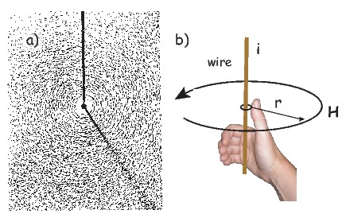
Electric currents make magnetic fields, so we can define what is meant by a “magnetic field” in terms of the electric current that generates it. Figure 1.1a is a picture of what happens when we pierce a flat sheet with a wire carrying a current i. When iron filings are sprinkled on the sheet, the filings line up with the magnetic field produced by the current in the wire. A loop tangential to the field is shown in Figure 1.1b, which illustrates the right-hand rule (see inset to Figure 1.1b). If your right thumb points in the direction of (positive) current flow (the direction opposite to the flow of the electrons), your fingers will curl in the direction of the magnetic field.
The magnetic field H points at right angles to both the direction of current flow and to the radial vector r in Figure 1.1b. The magnitude of H (denoted H) is proportional to the strength of the current i. In the simple case illustrated in Figure 1.1b the magnitude of H is given by Ampère’s law:
where r is the length of the vector r. So, now we know the units of H: Am−1.
Ampère’s Law in its most general form is one of Maxwell’s equations of electromagnetism: in a steady electrical field, ∇× H = Jf, where Jf is the electric current density (see Section A.3.6 in the appendix for review of the ∇ operator). In words, the curl (or circulation) of the magnetic field is equal to the current density. The origin of the term “curl” for the cross product of the gradient operator with a vector field is suggested in Figure 1.1a in which the iron filings seem to curl around the wire.
An electrical current in a wire produces a magnetic field that “curls” around the wire. If we bend the wire into a loop with an area πr2 that carries a current i (Figure 1.2a), the current loop would create the magnetic field shown by pattern of the iron filings. This magnetic field is that same as the field that would be produced by a permanent magnet. We can quantify the strength of that hypothetical magnet in terms of a magnetic moment m (Figure 1.2b). The magnetic moment is created by a current i and also depends on the area of the current loop (the bigger the loop, the bigger the moment). Therefore, the magnitude of the moment can by quantified by m = iπr2. The moment created by a set of loops (as shown in Figure 1.2c) would be the sum of the n individual loops, i.e.:
|
| (1.1) |
So, now we know the units of m: Am2. In nature, magnetic moments are carried by magnetic minerals the most common of which are magnetite and hematite (see Chapter 6 for details).

The magnetic field is a vector field because at any point it has both direction and magnitude. Consider the field of the bar magnet in Figure 1.3a. The direction of the field at any point is given by the arrows while the strength depends on how close the field lines are to one another. The magnetic field lines represent magnetic flux. The density of flux lines is one measure of the strength of the magnetic field: the magnetic induction B.

Just as the motion of electrically charged particles in a wire (a current) create a magnetic field (Ampère’s Law), the motion of a magnetic field creates electric currents in nearby wires. The stronger the magnetic field, the stronger the current in the wire. We can therefore measure the strength of the magnetic induction (the density of magnetic flux lines) by moving a conductive wire through the magnetic field (Figure 1.3b).
Magnetic induction can be thought of as something that creates a potential difference with voltage V in a conductor of length l when the conductor moves relative to the magnetic induction B with velocity v (see Figure 1.3b): V = vlB. From this we can derive the units of magnetic induction: the tesla (T). One tesla is the magnetic induction that generates a potential of one volt in a conductor of length one meter when moving at a rate of one meter per second. So now we know the units of B: V ⋅ s ⋅ m−2 = T.
Another way of looking at B is that if magnetic induction is the density of magnetic flux lines, it must be the flux Φ per unit area. So an increment of flux dΦ is the field magnitude B times the increment of area dA. The area here is the length of the wire l times its displacement ds in time dt. The instantaneous velocity is dv = ds∕dt so dΦ = BdA and the rate of change of flux is:
 | (1.2) |
Equation 1.2 is known as Faraday’s law and in its most general form is the fourth of Maxwell’s equations. We see from Equation 1.2 that the units of magnetic flux must be a volt-second which is a unit in its own right: the weber (Wb). The weber is defined as the amount of magnetic flux which, when passed through a one-turn coil of a conductor carrying a current of one ampere, produces an electric potential of one volt. This definition suggests a means to measure the strength of magnetic induction and is the basis of the “fluxgate” magnetometer.
A magnetic moment m in the presence of a magnetic field B has a magnetostatic energy (Em) associated with it. This energy tends to align compass needles with the magnetic field (see Figure 1.4). Em is given by −m ⋅ B or −mB cosθ where m and B are the magnitudes of m and B, respectively (see Section A.3.4 in the appendix for review of vector multiplication). Magnetic energy has units of joules and is at a minimum when m is aligned with B.

Magnetization M is a normalized moment (Am2). We will use the symbol M for volume normalization (units of Am−1) or Ω for mass normalization (units of Am2kg−1). Volume normalized magnetization therefore has the same units as H, implying that there is a current somewhere, even in permanent magnets. In the classical view (pre-quantum mechanics), sub-atomic charges such as protons and electrons can be thought of as tracing out tiny circuits and behaving as tiny magnetic moments. They respond to external magnetic fields and give rise to an induced magnetization. The relationship between the magnetization induced in a material MI and the external field H is defined as:
|
| (1.3) |
The parameter χb is known as the bulk magnetic susceptibility of the material; it can be a complicated function of orientation, temperature, state of stress, time scale of observation and applied field, but is often treated as a scalar. Because M and H have the same units, χb is dimensionless. In practice, the magnetic response of a substance to an applied field can be normalized by volume (as in Equation 1.3) or by mass or not normalized at all. We will use the symbol κ for mass normalized susceptibility and K for the raw measurements (see Table 1.1) when necessary.
Certain materials can produce magnetic fields in the absence of external magnetic fields (i.e., they are permanent magnets). As we shall see in later chapters, these so-called “spontaneous” magnetic moments are also the result of spins of electrons which, in some crystals, act in a coordinated fashion, thereby producing a net magnetic field. The resulting spontaneous magnetization can be fixed by various mechanisms and can preserve records of ancient magnetic fields. This remanent magnetization forms the basis of the field of paleomagnetism and will be discussed at length in subsequent chapters.
B and H are closely related and in paleomagnetic practice, both B and H are referred to as the “magnetic field”. Strictly speaking, B is the induction and H is the field, but the distinction is often blurred. The relationship between B and H is given by:
|
| (1.4) |
where μ is a physical constant known as the permeability. In a vacuum, this is the permeability of free space, μo. In the SI system, μ has dimensions of henries per meter and μo is
4π × 10−7H ⋅ m−1. In most cases of paleomagnetic interest, we are outside the magnetized body so M = 0 and B = μoH.
So far, we have derived magnetic units in terms of the Système International (SI). In practice, you will notice that people frequently use what are known as cgs units, based on centimeters, grams and seconds. You may wonder why any fuss would be made over using meters as opposed to centimeters because the conversion is trivial. With magnetic units, however, the conversion is far from trivial and has been the source of confusion and many errors. So, in the interest of clearing things up, we will briefly outline the cgs approach to magnetic units.
The derivation of magnetic units in cgs is entirely different from SI. The approach we will take here follows that of Cullity (1972). We start with the concept of a magnetic pole with strength p instead of with current loops as we did for SI units. We will consider the force between two poles p1,p2 (see Figure 1.5) Coulomb’s law. This states that the force between two charges (q1,q2) is:
 | (1.5) |
where r is the distance between the two charges. In cgs units, the proportionality constant k is simply unity, whereas in SI units it is 1 __ 4πϵ0 where ϵ0 = 107 _ 4πc2 and c is the speed of light in a vacuum (hence ϵ0 = 8.859 ⋅ 10−12 AsV−1m−1). [You can see why many people really prefer cgs but we are not allowed to publish in cgs in most of geophysical journals so we just must grin and bear it!]
For magnetic units, we use pole strength p1,p2 in units of electrostatic units or esu, so Equation 1.5 becomes

Force in cgs is in units of dynes (dyn), so
A magnetic pole, as an isolated electric charge, would create a magnetic induction μoH in the space around it. One unit of field strength (defined as one oersted or Oe) is the unit of field strength that exerts a force of one dyne on a unit of pole strength. The related induction (μoH) has units of gauss or G.
The relationship between force, pole and magnetic field is written as:
Returning to the lines of force idea developed for magnetic fields earlier, let us define the oersted to be the magnetic field which would produce an induction with one unit of induction per square centimeter. Imagine a sphere with a radius r surrounding the magnetic monopole. The surface area of such a sphere is 4πr2. When the sphere is a unit sphere (r = 1) and the field strength at the surface is 1 Oe, then there must be a magnetic flux of 4π units of induction passing through it.
You will have noticed the use of the permeability of free space μo in the above treatment – a parameter missing in many books and articles using the cgs units. The reason for this is that μo is unity in cgs units and simply converts oersteds (H) to gauss (B = μoH). Therefore in cgs units, B and H are used interchangeably. We inserted it in this derivation to remind us that there IS a difference and that the difference becomes very important when we convert to SI because μo is not unity, but 4π x 10−7! For conversion between commonly used cgs and SI paramters, please refer to Table 1.1.
Proceeding to the notion of magnetic moment, from a cgs point of view, we start with a magnet of length l with two poles of strength p at each end. Placing the magnet in a field μoH, we find that it experiences a torque Γ proportional to p,l and H such that
 | (1.6) |
Recalling our earlier discussion of magnetic moment, you will realize that pl is simply the magnetic moment m. This line of reasoning also makes clear why it is called a “moment”. The units of torque are energy, which are ergs in cgs, so the units of magnetic moment are technically erg per gauss. But because of the “silent” μo in cgs, magnetic moment is most often defined as erg per oersted We therefore follow convention and define the “electromagnetic unit” (emu) as being one erg ⋅ oe−1. [Some use emu to refer to the magnetization (volume normalized moment, see above), but this is incorrect and a source of a lot of confusion.]
| Parameter | SI unit | cgs unit | Conversion | |
| Magnetic moment (m) | Am2 | emu | 1 A m2 = 103 emu | |
| Magnetization | ||||
| by volume (M) | Am−1 | emu cm−3 | 1 Am−1 = 10−3 emu cm−3 | |
| by mass (Ω) | Am2kg−1 | emu gm−1 | 1 Am2kg−1 = 1 emu gm−1 | |
| Magnetic Field (H) | Am−1 | Oersted (oe) | 1 Am−1 = 4π x 10−3 oe | |
| Magnetic Induction (B) | T | Gauss (G) | 1 T = 104 G | |
| Permeability | ||||
| of free space (μo) | Hm−1 | 1 | 4π x 10−7 Hm−1 = 1 | |
| Susceptibility | ||||
| total (K:mH) | m3 | emu oe−1 | 1 m3 = 106 4π emu oe−1 | |
| by volume ( χ: M H) | - | emu cm−3 oe−1 | 1 S.I. = 1 _ 4π emu cm−3 oe−1 | |
| by mass (κ:mm ⋅ 1 _ H) | m3kg −1 | emu g−1 oe−1 | 1 m3kg−1 = 103 4π emu g−1 oe−1 | |
1 H = kg m2A−2s−2, 1 emu = 1 G cm3, B = μoH (in vacuum), 1 T = kg A−1 s−2
An isolated electrical charge produces an electrical field that begins at the source (the charge) and spread (diverge) outward (see Figure 1.6a). Because there is no return flux to an oppositely charged “sink”, there is a net flux out of the dashed box shown in the figure. The divergence of the electrical field is defined as ∇⋅ E which quantifies the net flux (see Appendix A.3.6 for more). In the case of the field around an electric charge, the divergence is non-zero.
Magnetic fields are different from electrical fields in that there is no equivalent to an isolated electrical charge; there are only pairs of “opposite charges” – magnetic dipoles. Therefore, any line of flux starting at one magnetic pole, returns to its sister pole and there is no net flux out of the box shown in Figure 1.6b; the magnetic field has no divergence (Figure 1.6b). This property of magnetic fields is another of Maxwell’s equations: ∇⋅ B = 0.
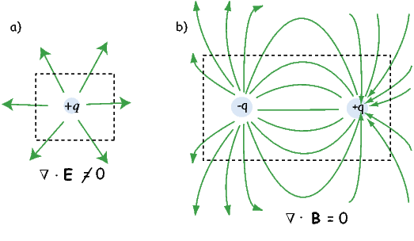
In the special case away from electric currents and magnetic sources (so B = μoH), the magnetic field can be written as the gradient of a scalar field that is known as the magnetic potential, ψm, i.e.,
The presence of a magnetic moment m creates a magnetic field which is the gradient of some scalar field. To gain a better intuitive feel about the relationship between scalar fields and their gradient vector fields, see Appendix A.3.6. Because the divergence of the magnetic field is zero, by definition, the divergence of the gradient of the scalar field is also zero, or ∇2ψm = 0. The operator ∇2 is called the Laplacian and ∇2ψm = 0 is Laplace’s equation. This will be the starting point for spherical harmonic analysis of the geomagnetic field discussed briefly in Chapter 2.
The curl of the magnetic field (∇×H) depends on the current density and is not always zero and magnetic fields cannot generally be represented as the gradient of a scalar field. Laplace’s equation is only valid outside the magnetic sources and away from currents.
So what is this magnetic potential and how does it relate to the magnetic moments that give rise to the magnetic field? Whatever it is, it has to satisfy Laplace’s equation, so we turn to solutions of Laplace’s equation for help. One solution is to define the magnetic potential ψm as a function of the vector r with radial distance r and the angle θ from the moment. Given a dipole moment m, a solution to Laplace’s equation is:
 | (1.7) |
You can verify this by making sure that∇2ψm = 0.
The radial (Hr) and tangential (Hθ) components of H at P (Figure 1.7) then would be:
|
| (1.8) |
respectively.
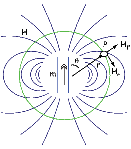
Measurement and description of the geomagnetic field and its spatial and temporal variations constitute one of the oldest geophysical disciplines. However, our ability to describe the field far exceeds our understanding of its origin. All plausible theories involve generation of the geomagnetic field within the fluid outer core of the Earth by some form of magnetohydrodynamic dynamo. Attempts to solve the full mathematical complexities of magnetohydrodynamics succeeded only in 1995 (Glatzmaier and Roberts, 1995).
Quantitative treatment of magnetohydrodynamics is (mercifully) beyond the scope of this book, but we can provide a qualitative explanation. The first step is to gain some appreciation for what is meant by a self-exciting dynamo. Maxwell’s equations tell us that electric and changing magnetic fields are closely linked and can affect each other. Moving an electrical conductor through a magnetic field will cause electrons to flow, generating an electrical current. This is the principle of electric motors. A simple electromechanical disk-dynamo model such as that shown in Figure 1.8 contains the essential elements of a self-exciting dynamo. The model is constructed with a copper disk rotating attached to an electrically conducting (e.g., brass) axle. An initial magnetic induction field, B, is perpendicular to the copper disk in an upward direction. Electrons in the copper disk experience a push from the magnetic field known as the Lorentz force, FL, when they pass through the field.
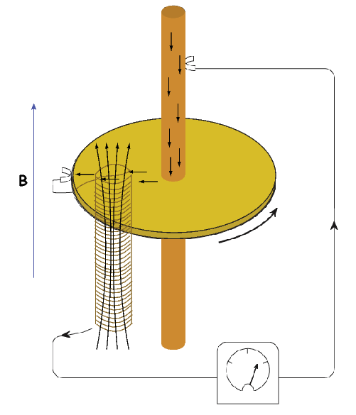
The Lorentz force is given by:
 | (1.9) |
where q is the electrical charge of the electrons, and v is their velocity. The Lorentz force on the electrons is directed toward the axle of the disk and the resulting electrical current flow is toward the outside of the disk (Figure 1.8).
Brush connectors are used to tap the electrical current from the disk, and the current passes through a coil under the disk. This coil is cleverly wound so that the electrical current produces a magnetic induction field in the same direction as the original field. The electrical circuit is a positive feedback system that reinforces the original magnetic induction field. The entire disk-dynamo model is a self-exciting dynamo. As long as the disk keeps rotating, the electrical current will flow, and the magnetic field will be sustained even if the original field disappears.
With this simple model we encounter the essential elements of any self-exciting dynamo:
More complicated setups using two disks whose fields interact with one another generate chaotic magnetic behavior that can switch polarities even if the mechanical motion remains steady. Certainly no one proposes that systems of disks and feedback coils exist in the Earth’s core. But interaction between the magnetic field and the electrically conducting iron-nickel alloy in the outer core can produce a positive feedback and allow the Earth’s core to operate as a self-exciting magnetohydrodynamic dynamo. For reasonable electrical conductivities, fluid viscosity, and plausible convective fluid motions in the Earth’s outer core, the fluid motions can regenerate the magnetic field that is lost through electrical resistivity. There is a balance between fluid motions regenerating the magnetic field and loss of magnetic field because of electrical resistivity. The dominant portion of the geomagnetic field detectable at the surface is essentially dipolar with the axis of the dipole nearly parallel to the rotational axis of the Earth. Rotation of the Earth must therefore be a controlling factor on the time-averaged fluid motions in the outer core. It should also be pointed out that the magnetohydrodynamic dynamo can operate in either polarity of the dipole. Thus, there is no contradiction between the observation of reversals of the geomagnetic dipole and magnetohydrodynamic generation of the geomagnetic field. However, understanding the special interactions of fluid motions and magnetic field that produce geomagnetic reversals is a major challenge.
As wise economists have long observed, there is no free lunch. The geomagnetic field is no exception. Because of ohmic dissipation of energy, there is a requirement for energy input to drive the magnetohydrodynamic fluid motions and thereby sustain the geomagnetic field. Estimates of the power (energy per unit time) required to generate the geomagnetic field are about 1013 W (roughly the output of 104 nuclear power plants). This is about one fourth of the total geothermal flux, so the energy involved in generation of the geomagnetic field is a substantial part of the Earth’s heat budget.
Many sources of this energy have been proposed, and ideas on this topic have changed over the years. The energy sources that are currently thought to be most reasonable are a combination of cooling of the Earth’s core with attendant freezing of the outer core and growth of the solid inner core. The inner core is pure iron, while the liquid outer core is some 15% nickel (and probably has trace amounts of other elements as well). The freezing of the inner core therefore generates a bouyancy force as the remaining liquid becomes more enriched in the lighter elements. These energy sources are sufficient to power the fluid motions of the outer core required to generate the geomagnetic field.
SUPPLEMENTAL READINGS: Jiles (1991), Chapter 1; Cullity (1972), Chapter 1.
Problem 1
In axisymmetric spherical coordinates, ∇ (the gradient operator) is given by

We also know that

and that ψm is a scalar function of position:
Find the radial and tangential components of H if m is 80 ZAm2, [remember that “Z” stands for Zeta which stands for 1021], r is 6 x 106 m and θ is 45o. What are these field values in terms of B (teslas)?
Write your answers in a markdown cell in a jupyter notebook using latex syntax.
Problem 2
a) In your Jupyter notebook, write Python functions to convert induction, moment and magnetic field quantities in cgs units to SI units. Use the conversion factors in Table 1.1. Use your function to convert the following from cgs to SI:
i) B = 3.5 x105 G
ii) m = 2.78 x 10−20 G cm3
iii) H = 128 oe
b) In a new code block, modify your function to allow conversion from cgs => SI or SI => cgs. Rerun it to convert your answers from a) back to cgs.
HINTS: Call the functions with the values of B, m and H and have the function return the converted values. In the modified functions, you can specify whether the conversion is from cgs or SI.
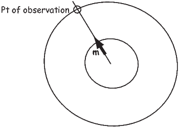
Problem 3
Figure 1.9 shows a meridional cross section through the Earth in the plane of a magnetic dipole source m. At the location directly above the dipole, the field from the dipole is directed vertically downward and has intensity 10 μT. The dipole source is placed at 3480 km from the center of the Earth. Assume a mean Earth radius of 6370 km. Adapt the geometry of Figure 1.7 and the equations describing the magnetic field of a dipole to the model dipole in Figure 1.9.
a) Calculate the magnetic dipole moment of the model dipole. Remember to keep track of your units!
b) Compare this field to the total field produced by a centered axial magnetic dipole moment (i.e., one that is pointing straight up and is in the center of the circles) equivalent to that of the present geomagnetic field (m ∼ 80 ZAm2; Z=1021). Assume a latitude for the point of observation of 60∘. [HINT: the angle θ in Equation 1.10 is the co-latitude, not the latitude.]
 | (1.10) |
Problem 4
Knowing that B = μoH, work out the fundamental units of μo in SI units. Prepare your answer in a markdown cell in your Jupyter notebook.
The part of the geomagnetic field of interest to paleomagnetists is generated by convection currents in the liquid outer core of the Earth which is composed of iron, nickel and some unknown lighter component(s). The source of energy for this convection is not known for certain, but is thought to be partly from cooling of the core and partly from the bouyancy of the iron/nickel liquid outer core caused by freezing out of the pure iron inner core. Motions of this conducting fluid are controlled by the bouyancy of the liquid, the spin of the Earth about its axis and by the interaction of the conducting fluid with the magnetic field (in a horribly non-linear fashion). Solving the equations for the fluid motions and resulting magnetic fields is a challenging computational task. Recent numerical models, however, show that such magnetohydrodynamical systems can produce self-sustaining dynamos which create enormous external magnetic fields.
The magnetic field of a dipole aligned along the spin axis and centered in the Earth (a so-called geocentric axial dipole, or GAD) is shown in Figure 2.1a. [See Chapter 1 for a derivation of how to find the radial and tangential components of such a field.] By convention, the sign of the Earth’s dipole is negative, pointing toward the south pole as shown in Figure 2.1a and magnetic field lines point toward the north pole. They point downward in the northern hemisphere and upward in the southern hemisphere.
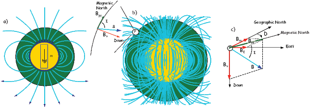
Although dominantly dipolar, the geomagnetic field is not perfectly modeled by a geocentric axial dipole, but is somewhat more complicated (see Figure 2.1b). At the point on the surface labeled ‘P’, the geomagnetic field points nearly north and down at an angle of approximately 60∘. Vectors in three dimensions are described by three numbers and in many paleomagnetic applications, these are two angles (D and I) and the strength (B) as shown in Figure 2.1b and c. The angle from the horizontal plane is the inclination I; it is positive downward and ranges from +90∘ for straight down to -90∘ for straight up. If the geomagnetic field were that of a perfect GAD field, the horizontal component of the magnetic field (BH in Figure 2.1b) would point directly toward geographic north. In most places on the Earth there is a deflection away from geographic north and the angle between geographic and magnetic north is the declination, D (see Figure 2.1c). D is measured positive clockwise from North and ranges from 0 → 360∘. [Westward declinations can also be expressed as negative numbers, i.e., 350∘ = -10∘.] The vertical component (BV in Figure 2.1b,c) of the geomagnetic field at P, is given by
|
| (2.1) |
and the horizontal component BH (Figure 2.1c) by
 | (2.2) |
BH can be further resolved into north and east components (BN and BE in Figure 2.1c) by
|
| (2.3) |
Depending on the particular problem, some coordinate systems are more suitable to use because they have the symmetry of the problem built into them. We have just defined a coordinate system using two angles and a length (B,D,I) and the equivalent Cartesian coordinates of (BN,BE,BV ). We will need to convert among them at will. There are many names for the Cartesian coordinates. In addition to north, east and down, they could also be x,y,z or even x1,x2 and x3. The convention used in this book is that axes are denoted X1,X2,X3, while the components along the axes are frequently designated x1,x2,x3. In the geographic frame of reference, positive X1 is to the north, X2 is east and X3 is vertically down in keeping with the right-hand rule. To convert from Cartesian coordinates to angular coordinates (B,D,I):
|
| (2.4) |
Be careful of the sign ambiguity of the tangent function. You may well end up in the wrong quadrant and have to add 180∘; this will happen if both x1 and x2 are negative. In most computer languages, there is a function atan2 which takes care of this, but most hand calculators will not. Remember that most computer languages expect angles to be given in radians, not degrees, so multiply degrees by π∕180 to convert to radians. Note also that in place of B for magnetic induction with units of tesla as a measure of vector length, (see Chapter 1), we could also use H, M ( both Am−1) or m (Am2) for magnetic field, magnetization or magnetic moment respectively.
We can measure declination, inclination and intensity at different places around the globe, but not everywhere all the time. Yet it is often handy to be able to predict what these components are. For example, it is extremely useful to know what the deviation is between true North and declination in order to find our way with maps and compasses. In principle, magnetic field vectors can be derived from the magnetic potential ψm as we showed in Chapter 1. For an axial dipolar field, there is but one scalar coefficient (the magnetic moment m of a dipole source). For the geomagnetic field, there are many more coefficients, including not just an axial dipole aligned with the spin axis, but two orthogonal equatorial dipoles and a whole host of more complicated sources such as quadrupoles, octupoles and so on. A list of coefficients associated with these sources allows us to calculate the magnetic field vector anywhere outside of the source region. In this section, we outline how this might be done.
As we learned in Chapter 1, the magnetic field at the Earth’s surface can be calculated from the gradient of a scalar potential field (H = −∇ψm), and this scalar potential field satisfies Laplace’s Equation:
 | (2.5) |
For the geomagnetic field (ignoring external sources of the magnetic field which are in any case small and transient), the potential equation can be written as:
 | (2.6) |
where a is the radius of the Earth (6.371 × 106 m). In addition to the radial distance r and the angle away from the pole θ, there is ϕ, the angle around the equator from some reference, say, the Greenwich meridian. Here, θ is the co-latitude and ϕ is the longitude. The glms and hlms are the gauss coefficients (degree l and order m) for hypothetical sources at radii less than a calculated for a particular year. These are normally given in units of nT. The Plms are wiggly functions called partially normalized Schmidt polynomials of the argument cosθ. These are closely related to the associated Legendre polynomials. [When m = 0 the Schmidt and Legendre polynomials are identical.] The first few of Plms are:

To get an idea of how the gauss coefficients in the potential relate to the associated magnetic fields, we show three examples in Figure 2.3. We plot the inclinations of the vector fields that would be produced by the terms with g10,g20 and g30 respectively. These are the axial (m = 0) dipole (l = 1), quadrupole (l = 2) and octupole (l = 3) terms. The associated potentials for each harmonic are shown in the insets.
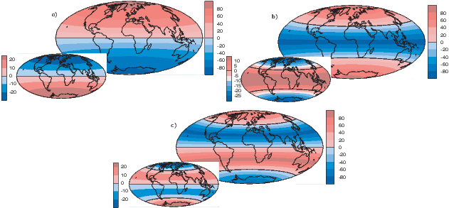
In general, terms for which the difference between the subscript (l) and the superscript (m) is odd (e.g., the axial dipole g10 and octupole g30) produce magnetic fields that are antisymmetric about the equator, while those for which the difference is even (e.g., the axial quadrupole g20) have symmetric fields. In Figure 2.3a we show the inclinations produced by a purely dipolar field of the same sign as the present day field. The inclinations are all positive (down) in the northern hemisphere and negative (up) in the southern hemisphere. In contrast, inclinations produced by a purely quadrupolar field (Figure 2.3b) are down at the poles and up at the equator. The map of inclinations produced by a purely axial octupolar field (Figure 2.3c) are again asymmetric about the equator with vertical directions of opposite signs at the poles separated by bands with the opposite sign at mid-latitudes.
As noted before, there is not one, but three dipole terms in Equation 2.6, the
axial term (g10) and two equatorial terms (g11 and h11). Therefore, the total
dipole contribution is the vector sum of these three or  . The
total quadrupole contribution (l = 2) combines five coefficients and the total
octupole (l = 3) contribution combines seven coefficients.
. The
total quadrupole contribution (l = 2) combines five coefficients and the total
octupole (l = 3) contribution combines seven coefficients.
So how do we get this marvelous list of gauss coefficients? If you want to know the details, please refer Langel (1987). We will just give a brief introduction here. Recalling Chapter 1, once the scalar potential ψm is known, the components of the magnetic field can be calculated from it. We solved this for the radial and tangential field components (Hr and Hθ) in Chapter 1. We will now change coordinate and unit systems and introduce a third dimension (because the field is not perfectly dipolar). The north, east, and vertically down components are related to the potential ψm by:
 | (2.7) |
where r, θ, ϕ are radius, co-latitude (degrees away from the North pole) and longitude, respectively. Here, BV is positive down, BE is positive east, and BN is positive to the north, the opposite of Hr and Hθ as defined in Chapter 1. Note that Equation 2.7 is in units of induction, not Am−1 if the units for the gauss coefficients are in nT, as is the current practice.
Going backwards, the gauss coefficients are determined by fitting Equations 2.7 and 2.6 to observations of the magnetic field made by magnetic observatories or satellite for a particular time. The International (or Definitive) Geomagnetic Reference Field or I(D)GRF, for a given time interval is an agreed upon set of values for a number of gauss coefficients and their time derivatives. IGRF (or DGRF) models and programs for calculating various components of the magnetic field are available on the internet from the National Geophysical Data Center; the address is http://www.ngdc.noaa.gov. there is also a program igrf.py included in the PmagPy package (see igrf.py documentation).
In practice, the gauss coefficients for a particular reference field are estimated by least-squares fitting of observations of the geomagnetic field. You need a minimum of 48 observations to estimate the coefficients to l = 6. Nowadays, we have satellites which give us thousands of measurements and the list of generation 10 of the IGRF for 2005 goes to l = 13.
| l | m | g( nT) | h (nT) | l | m | g( nT) | h (nT) |
| 1 | 0 | -29442.0 | 0 | 5 | 0 | -232.6 | 0 |
| 1 | 1 | -1501.0 | 4797.1 | 5 | 1 | 360.1 | 47.3 |
| 2 | 0 | -2445.1 | 0 | 5 | 2 | 192.4 | 197.0 |
| 2 | 1 | 3012.9 | -2845.6 | 5 | 3 | -140.9 | -119.3 |
| 2 | 2 | 1676.7 | -641.9 | 5 | 4 | -157.5 | 16.0 |
| 3 | 0 | 1350.7 | 0 | 5 | 5 | 4.1 | 100.2 |
| 3 | 1 | -2352.3 | -115.3 | 6 | 0 | 70.0 | 0 |
| 3 | 2 | 1225.6 | 244.9 | 6 | 1 | 67.7 | -20.8 |
| 3 | 3 | 582.0 | -538.4 | 6 | 2 | 72.7 | 33.2 |
| 4 | 0 | 907.6 | 0 | 6 | 3 | -129.9 | 58.9 |
| 4 | 1 | 813.7 | 283.3 | 6 | 4 | -28.9 | -66.7 |
| 4 | 2 | 120.4 | -188.7 | 6 | 5 | 13.2 | 7.3 |
| 4 | 3 | -334.9 | 180.9 | 6 | 6 | -70.9 | 62.6 |
| 4 | 4 | 70.4 | -329.5 | ||||
In order to get a feel for the importance of the various gauss coefficients, take a look at Table 2.1, which has the Schmidt quasi-normalized gauss coefficients for the first six degrees from the IGRF for 2005. The power at each degree is the average squared field per spherical harmonic degree over the Earth’s surface and is calculated by Rl = ∑ m(l + 1)[(glm)2 + (hlm)2] (Lowes, 1974). The so-called Lowes spectrum is shown in Figure 2.4. It is clear that the lowest order terms (degree one) totally dominate, constituting some 90% of the field. This is why the geomagnetic field is often assumed to be equivalent to a magnetic field created by a simple dipole at the center of the Earth.
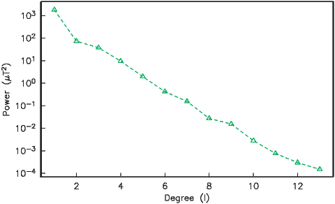

The beauty of using the geomagnetic potential field is that the vector field can be evaluated anywhere outside the source region. Using the values for a given reference field in Equations 2.6 and 2.7, we can calculate values of B,D and I at any location on Earth. Figure 2.1b shows the lines of flux predicted from the 2005 IGRF from the core-mantle boundary up. We can see that the field becomes simpler and more dipolar as we move from the core mantle boundary to the surface. Yet, there is still significant non-dipolar structure in the geomagnetic field even at the Earth’s surface.
We can recast the vectors at the surface of the Earth into maps of components as shown in Figure 2.5a,b. We show the potential in Figure 2.5c for comparison with that of a pure dipole (inset to Figure 2.3a). These maps illustrate the fact that the field is a complicated function of position on the surface of the Earth. The intensity values in Figure 2.5a are, in general, highest near the poles (∼ 60 μT) and lowest near the equator (∼ 30 μT), but the contours are not straight lines parallel to latitude as they would be for a field generated strictly by a geocentric axial dipole (GAD) (e.g, Figure 2.1a). Similarly, a GAD would produce lines of inclination that vary in a regular way from -90∘ to +90∘ at the poles, with 0∘ at the equator; the contours would parallel the lines of latitude. Although the general trend in inclination shown in Figure 2.5b is similar to the GAD model, the field lines are more complicated, which again suggests that the field is not perfectly described by a geocentric bar magnet.

Perhaps the most important result of spherical harmonic analysis for our purposes is that the field at the Earth’s surface is dominated by the degree one terms (l = 1) and the external contributions are very small. The first order terms can be thought of as geocentric dipoles that are aligned with three different axes: the spin axis (g10) and two equatorial axes that intersect the equator at the Greenwich meridian (h10) and at 90∘ East (h11). The vector sum of these geocentric dipoles is a dipole that is currently inclined by about 10∘ to the spin axis. The axis of this best-fitting dipole pierces the surface of the Earth at the circle in Figure 2.6. This point and its antipode are called geomagnetic poles. Points at which the field is vertical (I = ±90∘ shown by a square in Figure 2.6) are called magnetic poles, or sometimes dip poles. These poles are distinguishable from the geographic poles, where the spin axis of the Earth intersects its surface. The northern geographic pole is shown by a star in Figure 2.6.
It turns out that when averaged over sufficient time, the geomagnetic field actually does seem to be approximately a GAD field, perhaps with a pinch of g20 thrown in (see e.g., Merrill et al., 1996). The GAD model of the field will serve as a useful crutch throughout our discussions of paleomagnetic data and applications. Averaging ancient magnetic poles over enough time to average out secular variation (thought to be 104 or 105 years) gives what is known as a paleomagnetic pole; this is usually assumed to be co-axial with the Earth’s geographic pole (the spin axis).
Because the geomagnetic field is axially dipolar to a first approximation, we can write:
|
| (2.8) |
Note that g10 is given in nT in Table 2.1. Thus, from Equation 2.8,
 | (2.9) |
Given some latitude λ on the surface of the Earth in Figure 2.1a and using the equations for BV and BN, we find that:
 | (2.10) |
This equation is sometimes called the dipole formula and shows that the inclination of the magnetic field is directly related to the co-latitude (θ) for a field produced by a geocentric axial dipole (or g10). The dipole formula allows us to calculate the latitude of the measuring position from the inclination of the (GAD) magnetic field, a result that is fundamental in plate tectonic reconstructions. The intensity of a dipolar magnetic field is also related to (co)latitude because:
|
| (2.11) |
The dipole field intensity has changed by more than an order of magnitude in the past and the dipole relationship of intensity to latitude turns out to be not useful for tectonic reconstructions.
Magnetic field and magnetization directions can be visualized as unit vectors anchored at the center of a unit sphere. Such a unit sphere is difficult to represent on a 2-D page. There are several popular projections, including the Lambert equal area projection which we will be making extensive use of in later chapters. The principles of construction of the equal area projection are covered in the Appendix B.1.
In general, regions of equal area on the sphere project as equal area regions on this projection, as the name implies. Plotting directional data in this way enables rapid assessment of data scatter. A drawback of this projection is that circles on the surface of a sphere project as ellipses. Also, because we have projected a vector onto a unit sphere, we have lost information concerning the magnitude of the vector. Finally, lower and upper hemisphere projections must be distinguished with different symbols. The paleomagnetic convention is: lower hemisphere projections (downward directions) use solid symbols, while upper hemisphere projections are open.

The dipole formula allows us to convert a given measurement of I to an equivalent magnetic co-latitude θm:
 | (2.12) |
If the field were a simple GAD field, θm would be a reasonable estimate of θ, but non-GAD terms can invalidate this assumption. To get a feel for the effect of these non-GAD terms, we consider first what would happen if we took random measurements of the Earth’s present field (see Figure 2.7). We evaluated the directions of the magnetic field using the IGRF for 2005 at 200 positions on the globe (shown in Figure 2.7a). These directions are plotted in Figure 2.7b using the paleomagnetic convention of open symbols pointing up and closed symbols pointing down. In Figure 2.7c, we plot the inclinations as a function of latitude. As expected from a predominantly dipolar field, inclinations cluster around the values for a geocentric axial dipolar field but there is considerable scatter and interestingly the scatter is larger in the southern hemisphere than in the northern one. This is related to the low intensities beneath South America and the Atlantic region seen in Figure 2.5a.
Often we wish to compare directions from distant parts of the globe. There is an inherent difficulty in doing so because of the large variability in inclination with latitude. In such cases it is appropriate to consider the data relative to the expected direction (from GAD) at each sampling site. For this purpose, it is useful to use a transformation whereby each direction is rotated such that the direction expected from a geocentric axial dipole field (GAD) at the sampling site is the center of the equal area projection. This is accomplished as follows:
Each direction is converted to Cartesian coordinates (xi) by:
 | (2.13) |
These are rotated to the new coordinate system (x′i, see Appendix A.3.5) by:

where Id = the inclination expected from a GAD field (tanId = 2tanλ), λ is the site latitude, and α is the inclination of the paleofield vector projected onto the N-S plane (α = tan−1(x3∕x1)). The x′i are then converted to D′,I′ by Equation 2.4.
In Figure 2.8a we show the geomagnetic field vectors evaluated at random longitudes along a latitude band of 45∘N. The vectors are shown in their Cartesian coordinates of North, East and Down. In Figure 2.8b we show what happens when we rotate the coordinate system to peer down the direction expected from an axial dipolar field at 45∘N (which has an inclination of 63∘). The vectors circle about the expected direction. Finally, we see what happens to the directions shown in Figure 2.7b after the D′,I′ transformation in Figure 2.8. These are unit vectors projected along the expected direction for each observation in Figure 2.7a. Comparing the equal area projection of the directions themselves (Figure 2.7b) to the transformed directions (Figure 2.8c), we see that the latitudal dependence of the inclinations has been removed.
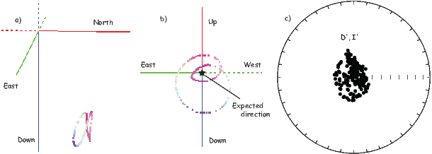

We are often interested in whether the geomagnetic pole has changed, or whether a particular piece of crust has rotated with respect to the geomagnetic pole. Yet, what we observe at a particular location is the local direction of the field vector. Thus, we need a way to transform an observed direction into the equivalent geomagnetic pole.
In order to remove the dependence of direction merely on position on the globe, we imagine a geocentric dipole which would give rise to the observed magnetic field direction at a given latitude (λ) and longitude (ϕ). The virtual geomagnetic pole (VGP) is the point on the globe that corresponds to the geomagnetic pole of this imaginary dipole (Figure 2.9a).
Paleomagnetists use the following conventions: ϕ is measured positive eastward from the Greenwich meridian and ranges from 0 → 360∘; θ is measured from the North pole and goes from 0 → 180∘. Of course θ relates to latitude, λ by θ = 90 − λ. θm is the magnetic co-latitude and is given by Equation 2.12. Be sure not to confuse latitudes and co-latitudes. Also, be careful with declination. Declinations between 180∘ and 360∘ are equivalent to D - 360 ∘ which are counter-clockwise with respect to North.
The first step in the problem of calculating a VGP is to determine the magnetic co-latitude θm by Equation 2.12 which is defined in the dipole formula (Equation 2.12). The declination D is the angle from the geographic North Pole to the great circle joining the observation site S and the pole P, and Δϕ is the difference in longitudes between P and S, ϕp −ϕs. Now we use some tricks from spherical trigonometry as reviewed in Appendix A.3.1.
We can locate VGPs using the law of sines and the law of cosines. The declination D is the angle from the geographic North Pole to the great circle joining S and P (see Figure 2.9) so:
 | (2.14) |
which allows us to calculate the VGP co-latitude θp. The VGP latitude is given by:
To determine ϕp, we first calculate the angular difference between the pole and site longitude Δϕ.
 | (2.15) |
If cosθm ≥ cosθs cosθp, then ϕp = ϕs + Δϕ. However, if cosθm < cosθs cosθp then ϕp = ϕs + 180 − Δϕ.
Now we can convert the directions in Figure 2.7b to VGPs (see Figure 2.9c). The grouping of points is much tighter in Figure 2.9c than in the equal area projection because the effect of latitude variations in dipole fields has been removed. If a number of VGPs are averaged together, the average pole position is called a “paleomagnetic pole”. How to average poles and directions is the subject of Chapters 11 and 12.
The procedure for calculating a direction from a VGP is a similar procedure to that for calculating the VGP from the direction. Magnetic colatitude θm is calculated in exactly the same way as before and yields inclination from the dipole formula. The declination can be calculated by solving for D in Equation 2.14 as:

This equation works most of the time, but breaks down under some circumstances, for example, when the pole latitude is further to the south than the site latitude. The following algorithm works in the more general case:
As pointed out earlier, magnetic intensity varies over the globe in a similar manner to inclination. It is often convenient to express paleointensity values in terms of the equivalent geocentric dipole moment that would have produced the observed intensity at a specific (paleo)latitude. Such an equivalent moment is called the virtual dipole moment (VDM) by analogy to the VGP (see Figure 2.9a). First, the magnetic (paleo)co-latitude θm is calculated as before from the observed inclination and the dipole formula of Equation 2.10. Then, following the derivation of Equation 2.11, we have
|
| (2.16) |
Sometimes the site co-latitude as opposed to magnetic co-latitude is used in the above equation, giving a virtual axial dipole moment (VADM; see Figure 2.9d).
SUPPLEMENTAL READINGS: Merrill et al. (1996), Chapters 1 & 2
For this and future problem sets, you will need the PmagPy package (see section in the Preface at the beginning of the book). After you have installed this and properly set your path, you can import the functions from PmagPy using these commands:
Please consult the Jupyter notebook PmagPy.ipynb for more help on using PmagPy functions within a notebook.
Problem 1
a) Write a python script in an Jupyter notebook that converts declination, inclination and intensity to North, East, and Down. Read in the data in the file Chapter_2/ps2_prob1_data.txt. For this the loadtxt function in the Numpy module will come in handy.
b) Choose 10 random spots on the surface of the earth. You can use the pmag.get_unf to generate a list for you. Then use the ipmag.igrf function to evaluate the declination, inclination and intensity at each of these locations in January 2006. As with all PmagPy programs, and functions, you can find out what they do by printing out the doc string: you can find out what they do by getting the help message:
Calls like these generates help messages which will help you to call the function properly.
c) Take the vectors from the output of Problem 1b and convert them to cartesian coordinates, using the script you wrote in Problem 1a.
Problem 2
a) Plot the IGRF directions from Problem 1b on an equal area projection by hand. Use the equal area net provided in the Appendix. Remember that the outer rim is horizontal and the center of the diagram is vertical. Azimuth goes around the rim with clockwise being positive. Put a thumbtack through the equal area (Schmidt) net and place a piece of tracing paper on the thumbtack. Mark the top of the stereonet with a tick mark on the tracing paper.
To plot a direction, rotate the tick mark of the tracing paper around counter clockwise until the top of the paper is rotated by the declination of the direction. Then count tick marks toward the center from the outer rim (the horizontal) to the inclination angle, plot the point, and rotate back so that the tick is North again. Put all your points on the diagram.
b) Now use the ipmag functions plot_net and plot_di. or write your own! Both plots should look the same....
Problem 3
You went to Wyoming (112∘ W and 36∘ N) to sample some Cretaceous rocks. You measured a direction with a declination of 345∘ and an inclination of 47∘.
a) What direction would you expect from the present (GAD) field?
b) What is the virtual geomagnetic pole position corresponding to the direction you actually measured? [Hint: Use the function pmag.dia_vgp in the PmagPy module or for a challenge, write your own! ]
Scientists in the late 19th century thought that it might be possible to exploit the magnetic record retained in accidental records to study the geomagnetic field in the past. Work in the mid 20th century provided the theoretical and experimental basis for presuming that such materials might retain a record of past geomagnetic fields. There are several books and articles that describe the subject in detail (see e.g., the supplemental readings). We present here a brief overview of theories on how rocks get and stay magnetized. We will begin with magnetism at the atomic level caused by electronic orbits and spins giving rise to induced magnetizations. Then we will see how electronic spins working in concert give rise to permanently magnetized substances (like magnetic minerals) making remanent magnetization possible.
We learned in Chapter 1 that magnetic fields are generated by electric currents. Given that there are no wires leading into or out of permanent magnets, you may well ask, “Where are the currents?” At the atomic level, the electric currents come from the motions of the electrons. From here quantum mechanics quickly gets esoteric, but some rudimentary understanding is helpful. In this chapter we will cover the bare minimum necessary to grasp the essentials of rock magnetism.
In Chapter 1 we took the classical (pre-quantum mechanics) approach and suggested that the orbit of an electron about the nucleus could be considered a tiny electric current with a correspondingly tiny magnetic moment. But quantum physics tells us that this “planetary” view of the atom cannot be true. An electron zipping around a nucleus would generate radio waves, losing energy and eventually would crash into the nucleus.
Apparently, this does not happen, so the classical approach is fatally flawed and we must turn to quantum mechanics.
In quantum mechanics, electronic motion is stabilized by the fact that electrons can only have certain energy states; they are quantized. The energy of a given electron can be described in terms of solutions, Ψ, to something called Schrödinger’s wave equation. The function Ψ(r,θ,ϕ) gives the probability of finding an electron at a given position. [Remember from Chapter 2 that r,θ,ϕ are the three spherical coordinates.] It depend on three special quantum numbers (n,l,m):
 | (3.1) |
The number n is the so-called “principal” quantum number. The Rnl(r) are functions specific to the element in question and the energy state of the electron n. It is evaluated at an effective radius r in atomic units. The Y lm are a fully normalized complex representation of the spherical harmonics introduced in Section 2.2. For each level n, the number l ranges from 0 to n-1 and m from l backwards to −l.
The lowest energy of the quantum wave equations is found by setting n equal to unity and both l and m to zero. Under these conditions, the solution to the wave equation is given by:

|
| (3.2) |
where Z is the atomic number and ρ is 2Zr∕n. Note that at this energy level, there is no dependence of Y on ϕ or θ. Substituting these two equations into Equation 3.1 gives the probability density Ψ for an electron as a function of radius of r. This is sketched as the line in Figure 3.1. Another representation of the same idea is shown in the inset, whereby the density of dots at a given radius reflects the probability distribution shown by the solid curve. The highest dot density is found at a radius of about one atomic unit, tapering off the farther away from the center of the atom. Because there is no dependence on θ or ϕ the probability distribution is a spherical shell. All the l,m = 0 shells are spherical and are often referred to as the 1s, 2s, 3s shells, where the numbers are the energy levels n. A surface with equal probability is a sphere and example of one such shell is shown in Figure 3.2a.
For l = 1, m will have values of -1, 0 and 1 and the Y lm(ϕ,θ)s are given by:
As might be expected, the shells for l = 2 are even more complicated that for l = 1. These shells are called “d” shells and two examples are shown in Figure 3.2c and d.
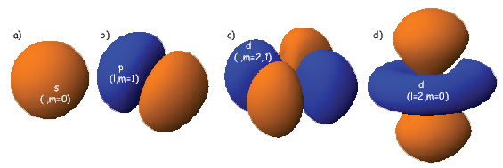
Returning to the tiny circuit idea, somehow the motion of the electrons in their shells acts like an electronic circuit and creates a magnetic moment. In quantum mechanics, the angular momentum vector of the electron L is quantized, for example as integer multiples of ℏ, the “reduced” Planck’s constant (or h _ 2π where h = 6.63 x 10−34 Js). The magnetic moment arising from the orbital angular momentum is given by:

|
| (3.3) |
This is known as the Bohr magneton.
So far we have not mentioned one last quantum number, s. This is the “spin” of the electron and has a value of ±1 2. The spin itself produces a magnetic moment which is given by 2smb, hence is numerically identical to that produced by the orbit.
Atoms have the same number of electrons as protons in order to preserve charge balance. Hydrogen has but one lonely electron which in its lowest energy state sits in the 1s electronic shell. Helium has a happy pair, so where does the second electron go? To fill in their electronic shells, atoms follow three rules:
Each unpaired spin has a moment of one Bohr magneton mb. The elements with the most unpaired spins are the transition elements which are responsible for most of the paramagnetic behavior observed in rocks. For example, in Figure 3.3 we see that Mn has a structure of: (1s22s22p63s23p6)3d54s2, hence has five unpaired spins and a net moment of 5 mb. Fe has a structure of (1s22s22p63s23p6)3d64s2 with a net moment of 4 mb, In minerals, the transition elements are in a variety of oxidation states. Fe commonly occurs as Fe2+ and Fe3+. When losing electrons to form ions, transition metals lose the 4s electrons first, so we have for example, Fe3+ with a structure of (1s22s22p63s23p6)3d5, or 5 mb. Similarly Fe2+ has 4 mb and Ti4+ has no unpaired spins. Iron is the main magnetic species in geological materials, but Mn2+ (5 mb) and Cr3+ (3 mb) occur in trace amounts.
We have learned that there are two sources of magnetic moments in electronic motions: the orbits and the (unpaired) spins. These moments respond to external magnetic fields giving rise to an induced magnetization, a phenomenon alluded to briefly in Chapter 1. We will consider first the contribution of the electronic orbits.

The angular momentum of electrons is quantized in magnitude but also has direction (see L in Figure 3.4). The angular momentum vector has an associated magnetic moment vector mb. A magnetic field H exerts a torque on the moment, which nudges it (and the momentum vector associated with it) to the side (ΔL). L therefore will precess around the magnetic field direction, much like a spinning top precesses around the direction of gravity. The precession of L is called Larmor precession.
The changed momentum vector from Larmor precession in turn results in a changed magnetic moment vector Δm. The sense of the change in net moment is always to oppose the applied field. Therefore, the response of the magnetic moments of electronic orbitals creates an induced magnetization MI that is observable outside the substance; it is related to the applied field by:

We learned in Chapter 1 that the proportionality between induced magnetization and the applied field is known as the magnetic susceptibility. The ratio MI∕H for the response of the electronic orbitals is termed the diamagnetic susceptibility χd; it is negative, essentially temperature independent and quite small. This diamagnetic response is a property of all matter, but for substances whose atoms possess atomic magnetic moments, diamagnetism is swamped by effects of magnetic fields on the atomic magnetic moments. In the absence of unpaired electronic spins, diamagnetic susceptibility dominates the magnetic response. Common diamagnetic substances include quartz (SiO2), calcite (CaCO3) and water (H2O). The mass normalized susceptibility of quartz is -0.62 x 10−9 m3kg−1 to give you an idea of the magnitudes of these things.
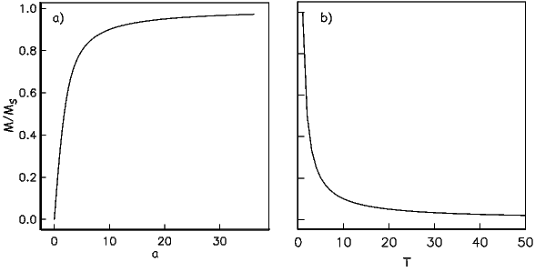
In many geological materials, the orbital contributions cancel out because they are randomly oriented with respect to one another and the magnetization arises from the electronic spins. We mentioned that unpaired electronic spins behave as magnetic dipoles with a moment of one Bohr magneton. In the absence of an applied field, or in the absence of the ordering influence of neighboring spins which are known as exchange interactions, the electronic spins are essentially randomly oriented. An applied field acts to align the spins which creates a net magnetization equal to χpH where χp is the paramagnetic susceptibility. For any geologically relevant conditions, the induced magnetization is linearly dependent on the applied field. In paramagnetic solids, atomic magnetic moments react independently to applied magnetic fields and to thermal energy. At any temperature above absolute zero, thermal energy vibrates the crystal lattice, causing atomic magnetic moments to oscillate rapidly in random in orientations. In the absence of an applied magnetic field, atomic moments are equally distributed in all directions with a resultant magnetization of zero.
A useful first order model for paramagnetism was worked out by P. Langevin in 1905. (Of course in messy reality things are a bit more complicated, but Langevin theory will work well enough for us at this stage.) Langevin theory is based on a few simple premises:
 | (3.4) |
Magnetic energy is at a minimum when the magnetic moment is lined up with the magnetic field.
Consider an atomic magnetic moment, (m = 2mb = 1.85×10−23 Am2), in a magnetic field of 10−2 T, (for reference, the largest geomagnetic field at the surface is about 65 μT – see Chapter 2). The aligning energy is therefore mB = 1.85 × 10−25 J). However, thermal energy at 300K (traditionally chosen as a temperature close to room temperature providing easy arithmetic) is Boltzmann’s constant times the temperature, or about 4 x 10−21 J. So thermal energy is several orders of magnitude larger than the aligning energy and the net magnetization is small even in this rather large (compared to the Earth’s field) magnetizing field.
Using the principles of statistical mechanics, we find that the probability density of a particular magnetic moment having a magnetic energy of Em is given by:
|
| (3.5) |
From this we see that the degree of alignment depends exponentially on the ratio of magnetic energy to thermal energy. The degree of alignment with the magnetic field controls the net magnetization M. When spins are completely aligned, the substance has a saturation magnetization Ms. The probability density function leads directly to the following relation (derived in Appendix A.2.1):
|
| (3.6) |
where a = mB∕kT. The function enclosed in square brackets is known as the Langevin function (ℒ).
Equation 3.6 is plotted in Figure 3.5a and predicts several intuitive results: 1) M = 0 when B = 0 and 2) M∕Ms = 1 when the applied magnetic field is infinite. Furthermore, M is some 90% of Ms when mB is some 10-20 times kT. When kT >> mB,ℒ(a) is approximately linear with a slope of ∼ 1∕3. At room temperature and fields up to many tesla, ℒ(a) is approximately mB∕3kT. If the moments are unpaired spins (m = mb), then the maximum magnetization possible (Ms) is given by the number of moments N, their magnitude (mb) normalized by the volume of the material v or Ms = Nmb∕v, and
Please note that we have neglected all deviations from isotropy including quantum mechanical effects as well as crystal shape, lattice defects, and state of stress. These complicate things a little, but to first order the treatment followed here provides a good approximation. We can rewrite the above equation as:
|
| (3.7) |
To first order, paramagnetic susceptibility χp is positive, larger than diamagnetism and inversely proportional to temperature. This inverse T dependence (see Figure 3.5b) is known as Curie’s law of paramagnetism. The paramagnetic susceptibility of, for example, biotite is 790 x 10−9 m3 kg−1, or about three orders of magnitude larger than quartz (and of the opposite sign!).
We have considered the simplest case here in which χ can be treated as a scalar and is referred to as the bulk magnetic susceptibility χb. In detail, magnetic susceptibility can be quite complicated. The relationship between induced magnetization and applied field can be affected by crystal shape, lattice structure, dislocation density, state of stress, etc., which give rise to possible anisotropy of the susceptibility. Furthermore, there are only a finite number of electronic moments within a given volume. When these are fully aligned, the magnetization reaches saturation. Thus, magnetic susceptibility is both anisotropic and non-linear with applied field.

Some substances give rise to a magnetic field in the absence of an applied field. This magnetization is called remanent or spontaneous magnetization, also loosely known as ferromagnetism (sensu lato). Magnetic remanence is caused by strong interactions between neighboring spins that occur in certain crystals.
The so-called exchange energy is minimized when the spins are aligned parallel or anti-parallel depending on the details of the crystal structure. Exchange energy is a consequence of the Pauli exclusion principle (no two electrons can have the same set of quantum numbers). In the transition elements, the 3d orbital is particularly susceptible to exchange interactions because of its shape and the prevalence of unpaired spins, so remanence is characteristic of certain crystals containing transition elements with unfilled 3d orbitals.
In oxides, oxygen can form a bridge between neighboring cations which are otherwise too far apart for direct overlap of the 3d orbitals in a phenomenon known as superexchange. In Figure 3.6 the 2p electrons of the oxygen are shared with the neighboring 3d shells of the iron ions. Pauli’s exclusion principle means that the shared electrons must be antiparallel to each of the electrons in the 3d shells. The result is that the two cations are coupled. In the case shown in Figure 3.6 there is an Fe2+ ion coupled antiparallel to an Fe3+ ion. For two ions with the same charge, the coupling will be parallel. Exchange energies are huge, equivalent to the energy associated with the same moment in a field of the order of 1000 T. [The largest field available in the Scripps paleomagnetic laboratory is about 2.5 T, and that only fleetingly.]
As temperature increases, crystals expand and exchange becomes weaker. Above a temperature characteristic of each crystal type (known as the Curie temperature Tc), cooperative spin behavior disappears entirely and the material becomes paramagnetic.
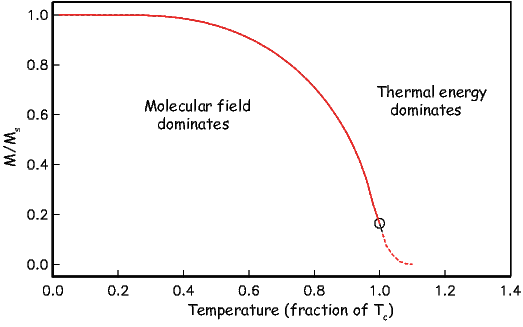
While the phenomenon of ferromagnetism results from complicated interactions of neighboring spins, it is useful to think of the ferromagnetic moment as resulting from a quasi-paramagnetic response to a huge internal field. This imaginary field is termed the Weiss molecular field Hw. In Weiss theory, Hw is proportional to the magnetization of the substance, i.e.,

where β is the constant of proportionality. The total magnetic field that the substance experiences is:

where H is the external field. By analogy to paramagnetism, we can substitute a = μomb(Htot)∕kT) for H in Langevin function:
|
| (3.8) |
For temperatures above the Curie temperature Tc (i.e. T − Tc > 0) there is by definition no internal field, hence βM is zero. Substituting Nmb∕v for Ms, and using the low-field approximation for ℒ(a), Equation 3.8 can be rearranged to get:
|
| (3.9) |
Equation 3.9 is known as the Curie-Weiss law and governs ferromagnetic susceptibility above the Curie temperature (dashed line in Figure 3.7).
Below the Curie temperature Hw >> H; we can neglect the external field H and get:

Substituting again for Ms and rearranging, we get:
 | (3.10) |
where Tc is the Curie temperature and is given by:
We have treated ferromagnetism from a classical point of view and this is strictly incorrect because ferromagnetism results primarily from quantum mechanical phenomena. The primary difference between the classical derivation and the quantum mechanical one lies in the fact that in quantum mechanics, only certain angles of the magnetic moments are allowed, as opposed to all directions in Langevin theory. In the end, the predictions of magnetization as a function of temperature are different in detail. The end product of the quantum mechanical treatment (see Dunlop and Özdemir, 1997) is that the variation of saturation magnetization as a function of temperature can be reasonably well approximated (near the Curie Temperature, Tc) by a normalized power law variation:
![-Ms(T-) = [ Tc −-T-]γ,
Ms (To) Tc − To](WebBook386x.png) | (3.11) |
where γ is 0.5 from simple molecular field theory and To is absolute zero (in kelvin). Dunlop and Özdemir (1997) cite a value of around 0.43 for γ, but the data sets cited by Dunlop and Özdemir (1997; e.g., Figure 3.5 on page 52) are actually best-fit with values for γ of about 0.36 – 0.39 (see Figure 3.8). These curves have been normalized by their inferred curie Temperatures which are around 565∘C (data of B. Moskowitz, cited in Banerjee, 1991).

As we have seen, below the Curie temperature, certain crystals have a permanent (remanent) magnetization resulting from the alignment of unpaired electronic spins over a large area within the crystal. Spins may be either parallel or anti-parallel; the sense of spin alignment is controlled entirely by crystal structure. The energy term associated with this phenomenon is the exchange energy. There are three categories of spin alignment: ferromagnetism (sensu stricto), ferrimagnetism and antiferromagnetism (see Figure 3.9).

In ferromagnetism (sensu stricto, Figure 3.9a), the exchange energy is minimized when all the spins are parallel, as occurs in pure iron. When spins are perfectly antiparallel (antiferromagnetism, Figure 3.9b), there is no net magnetic moment, as occurs in ilmenite. Occasionally, the antiferromagnetic spins are not perfectly aligned in an antiparallel orientation, but are canted by a few degrees. This spin-canting (Figure 3.9c) gives rise to a weak net moment, as occurs in hematite, a common magnetic mineral (see Chapter 6). Also, antiferromagnetic materials can have a net moment if spins are not perfectly compensated owing to defects in the crystal structure, as occurs in fine-grained hematite. The uncompensated spins result in a so-called defect moment (Figure 3.9d). We note in passing that the temperature at which spins become disordered in antiferromagnetic substances is termed the Néel temperature. In ferrimagnetism, spins are also aligned antiparallel, but the magnitudes of the moments in each direction are unequal, resulting in a net moment (Figure 3.9e).
In figures like Figure 3.9, electronic spins are depicted as being simply aligned with some minimum energy direction (aligned with the field, or along some easy axis). Yet we already know about the paramagnetic effect of misalignment through random thermal fluctuations. We learned that an external magnetic field generates a torque on the electronic spins, and in isolation, a magnetic moment will respond to the torque in a manner similar in some respects to the way a spinning top responds to gravity: the magnetic moment will precess about the applied field direction, spiraling in and come to a rest parallel to it (Figure 3.10a). Because of the strong exchange coupling in ferromagnetic phases, spins tend to be aligned parallel (or antiparallel) to one another and the spiralling is done in a coordinated fashion, with neighboring spins as parallel as possible to one another (Figure 3.10b). This phenomenon is known as a spin wave.
SUPPLEMENTAL READINGS: O’Reilly (1984), Chapter 3.1; Dunlop and Özdemir (1997), Chapter 2.1 to 2.7.
Problem 1
a) Given one Bohr magneton (mb) in the Earth’s field (40 μT), write a program using Python that calcuates magnetostatic interaction energy (-mbB cosθ) for angles 0→ 180∘. Make a plot of this with the matplotlib module in Python.
b) Calculate the thermal energy at room temperature (300K). How does this compare with the interaction energy?
Problem 2
Fayalite (Fe2SiO4) is a paramagnetic solid with magnetic susceptibility χ = 4.4 x 10−4 (cgs units) at 0∘C (= 273K). A single crystal of fayalite has a volume of 2 cm3. This crystal is placed in a magnetic field, H = 10 oe at 0∘C. What is the resulting induced magnetic moment m of this crystal?
a) Do this problem first in cgs units. Then convert your answer to SI using the conversion factors in Table 1.1 in Chapter 1.
b) Do the problem again by first converting all the parameters into SI units. Check your answer by converting the SI answer that you get back to cgs. You should get the same answer (but you would be surprised how many people do this wrong).
Problem 3
If fayalite is placed in a magnetic field H= 100 oe at a temperature of 500∘C (= 773K), what is the resulting magnetization, M?
Problem 4
MnS is a paramagnetic solid. At 300K there are 4 x 1028 molecules of MnS per m3. Look up the number of unpaired spins for the cationic magnetic moment of Mn2+ in the text and find the paramagnetic susceptibility, χ, of MnS at 300K?
Problem 5
a) Read into a Pandas DataFrame the datafile Chapter_3/BMoskinBan91.txt provided. Make a plot of magnetization versus temperature. What is the Curie temperature of the material?
b) Using this Equation 3.11 from the chapter, find the value for γ between 0.35 and 0.43 at intervals of 0.01 that fits the best. Plot the data as in Figure 3.8 in the chapter, i.e. Ms(T)∕Ms(To) against T∕Tc.
We will start with the second part of the question: what fixes magnetizations in particular directions? A basic principle is that ferromagnetic particles have various contributions to the magnetic energy which controls their magnetization. No matter how simple or complex the combination of energies may become, the grain will seek the configuration of magnetization which minimizes its total energy. The short answer to our question is that certain directions within magnetic crystals are at lower energy than others. To shift the magnetization from one “easy” direction to another requires energy. If the barrier is high enough, the particle will stay magnetized in the same direction for very long periods of time – say billions of years. In this chapter we will address the causes and some of the consequences of these energy barriers for the magnetization of rocks. Note that in this chapter we will be dealing primarily with energy densities (volume normalized energies), as opposed to energy and will distinguish the two by the convention that energies are given with the symbol E and energy densities with ϵ.
In Chapter 6, we will discuss the behavior of common magnetic minerals, but to develop the general theory, it is easiest to focus on a single mineral. We choose here the most common one, magnetite. It has a simple, cubic structure and has been the subject intensive study. However, we will occasionally introduce concepts appropriate for other magnetic minerals where appropriate.
The simplest permanently magnetized particles are quasi-uniformly magnetized. These so-called single domain (SD) particles have spins that act in concert, staying as parallel (or anti-parallel) as possible. As particles get larger, the external energy can be minimized by allowing neighboring spins to diverge somewhat from strict parallelism; these particles are referred to as pseudo-single domain or PSD. Eventually, the spins organize themselves into regions with quasi-uniform magnetization (magnetic domains) separated by domain walls and are called multi-domain (MD) particles. These more complicated spin structures are very difficult to model and most paleomagnetic theory is based on the single domain approximation. Therefore we begin with a discussion of the energies of uniformly magnetized (single-domain) particles.

We learned in Chapter 3 that some crystalline states are capable of ferromagnetic behavior because of quantum mechanical considerations. Electrons in neighboring orbitals in certain crystals “know” about each other’s spin states. In order to avoid sharing the same orbital with the same spin (hence having the same quantum numbers – not allowed by Pauli’s exclusion principle), electronic spins in such crystals act in a coordinated fashion. They will be either aligned parallel or antiparallel according to the details of the interaction. This exchange energy density (ϵe) is the source of spontaneous magnetization and is given for a pair of spins by:
We define here a parameter that we will use later: the exchange constant A = JeS2∕a where a is the interatomic spacing. A = 1.33 x 10−11 Jm−1 for magnetite, a common magnetic mineral.
Recalling the discussion in Chapter 3, while s orbitals which are spherical, the 3d electronic orbitals “poke” in certain directions. Hence spins in some directions within crystals will be easier to coordinate than in others. We can illustrate this using the example of magnetite, a common magnetic mineral (Figure 4.1a). Magnetite octahedra (Figure 4.1a), when viewed at the atomic level (Figure 4.1b) are composed of one ferrous (Fe2+) cation, two ferric (Fe3+) cations and four O2− anions. Each oxygen anion shares an electron with two neighboring cations in a covalent bond.
In Chapter 3 we mentioned that in some crystals, spins are aligned anti-parallel, yet there is still a net magnetization, a phenomenon we called ferrimagnetism. This can arise from the fact that not all cations have the same number of unpaired spins. Magnetite, with its ferrous (4 mb) and ferric (5 mb) states is a good example. There are three iron cations in a magnetite crystal giving a total of 14 mb to play with. Magnetite is very magnetic, but not that magnetic! From Figure 4.1b we see that the ferric ions all sit on the tetrahedral (A) lattice sites and there are equal numbers of ferrous and ferric ions sitting on the octahedral (B) lattice sites. The unpaired spins of the cations in the A and B lattice sites are aligned anti-parallel to one another because of superexchange (Chapter 3) so we have 9 mb on the B sites minus 5 mb on the A sites for a total of 4 mb per unit cell of magnetite.
We know from experience that there are energies associated with magnetic fields. Just as a mass has a potential energy when it is placed in the gravitational field of another mass, a magnetic moment has an energy when it is placed in a magnetic field. We have seen this energy briefly in Sections 1.4 and Equation 3.4. This energy has many names (magnetic energy, magnetostatic energy, Zeeman energy, etc.). Here we will work with the volume normalized magnetostatic interaction energy density (ϵm). This energy density essentially represents the interaction between the magnetic lines of flux and the magnetic moments of the electronic spins. It is energy that aligns magnetic compass needles with the ambient magnetic field. We find the volume normalized form (in units of Jm−3) by substituting |M| = |m|v1 2 (see Chapter 1) into Equation 3.4:
 | (4.1) |
ϵm is at a minimum when the magnetization M is aligned with the field B. Single-domain particles have a quasi-uniform magnetization and the application of a magnetic field does not change the net magnetization, which remains at saturation (Ms). The direction of all the magnetic spins could swing coherently toward the applied field. Yet the magnetizations in many particles do not rotate freely toward the magnetic field (or we would not have paleomagnetism!). There is another contribution to the energy of the magnetic particle associated with the magnetic crystal itself. This energy depends on the direction of magnetization in the crystal – it is anisotropic – and is called anisotropy energy. Anisotropy energy creates barriers to free rotation of the magnetization within the magnetic crystal, which lead to energetically preferred directions for the magnetization within individual single-domain grains.
There are many causes of anisotropy energy. The most important ones derive from the details of crystal structure (magnetocrystalline anisotropy energy), the state of stress within the particle (magnetostriction), and the shape of the particle, (shape anisotropy). We will consider these briefly in the following subsections.

For equant single-domain particles or particles with low saturation magnetizations, the crystal structure dominates the magnetic energy. In such cases, the so-called easy directions of magnetization are crystallographic directions along which magnetocrystalline energy is at a minimum. The energy surface shown in Figure 4.1c represents the magnetocrystalline anisotropy energy density, ϵa for magnetite at room temperature. The highest energy bulges are in directions perpendicular to the cubic faces ([001, 010, 100]). The lowest energy dimples are along the body diagonals ([111]). Magnetite (above about 120K) has a cubic structure with direction cosines α1,α2,α3. These direction cosines are the angles between a given direction and the crystallographic axes [100, 010, 001] – see Appendix A.3.5 for review of direction cosines). For such a crystal the magnetocrystalline anisotropy energy density is given by:
 | (4.2) |
where K1 and K2 are empirically determined magnetocrystalline anisotropy constants. In the case of (room temperature) magnetite, K1 is -1.35 x 104 Jm−3. Note that the units of the Ki are in Jm−3, so ϵa is in units of energy per unit volume (an energy density). If you work through the magnetocrystalline equation, you will find ϵa is zero parallel to the [100] axis, K1∕4 parallel to the [110] and K1∕3 + K2∕27 parallel to the [111] direction (the body diagonal). So when K1 is negative, the [111] direction (body diagonal) has the minimum energy. This is the reason that there is a dimple in the energy surface along that direction in Figure 4.1c.
As a consequence of the magnetocrystalline anisotropy energy, once the magnetization is aligned with an easy direction, work must be done to change it. In order to switch from one easy axis to another (e.g. from one direction along the body diagonal to the opposite), the magnetization has to traverse a path over an energy barrier which is the difference between the energy in the easy direction and that in the intervening hard direction. In the case of magnetite at room temperature, we have this energy barrier as ϵ[111]-ϵ[110] or to first order K1∕3 − K1∕4 = K1∕12.
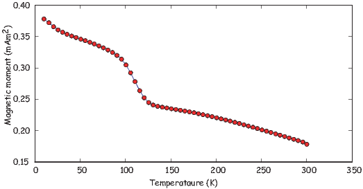
Because electronic interactions depend heavily on inter atomic spacing, magnetocrystalline anisotropy constants are a strong function of temperature (see Figure 4.2). In magnetite, K1 changes sign at a temperature known as the isotropic point. At the isotropic point, there is no large magnetocrystalline anisotropy. The large energy barriers that act to keep the magnetizations parallel to the body diagonal are gone and the spins can wander more freely through the crystal. Below the isotropic point, the energy barriers rise again, but with a different topology in which the crystal axes are the energy minima and the body diagonals are the high energy states.
At room temperature, electrons hop freely between the ferrous and ferric ions on the B lattice sites, so there is no order. Below about 120 K, there is an ordered arrangement of the ferrous and ferric ions. Because of the difference in size between the two, the lattice of the unit cell becomes slightly distorted and becomes monoclinic instead of cubic. This transition occurs at what is is known as the Verwey temperature (Tv). Although the isotropic point (measured magnetically) and the Verwey transition (measured electrically) are separated in temperature by about 15o, they are related phenomena (the ordering and electron hopping cause the change in K1).
The change in magnetocrystalline anisotropy at low temperature can have a profound effect on the magnetization. In Figure 4.3 we show a typical (de)magnetization curve for magnetite taken from the “Rock magnetic bestiary” web site maintained at the Institute for Rock Magnetism: http://irm.umn.edu/bestiary. There is a loss of magnetization at around 100 K. This loss is the basis for low-temperature demagnetization (LTD). However, some portion of the magnetization always remains after low temperature cycling (called the low temperature memory), so the general utility of LTD may be limited.
Cubic symmetry (as in the case of magnetite) is just one of many types of crystal symmetries. One other very important form is the uniaxial symmetry which can arise from crystal shape or structure. The energy density for uniaxial magnetic anisotropy is:
|
| (4.3) |
Here the magnetocrystalline constants have been designated Ku1,Ku2 to distinguish them from K1,K2 used before. In this equation, when the largest uniaxial anisotropy constant, Ku1, is negative, the magnetization is constrained to lie perpendicular to the axis of symmetry. When Ku1 > 0, the magnetization lies parallel to it.
An example of a mineral dominated by uniaxial symmetry is hematite, a mineral with hexagonal crystal symmetry. The magnetization of hematite is quite complicated, as we shall learn in Chapters 6 and 7, but one source is magnetization is spin-canting (see Chapter 3) within the basal plane of the hexagonal crystal. Within the basal plane, the anisotropy constant is very low and the magnetization wanders fairly freely. However, the anisotropy energy away from the basal plane is strong, so the magnetization is constrained to lie within the basal plane.
Exchange energy depends strongly on the details of the physical interaction between orbitals in neighboring atoms with respect to one another, hence changing the positions of these atoms will affect that interaction. Put another way, straining a crystal will alter its magnetic behavior. Similarly, changes in the magnetization can change the shape of the crystal by altering the shapes of the orbitals. This is the phenomenon of magnetostriction. The magnetic energy density caused by the application of stress to a crystal be approximated by:
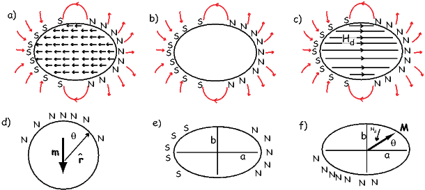
There is one more important source of magnetic anisotropy: shape. To understand how crystal shape controls magnetic energy, we need to understand the concept of the internal demagnetizing field of a magnetized body. In Figure 4.4a we show the magnetic vectors within a ferromagnetic crystal. These produce a magnetic field external to the crystal that is proportional to the magnetic moment (see Chapter 1). This external field is identical to a field produced by a set of free poles distributed over the surface of the crystal (Figure 4.4b). The surface poles do not just produce the external field, they also produce an internal field shown in Figure 4.4c. The internal field is known as the demagnetizing field (Hd). Hd is proportional to the magnetization of the body and is sensitive to the shape. For a simple sphere in Figure 4.4a and applied field condition shown in Figure 4.4d, the demagnetizing field is given by:

where N is a demagnetizing factor determined by the shape. In fact, the demagnetizing factor depends on the orientation of M within the crystal and therefore is a tensor (see Appendix A.3.5 for review of tensors). The more general equation is Hd = N ⋅ M where Hd and M are vectors and N is a 3 x 3 tensor. For now, we will simplify things by considering the isotropic case of a sphere in which N reduces to the single value scalar quantity N.
For a sphere, the surface poles are distributed over the surface such that there are none at the “equator” and most at the “pole” (see Figure 4.4d). Potential field theory shows that the external field of a uniformly magnetized body is identical to that of a centered dipole moment of magnitude m = vM (where v is volume). At the equator of the sphere as elsewhere, Hd = −NM. But the external field at the equator is equal to the demagnetizing field just inside the body because the field is continuous across the body. We can find the equatorial (tangential) demagnetizing field at the equator by substituting in the equatorial colatitude θ = 90∘ into Hθ in Equation 1.8 from Chapter 1), so:


so substituting and solving for Hd we get Hd = −1 3M, hence N = 1 3.
Different directions within a non-spherical crystal will have different distributions of free poles (see Figures 4.4e,f). In fact the surface density of free poles is given by σm = M ⋅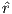 . Because the surface pole density depends on the direction of magnetization, so too will N. In the case of a prolate ellipsoid magnetized parallel to the elongation axis a (Figure 4.4e), the free poles are farther apart than across the grain, hence, intuitively, the demagnetizing field, which depends on 1∕r2, must be less than in the case of a sphere. Thus, Na <1 3. Similarly, if the ellipsoid is magnetized along b (Figure 4.4e), the demagnetizing field is stronger or Nb > 1 3.
Getting back to the magnetostatic energy density, ϵm = M⋅B, remember that B includes both the external field Be = −μoHe and the internal demagnetizing field μoN ⋅ M. Therefore, magnetostatic energy density from both the external and internal fields is given by:
 | (4.4) |
The two terms in Equation 4.4 are the by now familiar magnetostatic energy density ϵm, and the magnetostatic self energy density or the demagnetizing energy density ϵd. ϵd can be estimated by “building” a magnetic particle and considering the potential energy gained by each incremental volume dv as it is brought in (−μoMdv ⋅ Hd) and integrating. The 1 2 appears in order to avoid counting each volume element twice and the v disappears because all the energies we have been discussing are energy densities – the energy per unit volume.
For the case of a uniformly magnetized sphere, we get back to the relation Hd = −NM and ϵd simplifies to:
 | (4.5) |
In the more general case of a prolate ellipsoid, M can be represented by the two
components parallel to the a and b axes (see Figure 4.4f) with unit vectors
parallel to them â,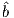 . So, M = M cosθâ + M sinθ . Each component of M has an
associated demagnetizing field Hd = −NaM cosθâ − NbM sinθ
. Each component of M has an
associated demagnetizing field Hd = −NaM cosθâ − NbM sinθ where Na,Nb
are the eigenvalues of the tensor N (the values of the demagnetizing tensor along
the principal axes a and b). In this case, the demagnetizing energy can be written
as:
where Na,Nb
are the eigenvalues of the tensor N (the values of the demagnetizing tensor along
the principal axes a and b). In this case, the demagnetizing energy can be written
as:
|
| (4.6) |
In an ellipsoid with three unequal axes a,b,c, Na + Nb + Nc = 1 (in SI; in cgs units the sum is 4π). For a long needle-like particle, Na ≃ 0 and Nb = Nc ≃ 1 2. A useful approximation for nearly spherical particles is Na = 1 3[1 − 2 5(2 − b a − c a)] (Stacey and Banerjee, 1974). For more spheroids, see Nagata (1961, p. 70) and for the general case, see Dunlop and Özdemir (1997). In the absence of an external field, the magnetization will be parallel to the long axis (θ = 0) and the magnetostatic energy density (also known as the ‘self’ energy is given by:
 | (4.7) |
Note that the demagnetizing energy in Equation 4.6 has a uniaxial form, directionally dependent only on θ, with the constant of uniaxial anisotropy Ku = 1 2ΔNμoM2. ΔN is the difference between the largest and smallest values of the demagnetizing tensor Nc − Na.
For a prolate ellipsoid Nc = Nb and choosing for example c∕a = 1.5 we find that Na −Nc =∼ 0.16. The magnetization of magnetite is 480 kAm−1, so Ku ≃ 2.7 x 104 Jm−3. This is somewhat larger than the absolute value of K1 for magnetocrystalline anisotropy in magnetite (K1= -1.35 x 104 Jm−3), so the magnetization for even slightly elongate grains will be dominated by uniaxial anistropy controlled by shape. Minerals with low saturation magnetizations (like hematite) will not be prone to shape dominated magnetic anisotropy, however.

Paleomagnetists worry about how long a magnetization can remain fixed within a particle and we will begin to discuss this issue later in the chapter. It is worth pointing out here that any discussion of magnetic stability will involve magnetic anisotropy energy because this controls the energy required to change a magnetic moment from one easy axis to another. One way to accomplish this change is to apply a magnetic field sufficiently large that its magnetic energy exceeds the anisotropy energy. The magnetic field capable of flipping the magnetization of an individual uniformly magnetized particle (at saturation, or Ms) over the magnetic anisotropy energy barrier is the microscopic coercivity Hk. For uniaxial anisotropy (K = Ku) and for cubic magnetocrystalline anisotropy (K = K1), microscopic coercivity is given by:
 | (4.8) |
respectively (see Dunlop and Özdemir, 1997 for a more complete derivation). For elongate particles dominated by shape anisotropy, Hk reduces to ΔNM. [Note that the units for coercivity as derived here are in Am−1, although they are often measured using instruments calibrated in tesla. Technically, because the field doing the flipping is inside the magnetic particle and B (measured in tesla) depends on the magnetization M as well as the field H (Equation 1.4), coercivity should be written as μoHk if the units are quoted in tesla. Microscopic coercivity is another parameter with many names: flipping field, switching field, intrinsic coercivity and also more loosely, the coercive field and coercivity. We will come back to the topic of coercivity in Chapter 5. ]

So far we have been discussing hypothetical magnetic particles that are uniformly magnetized. Particles with strong magnetizations (like magnetite) have self energies that quickly become quite large because of the dependence on the square of the magnetization. We have been learning about several mechanisms that tend to align magnetic spins. In fact in very small particles of magnetite (< 40 nm), the spins are essentially lined up. The particle is uniformly magnetized and we called it single domain (SD). In larger particles (∼80 nm) the self energy exceeds the other exchange and magnetocrystalline energies and crystals have distinctly non-uniform states of magnetization.
There are many strategies possible for magnetic particles to reduce self energy. Numerical models (called micromagnetic models) can find internal magnetization configurations that minimize the energies discussed in the preceding sections. Micromagnetic simulations for magnetite particles (e.g. Schabes and Bertram, 1988) allow us to peer into the state of magnetization inside magnetic particles. These simulations give a picture of increasing complexity from so-called flower to vortex (Figure 4.5) remanent states. These particles share many properties of the uniformly magnetized single domain particles and are called pseudo-single domain (PSD) particles.
As particles grow larger (>∼200 nm), they break into multiple magnetic domains, separated by narrow zones of rapidly changing spin directions called domain walls. Magnetic domains can take many forms. We illustrate a few in Figure 4.6. The uniform case (single domain) is shown in Figure 4.6a. The external field is very large because the free poles are far apart (at opposite ends of the particle). When the particle organizes itself into two domains (Figure 4.6b), the external field is reduced by about a factor of two. In the case of four lamellar domains (Figure 4.6c), the external field is quite small. The introduction of closure domains as in Figure 4.6d reduces the external field to nothing.

As you might already suspect, domain walls are not “free”, energetically speaking. If, as in Figure 4.7a, the spins simply switch from one orientation to the other abruptly, the exchange energy cost would be very high. One way to get around this to spread the change over several hundred atoms, as sketched in Figure 4.7b. The wall width δ is wider and the exchange energy price is much less. However, there are now spins in unfavorable directions from a magnetocrystalline point of view (they are in “hard” directions). Exchange energy therefore favors wider domain walls while magnetocrystalline anisotropy favors thin walls. With some work (see e.g., Dunlop and Özdemir, 1997, pp. 117-118), it is possible to come up with the following analytical expressions for wall width (δw) and wall energy density (ϵw):
|
| (4.9) |
where A is the exchange constant (see Section 4.1.1) and K is the magnetic anisotropy constant (e.g., Ku or K1). Note that ϵw is the energy density per unit wall area, not per volume. Plugging in values for magnetite given previously we get δw = 90 nm and ϵw = 3x 10−3Jm−2.
In Figure 4.8 we plot the self energy (Equation 4.12) and the wall energy (ϵw from Equation 4.9) for spheres of magnetite. We see that the wall energy in particles with diameters of some 50 nm is less than the self energy, yet the width of the walls about twice as wide as that. So the smallest wall is really more like the vortex state and it is only for particles larger than a few tenths of a micron that true domains separated by discrete walls can form. Interestingly, this is precisely what is predicted from micromagnetic modelling (e.g., Figure 4.5).
How can we test the theoretical predictions of domain theory? Do domains really exist? Are they the size and shape we expect? Are there as many as we would expect? In order to address these questions we require a way of imaging magnetic domains. Bitter (1931) devised a way for doing just that. Magnetic domain walls are regions with large stray fields (as opposed to domains in which the spins are usually parallel to the sides of the crystals to minimize stray fields). In the Bitter technique magnetic colloid material is drawn to the regions of high field gradients on highly polished sections allowing the domain walls to be observed (see Figure 4.9a).

There are by now other ways of imaging magnetic domains. We will not review them all here, but will just highlight the ways that are more commonly used in rock and paleomagnetism. The magneto-optical Kerr effect or MOKE uses the interaction between polarized light and the surface magnetic field of the target. The light interacts with the magnetic field of the sample which causes a small change in the light’s polarization and ellipticity. The changes are detected by reflecting the light into nearly-crossed polarizers. The longitudinal Kerr effect can show the alignment of magnetic moments in the surface plane of the sample. Domains with different magnetization directions show up as lighter or darker regions in the MOKE image (see Figure 4.9b.)
Another common method for imaging magnetic domains employs a technique known as magnetic force microscopy. Magnetic force microscopy (MFM) uses a scanning probe microscope that maps out the vertical component of the magnetic fields produced by a highly polished section. The measurements are made with a cantilevered magnetic tip that responds to the magnetic field of the sample. In practice, the measurements are made in two passes. The first establishes the topography of the sample (Figure 4.9c). Then in the second pass, the tip is raised slightly above the surface and by subtracting the topographic only signal the attraction of the magnetic surface can be mapped (Figure 4.9d). Figure 4.9e shows an interpretation of the magnetic directions of different magnetic domains.
We have gone some way toward answering the questions posed at the beginning of the chapter. We see now that anisotropy energy, with contributions from crystal structure, shape and stress, that inhibits changes in the magnetic direction thereby offering a possible mechanism whereby a given magnetization could be preserved for posterity. We also asked the question of what allows the magnetization to come into equilibrium with the applied magnetic field in the first place; this question requires a little more work to answer. The key to this question is to find some mechanism which allows the moments to “jump over” magnetic anisotropy energy barriers. One such mechanism is thermal energy ET , which was given in Chapter 3 as:
We know from statistical mechanics that the probability P of finding a grain with a given thermal energy sufficient to overcome some anisotropy energy Ea and change from one easy axis to another is P = exp(−Ea∕ET ). Depending on the temperature, such grains may be quite rare, and we may have to wait some time t for a particle to work itself up to jumping over the energy barrier.

Imagine a block of material containing a random assemblage of magnetic particles that are for simplicity uniformly magnetized and dominated by uniaxial anisotropy. Suppose that this block has some initial magnetization Mo and is placed in an environment with no ambient magnetic field. Anisotropy energy will tend to keep each tiny magnetic moment in its original direction and the magnetization will not change over time. At some temperature, certain grains will have sufficient energy to overcome the anisotropy energy and flip their moments to the other easy axis. As the energy surface is spherical, with no dimples or protruberances, there is no preferred direction and, over time, the magnetic moments will become random. Therefore, the magnetization as a function of time in this simple scenario will decay to zero. The equation governing this decay is:
 | (4.10) |
where t is time and τ is an empirical constant called the relaxation time. Relaxation time is the time required for the remanence to decay to 1∕e of Mo. This equation is the essence of what is called Néel theory (see, e.g., Néel, 1955). The value of τ depends on the competition between magnetic anisotropy energy and thermal energy. It is a measure of the probability that a grain will have sufficient thermal energy to overcome the anisotropy energy and switch its moment. Therefore in zero external field:
|
| (4.11) |
where C is a frequency factor with a value of something like 1010 s−1. The anisotropy energy is given by the dominant anisotropy parameter K (either Ku,K1, or λ) times the grain volume v.
Thus, the relaxation time is proportional to anisotropy constant and volume, and is inversely related to temperature. Relaxation time τ varies rapidly with small changes in v and T. To see how this works, we can take Ku for slightly elongate cuboids of magnetite (length to width ratio of 1.3 to 1) and evaluate relaxation time as a function of particle width (see Figure 4.10). There is a sharp transition between grains with virtually no stability (τ is on the order of seconds) and grains with stabilities of billions of years.
Grains with τ ≃ 102 − 103 seconds have sufficient thermal energy to overcome the anisotropy energy frequently and are unstable on a laboratory time scale. In zero field, these grain moments will tend to rapidly become random, and in an applied field, also tend to align rapidly with the field. The net magnetization is related to the field by a Langevin function (see Section 3.2.2 in Chapter 3). Therefore, this behavior is quite similar to paramagnetism, hence these grains are called superparamagnetic (SP). Such grains can be distinguished from paramagnets, however, because the field required to saturate the moments is typically much less than a tesla, whereas that for paramagnets can exceed hundreds of tesla.
We are now in a position to pull together all the threads we have considered in this chapter and make a plot of what sort of magnetic particles behave as superparamagnets, which should be single domain and which should be multi-domain according to our simple theories. We can estimate the superparamagnetic to single domain threshold for magnetite as a function of particle shape by finding for the length (2a) that gives a relaxation time of 100 seconds as a function of width to length ratio (b∕a) for parallelopipeds of magnetite (heavy blue line in Figure 4.11). To do this, we follow the logic of Evans and McElhinny (1969) and Butler and Banerjee (1975). In this Evans diagram, we estimated relaxation time using Equation 4.11, plugging in values of K as either the magnetocrystalline effective anisotropy constant ( 1_ 12K1) or the shape anisotropy constant (1 2ΔNμoM2), whichever was less. We also show the curve at which relaxation time is equal to 1 Gyr, reinforcing the point that very small changes in crystal size and shape make profound differences in relaxation time. The figure also predicts the boundary between the single domain field and the two domain field, when the energy of a domain wall is less than the self energy of a particle that is uniformly magnetized. This can be done by evaluating wall energy with Equation 4.9 for a wall along the length of a parallelopiped and area (4ab) as compared to the self energy (1 2μoNaM2v) for a given length and width to length ratio. When the wall energy is less than the self energy, we are in the two domain field.
Figure 4.11 suggests that there is virtually no SD stability field for equant magnetite; particles are either SP or MD (multi-domain). As the width to length decreases (the particle gets longer), the stability field for SD magnetite expands. Of course micromagnetic modelling shows that there are several transitional states between uniform magnetization (SD) and MD, i.e. the flower and vortex remaent states (see Fabian et al., 1996), but Figure 4.11 has enormous predictive power and the version of Butler and Banerjee (1975), (which is slightly different in detail) continues to be used extensively. It is worth pointing out however, that the size at which domain walls appear in magnetite is poorly constrained because it depends critically on the exact shape of the particle, its state of stress and even its history of exposure to past fields. Estimates in the literature range from as small as 20 nm to much larger (up to 100 nm) depending on how the estimates are made. Nonetheless, it is probably true that truly single domain magnetite is quite rare in nature, yet more complicated states are difficult to treat theoretically. Therefore most paleomagnetic studies rely on predictions made for single domain particles.
SUPPLEMENTAL READING: Dunlop and Özdemir (1997), Chapters 2.8 and 5.
Problem 1
Assume that the magnetization of magnetite is about 4.8 x 105 Am−1. Using values for other parameters from the text, write a Python program to calculate the following:
a) Self energy (or magnetostatic energy) for a sphere 1, 10 and 100 μm in diameter. [Hint: see Equation 4.12 below for the ‘self’ energy density. Also, remember the difference between energy and energy density!]
 | (4.12) |
b) Magnetostatic (shape) anisotropy energy for an ellipsoid whose principal semi-axis is 1 μm and whose major and minor semi-axes are each 0.25 μm. You may use the “nearly spherical” approximation in the text.
c) The critical radius of a sphere at which wall energy equals self energy.
Problem 2
Calculate grain diameter for magnetite spheres with τs of 10−1, 10, 102, 103, 105, 109, 1015 seconds. Use values for Boltzmann’s constant, C (the frequency factor) and |K1| at room temperature (300K).
Problem 3 [From Jeff Gee]
a) Consider a highly elongate rod (needle-shaped grain) of magnetite. Explain why the demagnetizing factor along the long axis of the rod is about zero while that across the long axis is about one half.
b) The file Chapter_4/prolate.txt gives the values of demagnetizing factors for a prolate ellipsoid (with axes a> b=c). For an elongate rod of magnetite with range of aspect ratios (AR = c:b) provided in the table, plot the magnetostatic self energy density in the absence of an external field. Use this plot to estimate the aspect ratio at which shape anisotropy will be equal that of magnetocrystalline anisotropy (use a value of K1 at room temperature (300K) of -1.43 x 104 J/m3).
c) What is the maximum microscopic coercivity (Hk) for such an elongate grain of magnetite (assume an infinitely long grain)? Coercivities are more commonly reported in units of T so provide this corresponding value as well.
The ease with which particles can be coerced into changing their magnetizations in response to external fields can tell us much about the overall stability of the particles and perhaps also something about their ability to carry a magnetic remanence over the long haul. The concepts of long term stability, incorporated into the concept of relaxation time and the response of the magnetic particles to external magnetic fields are therefore linked through the anisotropy energy constant K (see Chapter 4) which dictates the magnetic response of particles to changes in the external field. This chapter will focus on the response of magnetic particles to changing external magnetic fields.
Magnetic remanence is the magnetization in the absence of an external magnetic field. If we imagine a particle with a single “easy” axis – a so-called “uniaxial” particle with magnetic anisotropy constant Ku, the magnetic energy density (energy per unit volume) of a particle whose magnetic moment makes an angle θ to the easy axis direction (Figure 5.1a) can be expressed as:
As the moment swings around with angle θ to the easy axis, the anisotropy energy density ϵa will change as sketched in Figure 5.1b. The energy minima are when θ is aligned parallel to the easy axis (an axis means either direction along the axis, so we pick one direction as being 0 and the other as 180∘). In the absence of a magnetic field, the moment will lie along one of these two directions. [In reality, thermal energy will perturb this direction somewhat, depending on the balance of anisotropy to thermal energy, but for the present discussion, we are assuming that thermal energy can be neglected.]

When an external field is applied at an angle ϕ to the easy axis (and an angle ϕ−θ with the magnetic moment; see Figure 5.1a), the magnetostatic interaction energy density ϵm given by the dot product of the magnetization and the applied field (Equation 4.1 in Chapter 4) or:
The two energy densities (ϵa and ϵm) are shown as the thin solid and dashed lines in Figure 5.1c for an applied field of 30 mT aligned with an angle of 45∘ to the easy axis. There is a competition between the anisotropy energy (tending to keep the magnetization parallel to the easy axis) and the interaction energy (tending to line the magnetization up with the external magnetic field). Assuming that the magnetization is at saturation, we get the total energy density of the particle to be:
 | (5.1) |
The total energy density ϵt is shown as the heavy solid line in Figure 5.1c.
The magnetic moment of a uniaxial single domain grain will find the angle θ that is associated with the minimum total energy density (ϵmin; see Figure 5.1b,c). For low external fields, θ will be closer to the easy axis and for higher external fields (e.g., 30 mT; Figure 5.1c), θ will be closer to the applied field direction (ϕ).
When a magnetic field that is large enough to overcome the anisotropy energy is applied in a direction opposite to the magnetization vector, the moment will jump over the energy barrier and stay in the opposite direction when the field is switched off. The field necessary to accomplish this feat is called the flipping field (μoHf) (also sometimes the “switching field”). [Note the change to the use of H for internal fields where M cannot be considered zero.) We introduced this parameter in Chapter 4 (see Equation 4.8) as the microscopic coercivity. Stoner and Wohlfarth (1948) showed that the flipping field can be found from the condition that dϵt∕dθ = 0 and d2ϵt∕dθ2 = 0. We will call this the “flipping condition”. The necessary equations can be found by differentiating Equation 5.1:
|
| (5.2) |
and again
 | (5.3) |
Solving these two equations for B and substituting μoH for B, we get after some trigonometric trickery:
 | (5.4) |
where t = tan1 3 ϕ. In this equation, ϕ is the angle between the applied field and the easy axis direction opposite to m.
Now we can derive the so-called “microscopic coercivity” (Hk) introduced in Section 4.1.6 in Chapter 4. Microscopic coercivity is the maximum flipping field for a particle. When magnetic anisotropy of a particle is dominated by uniaxial anisotropy constant Ku and ϕ is zero (antiparallel to the easy direction nearest the moment), μoHk = 2Ku Ms. Using the values appropriate for magnetite (Ku = 1.4 x 104 Jm−3 and Ms = 480 mAm−1 we get μoHk = 58 mT. To see why this would indeed result in a flipped moment, we plot the behavior of Equations 5.1 - 5.3 in Figure 5.2. The minimum in total energy ϵt occurs at an angle of θ = 180∘ (Figure 5.2a) and the first and second derivatives satisfy the flipping condition by having a common zero crossing (θ = 0 in Figure 5.2b). There is no other applied field value for which this is true (see, e.g., the case of a 30 mT field in Figure 5.2c,d).

The flipping condition depends not only on the applied field magnitude but also on the direction that it makes with the easy axis (see μoHf versus ϕ in Figure 5.3). When ϕ is parallel to the easy axis (zero) (and anti-parallel to m, μoHf is 58 mT as we found before. μoHf drops steadily as the angle between the field and the easy axis increases until an angle of 45∘ when μoHf starts to increase again. According to Equation 5.4, μoHf is undefined when ϕ = 90∘, so when the field is applied at right angles to the easy axis, there is no field sufficient to flip the moment.
In this section we will develop the theory for predicting the response of substances to the application of external fields, in experiments that generate hysteresis loops. We will define a number of parameters which are useful in rock and paleomagnetism. For computational details in estimating these parameters from hysteresis data, see Appendix C.1.
Let us begin by considering what happens to single particles when subjected to applied fields in the cycle known as the hysteresis loop. From the last section, we know that when a single domain, uniaxial particle is subjected to an increasing magnetic field the magnetization is gradually drawn into the direction of the applied field. If the flipping condition is not met, then the magnetization will return to the original direction when the magnetic field is removed. If the flipping condition is met, then the magnetization undergoes an irreversible change and will be in the opposite direction when the magnetic field is removed.
Imagine a single domain particle with uniaxial anisotropy. Because the particle is single domain, the magnetization is at saturation and, in the absence of an applied field is constrained to lie along the easy axis. Now suppose we apply a magnetic field in the opposite direction (see track # 1 in Figure 5.4a). When B reaches μoHf in magnitude, the magnetization flips to the opposite direction (track #2 in Figure 5.4) and will not change further regardless of how high the field goes. The field then is decreased to zero and then increased along track #3 in Figure 5.4 until μoHf is reached again. The magnetization then flips back to the original direction (track #4 in Figure 5.4a).
Applying fields at arbitrary angles to the easy axis results in loops of various shapes (see Figure 5.4b). As ϕ approaches 90∘, the loops become thinner. Remember that the flipping fields for ϕ = 22∘ and ϕ = 70∘ are similar (see Figure 5.3) and are lower than that when ϕ = 0∘, but the flipping field for ϕ = 90∘ is infinite, so that “loop” is closed and completely reversible.
Before we go on, it is useful to consider for a moment how hysteresis measurements are made in practice. Measurements of magnetic moment m as a function of applied field B are made on a variety of instruments, such as a vibrating sample magnetometer (VSM) or alternating gradient force magnetometer (AGFM). In the latter, a specimen is placed on a thin stalk between pole pieces of a large magnet. There is a probe mounted behind the specimen that measures the applied magnetic field. There are small coils on the pole pieces that modulate the gradient of the applied magnetic field (hence alternating gradient force). The specimen vibrates in response to changing magnetic fields and the amplitude of the vibration is proportional to the moment in the axis of the applied field direction. The vibration of the specimen stalk is measured and calibrated in terms of magnetic moment. The magnetometer is only sensitive to the induced component of m parallel to the applied field Bo, which is m|| = mcosϕ (because the off axis terms are squared and very small, hence can be neglected.) In the hysteresis experiment, therefore, the moment parallel to the field m|| is measured as a function of applied field B.
In rocks with an assemblage of randomly oriented particles with uniaxial anisotropy, we would measure the sum of all the millions of tiny individual loops. A specimen from such a rock would yield a loop similar to that shown in Figure 5.5a. If the field is first applied to a demagnetized specimen, the initial slope is the (low field) magnetic susceptibility (χlf) first introduced in Chapter 1. From the treatment in Section 5.1 it is possible to derive the equation χlf = μoMs2∕3Ku for this initial (ferromagnetic) susceptibility (for more, see O’Reilly 1984).
If the field is increased beyond the flipping field of some of the magnetic grains and returned to zero, the net remanence is called an isothermal remanent magnetization (IRM). If the field is increased to +Bmax, all the magnetizations are drawn into the field direction and the net magnetization is equal to the sum of all the individual magnetizations and is the saturation magnetization Ms. When the field is reduced to zero, the moments relax back to their individual easy axes, many of which are at a high angle to the direction of the saturating field and cancel each other out. A loop that does not achieve a saturating field (red in Figure 5.5a is called a minor hysteresis loop, while one that does is called the outer loop.

The net remanence after saturation is termed the saturation remanent magnetization Mr (and sometimes the saturation isothermal remanence sIRM). For a random assemblage of single domain uniaxial particles, Mr∕Ms = 0.5. The field necessary to reduce the net moment to zero is defined as the coercive field (μoHc) (or coercivity).
The coercivity of remanence μoHcr is defined as the magnetic field required to irreversibly flip half the magnetic moments (so the net remanence after application of a field equal to −μoHcr to a saturation remanence is 0). The coercivity of remanence is always greater than or equal to the coercivity and the ratio Hcr∕Hc for our random assemblage of uniaxial SD particles is 1.09 (Wohlfarth, 1958). Here we introduce two ways of estimating coercivity of remanence, illustrated in Figure 5.5. If, after taking the field up to some saturating field +Bmax, one first turned the field off (the descending curve), then increased the field in the opposite direction to the point labeled μoH′cr, and one were to then switch the field off again, the magnetization would follow the dashed curve up to the origin. For single domain grains, the dashed curve would be parallel to the lower curve (the ascending curve). So, if one only measured the outer loop, one could estimate the coercivity of remanence by simply tracing the curve parallel to the lower curve (dashed line) from the origin to the point of intersection with the upper curve (circled in Figure 5.5a). This estimate is only valid for single domain grains, hence the prime in μoHcr′.
An alternative means of estimating coercivity of remanence is to use a so-called ΔM curve (Jackson et al., 1990) which is obtained by subtracting the ascending loop from the descending loop (see Figure 5.5b). When all the moments are flipped into the new field, the ascending and descending loops join together and ΔM is 0. ΔM is at 50% of its initial value at the field at which half the moments are flipped (the definition of coercivity of remanence); this field is here termed μoHcr.
Figure 5.5a is the loop created in the idealized case in which only uniaxial ferromagnetic particles participated in the hysteresis measurements; in fact the curve is entirely theoretical. In “real” specimens there can be paramagnetic, diamagnetic AND ferromagnetic particles and the loop may well look like that shown in Figure 5.6. The initial slope of a hysteresis experiment starting from a demagnetized state in which the field is ramped from zero up to higher values is the low field magnetic susceptibility or χlf (see Figure 5.6). If the field is then turned off, the magnetization will return again to zero. But as the field increases passed the lowest flipping field, the remanence will no longer be zero but some isothermal remanence. Once all particle moments have flipped and saturation magnetization has been achieved, the slope relating magnetization and applied field reflects only the non-ferromagnetic (paramagnetic and/or diamagnetic) susceptibility, here called high field susceptibility, χhf. In order to estimate the saturation magnetization and the saturation remanence, we must first subtract the high field slope. So doing gives us the blue dashed line in Figure 5.6 from which we may read the various hysteresis parameters illustrated in Figure 5.5b.
In the case of equant grains of magnetite for which magnetocrystalline anisotropy dominates, there are four easy axes, instead of two as in the uniaxial case (see Chapter 4). The maximum angle ϕ between an easy axis and an applied field direction is 55∘. Hence there is no individual loop that goes through the origin (see Figure 5.7). A random assemblage of particles with cubic anisotropy will therefore have a much higher saturation remanence. In fact, the theoretical ratio of Mr∕Ms for such an assemblage is 0.87, as opposed to 0.5 for the uniaxial case (Joffe and Heuberger, 1974).

In superparamagnetic (SP) particles, the total magnetic energy Et = ϵtv (where v is volume) is balanced by thermal energy kT. This behavior can be modeled using statistical mechanics in a manner similar to that derived for paramagnetic grains in Section 3.2.2 in Chapter 3 and summarized in Appendix A.2.2. In fact,
 | (5.5) |
where γ = MsBv kT and N is the number of particles of volume v, is a reasonable approximation. The end result, Equation 5.5, is the familiar Langevin function from our discussion of paramagnetic behavior (see Chapter 3); hence the term “superparamagnetic” for such particles.
The contribution of SP particles for which the Langevin function is valid with given Ms and d is shown in Figure 5.8a. The field at which the population reaches 90% saturation B90 occurs at γ ∼ 10. Assuming particles of magnetite (Ms = 480 mAm−1) and room temperature (T = 300∘K), B90 can be evaluated as a function of d (see Figure 5.8b). Because of its inverse cubic dependence on d, B90 rises sharply with decreasing d and is hundreds of tesla for particles a few nanometers in size, approaching paramagnetic values. B90 is a quick guide to the SP slope (the SP susceptibility χsp) contributing to the hysteresis response and was used by Tauxe et al. (1996) as a means of explaining distorted loops sometimes observed for populations of SD/SP mixtures. B90 (and χsp) is very sensitive to particle size with very steep slopes for the particles at the SP/SD threshold. The exact threshold size is still rather controversial, but Tauxe et al. (1996) argue that it is ∼ 20 nm.
For low magnetic fields, the Langevin function can be approximated as ∼1 3γ . So we have:

|
| (5.6) |
We can rearrange Equation 4.11 in Chapter 4 to solve for the volume at which a uniaxial grain passes through the superparamagnetic threshold we find:

 | (5.7) |
Comparing this expression with that derived for ferromagnetic susceptibility in Section 5.2.1, we find that χsp is a factor of ln(Cτ) ≃ 27 larger than the equivalent single domain particle.

Moving domain walls around is much easier than flipping the magnetization of an entire particle coherently. The reason for this is the same as the reason that it is easier to move a rug by lifting up a small wrinkle and pushing that through the rug, than to drag the whole rug by the same amount. Because of the greater ease of changing magnetic moments in multidomain (MD) grains, they have lower coercive fields and saturation remanence is also much lower than for uniformly magnetized particles (see typical MD hysteresis loop in Figure 5.9a.)
The key to understanding multi-domain hysteresis is the reduction in multi-domain magnetic susceptibility χmd from “true” magnetic susceptibility (χi) because of self-demagnetization. The true susceptibility would be that obtained by measuring the magnetic response of a particle to the internal field Hi (applied field minus the demagnetizing field −NM – see Section 4.1.5; see Dunlop 2002a). Recalling that the demagnetizing factor is N, the so-called screening factor fs is (1 + Nχi)−1 and χmd = fsχi. If we assume that χmd is linear for fields less than the coercivity, then by definition χmd = Mr Hc (see Figure 5.9b). From this, we get:
By a similar argument, coercivity of remanence (Hcr) is suppressed by the screening factor which gives coercivity so:

Putting all this together leads us to the remarkable relationship noted by Day et al. (1977; see also Dunlop 2002a):
 | (5.8) |
When χi Hc Ms is constant, Equation 5.8 is a hyperbola. For a single mineralogy, we can expect Ms to be constant, but Hc depends on grain size and the state of stress which are unlikely to be constant for any natural population of magnetic grains. Dunlop (2002a) argues that if the main control on susceptibility and coercivity is domain wall motion through a terrain of variable wall energies, then χi and Hc would be inversely related and gives a tentative theoretical value for χiHc in magnetite of about 45 kAm−1. This, combined with the value of Ms for magnetite of 480 kAm−1 gives a value for χi Hc Ms ∼ 0.1. When anchored by the theoretical maximum for uniaxial single domain ratio of Mr∕Ms = 0.5, we get the curve shown in Figure 5.9c. The major control on coercivity is grain size, so the trend from the SD limit down toward low Mr∕Ms ratios is increasing grain size.
There are several possible causes of variability in wall energy within a magnetic grain, for example, voids, lattice dislocations, stress, etc. The effect of voids is perhaps the easiest to visualize, so we will consider voids as an example of why wall energy varies as a function of position within the grain. We show a particle with lamellar domain structure and several voids in Figure 5.10. When the void occurs within a uniformly magnetized domain (left of figure), the void sets up a demagnetizing field as a result of the free poles on the surface of the void. There is therefore, a self-energy associated with the void. When the void is traversed by a wall, the free pole area is reduced, reducing the demagnetizing field and the associated self-energy. Therefore, the energy of the void is reduced by having a wall bisect it. Furthermore, the energy of the wall is also reduced, because the area of the wall in which magnetization vectors are tormented by exchange and magnetocrystalline energies is reduced. The wall gets a “free” spot if it bisects a void. The wall energy Ew therefore is lower as a result of the void.
In Figure 5.11, we show a sketch of a hypothetical transect of Ew across a particle. There are four LEMs labelled a-d. Domain walls will distribute themselves through out the grain in order to minimize the net magnetization of the grain and also to try to take advantage of LEMs in wall energy.
Domain walls move in response to external magnetic fields (see Figure 5.11b-g). Starting in the demagnetized state (Figure 5.11b), we apply a magnetic field that increases to saturation (Figure 5.11c). As the field increases, the domain walls move in sudden jerks as each successive local wall energy high is overcome. This process, known as Barkhausen jumps, leads to the stair-step like increases in magnetization (shown in the inset of Figure 5.11g). At saturation, all the walls have been flushed out of the crystal and it is uniformly magnetized. When the field decreases again, to say +3 mT (Figure 5.11d), domain walls begin to nucleate, but because the energy of nucleation is larger than the energy of denucleation, the grain is not as effective in cancelling out the net magnetization, hence there is a net saturation remanence (Figure 5.11e). The walls migrate around as a magnetic field is applied in the opposite direction (Figure 5.11f) until there is no net magnetization. The difference in nucleation and denucleation energies was called on by Halgedahl and Fuller (1983) to explain the high stability observed in some large magnetic grains.
Day et al. (1977) popularized the use of diagrams like that shown in Figure 5.9c which are known as Day diagrams. They placed quasi-theoretical bounds on the plot whereby points with Mr∕Ms ratios above 0.5 were labelled single domain (SD), and points falling in the box bounded by 0.5 > Mr∕Ms > 0.05 and 1.5 < Hcr∕Hc < 5 were labelled pseudo-single domain (PSD). Points with Mr∕Ms below 0.05 were labelled multi-domain (MD). This paper has been cited over 800 times in the literature and the Day plot still serves as the principle way that rock and paleomagnetists determined domain state and grain size.
The problem with the Day diagram is that virtually all paleomagnetically useful specimens yield hysteresis ratios that fall within the PSD box. In the early 90s, paleomagnetists began to realize that many things besides the trend from SD to MD behavior that control where points fall on the Day diagram. Pick and Tauxe (1994) pointed out that mixtures of SP and SD grains would have reduced Mr∕Ms ratios and enhanced Hcr∕Hc ratios. Tauxe et al. (1996) modelled distributions of SP/SD particles and showed that the SP-SD trends always fall above those observed from MD particles (modelled in Figure 5.9c).
Dunlop (2002a) argued that because Mr for SP grains is zero, the suppression of the ratio Mr∕Ms is directly proportional to the volume fraction of the SP particles. Moreover, coercivity of remanence remains unchanged, as it is entirely due to the non-SP fraction. Deriving the relationship of coercivity, however, is not so simple. It depends on the superparamagnetic susceptibility (χsp), which in turn depends on the size of the particle and also the applied field (see Section 5.2.4). In his simplified approach, Dunlop could only use a single (small) grain size, whereas in natural samples, there will always be a distribution of grain sizes. It is also important to remember that volume goes as the cube of the radius and for a mixture to display any SP suppression of Mr∕Ms almost all of the particles must be SP. It is impossible that these would all be of a single radius (say 10 or 15 nm); there must be a distribution of sizes. Moreover, Dunlop (2002a) neglected the complication in SP behavior as the particles reach the SD threshold size, whereas it is expected that many (if not most) natural samples containing both SP and SD grain sizes will have a large volume fraction of the larges SP sizes, making their neglect problematic.

Hysteresis ratios of mixtures of SD and MD particles will also plot in the “PSD” box. Dunlop (2002a) derived the theoretical behavior of such mixtures on the Day diagram. The key equations are 1) Equation 9 from Dunlop (2002) which governs the behavior of the ratio Mr∕Ms as a function of the volume fraction of single domain material (fSD) and multi-domain material (fMD):
2) Equation 10 from Dunlop (2002a) which governs the behavior of coercivity:
![Hc = [fSDχSD (Hc)SD + fMD χSD χMD (Hc)MD ]∕(fSDχSD + fMD χMD ),](WebBook3152x.png)
and 3) Equation 11 from Dunlop (2002a) which governs the behavior of coercivity of remanence in SD/MD mixtures:
where χSD and χMD are the susceptibilities of the SD and MD fractions respectively and (χr)SD and (χr)MD are the Mr vs Hcr slopes of the SD and MD remanences respectively. What we need to calculate the SD/MD mixing curve are values for the various parameters for single domain and multi domain end-members. These were measured empirically for the MV1H bacterial magnetosomes (see Chapter 6) and commercial magnetite (041183 of Wright Company) by Dunlop and Carter-Stiglitz (2006) and shown in Table ??. Using the linear mixing model of Dunlop (2002a), we plot the theoretical mixing curve predicted for these empirically constrained end-members as the heavy red line in Figure 5.9c.
| SD/MD | Mr∕Ms | χ (A m−1T−1) | χr (MA m−1T−1) | μoHc (mT) | μoHcr (mT) |
| SD | 0.5 | 5.2 | 4.55 | 46 | 52.5 |
| MD | 0.02 | 4.14 | 0.88 | 5.56 | 26.1 |
If a population of SD particles are so closely packed as to influence one another, there will be an effect of particle interaction. This will also tend to suppress the Mr∕Ms ratio, drawing the hysteresis ratios down into the PSD box. Finally, the PSD box could be populated by pseudo-single domain grains themselves. Here we will dwell for a moment on the meaning of the term “pseudo-single domain”, which has evolved from the original posed by Stacey (1961; see discussion in Tauxe et al. 2002). In an attempt to explain trends in TRM acquisition Stacey envisioned that irregular shapes caused unequal domain sizes, which would give rise to a net moment that was less than the single domain value, but considerably higher than the very low efficiency expected for large MD grains. The modern interpretation of PSD behavior is complicated micromagnetic structures that form between classic SD (uniformly magnetized grains) and MD (domain walls) such as the flower or vortex remanent states (see, e.g., Figure 4.5 in Chapter 4). Taking all these factors into account means that interpretation of the Day diagram is far from unique. The simple calculations of Dunlop (2002a) are likely to be inappropriate for almost all natural samples.
Hysteresis loops can yield a tremendous amount of information yet much of this is lost by simply estimating the set of parameters Mr,Ms,Hcr,Hc,χi,χhf, etc. Mayergoyz (1986) developed a method using what are known as First Order Reversal Curves or FORCs to represent hysteresis data. The most recent way of dealing with FORCs is that of Harrison and Feinberg (2008) which is illustrated in Figure 5.12. In the FORC experiment, a specimen is subjected to a saturating field, as in most hysteresis experiments. The field is lowered to some field μoHa, then increased again through some value μoHb to saturation (see Figure 5.12a). The magnetization curve between μoHa and μoHb is a “FORC”. A series of FORCs (see Figure 5.12b) can be generated to the desired resolution.
To transform FORC data into some useful form, Harrison and Feinberg (2008) use a locally-weighted regression smoothing technique (LOESS). For a given measurement point P LOESS fits a second-order polynomial function of the form
|
| (5.9) |
to the measured magnetization surface in a specified region (for example the circle shown in Figure 5.12b) where the ai are fitted coefficients. The LOESS technique takes a user defined number of the nearest neighbors (see inset to Figure 5.12b) for an arbitrary shaped region over which the data are smoothed. The coefficient −a6(Ha,Hb) is the FORC density at the point. A FORC diagram is the contour plot of the FORC densities, rotated such that μoHc = μo(Hb − Ha)∕2 and μoHu = μo(Ha + Hb)∕2. Please note that because Ha < Hb, data are only possible for positive Hc.

Imagine we travel down the descending magnetization curve (dashed line in Figure 5.12a) to a particular field μoHa less than the smallest flipping field in the assemblage. If the particles are single domain, the behavior is reversible and the first FORC will travel back up the descending curve. It is only when |μoHa| exceeds the flipping field of some of the particles that the FORC will trace a new curve on the inside of the hysteresis loop. In the simple single domain, non-interacting, uniaxial magnetite case, the FORC density in the quadrants where Ha and Hb are of the same sign must be zero. Indeed, FORC densities will only be non-zero for the range of flipping fields because these are the bounds of the flipping field distribution. So the diagram in Figure 5.12c is nearly that of an ideal uniaxial SD distribution.
Consider now the case in which a specimen has magnetic grains with non-uniform magnetizations such as vortex structures or domain walls. Walls and vortices can move much more easily than flipping the moment of an entire grain coherently. In fact, they begin to move in small jumps (from LEM to LEM) as soon as the applied field changes. If a structure nucleates while the field is decreasing and the field is then ramped back up, the magnetization curve will not be reversible, even though the field never changed sign or approached the flipping field for coherent rotation. The resulting FORC for such behavior would have much of the “action” in the region where Ha is positive. When transformed to Hu and Hc, the diagram will have the high densities for small Hc but over a range of ±Hu. The example shown in Figure 5.13 is of a specimen that has been characterized as “pseudo-single domain”. The FORC diagram in Figure 5.13b has some of the FORC densities concentrated along the Hc axis characteristic of single domain specimens (e.g., Figure 5.12c), but there is also concentration along the Hu axis characteristic of PSD and MD specimens.
In many cases the the most interesting thing one learns from FORC diagrams is the degree to which there is irreversible behavior when the field is reduced to zero then ramped back up to saturation (see Figure 5.14). Such irreversible behavior in what Yu and Tauxe (2005) call the “Zero FORC” or ZFORC can arise from particle interactions, domain wall jumps or from the formation and destruction of vortex structures in the magnetic grains.
Fabian (2003) defined a parameter called “transient hysteresis” which is the area between the ascending and descending loops of a ZFORC (shaded area in Figure 5.14). This is defined as:
![H∑s
TH = μo [Mdescending − Mascending]⋅ΔH.
0](WebBook3157x.png)
SUPPLEMENTAL READING: Dunlop and Özdemir (1997), chapters 5 and 11; O’Reilly (1984), pp 69-87; Dunlop (2002a,b)
Problem 1
For a grain with uniaxial anisotropy in an external field, the direction of magnetization in this grain will be controlled entirely by the uniaxial anisotropy energy density ϵa and the magnetic interaction energy ϵm. The total energy can be written:

Problem 2 [From Jeff Gee]
In this problem, we will begin to use some real data. The data files used with this book are part of the PmagPy distribution, which you should have already downloaded and installed. [See Preface for instructions.]
The file hysteresis.txt) in the Chapter_5 directory contains data for a single hysteresis loop. Note that the units are as measured: H (Oe), moment (emu) and it is fine to leave them in these units.
a) Read the data into a Pandas DataFrame. Determine the high field slope at |H| > 4000 Oe. Typically one calculates separate slopes for the +H data and -H data and averages these. A general least squares polynomial fit (numpy.polyfit) should do the trick.
b) Use the slope you determined to plot both the original hysteresis loop and the slope-corrected loop (i.e. removing the high field paramagnetic slope).
c) What is the ratio Mr∕Ms (saturation remanence/saturation magnetization) for this sample? The coercivity of remanence (Hcr) for this sample was estimated at 264 Oe. Based on the Mr∕Ms and Hcr∕Hc ratios, is this sample more likely to contain single domain or multidomain grains?
d) This small sample has a mass of 10.6 mg. Assuming the magnetic material is magnetite, estimate the mass fraction of magnetite (92 Am2/kg; note 1 emu/gm is equivalent to 1 Am2/kg).
An essential part of every paleomagnetic study is a discussion of what is carrying the magnetic remanence and how the rocks got magnetized. For this, we need some knowledge of what the important natural magnetic phases are, how to identify them, how they formed, and what their magnetic behavior is. In this chapter, we will cover a brief description of geologically important magnetic phases. Useful magnetic characteristics of important minerals can be found in Table 6.1 at the end of this chapter.
Iron is by far the most abundant transition element in the solar system, so most paleomagnetic studies depend on the magnetic iron bearing minerals: the iron-nickels (which are particularly important for extra-terrestrial magnetic studies), the iron-oxides such as magnetite, maghemite and hematite, the iron-oxyhydroxides such as goethite and ferrihydrite, and the iron-sulfides such as greigite and pyrrhotite. We are concerned here with the latter three as iron-nickel is very rare in terrestrial paleomagnetic studies.
The minerals we will be discussing are mostly solid solutions which the American Heritage dictionary defines as:
A homogeneous crystalline structure in which one or more types of atoms or molecules may be partly substituted for the original atoms and molecules without changing the structure.
In iron oxides, titanium commonly substitutes for iron in the crystal structure. Because the titanium ion Ti4+ has no unpaired spins (see Chapter 3) and is a different size, the magnetic properties of titano-magnetite are different from magnetite with no titanium.
Two solid solution series are particularly important in paleomagnetism: the ulvöspinel-magnetite and ilmenite-hematite series. Both titanomagnetites and hemoilmenites crystallize at about 1300∘C. Above about 600∘C, there is complete solid solution between magnetite and ulvöspinel and above about 800∘C between hematite and ilmenite. This means that all compositions are “allowed” in the crystal structure at the crystallization temperature. As the temperature decreases, the thermodynamic stability of the crystals changes. If a mineral has a given composition, say 60% titanium substitution (green dot in Figure 6.1a), when the temperature cools to intersect the red line, that composition is no longer thermodynamically stable and the two phases to either side are the equilibrium compositions. By 400∘C the two equilibrium phases are ∼0.25 and ∼0.9 Ti substitution. To achieve the separation, the cations diffuse through the crystal leaving titanium richer and titanium poorer bands called lamellae (see Figure 6.2). Exsolution is inhibited if the crystals cool rapidly so there are many metastable crystals with non-equilibrium values of titanium substitution in nature.

Exsolution is important in paleomagnetism for two reasons. First, the different compositions have very different magnetic properties. Second, the lamellae effectively reduce the magnetic crystal size which we already know has a profound influence on the magnetic stability of the mineral. An example of this is shown in Figure 6.2b in which the larger crystal is several microns in width, too large to have single domain-like magnetization, yet the smaller magnetite lamellae are indeed small enough and carry a strong stable magnetization (Feinberg et al. 2005).

Compositions of minerals are frequently plotted on ternary diagrams like the one shown in Figure 6.3. [For help in reading ternary diagrams, please see the Appendix B.1.4] The apices of the ternary diagram are Fe2+ on the lower left, Fe3+ on the lower right and Ti4+ on the top. The oxides with these species are FeO (wüstite), Fe2O3 (hematite or maghemite depending on structure) and TiO (rutile). Every point on the triangle represents a cation mixture or solution that adds up to one cation (hence the fractional formulae).
Each of the solid arrows in Figure 6.3 (labelled titanomagnetite and hemoilmenite) represent increasing substitution of titanium into the crystal lattices of magnetite and hematite respectively. The amount of Ti substitution in titanomagnetites is denoted by “x”, while substitution in the hemoilmenites is denoted by “y”. Values for x and y range from 0 (magnetite or hematite) to 1 (ulvöspinel or ilmenite).
In earlier chapters on rock magnetism, we learned a few things about magnetite. As mentioned in Chapter 4, magnetite (Fe3O4) has an inverse spinel structure (AB2O4). The oxygen atoms form a face-centered cubic lattice into which cations fit in either octahedral or tetrahedral symmetry. For each unit cell there are four tetrahedral sites (A) and eight octahedral sites (B). To maintain charge balance with the four oxygen ions (O2−), there are two Fe3+ ions and one Fe2+ ion. Fe3+ has five unpaired spins, while Fe2+ has four. As discussed in Chapter 3, each unpaired spin contributes a moment of one Bohr magneton (mb). The divalent iron ions all reside in the octahedral lattice sites, whereas the trivalent iron ions are split evenly between octahedral and tetrahedral sites: Fe3+|Fe3+Fe2+|O4. The A and B lattice sites are coupled with antiparallel spins and magnetite is ferrimagnetic. Therefore, the net moment of magnetite is (9-5=4) mb per molecule (at 0 K).

Titanomagnetites can occur as primary minerals in igneous rocks. Magnetite, as well as various members of the hemoilmenite series, can also form as a result of high temperature oxidation. In sediments, magnetite often occurs as a detrital component. It can also be produced by bacteria or authigenically during diagenesis.
Substitution of Ti4+, which has no unpaired spins (see Chapter 3), has a profound effect on the magnetic properties of the resulting titanomagnetite. Ti4+ substitutes for a trivalent iron ion. In order to maintain charge balance, another trivalent iron ion turns into a divalent iron ion. The end members of the solid solution series are:
| magnetite | ulvöspinel |
| Fe3+|Fe3+Fe2+|O4 | Fe2+|Fe2+Ti4+|O4 |
| x = 0 | x = 1 |
Ulvöspinel is antiferromagnetic because the A and B lattice sites have the same net moment. When x is between 0 and 1, the mineral is called a titanomagnetite. If x is 0.6, for example, the mineral is called TM60 (green dot in Figure 6.3).
The profound effect of titanium substitution on the intrinsic properties of titanomagnetite is illustrated in Figure 6.4. Because Ti4+ has no unpaired spins, the saturation magnetization decreases with increasing x (Figure 6.4a). The cell dimensions increase with increasing x (Figure 6.4b). As a result of the increased cell dimension, there is a decrease in Curie Temperature (Figure 6.4c). There is also a slight increase in coercivity (not shown).
The large Ms of magnetite (see Table 6.1) means that for deviations from equant grains as small as 10%, the magnetic anisotropy energy becomes dominated by shape. Nonetheless, aspects of the magnetocrystalline anisotropy provide useful diagnostic tests. The magnetocrystalline anisotropy constants are a strong function of temperature. On warming to ∼-100∘C from near absolute zero, changes in these constants can lead to an abrupt loss of magnetization, which is known loosely as the Verwey transition (see Chapter 4). Identification of the Verwey transition suggests a remanence that is dominated by magnetocrystalline anisotropy. As we shall see, the temperature at which it occurs is sensitive to oxidation and the transition can be completely supressed by maghemitization (see Dunlop and Özdemir [1997]).
It should be noted that natural titanomagnetites often contain impurities (usually Al, Mg, Cr). These impurities also affect the magnetic properties. Substitution of 0.1 Al3+ into the unit cell of titanomagnetite results in a 25% reduction in Ms and a reduction of the Curie temperature by some 50∘C. Substitution of Mg2+ into TM60 also results in a lower saturation magnetization with a reduction of some 15%.
Hematite has a corundum structure (see Figure 6.5). It is rhombohedral with a pseudocleavage (perpendicular to the c axis) and tends to break into flakes. It is antiferromagnetic, with a weak parasitic ferromagnetism resulting from either spin-canting or defect ferromagnetism (see Chapter 3). Because the magnetization is a spin canted antiferromagnetism, the temperature at which this magnetization disappears is called the Néel Temperature instead of the Curie Temperature which is sensu strictu only for ferromagnetic minerals. The Néel temperature for hematite is approximately 685∘C.
Above about -10∘C (the Morin transition), the magnetization is constrained by aspects of the crystal structure to lie perpendicular to the c axis or within the basal plane. Below the Morin transition, spin-canting all but disappears and the magnetization is parallel to the c axis. This effect could be used to demagnetize the grains dominated by spin-canting: it does not affect those dominated by defect moments. Most hematites formed at low-temperatures have magnetizations dominated by defect moments, so the remanence of many rocks will not display a Morin transition.

Hematite occurs widely in oxidized sediments and dominates the magnetic properties of red beds. It occurs as a high temperature oxidation product in certain igneous rocks. Depending on grain size, among other things, it is either black (specularite) or red (pigmentary). Diagnostic properties of hematite are listed in Table 6.1.
The substitution of Ti into the lattice structure of αFe2O3 has an even more profound influence on magnetic properties than for magnetite. For y = 0 the magnetization is spin-canted antiferromagnetic, but when y = 0.45, the magnetization becomes ferrimagnetic (see Figure 6.6a). For small amounts of substitution, the Ti and Fe cations are distributed equally among the cation layers. For y > 0.45, however, the Ti cations preferentially occupy alternate cation layers. Remembering that the Ti4+ ions have no net moment, we can imagine that antiparallel coupling between the two sub-lattices results in ferrimagnetic behavior, as opposed to the equal and opposite style of anti-ferromagnetism.
Titanohematite particles with intermediate values of y have interesting properties from a paleomagnetic point of view. There is a solid solution at high temperatures, but as the temperatures drop the crystals exsolve into titanium rich and poor lamellae (see Figure 6.2d). Figure 6.6 shows the variation in saturation magnetization and Néel temperature with Ti substitution. For certain initial liquid compositions, the exolution lamellae could have Ti-rich bands alternating with Ti-poor bands. If the Ti-rich bands have higher magnetizations, yet lower Curie temperatures than the Ti-poor bands, the Ti-poor bands will become magnetized first. When the Curie temperature of the Ti-rich bands is reached, they will become magnetized in the presence of the demagnetizing field of the Ti-poor bands, hence they will acquire a remanence that is antiparallel to the applied field. Because these bands have higher magnetizations, the net NRM will also be anti-parallel to the applied field and the rock will be self-reversed. This is fortunately very rare in nature.
Many minerals form under one set of equilibrium conditions (say within a cooling lava flow) and are later subjected to a different set of conditions (sea-floor alteration or surface weathering). They will tend to alter in order to come into equilibrium with the new set of conditions. The new conditions are often more oxidizing than the original conditions and compositions tend to move along the dashed lines in Figure 6.3. The degree of oxidation is represented by the parameter z.
While the solid solution between magnetite and ulvöspinel exists in principle, intergrowths of these two minerals are actually quite rare in nature because the titanomagnetites interact with oxygen in the melt to form intergrowths of low Ti magnetite with ilmenite. This form of oxidation is known as deuteric oxidation.
Low temperature oxidation will tend to transform a single phase spinel (titanomagnetite) into a new single phase spinel (titanomaghemite) by diffusion of Fe2+ from the lattice structure of the (titano)magnetite to the surface where it is converted to Fe3+; titanomaghemite is a “cation-deficient” inverse spinel. The inset to Figure 6.7c shows a magnetite crystal in the process of becoming maghemite. The conversion of the Fe2+ ion means a loss in volume which results in characteristic cracking of the surface. There is also a loss in magnetization, a shrinkage of cell size and, along with the tightening unit cell, an increase in Curie Temperature. These trends are shown for TM60 in Figure 6.7. Maghematization results in a much reduced Verwey transition (see Figure 6.8).
The (titano)maghemite structure is metastable and can invert to form the isochemical, but more stable structure of (titano)hematite, or it can be reduced to form magnetite. The two forms of Fe2O3 are distinguished by the symbols γ for maghemite and α for hematite. Inversion of natural maghemite is usually complete by about 350∘C, but it can survive until much higher temperatures (for more details, see Dunlop and Özdemir, 1997). Also, it is common that the outer rim of the magnetite will be oxidized to maghemite, while the inner core remains magnetite.

Of the many iron oxyhydroxides that occur in any abundance in nature, goethite (αFeOOH; Figure 6.9a,b) is the most common magnetic phase. It is antiferromagnetic with what is most likely a defect magnetization. It occurs widely as a weathering product of iron-bearing minerals and as a direct precipitate from iron-bearing solutions. It is metastable under many conditions and dehydrates to hematite with time or elevated temperature. Dehydration is usually complete by about 325∘C. It is characterized by a very high coercivity but a low Néel temperature of about 100–150∘C. Diagnostic properties of goethite are listed in Table 6.1.
There are two iron-sulfides that are important to paleomagnetism: greigite (Fe3S4; Figure 6.9c,d) and pyrrhotite (Fe7S8-Fe11S12; Figure 6.9e,f). These are ferrimagnetic and occur in reducing environments. They both tend to oxidize to various iron oxides leaving paramagnetic pyrite as the sulfide component.
The Curie temperature of monoclinic pyrrhotite (Fe7S8) is about 325∘C (see Figure 6.10b; Table 6.1). Monoclinic pyrrhotite undergoes a transition at ∼ 35 K, so low temperature measurements can be diagnostic for this phase (see Figure 6.10a). Hexagonal pyrrhotite undergoes a structural transition from an imperfect antiferromagnet to a ferromagnet with much higher saturation magnetization at about 200∘C. During a thermomagnetic experiment, the expansion of the crystal results in a large peak in magnetization just below the Curie Temperature (see Figure 6.10c). Mixtures of monoclinic and hexagonal pyrrhotite result in the behavior sketched in Figure 6.10d. The maximum unblocking temperature of greigite is approximately 330∘C. Other diagnostic properties of greigite and pyrrhotite are listed in Table 6.1.

The composition and relative proportions of FeTi oxides, crystallizing from a silicate melt depend on a number of factors, including the bulk chemistry of the melt, oxygen fugacity and the cooling rate. The final assemblage may be altered after cooling. FeTi oxides are generally more abundant in mafic volcanic rocks (e.g. basalts) than silicic lavas (e.g., rhyolites). FeTi oxides can be among the first liquidus phases (∼ 1000∘C) in silicic melts, but in mafic lavas they generally are among the last phases to form (∼1050∘C), often with plagioclase and pyroxene.
Although there is considerable variability, the Ti (ulvöspinel) content of the titanomagnetite crystallizing from a melt generally is lower in more silicic melts (see solid black lines in Figure 6.11). Titanomagnetites in tholeiitic lavas generally have 0.5 < x < 0.8 with an initial composition near TM60 (x=0.6) characteristic for much of the oceanic crust. The range of rhombohedral phases (dashed red lines) crystallizing from silicate melts is more limited, 0.05 < y < 0.3 for most lavas.
The final magnetic mineral assemblage in a rock is often strongly influenced by the cooling rate and oxygen fugacity during initial crystallization. As a first approximation, we distinguish slowly cooled rocks (which may undergo solid state exsolution and/or deuteric oxidation) from those in which the oxide minerals were rapidly quenched. As mentioned before, FeTi oxides in slowly cooled igneous rocks can exhibit exolution lamellae with bands of low and high titanium magnetites if the oxygen fugacity remains unoxidizing. This reaction is very slow, so its effects are rarely seen in nature.
The typical case in slowly cooled rocks is that the system becomes more oxidizing with increasing differentiation during cooling and crystallization. For example, both the dissociation of magmatic water and the crystallization of silicate phases rich in Fe will act to increase the oxidation state. This will drive compositions to higher z values (see Figure 6.3). The final assemblage typically consists of ilmenite lamellae and a nearly pure magnetite host because adding O2 drives the reaction Fe2TiO4 + O2 ⇌ Fe3O4 to the right. This process is known as oxyexsolution. Under even more oxidizing conditions, these phases may ultimately be replaced by their more oxidized counterparts (e.g., hematite, pseudobrookite).
Weathering at ambient surface conditions or mild hydrothermal alteration may lead to the development of cation deficient (titano)maghemites. This can either occur by addition of oxygen to the spinel phase with a corresponding oxidation of the Fe2+ to Fe3+ to maintain charge balance, or by the removal of some of the octahedral iron from the crystal structure.
Igneous (and metamorphic) rocks are the ultimate source for the components of sedimentary rocks, but biological and low-temperature diagenetic agents work to modify these components and have a significant effect on magnetic mineralogy in sediments. As a result there is a virtual rainbow of magnetic mineralogies found in sediments. (Titano)magnetite coming into the sedimentary environment from an igneous source may experience a change in pH and redox conditions that make it no longer the stable phase, hence it may alter. Also, although the geochemistry of seawater is generally oxidizing with respect to the stability field of magnetite, pronounced changes in the redox state of sediments often occur with increasing depth as a function of the breakdown of organic carbon. Such changes may result in locally strongly reducing environments where magnetite may be dissolved and authigenic sulfides produced. Indeed, changes down sediment cores in the ferrimagnetic mineral content and porewater geochemistry suggest that this process is active in some (most?) marine sedimentary sequences. For example, dissolution of magnetite and/or production of non-magnetic sulfides may be responsible for the oft-seen decrease in various bulk magnetic parameters (e.g., magnetic susceptibility, IRM, ARM, etc.) with depth.
Some of the more spectacular magnetic minerals found in sediments are biogenic magnetites produced by magnetotactic bacteria (see recent review by Kopp and Kirsch- vink, 2008 and Figure 6.12). The sizes and shapes of bacterial magnetite, when plotted on the Evans diagram from Chapter 4, suggest that magnetotactic bacteria form magnetite in the single domain grain size range – otherwise extremely rare in nature. It appears that bacterial magnetites are common in sediments, but their role in contributing to the natural remanence is still poorly understood.
SUPPLEMENTAL READINGS: Dunlop and Özdemir (1997), Chapter 3; Kopp and Kirschvink (2008).
Problem 1
You measured Curie Temperature curves for two samples A and B as shown in Figure 6.13. Based on your knowledge of Curie Temperatures, what is the likely magnetic mineralogy for each sample?
Problem 2
The data in demag.dat in the Chapter_6 data directory (see Preface for instructions) are thermal demagnetization data for a specimen that had a 2 T field exposed along x, a 0.4 T field exposed along y and a 0.12 T field exposed along z. The sample was then heated to a particular temperature step (∘C) and cooled in zero magnetic field, allowing all grains that become superparamagnetic at temperatures lower than the treatment temperature to become randomized. After each treatment step, the magnetic vector was measured. The column headings are: Treatment temperature (C), Intensity, Declination, Inclination.
a) Write a python program to read the data in and convert the declination, inclination and intensity to cartesian components.
b) Modify your program to normalize the intensities to that measured at 20∘C.
c) Extend the program to plot the x and y components as a function of temperature.
d) Based on your understanding of coercivity and Curie temperatures, what is carrying the x and y components?
Problem 3
Ferromagnetic minerals in two rock samples are known to be FeTi oxides and are found to have the properties described below. Using this information and looking up the properties of FeTi oxides described in the text, identify the ferromagnetic minerals. For titanomagnetite or titanohematite, approximate the compositional parameter x.
a.) Strong-field thermomagnetic analysis indicates a dominant Curie temperature Tc = 420∘C. Subjecting the specimen to increasingly larger fields to measure successive isothermal remanences (see Chapter 5) reveals a coercivity spectrum with a coercivity of less than 300 mT. What is this ferromagnetic mineral?
b) Strong-field thermomagnetic analysis (used for measuring the Curie temperature) shows the behavior in Figure 6.14a with Curie temperature Tc = 200∘C. In addition, electron microprobe data indicates abundances of FeO, Fe2O3, and TiO shown in Figure 6.14b. Unfortunately, electron microprobe data are not very effective in determining the Fe2O3:FeO ratio (placement from left to right in the TiO-FeO-Fe2O3 ternary diagram). Accordingly, there is much uncertainty in the Fe2O3:FeO ratio indicated by the microprobe data. But microprobe data are effective in determining the TiO:(Fe2O3 + FeO) ratio (placement from bottom to top in the TiO-FeO-Fe2O3 ternary diagram). With this information, identify the ferromagnetic mineral.
The key to the acquisition of magnetic remanence is magnetic anisotropy energy, the dependence of magnetic energy on direction of magnetization within the crystal ( see Chapter 4). It is magnetic anistotropy energy that controls the probability of magnetic grains changing their moments from one easy direction to another. Without it, the magnetic moments of individual grains would swing freely and could not retain a “memory” of the ancient field direction.
Anisotropy energy controls relaxation time, a concept briefly introduced in Chapter 4 where we defined it as a time constant for decay of the magnetization of an assemblage of magnetic grains when placed in a null field. Equation 4.10 predicted exponential decay with relaxation time τ being the time it takes for the initial magnetization to decay to 1∕e of its initial value. Relaxation time reflects the probability of magnetic moments jumping over the anisotropy energy barrier between easy axes. Therefore, to preserve a record of an ancient geomagnetic field, there must be a way that the relaxation time changes from short (such that the magnetization is in equilibrium with the ambient geomagnetic field) to long (such that the magnetization is “frozen”, or blocked, for geologically significant periods of time).
Before we begin a more detailed look at the processes governing remanence acquisition, it is helpful to review briefly what is meant by “equilibrium” in physics and chemistry. Eager students are encouraged to read the background material recommended in the “BACKGROUND” list at the beginning of the chapter. In the following, we will go through the bare bones of statistical mechanics necessary to understand natural remanence.
We live in a world that is in constant motion down to the atomic level. The state of the things is constantly changing, but, looking at the big picture, things often seem to stay the same. Imagine for a moment a grassy field full of sheep and a fence running down the middle. The sheep can jump over the fence at will to get flowers on the other side and occasionally they do so. Over time, because the two sides of the fence are pretty much the same, the same number of sheep jump over in both directions, so if you were to count sheep on either side, the numbers would stay about the same.
Now think about what would happen if it were raining on one side of the fence. The sheep would jump more quickly back over the fence from the rainy side to the sunny side than the other way around. You might find that over time, there were more sheep on the sunny side than on the rainy side (see Figure 7.1). If you are still awake after all this sheep counting, you have begun to understand the concept of dynamic equilibrium.
Returning to magnetism, a magnet with uniaxial anisotropy in the absence of a magnetic field will tend to be magnetized in one of several possible “easy” directions (see Chapter 4). For the purpose of this discussion, let us consider the case of uniaxial anisotropy, in which there are only two easy directions in each magnetic grain. In order to “jump over the fence” (the anisotropy energy) and get from one easy axis to another, a magnetic particle must have thermal energy in excess of the anisotropy energy. According to the Boltzmann distribution law, the probability of a given particle having an energy E is proportional to e−E∕kT where kT is the thermal energy (see Chapter 4). Therefore, it may be that at a certain time, a particular magnetic grain has enough thermal energy for the electronic spins to overcome the energy barrier and flip the sense of magnetization from one easy axis to another.
If we had a collection of magnetized particles with some initial statistical alignment of moments giving a net remanence Mo, (more sheep on one side than the other), the random “fence jumping” by magnetic moments from one easy axis to another over time will eventually lead to the case where there is no preference and the net moment will have decayed to zero (although the individual grain moments remain at saturation). This approach to equilibrium magnetization (Me) is the theoretical underpinning of Equation 4.10 (plotted in Figure 7.2a) and is the essence of what is known as Néel Theory.
The theoretical basis for how ancient magnetic fields might be preserved was established over fifty years ago with the work of Nobel prize winner Louis Néel (1949, 1955). In the introduction to this chapter, we suggested that the mechanism which controls the approach to magnetic equilibrium is relaxation time. In the sheep analogy this would be the frequency of fence jumping. We defined relaxation time by Equation 4.11 in Chapter 4, sometimes called the Néel equation, which relates τ to volume v, the anisotropy constant (K) and absolute temperature (T).
Relaxation time is controlled by the competition between anisotropy energy Kv and thermal energy, so will be constant at a given temperature with constant Kv. Iso-τs of equal relaxation time are curves in v − K space. Figure 7.2b shows the family of curves with τs ranging from ∼100 seconds to the age of the Earth. The inset to Figure 7.2b illustrates the effect of temperature on the iso-τs, which move up and to the right with increasing temperature. This behavior gives us a clue as to how a rise in temperature could change a “blocked” remanence at 0∘C (273K) (one that is stable for long periods of time) to an unblocked one. In fact, Figure 7.2b (and the inset) suggests two other ways of manipulating the approach to equilibrium besides temperature: by changing the time span of observation and by changing grain volume. Each of these mechanisms represents a different mode of remanence acquisition (thermal, viscous, and chemical remanences respectively). Naturally acquired remanences are generally referred to as natural remanent magnetizations or NRMs. In this chapter we will introduce these and other forms of NRM and how they are acquired. We will also introduce useful unnatural remanences where appropriate.
In the “sheep in the rain” scenario, jumping over the fence into the sun would occur more frequently than jumping into the rain. It is also true that the energy barrier for magnetic particles to flip into the direction of the applied field H requires less energy than to flip the other way, so relaxation time must also be a function of the applied field. This tendency is reflected in the more general form of the Néel equation:
![1 [Kv ] H 2
τ = -- exp-----[1 − ---].
C [kT ] Hc](WebBook3176x.png) | (7.1) |
In this chapter we are concerned mainly with magnetic remanences acquired in the presence of the Earth’s magnetic field, which is tiny compared to the coercivity of the minerals in question and so we can neglect the effect of H on τ in the next few sections.
In Equation 7.1, the product Kv is an energy barrier to the rotation of m and we will call it the blocking energy. High blocking energies will promote more stable magnetizations. We learned in Chapter 4 that K for uniaxial shape anisotropy, Ku, is related to the coercivity Hc (the field required to flip the magnetization) by:
where Ms is the saturation magnetization. Substituting for Ku in Equation 4.11 from Chapter 4 we get:
|
| (7.2) |
where Ms is itself a strong function of temperature (see, e.g., Figure 3.8 in Chapter 3). We can see from Equation 7.2 that relaxation time is a function of magnetization, as well as volume, coercivity and temperature, properties that we will return to later in the chapter and in future chapters through out the course.

It is instructive to plot distributions of grains on the v − K diagrams as shown in Figure 7.3b. By definition, superparamagnetic grains are those grains whose remanence relaxes quickly. A convenient critical relaxation time, for purposes of laboratory experiments may be taken as ∼100 s. Effective paleomagnetic recorders must have relaxation times on the order of geological time. So it might be more appropriate to choose τs of the age of the Earth (4.5 Gyr) as the relevant relaxation for geological time scales.
We will now consider various mechanisms by which rocks can become magnetized. The first mechanism, viscous remanent magnetization, is simply a consequence of Equation 4.11 in Chapter 4 and Figure 7.2a. Later, we will explore the role of temperature and grain volume in blocking of thermal and chemical remanences. We will finish this chapter with other remanences which are either rare or non-existent in nature but are nonetheless useful in paleomagnetism.
Placing a magnetic particle at an angle θ to an external magnetic field results in a magnetostatic energy Em of −m ⋅ B = −mB cosθ, which is at a minimum when the moment is aligned with the field (see Chapters 1 and 5). Given an arbitrary θ, the difference in Em between the two easy directions is given by:
 | (7.3) |
Because of the energy of the applied field Em, the energy necessary to flip the moment from a direction with a high angle to the external field to the other direction with a lower angle is less than the energy necessary to flip the other way around. Therefore, a given particle will tend to spend more time with its moment at a favorable angle to the applied field than in the other direction. Moreover, the Boltzmann distribution law tells us that the longer we wait, the more likely it is for a given magnetic grain to have the energy to overcome the barrier and flip its moment. That is why over time the net magnetization of assemblages of magnetic particles will tend to grow (or decay) to some equilibrium magnetization Me.
We can visualize what happens in Figure 7.3b. Let us place an assemblage of magnetic grains with some initial magnetization Mo in a magnetic field. At a given time span of observation (τ), particles with that relaxation time are likely to have sufficient energy to overcome the energy barriers. In a given assemblage of blocking energies (shown as the contours), some grains will be tending toward equilibrium with the external field (those to the left and below the blocking energy line) while some will tend to remain fixed (those to the right of the line). As the time span of observation increases, the critical blocking energy line migrates up and to the right (moving from 100 s, to 1 Myr, and so on) and whatever initial magnetic state the population was in will be progressively re-magnetized in the external field.

In Figure 7.4 we consider a few different scenarios for Mo and the applied field. First, the already familiar case when a specimen with a net magnetization (Mo) is placed in zero external field; the magnetization will decay to zero as in Figure 7.4a. Conversely, if a specimen with zero initial remanence is put into a magnetic field, the magnetization M(t) will grow to Me by the complement of the decay equation:
|
| (7.4) |
as shown in Figure 7.4b. The magnetization that is acquired in this isochemical, isothermal fashion is termed viscous remanent magnetization or VRM and the equilibrium magnetization Me is a function of the external field B.
The general case, in which the initial magnetization of a specimen is nonzero and the equilibrium magnetization is of arbitrary orientation to the initial remanence, the equation can be written as:
|
| (7.5) |
which grows (or decays) exponentially from Mo → Me as t →∞. The rate is not only controlled by τ, but also by the degree to which the magnetization is out of equilibrium (see Figure 7.4c).

Some temporally short data sets appear to follow the relation M(t) ∝ log(t) and Néel (1949, 1955) suggested that VRM = S log t. Such a relationship suggests infinite remanence as t →∞, so cannot be true over a long period of time. S log t behavior can generally only be observed over a restricted time interval and closely spaced, long-term observations do not show linear log(t)-behavior, but are all curved in log(t) space. When under-sampled, these time series can appear segmented, leading to interpretations of several quasi-linear features (multiple values of S), when in fact the time series are not linear at all.
VRM is a function of time and the relationship between the remanence vector and the applied field. When the relaxation time is short (say a few hundred seconds), the magnetization is essentially in equilibrium with the applied magnetic field hence is superparamagnetic. Because relaxation time is also a strong function of temperature, VRM will grow more rapidly at higher temperature. As noted in Chapter 4 there is a very sharply defined range of temperatures over which τ increases from geologically short to geologically long time scales. In the next section, we consider the magnetization acquired by manipulating relaxation time by changing temperature: thermal remanent magnetization (TRM).

The v −K diagram shown in Figure 7.5 illustrates how TRM can be blocked. In Figure 7.5a we have a population of magnetic grains with varying volumes and anisotropies. Raising temperature works in two ways on these grains. First, the relaxation time depends on thermal energy, so higher temperatures will result in lower blocking temperatures. Second, anisotropy energy depends on the square of magnetization (Chapter 4). Elevated temperature reduces magnetization, so the anisotropy energy will be depressed relative to lower temperatures. In the diagram, this means that not only do the relaxation time curves move with changing temperature, but the anisotropy energies of the population of grains change as well. This means that a population of grains that are superparamagnetic at high temperature (Figure 7.5a) could be “blocked” as cooling causes the grains to “walk” through the superparamagnetic threshold into a region of magnetic stability (Figure 7.5b).
The key to Néel theory is that very small changes in conditions (temperature, volume, anisotropy energy) can result in enormous changes in relaxation time. In order to work out how relaxation time varies with temperature, we need to know how saturation magnetization varies with temperature. We found in Chapter 3 that calculating Ms(T) exactly is a rather messy process. If we take a reasonable value for γ in Equation 3.11 from the data in Figure 3.8 in Chapter 3 or γ ≃ 0.38 and Ms = 480 mAm−1 (from Chapter 6) we can calculate the variation of relaxation time as a function of temperature for elllipsoidal grains of various widths using Equation 7.2 (see Figure 7.6). At room temperature, a 25 nm ellipsoid of magnetite (length to width ratio of 1.3:1) would have a relaxation time of billions of years, while at 300∘C, the grain would be superparamagnetic.
The sharpness of the relationship between relaxation time and temperature allows us to define a temperature above which a grain is superparamagnetic and able to come into magnetic equilibrium with an applied field and below which it is effectively blocked. The temperature at which τ is equal to a few hundred seconds is defined as the blocking temperature or Tb. At or above the blocking temperature, but below the Curie Temperature, a grain will be superparamagnetic. Cooling below Tb increases the relaxation time sharply, so the magnetization is effectively blocked and the rock acquires a thermal remanent magnetization or TRM.

Now let us put some of these concepts into practice. Consider a lava flow which has just been extruded (Figure 7.7a). Upon meeting the chilly air (or water), molten lava solidifies quickly into rock. While the rock is above the Curie Temperature, there is no remanent magnetization; thermal energy dominates the system and the system behaves as a paramagnet. As the rock cools through the Curie Temperature of its magnetic phase, exchange energy becomes more important and the magnetic minerals become ferromagnetic. The magnetization, however, is free to track the prevailing magnetic field because anisotropy energy is still less important than the magnetostatic energy. The magnetic grains are superparamagnetic and the magnetization is in magnetic equilibrium with the ambient field.
The magnetic moments in the lava flow tend to flop from one easy direction to another, with a slight statistical bias toward the direction with the minimum angle to the applied field (Figure 7.7c). Thus, the equilibrium magnetization of superparamagnetic grains is not fully aligned, but only slightly aligned, and the degree of alignment is a linear function of the applied field for low fields like the Earth’s. The magnetization approaches saturation at higher fields (from ∼ 0.2 T to several tesla, depending on the details of the source of anisotropy energy).
Recalling the energy difference between the two easy axes of a magnetic particle in the presence of a magnetic field (Equation 7.3), we can estimate the fraction of saturation for an equilibrium magnetization at a given temperature. Applying the Boltzmann distribution law to the theory of thermal remanence, we take ΔE from Equation 7.3 to be 2mB cosθ, and the two states to be the two directions along the easy axis, one maximally parallel to and the other antiparallel to the applied field B. The total number of particles N equals the sum of those aligned maximally parallel n+ and those aligned maximally antiparallel n−. So from the Boltzmann distribution we have:

The magnetization of such a population, with the moments fully aligned is at saturation, or Ms. The strength of magnetization at a given temperature M(T) would be the net moment or n+ − n−. So it follows that:
![1 − exp [− 2mB cosθ∕kT ]
------------------------,
1 + exp [− 2mB cosθ∕kT ]](WebBook3189x.png)
![M-(T)-= tanh [mB--cosθ].
Ms [kT ]](WebBook3190x.png)
Now imagine that the process of cooling in the lava continues. The thermal energy will continue to decrease until the magnetic anisotropy energy becomes important enough to “freeze in” the magnetic moment wherever it happens to be. Thus, as the particles cool through their “blocking” temperatures (Tb), the moments become fixed with respect to further changes in field and to get the final magnetization for randomly oriented grains, we integrate over θ or:
|
| (7.6) |
where mo is the grain moment at the blocking temperature.
We show the theoretical behavior of TRM as a function of applied field for different assemblages of particles in Figure 7.8a. This plot was constructed assuming ellipsoidal particles whose saturation magnetization varied according to Equation 3.11 from Chapter 3 with γ = 0.38. For small, equant particles, TRM is approximately linear with applied field for values of B as small as the Earth’s (∼ 20-65 μT). However, the more elongate and the larger the particle, the more non-linear the theoretically predicted TRM behaves. This non-linear behavior has been experimentally verified by Selkin et al. (2007) for geologically important materials (see Figure 7.8b).

The exact distribution of blocking temperatures depends on the distribution of grain sizes and shapes in the rock and is routinely determined in paleomagnetic studies. By heating a rock in zero field to some temperature T, grains with relaxation times that are superparamagnetic at that temperature become randomized, a process used in so-called thermal demagnetization which will be discussed further in Chapter 9. Thermal demagnetization allows us to determine the portion of TRM that is blocked within successive blocking temperature intervals. A typical example is shown in Figure 7.9. The total TRM can be broken into portions acquired in distinct temperature intervals. The portion of TRM blocked in any particular blocking temperature window is referred to as partial TRM, often abbreviated pTRM. Each pTRM is a vector quantity, and for single domain remanences, the total TRM is the vector sum of the pTRMs contributed by all blocking temperature windows:

According to Néel theory for single domains, individual pTRMs depend only on the magnetic field during cooling through their respective blocking temperature intervals and are not affected by magnetic fields applied during cooling through lower temperature intervals. This is the law of additivity of pTRM. Another useful feature of pTRMs in single domain grains is that their blocking temperatures are the same as the temperature at which the remanence is unblocked, the so-called unblocking temperature (Tub). This is the law of reciprocity. While it may seem intuitively obvious that Tb would be the same as Tub, it is actually only true for single domain grains and fails spectacularly for multi-domain grains and even grains whose remanences are in the vortex state.
As an example of the laws of additivity and reciprocity of pTRM, again consider our lava flow. It originally cooled to produce a TRM that is the vector sum of all pTRMs with Tb distributed from Tc to room temperature. If the magnetic field was constant during the original cooling, all pTRMs would be in the same direction. Now consider that this rock is subsequently reheated for even a short time to a temperature, Tr, intermediate between room temperature and the Curie temperature and then cooled in a different magnetizing field. All pTRMs with Tub < Tr will record the new magnetic field direction. However, neglecting time-temperature effects to be considered later, the pTRMs with Tub > Tr will retain the TRM record of the original magnetizing field. This ability to strip away components of magnetization held by grains with low unblocking temperatures while leaving the higher Tub grains unaffected is a fundamental element of the thermal demagnetization technique to be discussed in later chapters.

Perhaps the most severe simplification in the above model of TRM acquisition is that it considers only single-domain grains. Given the restricted range of grain size and shape distributions for stable SD grains of magnetite or titanomagnetite (see Chapter 4), at most a small percentage of grains in a typical igneous rock are truly SD. The question then arises as to whether larger grains can acquire TRM.
Figure 7.10 shows the particle size dependence of TRM acquired by magnetite in a magnetizing field 100 μT. Note that it is a log-log plot and efficiency of TRM acquisition very low in the grain-size range from 1 μm to about 10 μm. However, grains in 1-2 μm range do acquire TRM that can be stable against time decay and against demagnetization by later magnetic fields. This observation is the source of the term pseudo-single domain (PSD; see also Chapter 5) which characterizes the behavior of grains that are too large to be truly single domain, yet do exhibit stability unexpected for grains with domain walls (MD grains). The physics of PSD grains is much more complicated than for SD grains and is not fully understood (see Section 5.3 for a brief discussion.)
For grains larger than a few microns, the acquisition of TRM is very inefficient. In addition, TRM in these larger grains can be quite unstable; they are prone to acquire viscous magnetization. SD and PSD grains are the effective carriers of TRM, while larger MD grains are likely to carry a component of magnetization acquired long after original cooling.
Rapidly cooled volcanic rocks generally have grain-size distributions with a major portion of the distribution within SD and PSD ranges. Also deuteric oxidation of volcanic rocks can produce intergrowth grains with effective magnetic grain size less than the magnetic grains that crystallized from the igneous melt. Thus, volcanic rocks are commonly observed to possess fairly strong and stable TRM. A typical intensity of TRM in a basalt flow is 1 Am−1. Because grain size depends in part on cooling rate of the igneous body, rapidly cooled extrusive rocks are frequently preferable to slowly cooled intrusive rocks. However, exsolution processes can break what would have been unsuitable MD magnetic grains into ideal strips of SD-like particles (see Chapter 6) so there is no universal rule as to which rocks will behave in the ideal single domain manner.

Equation 7.2 shows that blocking energy depends on volume. This means that relaxation time could change from very short to very long by increasing the size of the grain (see Figure 7.11). Chemical changes that form ferromagnetic minerals below their blocking temperatures which then grow in a magnetizing field result in acquisition of a chemical remanent magnetization or Chemical reactions involving ferromagnetic minerals include a) alteration of a pre-existing mineral (possibly also ferromagnetic) to a ferromagnetic mineral CRM. alteration chemical remanence aCRM or b) precipitation of a ferromagnetic mineral from solution. This section outlines a model of CRM acquisition that explains the basic attributes of this type of grain-growth CRM (gCRM).

Magnetic mineralogy can change after a rock is formed in response to changing chemical environments. Red beds (see Figure 7.12a), a dominant sedimentary facies in earlier times, are red because pigmentary hematite grew at some point after deposition. Hematite is a magnetic phase and the magnetic remanence it carries when grown at low temperatures is an example of gCRM.
Magnetite is an example of a magnetic phase which is generally out of chemical equilibrium in many environments on the Earth’s surface. It tends to oxidize to another magnetic phase (maghemite) during weathering. As it changes state, the iron oxide may change its magnetic moment, acquiring an aCRM.
The relationship of the new born CRM to the ambient magnetic field can be complicated. It may be largely controlled by the prior magnetic phase whence it came, it may be strongly influenced by the external magnetic field, or it may be some combination of these factors. We will begin with the simplest form of CRM – the gCRM.
Inspection of Equation 7.2 for relaxation time reveals that it is a strong function of grain volume. A similar theoretical framework can be built for remanence acquired by grains growing in a magnetic field as for those cooling in a magnetic field. As a starting point for our treatment, consider a non-magnetic porous matrix, say a sandstone. As ground water percolates through the sandstone, it begins to precipitate tiny grains of a magnetic mineral (Figure 7.12c). Each crystal is completely isolated from its neighbors. For very small grains, the thermal energy dominates the system and they are superparamagnetic. When volume becomes sufficient for magnetic anisotropy energy to overcome the thermal energy, the grain moment is blocked and can remain out of equilibrium with the magnetic field for geologically significant time periods. Keeping temperature constant, there is a critical blocking volume vb below which a grain maintains equilibrium with the applied field and above which it does not. We can find this blocking volume by solving for v in the Néel equation:
 | (7.7) |
The magnetization acquired during grain growth is controlled by the alignment of grain moments at the time that they grow through the blocking volume. Based on these principles, CRM should behave very similarly to TRM.
There have been a few experiments carried out with an eye to testing the grain growth CRM model and although the theory predicts the zeroth order results quite well (that a simple CRM parallels the field and is proportional to it in intensity), the details are not well explained, primarily because the magnetic field affects the growth of magnetic crystals and the results are not exactly analogous to TRM conditions (see e.g. Stokking and Tauxe, 1990a.) Moreover, gCRMs acquired in changing fields can be much more complicated than a simple single generation, single field gCRM (Stokking and Tauxe, 1990b).
Alteration CRM can also be much more complicated than simple gCRM in a single field. Suffice it to say that the reliability of CRM for recording the external field must be verified (as with any magnetic remenance) with geological field tests and other techniques as described in future chapters.

Sediments become magnetized in quite a different manner from igneous bodies. Detrital grains are already magnetized, unlike igneous rocks which crystallize above their Curie temperatures. Magnetic particles that can rotate freely will turn into the direction of the applied field just as compass needles do. The net magnetization of such particles, if locked in place can result in a depositional remanent magnetization (DRM). Sediments are also subject to post-depositional modification through the action of organisms, compaction, diagenesis and the aquisition of VRM all of which will affect the magnetization. This magnetization is usually called post-depositional remanent magnetization or pDRM. In the following, we will consider the syn-depositional processes of physical alignment of magnetic particles in viscous fluids (giving rise to the primary DRM).
The theoretical and experimental foundation for DRM is less complete than for TRM. Placing a magnetic moment m in an applied field B results in a torque Γ on the particle Γ = m×B = mB sinθ, where θ is the angle between the moment and the magnetic field vector. In a fluid like water, the torque is opposed by the viscous drag and inertia so the equation of motion governing the approach to alignment is:
|
| (7.8) |
where λ is the viscosity coefficient opposing the motion of the particle through the fluid and I is the moment of inertia. Neglecting the inertial term (which is orders of magnitude less important that the other terms) we have:
|
| (7.9) |
where θo is the initial angle between m and B (Nagata, 1961). By setting λ = 8πr3η where r is the particle radius and η to the viscosity of water (∼ 10−3 kg m−1s−1), the time constant ϒ of Equation 7.9 over which an inital θo reduces to 1∕e of its value would be:
 | (7.10) |
where M is the volume normalized magnetization.
Plugging in reasonable values for η,M and B and assuming isolated magnetic particles yields a time constant that is extremely short (microseconds). The simple theory of unconstrained rotation of magnetic particles in water as developed by Nagata (1961) predicts that sediments with isolated magnetic particles should have magnetic moments that are fully aligned and insensitive to changes in magnetic field strength; DRM should be at saturation. Yet even from the earliest days of laboratory redeposition experiments (e.g., Johnson et al., 1948; see Figure 7.13a) we have known that depositional remanence (DRM) can have a strong field dependence and that DRMs are generally far less than saturation remanences (∼0.1%). Much of the research on DRM has focussed on explaining the strong field dependence observed for laboratory redepositional DRM.

The observation that DRM is usually orders of magnitude less than saturation and that it appears to be sensitive to changing geomagnetic field strengths implies that the time constant of alignment is much longer than predicted by Equation 7.10. Either there is a disruption of alignment by some mechanism, or we have underestimated ϒ somehow.
Collinson (1965) invoked Brownian motion to disrupt alignment. Reasonable parameter assumptions suggest that particles smaller than about 100 nm could be affected by Brownian motion suggesting a possible role in DRM of isolated magnetite grains free to rotate in water. The problem with this suggestion is that such small particles take an extremely long time to settle. Also, in almost all natural waters, magnetite particles will adhere to clay particles making isolated magnetic particles in nature unlikely (see, e.g., Katari et al., 2000).
To increase ϒ, one can either assume a larger viscosity than that of pure water, or decrease magnetization. by for example, using values for M much lower than the saturation magnetizations of common magnetic minerals (e.g., Collinson, 1965) or padding the magnetic particles with non-magnetic “fluff” through the process of flocculation (Shcherbakov and Shcherbakova, 1983). Using the viscosity in the sediment itself in Equation 7.10 fails to explain laboratory remanences that are demonstrably “fixed” after settling – the viscosity of the mud appears to be too high to allow post-depositional re-alignment, yet these sediments exhibit field dependence (e.g., Tauxe et al., 2006). Alternatively, one could increase ϒ by assuming a reduce value for M. However, even using the magnetization of hematite, which is two orders of magnitude lower than magnetite, results in values for ϒ that are still less than a second.
In saline environments, sedimentary particles tend to flocculate. For magnetic particles embedded in a non-magnetic matrix, the magnetic field must turn the entire particle and the net magnetization of the floc must be used in Equation 7.10.

The tendency to flocculate increases with increasing salinity. There are therefore two completely different systems when discussing DRM: ones in which magnetic particles remain essentially isolated or embedded in very small flocs (e.g., in freshwater lakes; see Figure 7.14a) and ones in which flocculation plays a role (e.g., marine environments; see Figure 7.14b). For the case of magnetite in freshwater, Brownian motion may reduce DRM efficiency and give rise to the dependence on B. In saline waters, however, the most important control on DRM is the size of the flocs in which the magnetic particles are embedded. In the following we briefly explore these two very different environments.
In freshwater we expect to have relatively unflocculated particles whose magnetic moments are presumably a saturation remanence. Although, even in fresh water, the magnetic particles are likely to be attached to clays through van der Waals attraction the clays themselves have no great mutual attraction. It is possible, therefore that magnetic particles could be subject to Brownian motion. Here we outline the theory to investigate the behavior of DRM that would be expected from a Brownian motion mechanism (henceforth a Brownian remanent magnetization or BRM).
To estimate the size of particles affected by Brownian motion, Collinson (1965) used the equation:
 | (7.11) |
where ϕ is the Brownian deflection about the applied field direction (in radians), k is Boltzmann’s constant (1.38 x 10−23JK−1) and T is the temperature in kelvin. The effect of viscous drag on particles may also be important when the magnetic moments of the particles are low (see Coffey et al., 1996 for a complete derivation), for which we have:
where δ is the time span of observation (say, 1 second). According to this relationship, weakly magnetized particles smaller than about a micron will be strongly affected by Brownian motion. Particles that have a substantial magnetic moment however, will be partially stabilized (according to Equation 7.11) and might remain unaffected by Brownian motion to smaller particle sizes (e.g., 0.1 μm). In the case of isolated particles of magnetite, therefore, we should use Equation 7.11 and BRM should follow the Langevin equation for paramagnetic gases, i.e.:
|
| (7.12) |
Here the quantity sIRM is a saturation isothermal remanence (Mr in Chapter 5) and is the moment acquired when all the magnetic particles are aligned to the maximum extent possible. To get an idea of how BRMs would behave, we first find m from M(r) [here we use the results from micromagnetic modeling (see Chapter 4)]. Then, we evaluate Equation 7.12 as a function of B for a given particle size (see Figure 7.15a). We can also assume any distribution of particle sizes (e.g, that shown as the inset to Figure 7.15b), and predict BRM/sIRM for the distribution (blue line in Figure 7.15b). It is interesting to note that BRMs are almost never linear with the applied field unless the particle sizes are very small.
BRMs are fixed when the particles are no longer free to move. The fixing of this magnetization presumably occurs during consolidation, at a depth (known as the lock-in depth) where the porosity of the sediment reduces to the point that the particles are pinned (see Figure 7.14a). Below that, the magnetization may be further affected by compaction (e.g., Deamer and Kodama, 1990) and diagenesis (e.g., Roberts, 1995).
Equation 7.9 predicts that a magnetic moment m making an initial angle θo with the applied field B will make an angle θ with the field after time t. From this, we can make a simple numerical model to predict the DRM for an initially randomly oriented assemblage of magnetic moments, after time t [or the equivalent settling length l using some settling law (e.g., Gibbs 1985; see Katari and Bloxham 2001)]. In Figure 7.16a and b, we show the DRM curves predicted by Tauxe et al. (2006) for simple flocs with a single magnetite grain in each as a function of magnetic field and radius.
In general, the magnetic flocs are either nearly aligned with the magnetic field, or nearly random with only a narrow band of floc sizes in between the two states for a given value of B. Increasing B increases the size for which particles can rotate into the field, giving rise to the dependence of DRM intensity on applied field strength. Taking a given particle size and evaluating DRM as a function of the applied field (Figure 7.16b) predicts the opposite behavior for DRM than the Brownian motion approach (Figure 7.15) in that the larger the floc size, the weaker the DRM and also the more linear with respect to the applied field. Brownian motion, therefore, predicts low DRM efficiency for the smallest particles increasing to near saturation values for particles around 0.1 μm while composite floc theory predicts decreased DRM efficiency for larger floc sizes.

The flocculation model of DRM makes specific predictions which can in principle be tested if the model parameters can be estimated or controlled. Tauxe et al. (2006) tested the flocculation hypothesis by dispersing natural sediments in settling tubes to which varying amounts of NaCl had been introduced. Prior to dispersal, each specimen of mud was given a saturation remanence. They measured DRM as a function of salinity (and therefore floc size) and the applied field (see Figure 7.17). In general their results suggested the following: 1) the higher the salinity, the lower the net moment and the faster the particles settled, 2) the higher the applied field, the higher the net moment, although a saturation DRM appeared to be nearly achieved in the 1 ppt NaCl set of tubes by 30 μT (Figure 7.17), 3) the relationship of DRM to B was far from linear with applied field in all cases, and 4) the saturation DRM was less than the saturation IRM so the simplest idea of one floc/one magnetic particle failed to explain the data.
In nature, flocs are formed by coalescing of “fundamental flocs” into composite flocs. Each fundamental floc would have tiny magnetic particles adhering to them and would have the sIRM imparted prior to settling. As the composite flocs grow by chance encounters with other flocs, the net moment of the composite floc will be the vector sum of the moments of the fundamental flocs. Tauxe et al. (2006) used the composite floc hypothesis to model experimental DRMs (see examples in Figure 7.17); model predictions were in excellent agreement with the redeposition data.
It appears that by combining the effects of Brownian motion for non-flocculating environments and a composite floc model for flocculating environments we are on the verge of a quantitative physical theory that can account for the acquisition of depositional remanence near the sediment/water interface. The DRM will be fixed when no further physical rotation of the magnetic particles in response to the geomagnetic field is possible. The depth at which moments are pinned is called the lock-in depth. In the “standard model” of depositional remanence (DRM) acquisition (see, e.g., Verosub, 1977) detrital remanence is acquired by locking in different grains over a range of depths. This phased lock-in leads to both significant smoothing and to an offset between the sediment/water interface and the fixing of the DRM. Many practitioners of paleomagnetism still adhere to this concept of DRM which stems from the early laboratory redeposition experiments which were carried out under non-flocculating conditions, however. As summarized by Tauxe et al. (2006), the evidence for substantial smoothing and a deep (>10 cm) lock in remains weak.
Physical rotation of particles in response to compaction can also change the magnetic remanence. As sediments lose water and consolidate, compaction can have a strong effect on DRM intensity (e.g., Anson and Kodama, 1987). Consolidation is a continuous process starting from the sediment water interface when sedimentary particles first gel (see, e.g., Figure 7.14b) and continuing until the sediment is completely compacted, perhaps as deep as hundreds of meters. The effect on magnetic remanence depends on volume loss during compaction which depends largely on clay content, so clay rich sediments will have the largest effect.
Other processes not involving post-depositional physical rotation of magnetic particles including “viscous” (in the sense of magnetic viscosity) remagnetization and diagenetic alteration resulting in a chemical remanence may also modify the DRM. All of these processes influence the intensity of remanence and hamper our efforts to decipher the original geomagnetic signal.
Some sedimentary remanences show a remanence vector that is generally shallower than the applied field, a phenomenon known as inclination error. We show the results of a typical laboratory redeposition experiment (Tauxe and Kent, 1984) in Figure 7.18. The tangent of the observed inclination is usually some fraction (∼ 0.4-0.6) of the tangent of the applied field (King 1955). Thus, inclination error is at a maximum at 45∘ and is negligible at high and low inclinations. Tauxe and Kent (1984) also demonstrated a strong link between DRM efficiency and inclination error. Sediments exhibiting inclination error have the strongest remanences in horizontal fields and the weakest in vertical fields.
Interestingly, many natural sediments (e.g. deep sea or slowly deposited lake sediments) display no inclination error. The worst culprits appear to be sediments whose NRM is carried by detrital hematite, a flakey particle with a small saturation remanence.

Examination of the Equations 7.1 and 7.2 reveals an interesting dependence of relaxation time on the coercivity of magnetic particles. We can coax the magnetization of otherwise firmly entrenched particles to follow an applied field, if that field is larger than the coercivity. Exposing a particle to a large magnetic field, will allow magnetic particles whose coercivity is below that field to flip their magnetic moments to a direction at a more favorable angle to the applied field, resulting in a gain in magnetic remanence in that direction. This type of magnetic remanence is called an isothermal remanent magnetization or IRM (see Chapters 4 and 5).
IRM is unfortunately a naturally occurring remanence. When lightning strikes in the neighborhood, rocks can become either partially or entirely remagnetized (see Figure 7.19). These magnetizations often mask the primary magnetization (TRM or DRM), but can sometimes be removed.
IRMs can also be useful. The magnitude is sensitive to the magnetic mineralogy, concentration and grain size and properties of IRMs are used for a variety of purposes, some of which we will discuss in Chapters 8 and 10. In anticipation of those chapters, we will briefly introduce some of properties of laboratory acquired IRMs.

In Figure 7.20 we illustrate the behavior of an initially demagnetized specimen as it is subjected to increasing impulse fields. The maximum IRM achieved is known as sIRM (saturation IRM) or Mr (and sometimes Mrs). After saturation, the specimen can be turned around and subjected to increasingly large back-fields. The back-field field sufficient to remagnetize half of the moments (resulting in a net remanence of zero) is the coercivity of remanence (Hcr or μoHcr depending on the magnetic units). Alternatively, we could use the magnetic field required to impart an IRM that is half the intensity of the saturation remanence (H′′′cr). We call this the H1∕2 method.
By now we have encountered four different methods for estimating the coercivity of remanence (see Table C.1). Each of these requires a monogenetic populations of grains and will give meaningless numbers if there are several different minerals or grain size populations in the specimen. The “ascending loop intercept method” also assumes uniaxial single domain particles. So differences between, for example the Hcr estimate and Hcr′ could provide clues about departures from that assumption.
Sometimes rocks are exposed to elevated temperatures for long periods of time (for example during deep burial). The grains with relaxation times (at the elevated temperature) shorter than the exposure time may have acquired a so-called thermo-viscous remanent magnetization (TVRM). To erase this remanence, the rock must be heated in the laboratory (in zero field) hot enough and long enough. We cannot wait for geologically meaningful periods of time, so we must estimate what the effective blocking temperature of the TVRM component will be on laboratory time scales. To do this, we follow the logic of Pullaiah et al. (1975). If we hold Hc,Ms and v constant in Equation 7.2, we could calculate the relationship of τ to temperature by:
 | (7.13) |
For uniaxial anisotropy, Hc(T) ≃ ΔNMs for magnetite, so Hc varies linearly with Ms. Exploiting this property, we can simplify Equation 7.13 to:
 | (7.14) |
Now all we need is the variation of saturation magnetiztation with temperature. As previously noted, this is not perfectly known. However, using the approximate relationship from Chapter 3 of Ms(T) (γ=0.38 in Equation 3.11 and assuming Tc = 580∘C as in Chapter 6), we can draw the plot shown in Figure 7.21a for τ versus Tb. This plot is different in detail from that of Pullaiah et al. (1975) because of the difference in assumed Ms(T) behavior.
The theoretical treatment for hematite is different than for magnetite because the dominant source of anisotropy is either a defect moment or magnetocrystalline anisotropy, and the relationship of coercivity with temperture is different than for shape anisotropy. In fact, this relationship for hematite is very poorly constrained. Pullaiah et al. (1975) assumed Hc(T) ∝ Ms3(T) from which they derived:
 | (7.15) |
Using experimental values of blocking temperature for hematite, they calculated nomograms for hematite similar to that shown in Figure 7.21b.

Curves like those shown in Figure 7.21 allow us to predict what the blocking temperature of a viscous magnetization acquired over many years will be under laboratory conditions (relaxation times of hundreds of seconds). There are many assumptions built into the plot shown in Figure 7.21 and some discussion in the literature (see Dunlop and Özdemir, 1997 for a good summary). Because of the sensitivity to the Ms(T) behavior and the even more poorly constrained (at least for hematite) Hc(T) behavior, these plots should be used with caution.
A rock collected from a geological formation has a magnetic remanence which may have been acquired by a variety of mechanisms some of which we have described. The remanence of this rock is called simply a natural remanent magnetization in order to avoid a genetic connotation in the absence of other compelling evidence. The NRM is often a combination of several components, each with its own history. The NRM must be picked apart and the various components carefully analyzed before origin can be ascribed. The procedures for doing this are described in later chapters.
Another way to magnetize rocks (although not in nature) is to subject a sample to an alternating field (see Figure 7.22). Particles whose coercivity is lower than the peak oscillating field will flip and flop along with the field. These entrained moments will become stuck as the peak field gradually decays below the coercivities of individual grains. Assuming that there is a range of coercivities in the sample, the low stability grains will be stuck half along one direction of the alternating field and half along the other direction; the net contribution to the remanence will be zero. This is the principle of so-called alternating field (AF) demagnetization which we will discuss in later chapters.
If there is a small DC bias field superposed on the alternating field, then there will be a statistical preference in the remagnetized grains for the direction of the bias field, analogous to TRM acquired during cooling. This net magnetization is termed the anhysteretic remanent magnetization or ARM. By analogy to partial thermal remanence, one can impart a partial anhysteretic remanence (pARM) by only turning on the DC field for part of the AF cycle (solid blue line in Figure 7.22). Also, by normalizing the magnetization (volume normalized with units of Am−1) by the DC field (also converted to Am−1), one has the dimensionless parameter known as ARM susceptibility (χARM). This parameter assumes that ARM is linearly related to the inducing field so that χARM is independent of the applied field. This is of course only true for small DC fields and may not be true for the fields used in most laboratories (50-100 μT).
A related remanence known as the gyromagnetic remanent magnetization or GRM is a somewhat mysterious remanence that is acquired by stationary specimens in moving fields or by rotating specimens in either steady or moving fields. It is most frequently observed as a component of magnetization acquired during alternating field demagnetization that is perpendicular to the last axis of demagnetization. It was originally thought to arise from the gyroscopic response of SD moments to the torque of an applied field which, in anisotropic distributions of SD moments resulted in a net moment perpendicular to the applied field (Stephenson, 1981). But, truly uniaxial single domain particles will have no net remanence if demagnetized along all three axes, no matter how anisotropic the distribution of easy axes is. More recently, Potter and Stephenson (2005) hypothesized that small deviations from the uniaxial constraint for small acicular magnetic particles could explain the behavior. They performed experiments on elongate particles of maghemite (1 μm in length and 0.22 μm in diameter) and confirmed that the non-ideal (not strictly uniaxial) behavior could explain the GRM. They referred to these particles as being single domain, and while they may not have had domain walls, it is likely that such large particles were in fact in the size range that exhibit vortex remanent states (see Chapter 4). It is therefore likely that anisotropic distributions of vortex state particles is the cause of GRM.
SUPPLEMENTAL READINGS: Dunlop and Özdemir (1997), Chapters 8, 10,11, 13.
Problem 1
SD grains of hematite (αFe2O3) are precipitating from solution at a temperature of 280K. The coercivity is μoHc= 1 T. Use what you need from Table 6.1 from Chapter 6 and find the diameter of a spherical hematite particle with a relaxation time of 100 seconds.
Problem 2
In the text, you were given a brief discussion of the time required for a magnetic grain to become substantially aligned with the magnetic field in a viscous fluid. For water at room temperature, η is approximately 10−3 m−1 kg s−1. Calculate the time constant of alignment for saturation values of magnetization for both magnetite and hematite in water. [HINT: use values listed in Table 6.1 from Chapter 6.]
Problem 3
Sometimes rocks are exposed to elevated temperatures for long periods of time (for example during deep burial). The grains with relaxation times (at the elevated temperature) shorter than the exposure time will have acquired a so-called thermo-viscous remanence. In order to demagnetize this remanence on laboratory time scales of, say, 100 seconds, we need to know the blocking temperature on laboratory time scales.
a) Use the curves in Figure 7.21a to determine the laboratory blocking temperature of a VRM acquired since the last reversal (0.78 Ma) by a rock remaining at 20∘ C for magnetite. Do the same for a rock buried for 30 Ma to a depth at temperature 250∘C.
b) Hydrothermal activity elevates the temperature of a red sandstone to 225∘C for a time interval of 1000 yr and results in formation of thermoviscous remanent magnetization (TVRM). If hematite is the exclusive ferromagnetic mineral in this red sandstone, approximately what temperature of thermal demagnetization is required to unblock (remove) this TVRM? The time at maximum temperature during thermal demagnetization is approximately 30 min.
Problem 4
Relaxation time is controlled by saturation magnetization, coercivity, volume and temperature. Write a program that will draw curves for a given relaxation time for coercivity (on the X axis) versus grain volume (on the y axis). Plot out curves for 100 sec, 1 Myr and 1 Gyr for magnetite and for hematite. Use coercivities from 1 mT to 100 mT.
There is a lively field within rock magnetism that exploits the dependence of rock magnetic parameters on concentration, grain size and mineralogy for gleaning information about past (and present) environments. Examples of applied rock magnetism (environmental magnetism) run from detection of industrial pollution to characterizing changes across major climatic events In this chapter we will review the basic tool-kit used by environmental magnetists and illustrate various applications with examples.
Applied rock magnetism relies on imaging techniques and magnetic measurements. Images come from optical microscopes, magnetic force microscopes, scanning electron and transmission electron microscopes using magnetic separates, polished sections or thin sections. Magnetic measurements include magnetic susceptibility, magnetic remanence and hysteresis, all as a function of temperature. All of these measurements can also be done as a function of orientation, but orientation is not usually important in environmental applications; anisotropy of rock magnetic measurements will be the topic of a later chapter. A list of the most frequently used parameters is included in Table 8.1.
Images of magnetic phases are used to shed light on the origin of the magnetic phases. Scanning electron microscope images of igneous (Figure 8.1a), detrital or aeolian (Figure 8.1b), authigenic (Figure 8.1c), biogenic (Chapter 6), anthropogenic (Figure 8.1d) and cosmic (Figure 8.1e) sources all have distinctive ear-marks, so actually looking at the particles in question can provide invaluable information.

| Parameter name | Symbol | Units | Section |
| Critical temperatures: | |||
| median destructive temperature | MDT | ∘C or K | 8.2 |
| Curie (Néel) Temperature | Tc | ∘C or K | 3.3, 8.2 |
| Hopkinson Effect | Th | ∘C or K | 8.2 |
| Verwey transition | Tv | ∘C or K | 4.1.3,6.1.1 |
| Morin transition | Tm | ∘C or K | 6.1.2 |
| Pyrrhotite transition | Tp | ∘C or K | 6.2 |
| Magnetic susceptibility: | |||
| volume normalized | χ | dimensionless | 1.5 |
| mass normalized | κ | m3kg−1 | 1.5 |
| low field (initial) | χlf& 5.2.2 high field | χhf | 5.2.2,8.5 |
| frequency dependent | χfd | 8.3.3 | |
| Magnetization: | |||
| volume normalized | M | Am−1 | 1.5 |
| mass normalized | Ω | Am2kg−1 | 1.5 |
| saturation | Ms | 3.2.2,C.1 | |
| saturation remanence | Mr or sIRM | 5.2.1,7.7,C.1 | |
| isothermal remanence | IRM | 5.2.1,7.7 | |
| anhysteretic remanence | ARM | 7.10 | |
| partial anhysteretic remanence | pARM | 7.10 | |
| ARM susceptibility | χARM | dimensionless | 8 |
| Critical fields: | |||
| Coercivity | Hc or μoHc | Am−1 or T | 4.1.3,5.2.1,C.1 |
| Coercivity of remanence | Hcr or μoHcr | Am−1 or T | 5.2.1,7,C.1 |
| median destructive field | MDF | Am−1 or T | 8.2 |
| Ratios: | |||
| Squareness | Mr∕Ms | 5.2.1 | |
| Hcr∕Hc | 5.2.5 | ||
| S-ratio | IRMx/Mr | 8.7 | |
| HIRM | Mr - IRMx | 8.7 | |
| Mr/χ | 8.7 | ||
| χARM∕χ | 8.7 | ||
| ARM/Mr | 8.7 | ||
| Königsberger ratios | Qn,Qt | dimensionless | 8.7 |
| δ − δ | δFC∕δZFC | dimensionless | 8.8.4 |
| IRM crossover | Rx | dimensionless | ?? |
In Table 8.1 we list several critical temperatures useful for characterizing the magnetic mineralogy of specimens that are observed in magnetic systems. The Curie (and Néel) temperatures above which spontaneous magnetization ceases, the Verwey and Morin transitions in magnetite and hematite respectively and the pyrrhotite transition at which the magnetic anisotropy energies change character resulting in an observable effect in the magnetization were all encountered in previous chapters. However, there are several critical temperatures that are new, or require additional clarification. The so-called Hopkinson effect listed in Table 8.1 is discussed in Section 8.3.2 under magnetic susceptibility measurements. The median destructive temperature is simply the temperature at which 50% of the NRM is destroyed when a specimen is heated to that temperature and cooled in zero field. It is a measure of stability, only rarely used and only mentioned here for completeness. [An analogous parameter for stability against alternating fields is the median destructive field (MDF), which is the alternating field required to reduce a remanence to 50% of its initial value.]
Although we defined the Curie temperature in Chapter 3, we did not really describe how the measurements were made or how the temperature can be estimated. The principles are illustrated in Figure 8.2. A specimen is placed near the pole pieces of a strong electromagnet. The field gradient will pull a magnetic specimen in. A pick-up coil counteracts this force with a restoring force of equal magnitude. The current required to keep the specimen stationary is proportional to the magnetization. A thermocouple monitors the temperature as the specimen heats in a water cooled oven. Both the output of the pickup coil and the thermocouple can be put into a computer to make a graph of saturation magnetization versus temperature an example of which is shown as the solid line in Figure 8.3a.
Estimating the Curie temperature is not as simple as it seems at first glance. Grommé et al. (1969) used the the intersection point of the two tangents to the thermomagnetic curve that bounds the Curie temperature, as shown in the inset to Figure 8.3a. The intersecting tangents method is straightforward to do by hand, but is rather subjective and is difficult to automate. Moskowitz (1981) applied a method based on statistical physics for extrapolating the ferromagnetic behavior expected from experimental data through the Curie temperature to determine the point at which the ferromagnetic contribution reaches zero.
A third method for estimating Curie temperatures from thermomagnetic data, the differential method of Tauxe (1998), seeks the maximum curvature in the thermomagnetic curve. This method is shown in Figure 8.3b,c. First, we calculate the derivative (dM∕dT) of the data in Figure 8.3a (see Figure 8.3b). Then, these data are differentiated once again to produce d2M∕dT2 (Figure 8.3c). The maximum in the second derivative occurs at the point of maximum curvature in the thermomagnetic curve and is a reasonable estimate of the Curie temperature.
The principal drawback of the differential method of Curie temperature estimation is that noise in the data is greatly amplified by differentiation, which makes identification of the Curie temperature difficult. These drawbacks can often be overcome by smoothing the data either by calculating three or more point running means, or using some filter either by Fourier methods or in the temperature domain.
There are a host of other measurements of remanent magnetization as a function of temperature. These can contribute significantly to the discussion of degree of alteration, degree of particle interaction and grain size of the magnetic phases in a specimen. A complete discussion of these are beyond the scope of this chapter, but the student should be aware of the rich possibilities of low and high temperature measurements of remanence. For interesting examples, peruse the various issues of the IRM Quarterly at: http://www.irm.umn.edu/IRM/quarterly.html.
We first encountered the concept of magnetic susceptibility in Chapter 1 and again in more detail in Chapters 3 and 5. We defined it as the ratio of the induced magnetization to an inducing magnetic field or MI∕H. Because everything in a rock or mineral separate contributes to the magnetic susceptibility, it can be a fertile source of information on the composition of the sample. [For the same reasons, it can also be somewhat nightmarish to interpret on its own.] It is quick and easy to measure both in the field and in the laboratory; hence, magnetic susceptibility is used in a variety of ways in applied rock magnetism, including lithologic correlation, magnetic fabric, magnetic grain size/domain state, mineralogy and so on.
It is worth thinking briefly about what controls magnetic susceptibility and what the data might mean. At an atomic level, magnetic susceptibility results from the response of electronic orbits and/or unpaired spins to an applied field (Chapter 3). The diamagnetic response (orbits) is extremely weak and unless a specimen, e.g., from some ocean sediments, is nearly pure carbonate or quartz, it can be neglected. The paramagnetic response of, say, biotite, is much stronger, but if there is any appreciable ferromagnetic material in the specimen, the response will be dominated by that. In highly magnetic minerals such as magnetite, the susceptibility is dominated by the shape anisotropy. For a uniformly magnetized particle (e.g., small SD magnetite), the maximum susceptibility is at a high angle to the easy axis, because the moments are already at saturation along the easy direction. So we have the somewhat paradoxical result that uniformly magnetized particles have maximum susceptibilities along the short axis of elongate grains. For vortex remanent state, or multi-domain particles and perhaps for strongly flowered grains, this would not be the case and the maximum susceptibility is along the particle length. Another perhaps non-intuitive behavior is for superparamagnetic particles whose response is quite large. We learned in Chapter 7 that it can be as much as 27 times larger than a single domain particle of the same size! Chains of particles may also have magnetic responses arising from inter-particle interaction. Therefore, although magnetic susceptibility is quick to measure, its interpretation may not be straight-forward.
Many laboratories use equipment that works on the principle illustrated in Figure 8.4 whereby an alternating current is driven through the coil on the right inducing a current in the coil on the left. This alternating current generates a small alternating field (generally less than 1 mT) along the axis of the coil. When a specimen is placed in the coil (Figure 8.4b), the alternating current induces an alternating magnetic field in the specimen. This causes an offset in the alternating current in the coil on the right which is proportional to the induced magnetization. After calibration, this offset can then be cast in terms of magnetic susceptibility. If the specimen is placed in the solenoid in different orientations the anisotropy of the magnetic susceptibility can be determined, a topic which we defer to Chapter 13.
Susceptibility can be measured as a function of temperature by placing the specimen in a heating coil (see examples in Figure 8.5). We know from Chapter 3 that diamagnetism is negative and independent of temperature (dashed line in Figure 8.5a) and that paramagnetism is inversely proportional to temperature (solid line in Figure 8.5a). There is a difference of a factor of ln(Cτ) or about 27 between the superparamagnetic and the stable single domain magnetic susceptibility for a given grain. This means that as the blocking temperatures of the magnetic grains in a particular specimen are reached, the susceptibility of the grain will increase by this factor until the Curie temperature is reached, at which point only paramagnetic susceptibility is exhibited and the susceptibility will drop inversely with temperature (solid line in Figure 8.5b). An SP peak in susceptibility below the Curie temperarure could explain the so-called Hopkinson effect which is a peak in magnetic susceptibility associated with the Curie temperature. The Hopkinson effect is frequently used to approximate Curie temperatures but may actually be related to unblocking in some specimens.
Susceptibility can also be measured as a function frequency of the applied oscillating field. Superparamagnetic behavior depends on the time scale of observation (the choice of τ) so grains may behave superparamagnetically at one frequency, but not at another. Frequency dependent susceptibility χfd can therefore be used to constrain grain size/ domain state of magnetic materials. We illustrate this effect in Figure 8.6 which shows data gathered at the Institute for Rock Magnetism (IRM) on samples of the Tiva Canyon Tuff which are well known for their superparamagnetic/single domain grain size range (e.g., Schlinger et al., 1991).
In Figure 8.6a we show measurements made at room temperature. Because of the far greater magnetic susceptibility of superparamagnetic particles, χ drops with the loss of SP behavior. Magnetic grains that act superparamagnetically at 1 Hz, may behave as stable single domains at higher frequencies (remember that SP behavior depends on time scale of observation), hence the loss of magnetic susceptibility with increasing frequency in the Tiva Canyon Tuff specimens. While the magnetization drops with increasing frequency, it can rise with increasing temperature as described in Section 8.3.2. This behavior is shown in Figure 8.6b.
Although most laboratories make magnetic susceptibility measurements on small specimens, it is also possible to make measurements on core sections or even at the outcrop. The latter can be done with hand held susceptometers various shapes and sizes, depending on the application. We show a map made with a field device in Figure 8.7. Magnetic susceptibility is enhanced where magnetite spheres produced in the combustion of petroleum products are present as pollutants in dust particles. Therefore, magnetic susceptibility can be used as a tracer of industrial pollution (see, e.g., Petrovsky et al. 2000).
Table 8.1 lists various magnetizations that are useful in applied rock magnetism. These were all introduced in previous chapters but several deserve additional discussion. We will discuss the hysteresis parameters, Mr and Ms together with their critical field counterparts Hc and Hcr in Section 8.5. In this section we will flesh out our understanding of IRM with particular attention to its uses in applied rock magnetism.
Cisowski (1981) suggested that by comparing IRM acquisition curves like that shown in Figure 7.20 in Chapter 7 with the curves obtained by progressively demagnetizing the sIRM in alternating fields, one might be able to detect the effect of particle interaction. He collected data from a specimen thought to be dominated by uniaxial single domain particles (the Lambert plagioclase) and from a specimen of chiton teeth, thought to be dominated by interacting particles of magnetite. The IRM acquisition data for the two specimens are shown as the solid lines in Figure 8.8a and the demagnetization of the saturation IRMs are shown as dashed lines. The field at which the demagnetization curve crosses the acquisition curve is called the crossover point, here designated Rx. This point should theoretically by reached when the IRM is half the saturation valued for uniaxial single domain particles. The value of nearly 0.5 for the Lambert plagioglase (Rx(LP) in Figure 8.8a) supports the claim of uniaxial single domain behavior for this specimen. The much depressed value of Rx(C) ≃ 0.25 for the chiton teeth also supports the interpretation of significant inter-particle interaction for that specimen. Magnetic interactions are nowadays more frequently assessed using the FORC diagrams discussed in Chapter 5, but the cross-over technique has been used extensively in the past.
Another method for detecting magnetic interactions was developed by Sugiura (1979). He showed that the ARM acquired as a function of DC bias field (BDC) is a strong function of magnetite concentration. We show examples of two ARM acquisition curves in Figure 8.8b, one with high magnetite concentration (2.33 volume percent, circles) and one with low magnetite concentration (2.5 x 10−4 volume percent, squares). The ARM acquisition curve for the low concentration is highly non-linear and achieves a substantially higher fraction of the saturation IRM as opposed to the curve for the high concentration, which is linear and much less efficient.
Robertson and France (1994) suggested that if populations of magnetic materials have generally log-normally distributed coercivity spectra and if the IRM is the linear sum of all the contributing grains, then an IRM acquisition curve could be “unmixed” into the contributing components. The basic idea is illustrated in Figure 8.9 whereby two components each with log normally distributed coercivity spectra (see dashed and dashed-dotted lines in the inset) create the IRM acquisition curve shown. By obtaining a very well determined IRM acquisition plot (the “linear acquisition plot” or LAP in Figure 8.9 using the terminology of Kruiver et al., 2001), one could first differentiate it to get the “gradient acquisition plot” or GAP (heavy solid line in the inset to Figure 8.9). This then can be “unmixed” to get the parameters of the contributing components such as the mean and standard deviation of the log-normal distribution (called B1∕2 and DP respectively by Robertson and France, 1994). For consistency with prior usage in this book, we use the μoH and H terminology for coercivity depending on unit choice. Note that H1∕2 is a measure of Hcr if there is only one population of coercivities (see Table C.1 and Appendixapp:hyst for summary of coercivity of remanence). Also, unmixing of other forms of magnetic remanence (e.g., ARM), demagnetization as well as acquisition, and other distributions are also possible as are more complex methods of inversion (see e.g., Egli, 2003).
Another very useful technique for characterizing the magnetic mineralogy in a sample is the 3D IRM unblocking technique of Lowrie (1990). Some important magnetic phases in geological materials (Table 6.1; Chapter 6) are magnetite (maximum blocking temperature of ∼580∘C, maximum coercivity of about 0.3 T), hematite (maximum blocking temperature of ∼ 675∘C and maximum coercivity larger than several tesla), goethite (maximum blocking temperature of ∼ 125∘C and maximum coercivity of much larger than 5 T), and various sulfides. The relative importance of these minerals in bulk samples can be constrained by a simple trick that exploits both differences in coercivity and unblocking temperature (Lowrie, 1990).
This technique anticipates somewhat the chapter on demagnetization techniques. It also should remind you of Problem 2 in Chapter 6. In order to partially demagnetize a fraction of the magnetic remanence, a specimen is heated to a given temperature Ti at which all those grains whose blocking temperatures have been exceeded are by definition superparamagnetic. If the heating is done in zero applied field, the net magnetization of those grains will average to zero (because the SP particles are in equilibrium with a null field). Therefore, the contribution of those grains with a blocking temperature of Ti will be erased.

The “3D IRM” technique of Lowrie (1990) proceeds as follows:
An example of 3D IRM data are shown in Figure 8.10. The curve is dominated by a mineral with a maximum blocking temperature of between 550∘ and 600∘C and has a coercivity less than 0.12 T. These properties are typical of magnetite (Table 6.1; Chapter 6). There is a small fraction of a high coercivity (>0.4 T) mineral with a maximum unblocking temperature > 650∘C, which is consistent with the presence of hematite (Table 6.1; Chapter 6).
IRM and ARM acquisition and demagnetization curves can be a fecund source of information about the magnetic phases in rocks. However, these are extremely time consuming to measure taking hours for each one. Hysteresis loops on the other hand are quick, taking about 10 minutes to measure the outer loop. In principle, some of the same information could be obtained from hysteresis loops as from the IRM acquisition curves. [For computational details, see Appendix C.1.]
Hysteresis loops, like IRM acquisition curves are the sum of all the contributing particles in the specimen. There are several basic types of loops which are recognized as the “building blocks” of the hysteresis loops we measure on geological materials. We illustrate some of the building blocks of possible hysteresis loops in Figure 8.11. Figure 8.11a shows the negative slope typical of diamagnetic material such as carbonate or quartz, while Figure 8.11b shows a paramagnetic slope. Such slopes are common when the specimen has little ferromagnetic material and is rich in iron-bearing phases such as biotite or clay minerals.

When grain sizes are very small (∼10 nm), a specimen can display superparamagnetic “hysteresis” behavior (Figure 8.11c). The SP curve follows a Langevin function L(γ) (see Chapter 5) where γ is MsvB∕kT, but integrates over the distribution of v in the specimen.
Above some critical volume, grains will have relaxation times that are sufficient to retain a stable remanence (Chpater 7). Populations of randomly oriented stable grains can produce hysteresis loops with a variety of shapes (see Chapter 5), depending on the origin of magnetic anisotropy and domain state. We show loops from specimens that illustrate representative styles of hysteresis behavior in Figure 8.11d-f. Figure 8.11d shows a loop characteristic of specimens whose remanence stems from SD magnetite with uniaxial anisotropy. In Figure 8.11e, we show data from specular hematite whose anisotropy ought to be magnetocrystalline in origin (hexagonal within the basal plane). Note the very high Mr∕Ms ratio of nearly one. Finally, we show a loop that has lower Mr∕Ms ratios than single domain, yet some stability. Loops of this type have been characterized as pseudo-single domain or PSD (Figure 8.11f).
In the messy reality of geological materials, we often encounter mixtures of several magnetic phases and/or domain states. Such mixtures can lead to distorted loops, such as those shown in Figure 8.11g-i. In Figure 8.11g, we show a mixture of hematite plus SD-magnetite. The loop is distorted in a manner that we refer to as goose-necked. Another commonly observed mixture is SD plus SP magnetite which can result in loops that are either wasp-waisted (see Figure 8.11h) or pot-bellied (see Figure 8.11i).
Considering the loops shown in Figure 8.11g-i, we immediately notice that there are two distinct causes of loop distortion: mixing two phases with different coercivities and mixing SD and SP domain states. Tauxe et al. (1996) differentiated the two types of distortion as “goose-necked” and “wasp-waisted” (see Figure 8.11g,h) because they look different and they mean different things.
Jackson et al. (1990) suggested that the ΔM curve (see Figure 5.5b in Chapter 5) could be differentiated to reveal different coercivity spectra contained in the hysteresis loop. The ΔM curve and its derivative (dΔM∕dH) are sensitive only to the remanence carrying phases, and not, for example, to the SP fraction. We can use these curves to distinguish the two sources of distortion. Hence, in Figure 8.12, we show several representative loops, along with the ΔM and dΔM∕dH curves. Distortion resulting from two phases with different coercivities (e.g., hematite plus magnetite or two distinct grain sizes of the same mineral) results in a “two humped” dΔM∕dH curve, whereas wasp-waisting which results from mixtures of SD + SP populations have only one “hump”.
One quest of applied rock magnetism is a diagnostic set of measurements that will yield unambiguous grain size information. To this end, large amounts of rock magnetic data have been collected on a variety of minerals that have been graded according to size and mode of formation. The most complete set of data are available for magnetite, as this is the most abundant crustal magnetic phase in the world. There are three sources for magnetite typically used in these experiments: natural crystals that have been crushed and sieved into grain size populations, crystals that were grown by a glass ceramic technique and crystals grown from hydrothermal solution. In Figure 8.13a-c we show a compilation of grain size dependence of coercive force, remanence ratio, and coercivity of remanence respectively. There is a profound dependence not only on grain size, but on mode of formation as well. Crushed particles tend to have much higher coercivities and remanence ratios than grown crystals, presumably because of the increased dislocation density which stabilizes domain walls due to a minimum in interaction energy between internal stress and magnetostriction constants of the mineral. These abnormally high values disappear to a large extent when the particles are annealed at high temperature – a procedure which allows the dislocations to “relax” away (see, e.g., Dunlop and Özdemir, 1997). The behavior of low-field magnetic susceptibility is shown in Figure 8.13d. There is no strong trend with grain size over the entire range of grain sizes from single domain to multi-domain magnetite. However, as already mentioned, susceptibility is predicted to be sensitive to the SD/SP domain state transition.
Grain size trends in ARM are shown in Figure 8.13e. ARM has been converted to what is known as the “susceptibility of ARM” or χARM (see Chapter 7). This is done by assuming that ARM is linearly related to the applied DC field and calculating the ratio of ARM (in for example, units of Am2 to the DC field (usually 50-100μT). To do this, the DC field units must first be converted to units of H by dividing by μo and the ARM must be a volume normalized remanence in units of M. Because H and M are both in units of Am−1, χARM is dimensionless. The trend in χARM shown in Figure 8.13e is very poorly constrained because ARM is also a strong function of concentration and the method by which the particles were prepared.


A bewildering array of parameter ratios are in popular use in the applied rock and mineral magnetism literature. The most commonly used ratios are listed in Table 8.1. Most of these are new to us in this chapter and deserve some discussion. Two of the most popular ratios are the hysteresis ratios Mr∕Ms and Hcr∕Hc. These are sensitive to remanence state (SP, SD, flower, vortex, MD) and the source of magetic anisotropy (cubic, uniaxial, defects), hence reveal something about grain size and shape. Both of these ratios can be estimated from a typical hysteresis experiment (Chapter 5) and the results of many such experiments can be compiled onto a single diagram as in Figure 8.14.
Figure 8.14a is known as the Day diagram (Day et al. 1977; see Section 5.3 in Chapter 5). Day diagrams are divided into regions of nominally SD, PSD and MD behavior using some theoretical bounds as guides. The designation PSD stands for pseudo-single domain and has Mr∕Ms ratios in between those characteristic of SD behavior (0.5 or higher) and MD (0.05 or lower). In practice nearly all geological materials plot in the PSD box which comprises the entire flower and vortex state range. The PSD designation should really be split into the truly pseudo-single domain behavior of the flower state and what would better be described as pseudo-multi-domain (PMD) behavior of the vortex state. Nonetheless, data such as those shown in Figure 8.14 are often interpreted in terms of grain size using the crushed data shown in Figure 8.13 as calibration. The problem arises however that the trends strongly depend on sample preparation and the absolute grain size interpretations are therefore usually wrong in the literature.
Part of the problem is that the hysteresis behavior of multi-domain assemblages is similar to that of superparamagnetic particles (Chapter 5) and more information (such as behavior as a function of temperature) is necessary for a correct interpretation. Moreover, by taking the ratio Hcr∕Hc we lose information. For this reason, Tauxe et al. (2002) argued for the much older practice of plotting Mr∕Ms versus Hcr and Hc separately (Néel, 1955). This type of plot, known as the squareness-coercivity diagram is shown in Figure 8.14. The “F” and “V” designations for flower and vortex respectively were approximated by micromagnetic modelling (Tauxe et al. 2002).
The S-ratio is the ratio of the IRM acquired in a back field of magnitude x to the saturation IRM, Mr, (see Table 8.1). HIRM is not really a ratio, but is the difference between the saturation IRM remaining after application of a backfield of magnitude x and the sIRM (the fraction of Mr “harder” than field x). These parameters are frequently used in paleoceanographic and environmental applications because they are sensitive to changes in magnetic mineralogy.
A ratio of saturation IRM to magnetic susceptibility (Mr∕χ in Table 8.1) of greater than 20 kAm−1 can indicate the presence of minerals other than magnetite (e.g, sulfides). However, identification of exactly which minerals is a rather complicated affair (see Maher et al., 1999).
Finally, based on data similar to those shown in Figure 8.13, Banerjee et al. (1981) argued that χARM to χ can be used as a proxy for grain size changes in magnetite (see e.g., Figure 8.15). King et al. (1982) went further and suggested specific grain sizes for a given ratio, but these were based partly on crushed magnetites whose behavior differs substantially from most naturally occurring magnetite. Furthermore, as pointed out by King et al. (1983), χARM is a strong function of concentration, so caution is warranted. Finally, the cgs units used in King et al. (1982) have been translated into SI incorrectly in many applications (e.g., error in table in King et al., 1983). Nonetheless, what is clear from Figure 8.13 is that susceptibility (away from the SP grain sizes) is virtually independent of grain size while χARM is a strong function of grain size, so changes in χARM normalized by χlf should in fact reflect changes in grain size.
Three other ratios are listed in Table 8.1, ARM/Mr, and the two Königsberger (1938) ratios Qn,Qt. Maher et al. (1999) suggest that the former be used to characterize particle interactions because particle interaction suppresses ARM acquisition, but not IRM acquisition. The first Königsberger ratio is the ratio of the induced magnetization to remanent magnetization in a given field, a parameter useful for interpreting the origin of magnetic anomalies (whether from the rock’s remanent magnetization or induced by the Earth’s field). The second is the ratio of the NRM (presumed to be thermal in origin) to a laboratory induced TRM. This ratio is nowadays interpreted in terms of changes in the strength of the ancient magnetic field (to be discussed in later chapters), but Königsberger himself believed the ratio to reflect the age of the rock. He envisioned a type of viscous decay of the remanence over time, so older rocks would have a lower value of Qt than younger ones, a trend that he observed in his own data spanning the last few hundred million years.
Although we have encountered numerous practical applications in this chapter already, there are many more. Rock magnetic parameters are relatively quick and easy to measure, compared to geochemical, sedimentological and paleontological data. When used judiciously, they can be enormously helpful in constraining a wide variety of climatic and environmental changes. There are three basic types of plots of the rock and mineral magnetic parameters discussed in this chapter: maps, bi-plots and depth plots.

Because combustion related magnetic particles (see, e.g., fly ash particle in Figure 8.1d), the extent of anthropogenic pollution can be visualized by mapping magnetic susceptibility. Biplots, for example ARM versus χ have been in use since Banerjee et al. (1981) (see e.g., Figure 8.15). They can be useful for detecting changes in grain size, concentration, mineralogy, etc. If, for example, the data in a plot of Mr versus χ plot on a line, it may be appropriate to interpret the dominant control on the rock magnetic parameters as changes in concentration alone.
Depth plots are useful for core correlation, variations in concentration, mineralogy and grain size as a function of depth. An elegant example of the use of depth plots is the work of Rosenbaum et al. (1996). Figure 8.16 shows depth variations of selected rock magnetic and major (Ti) and trace (Zr) element data along with the pollen zones in sediment cores taken from Buck Lake, Oregon. A simple (first order) interpretation of susceptibility would be that glacial (cold) and interglacial (warm) periods tapped different source areas in the drainage basin to deliver magnetite (higher susceptibility) and hematite (lower susceptibility) during different climatic periods. However, much more complexity emerges when (a) chemical analyses for concentration variation of certain key elements (Fe, Ti, Zr) and (b) petrographic observations of the magnetic fractions are considered. In Figure 8.17a we observe that two elements, Ti and Zr, both derived from detrital heavy minerals are strongly correlated (R2 = 0.82) and the regression line passing (nearly) through the origin confirms that neither element shows anomalous addition or subtraction. In Figure 8.17b and 8.17c, Ti concentration is used as a measure of detrital input variations. Figure 8.17b shows that there has been post-depositional loss (vertical distance between the dashed and solid lines) of Fe, which is evidence that fluctuations in either iron or the magnetic parameters with depth cannot be a simple reflection of changes in detrital material delivery.

In Figures 8.17c and 8.17d, we get further information that hematite (proportional to HIRM) and magnetite (main contributor to susceptibility) both show negative intercepts when plotted against Ti. In both plots, HIRM and χ corresponding to the higher values of Ti are scattered, generally suggesting wide variations in detrital input, perhaps reflecting true changes in the types of detrital material delivered at different times.
But petrographic observations showed that the specimens with high scatter in HIRM (hematite) and χ (magnetite) contain fresh, relatively unweathered volcanic fragments with a wide variation of hematite and magnetite grains reflecting heterogeneity at source (volcano). Other samples of hematite and magnetite show pitting and evidence of wholesale mineral dissolution coinciding with offsets observed in HIRM and χ. Taken together, the data from Figure 8.17 and petrographic evidence provide a more nuanced understanding of the past climate record at Buck Lake. Although the pollen data could mean variations in the temperature alone (glacial/interglacial), magnetic analyses and petrographic observations lead us to a further climatic/environmental clue: sections with wide scatter in susceptibility are heterogeneous and have large chunks of fresh, unaltered material. This was deposited during rapid high velocity water flows in the drainage basin. While the hydrologic conditions were much different (low rainfall and iron dissolution), then both HIRM and χ values are offset from the ideal dashed lines going through the origin at 45∘ to either axis. The lesson for us is that a multiparameter investigation enriches our understanding based on environmental magnetic data alone, and can provide additional information.

Earlier in this chapter, we showed an early example (Banerjee et al., 1981) of the utility of ARM-χ plots for detecting environmental and anthropogenic changes in a lake sediment archive. King et al. (1982) rationalized such plots with χARM on the y-axis instead of ARM so that both axes are dimensionless. Yamazaki and Ioka (1997) used magnetic data from pelagic clay sediments to show that errors occur when the implicit assumption of identical sources contributing to x- and y-axis values breaks down. In their pelagic clay sediments, as much as 25% of the observed magnetic susceptibility (χ) came from paramagnetic clays rather than iron oxides alone.
Figure 8.18a shows two sets of frequency dependence of susceptibility measurements (χfd). In one (uncorrected) there is an increase from 10% to 12% with increasing age. This could be explained by a postulated increase in superparamagnetic (SP) particles at depth. Frequency dependence is calculated by:
where χl and χh are the low and high frequency magnetic susceptibilities. So the same frequency dependence would not result if χl had a frequency-independent contribution from paramagnetic clay. In Figure 8.18b, the corrected values of χl are gotten by subtracting the paramagnetic or high-field susceptibility contributions (χhf) obtained from the high field part of hysteresis loops (Chapter 5). As Figure 8.18a shows, the apparent increase in frequency dependence then disappears.
A similar error would occur if uncorrected χl values are used to derive the ratio ARM/χl, which is inversely proportional to particle size (see Section 8.6). In Figure 8.18c where this ratio is plotted before and after high-field susceptibility correction, the slow variation between 1 and 2.8 Ma disappears, leaving a true increase in ARM/χl below 2.8 Ma and not at 1 Ma.
The parameters χfd (ultrafine or SP fraction) and ARM/χl (slightly larger single or pseudo-single domain fraction) are extensively used in paleoceanographic studies where contributions from paramagnetic clay can be substantial. For such ocean sediments, and some terrestrial sediments, a routine check for strong paramagnetism through high field susceptibility measurements is highly valuable.

Particle sizes below 20-30 nm for magnetite are superparamagnetic at 300 K. Conventionally, parameters such as frequency dependence of susceptibility (χfd) measure the relative amount of the SP particles and can distinguish them from thermally stable and larger single domain, pseudo-single domain and multidomain particles in a natural mixture, for example, loess/paleosol. However, we have recently seen that sometimes there is valuable information to be gleaned from identifiable mixtures of two modes of SP size distributions. In environmental magnetism studies, such mixtures may represent records of two diagenetic or chemical change events, or of two types distinguished by their origin: biogenic and inorganic.
Superparamagnetic or thermal relaxation time for magnetization of a uniaxial particle is defined by Néel’s equation (see Chapter 7):
The particle volume distribution f(v) can be estimated if the distribution of microscopic coercivity, f(Hk), is independently known or its approximate form can be assumed. Jackson et al. (2006) have formulated a general method to determine the joint distribution f(v,Hk) when both thermally stable single domain (SD, at 300 K) and thermally unstable smaller particles (SP) are present in a mixure. The raw data for applying the method utilizes the low temperature dependence of back field demagnetization curves of isothermal remanent magnetizations acquired at different back fields at 300 K. To reduce the large amount of data thus acquired, Jackson et al. (2006) apply a “tomographic” reconstruction method that results in f(v,Hk). These are plotted on a Néel diagram as shown in Figure 8.19a for a laboratory-prepared SP + SSD mixture of titanomagnetites obtained from different heights in Tiva mountain volcanic tuff deposit (Schlinger et al., 1991). Note that Néel diagrams (after Néel, 1949) are similar to the K − v diagrams of Chapter 7, but show volume against coercivity instead of the magnetic anisotropy constant. The modes of both size distributions are close to 10 nm and yet the size/coercivity clusters are easily discernible. Direct size variations from Transmission Electron Microscopy (TEM) (Schlinger et al., 1991) confirm the thermal fluctuation tomographic distributions in Figure 8.19a. The advantage of the magnetic method over TEM determination lies in the speed of measurement and in deriving distributions that represent a much larger spread of sizes. Theoretical dM∕dH curves for the tomographic reconstruction underscore the distinction between the two grain size modes and are shown in Figure 8.19b.
Figure 8.20 shows another Néel diagram obtained this time for a natural paleosol specimen from the Chinese loess plateau where the derived, and much wider, volume (10-100 nm) and coercivities are consistent with continuous pedogenic particle formation over tens of thousands of years. As Jackson et al. (2006) point out, however, back field remanence demagnetization curves spread over ∼30 discrete values of temperature from 300 down to 10 K can take 4-6 hours and much liquid helium expenditure.
Here we provide a real life example of recognition of magnetite produced by magnetotactic bacteria in coastal pond sediments. Magnetotactic bacteria produce chains of magnetic particles (see Chapter 6) whose magnetocrystalline easy axes appear to be aligned. Moskowitz et al. (1993) developed a test to detect the presence of aligned chains of magnetite. As was described in Chapter 4, magnetite undergoes a transition from cubic to monoclinic crystal structure as it cools through a temperature near 100-110 K known as the Verwey transition temperature (Tv). This transition results in a loss of magnetization (see Figure 4.3 in Chapter 4). This loss is quantified by:
 | (8.1) |
where Mrs is the saturation IRM remaining at 80 or 150 K while warming from ∼ 20 K. Specimens with intact chains of magnetite (magnetosomes) that are cooled from room temperature in the presence of a saturating field behave differently on warming through the Verwey transition than those cooled in low fields. In other words, the δ for field-cooled specimens (δFC) is larger than that for low (essentially zero) field cooled specimens δZFC. Extracted, and thus disturbed and disordered, magnetosomes and inorganic SD and MD magnetites do not show a difference between δFC and δZFC. Moskowitz et al. (1993) explain this behavior by calling on intact magnetosomes to have [111] easy axes aligned along the length of the chain. This makes the entire chain act as a uniaxial particle. Near the Verwey transition is the isotropic point (see Figure 4.2 in Chapter 4) at which the magnetocrystalline anisotropy constant (K1) goes through zero and the easy axis changes orientation from the [111] direction above it to the [100] below the isotropic point. When intact magnetosomes are cooled through Tv in zero field, the new easy axes are chosen at random from one of the three [100] directions. When they cool through Tv in a strong magnetic field, the [100] direction most closely aligned with the direction of the applied field will be chosen, instead of a random choice. Therefore, the magnetization of these field cooled chains is not the sum of randomly selected [100] directions, but the sum of partially aligned [100] directions, hence the saturation remanence is enhanced relative to the random case. Warming back through Tv, the ZFC curve joins the FC curve because both are warmed in the absence of a field. Experimentally, the ratio of δFC∕δZFC is about 2 for intact magnetosomes and nearly unity for extracted chains or inorganic magnetite. This is known as the δ − δ test for intact magnetosomes.
Moskowitz et al. (2008) applied the δ − δ test to sediments from a salt water pond to locate the oxic-anoxic interface. The presence of an oxic-anoxic interface (OAI) in lake waters and its environmental effects is usually discovered and studied using a combination of standard microbiological, geochemical and transmission electron microscopic techniques. Magnetic tests can be added to the tool-kit and have the advantages that ‘bulk’, i.e., unseparated material can be analyzed, they are highly sensitive, quick to make and are relatively inexpensive.

Moskowitz et al. (2008) studied the oxic-anoxic interface (OAI) in a salt water pond in Falmouth, Masschusetts. The OAI was between ∼3.1 m and ∼3.5 m below the sediment/water interface. Without knowing its exact location, water samples were collected from 2.5 m to 4.5 m depths and their solid contents filtered out for magnetic measurements. The immediate goal was to discover the presence of highest concentration of magnetite-producing magnetotactic bacteria that preferentially populate OAI. Magnetite (Fe3O4) has both ferric (Fe3+) and ferrous (Fe2+) ions in its structure (see Chapter 3). Thus it is less common either in the fully oxic zone above OAI or in the fully anoxic zone (because of the presence of the reducing compound H2S) below OAI.

Figures 8.21a, b and c show the magnetic data acquired by warming from ∼15 K. sIRM is applied at this temperature to specimens initially cooled from 300 K using two different pre-treatments: the specimen is either cooled in zero field (ZFC), or it is cooled in a large applied field (FC). The thermal demagnetization curves of specimens from above OAI (Figure 8.21a at 2.7 m) and below OAI (Figure 8.21c at 4.0 m) appear to be very similar. Both could be interpreted to contain a weak signature of the presence of very small amounts of magnetite in the form of small drops in sIRM around 95 K. However, the specimen shown in Figure 8.21b from 3.5 m shows incontrovertible evidence for magnetite: the sharp drops in ZFC and FC sIRMs near the Verwey transition temperature.
As defined earlier in this section, the magnitudes of the drops in sIRM can be expressed as δFC and δZFC. Figure 8.22 shows the depth variation of δFC∕δZFC ratio which is known to be equal to 2.0 or higher for live bacteria with chains of magnetite magnetosomes inside (e.g., Moskowitz et al. 1993). As shown here, the ratio is 2.0 or higher for specimens within the chemically determined OAI (shaded zone). The symbol sr refers to short rod-shaped magnetite as discovered by electron microscopy. Taken together, the chemical and microscopic evidence help locate the extent of OAI, important for environmental condition study of this salt pond. But the δFC∕δZFC ratio provides the same information, accurately and with speed, when the ratio rises above 2.0 in a given zone. The speed of analysis is crucial for environmental studies if one wants to survey the height variation of OAI at a dense network of points in the lake leading to information about organic productivity.
There are many other excellent examples of applications of rock magnetic data to solving thorny environmental problems. Papers range from the highly useful to the frankly lunatic. However, the field is alive and new imaginative and extremely clever applications are being published every month.
SUPPLEMENTAL READINGS:Verosub and Roberts (1995).
Problem 1
a) Use the function ipmag.curie. to calculate the Curie temperature of the data contained in the two data files curie_example.dat and curie_example2.dat in the Chapter_8 directory of the data folder (see Preface instructions). This funtion is designed to run in a Jupyter notebook.
b) The way ipmag.curie works is to use a triangular sliding window and average over a range of temperature steps. Then it calculates the first and second derivatives of the data and uses the maximum curvature (maximum in the second derivative) to estimate the Curie Temperature. It can be tricky to get the “right” temperature, especially if there are two inflections and/or the data are noisy. Therefore, the program will scan through a range of smoothing intervals. You can truncate the interval over which you want to look (see the help message for the ipmag.curie) and set the smoothing interval. The program has a default smoothing window width of 3∘, which is usually too small to get an accurate Curie Temperature. The first data file is not very noisy and the second is noisier.
First look at each data file using the defaults. Then, choose the optimal smoothing interval (the smallest interval necessary to isolate the correct peak in the second derivative). Finally, repeat this, but truncate the data set to between 400∘ to 600∘.
What is the Curie Temperature of the two specimens?
Problem 2
Rock magnetic parameters have been used extensively to study the Chinese sequences of loess. Data from one such study (Hunt et al., 1995) is saved in the file loess_rockmag.dat in the Chapter_8 directory. The data columns are: stratigraphic position in meters below reference horizon, total mass normalized magnetic susceptibility (κtotal) in (μm)3kg−1, and sIRM in (mAm)2kg−1. The paramagnetic susceptibility (κp) for the section was relatively constant at about 60 nm3kg−1.
Make plots of total susceptibility, ferromagnetic susceptibility (κf = κtotal −κp), sIRM and the ratio κf∕sIRM/ versus stratigraphic position. The reference horizon was the top of the modern soil, S0.
Magnetic susceptibility is closely linked to lithology, with peaks associated with soil horizons. The triplet of peaks between about 20 and 27 meters are three units in soil S1, which spans the interval 75 ka to 128 ka. The material in between S0 and S1 is the top-most loess horizon L1. The interval below S1 is L2.
The explanation for the high magnetic susceptibility in the soils has been that there is magnetic enhancement caused by growth of superparamagnetic magnetite in the soil horizons. Susceptibility, sIRM and their ratio have all been used as magnetic proxies of past climate changes (mainly rainfall/year). But, only one of them represents best the concentration of the superparamagnetic particle fraction created from iron silicates by rainfall. Which of the profiles you plotted would be the best proxy for the superparamagnetic fraction and why?
| Specimen | χ (10−5 SI) | Mass (gm) |
| # 1 | 0.05 | 9.92 |
| # 2 | 0.2 | 10.00 |
| # 3 | 0.4 | 11.03 |
| # 4 | 1.94 | 11.29 |
| # 5 | 3.3 | 11.31 |
Problem 3
The sand on Scripps beach accumulates in the summer when gentle waves drop their load high up on the beach and erodes in the winter when high energy waves strip the sand away, leaving bare rock. Sand accumulation and preservation therefore depends critically on density. The sand can be crudely divided into a light colored fraction, composed of quartz, plagioclase, and feldspar and a darker fraction, composed of magnetite, pyroxene, amphibole, and biotite. Wave action on the beach separates the sand into light and dark stripes with the darker sand being deposited at points when the water velocity slows down (over ripples or around stones, for example). Average density measurements would help sedimentologists predict which beaches are more resistant to erosion during winter storms, but accurate density measurements are time consuming.
As part of a class project, students investigated whether magnetic susceptibility could be used as a proxy for density because it is much quicker and easier to measure. Students collected five test samples of sand ranging from light (#1) to dark (#5). They dried and weighed out sand into 7 cc plastic boxes. The specimens were measured on a Bartington susceptibility meter with units of 10−5 SI, assuming a 10cc specimen. a) Convert the susceptibility in Table 8.2 (also in beach_sand.dat in the Chapter_8 Datafiles folder) into mass normalized units in m3kg−1. Make plots of susceptibility against color (specimen number) and density. b) Is there a relationship? Pose a plausible hypothesis that explains your observations. How would you test it?
There are several goals in paleomagnetic sampling: one is to average out the
errors involved in the sampling process itself, and to assess the reliability of the
recording medium (recording noise). In addition, we often wish to sample the
range of secular variation of the geomagnetic field in order to average it
out or characterize its statistical properties. The objectives of averaging
recording and sampling “noise” are achieved by taking a number N of
individually oriented samples from a single unit (called a site). Samples
should be taken such that they represent a single time horizon, that is,
they are from a single cooling unit or the same sedimentary horizon.
The most careful sample orientation procedure has an uncertainty of
several degrees. Precision is gained proportional to  , so to improve the
precision, multiple individually oriented samples are required. The number of
samples taken should be tailored to the particular project at hand. If
one wishes to know polarity, perhaps three samples would be sufficient
(these would be taken primarily to assess recording noise). If, on the
other hand, one wished to make inferences about secular variation of the
geomagnetic field, more samples would be necessary to suppress sampling
noise.
, so to improve the
precision, multiple individually oriented samples are required. The number of
samples taken should be tailored to the particular project at hand. If
one wishes to know polarity, perhaps three samples would be sufficient
(these would be taken primarily to assess recording noise). If, on the
other hand, one wished to make inferences about secular variation of the
geomagnetic field, more samples would be necessary to suppress sampling
noise.
Some applications in paleomagnetism require that the secular variation of the geomagnetic field (the paleomagnetic “noise”) be averaged in order to determine the time-averaged field direction. The geomagnetic field varies with time constants ranging from milliseconds to millions of years. It is a reasonable first order approximation to assume that, when averaged over, say, 104 or 105 years, the geomagnetic field is similar to that of a geocentric axial dipole (equivalent to the field that would be produced by a bar magnet at the center of the Earth, aligned with the spin axis; see Chapter 2). Thus, when a time-averaged field direction is required, enough sites must be sampled to span sufficient time to achieve this goal. A general rule of thumb would be to aim for about ten sites (each with nine to ten samples), spanning 100,000 years. If the distribution of geomagnetic field vectors is desired, then more like 100 sites are necessary.

Samples can be taken using a gasoline or electric powered drill, as “hand samples” (also known as “block samples” or as “sub-samples”) from a piston core.


The diversity of paleomagnetic investigations and applications makes it hard to generalize about sample collection, but there are some time-honored recommendations. One obvious recommendation is to collect fresh, unweathered samples. Surface weathering oxidizes magnetite to hematite or iron-oxyhydroxides, with attendant deterioration of NRM carried by magnetite and possible formation of modern CRM. Artificial outcrops (such as road cuts) thus are preferred locations, and rapidly incising gorges provide the best natural exposures.
Lightning strikes can produce significant secondary IRM, which can mask the primary remanence. Although partial demagnetization in the laboratory can often erase lightning-induced IRM, the best policy is to avoid lightning-prone areas. When possible, avoid topographic highs, especially in tropical regions. If samples must be collected in lightning-prone areas, effects of lightning can be minimized by surveying the outcrop prior to sample collection to find areas that have probably been struck by lightning. This is done by “mapping” the areas where significant (> 5∘) deflections of the magnetic compass occur. If a magnetic compass is passed over an outcrop at a distance of ∼15 cm from the rock face while the compass is held in fixed azimuth, the strong and inhomogeneous IRM produced by a lightning strike will cause detectable deflections of the compass. These regions then can be avoided during sample collection.


In general, some direction (drill direction, strike and dip, direction of a horizontal line or even just the “up” direction) is measured on the sample. This direction is here called the field arrow. When samples are prepared into specimens for measurement, the field arrow is often replaced by a lab arrow which is frequently in some other direction. Procedures for orienting the field arrow are varied, and no standard convention exists. However, all orientation schemes are designed to provide an unambiguous in situ geographic orientation of each sample. A variety of tools are used including orientation devices with magnetic and sun compasses, levels for measuring angles from the horizontal and even differential GPS devices for establishing the azimuth of a local baseline without the need for magnetic or sun compasses.
If a magnetic compass is used to orient samples in the field, the preferred practice is to set the compass declination to zero. Then, in post-processing, the measured azimuth must be adjusted by the local magnetic declination, which can be calculated from a known reference field (IGRF or DGRF; see Chapter 2). The hade (angle from vertical down) or plunge (angle down [positive] or up [negative] from horizontal) of the sample can also be gotten using an inclinometer (either with a Pomeroy orientation device as shown in Figure 9.1 or with some other inclinometer, such as that on a Brunton Compass.)
Sometimes large local magnetic anomalies, for example from a strongly magnetized rock unit, can lead to a bias in the magnetic direction that is not compensated for by the IGRF magnetic declination. In such cases, some other means of sample orientation is required. One relatively straightforward way is to use a sun compass. Calculation of a direction using a sun compass is more involved than for magnetic compass, however. A dial with a vertical needle (a gnomon) is placed on the horizontal platform shown in Figure 9.5. The angle (α) that the sun’s shadow makes with the drilling direction is noted as well as the exact time of sampling and the location of the sampling site. With this information and the aid of the Astronomical Almanac or a simple algorithm (see Appendix A.3.8), it is possible to calculate the desired direction to reasonable accuracy (the biggest cause of uncertainty is actually reading the shadow angle!).
Another way to avoid the deflection of the compass needle by strong local magnetic anomalies is to check the direction by sighting to known landmarks or by moving a second magnetic compass well away from the outcrop and back-sighting along the drill direction. This is easiest by using the sun-compass gnomon and sighting tip of the original compass as guides (see Figure 9.6). The original magnetic compass direction (near the outcrop) can be compared to the backsighted direction in order to detect and remove any deflection. Of course the compass reading made with the orientation device (near outcrop) is more precise (∼ 3∘), but backsighting can be done with a precision of ∼ 5∘ with care.
A new technique, developed by C. Constable and F. Vernon at Scripps Institution of Oceanography (see Lawrence et al. 2009) uses differential Global Positioning System (GPS) technology (see Figure 9.7) to determine the azimuth of a baseline. Two GPS receivers are attached to either end of a one meter long non-magnetic rigid base. The location and azimuth of the baseline can be computed from the signals detected by the two receivers. The orientation of the baseline is transferred to the paleomagnetic samples using a laser mounted on the base which is focused on a prism attached to the orientation device used to orient the paleomagnetic samples. The orientations derived by the differential GPS are nearly identical to those obtained by a sun compass, although it takes at least an additional half hour and is rather awkward to transport. Nonetheless, achieving sun-compass accuracy in orientations when the sun is unlikely to be readily available is a major breakthrough for high latitude paleomagnetic field procedures.

Samples are brought to the laboratory and trimmed into standard sizes and shapes (see Figure 9.8). These sub-samples are called paleomagnetic specimens. A rule of thumb about terminology is that a sample is something you take and a specimen is something you measure. The two may be the same object, or there may be multiple specimens per sample. A site is a single horizon or instant in time and may comprise multiple samples or may be only a single sample, depending on the application. Multiple specimens from a single site are expected to have recorded the same geomagnetic field.
We measure the magnetic remanence of paleomagnetic specimens in a rock magnetometer, of which there are various types. The cheapest are spinner magnetometers so named because they spin the specimen to create a fluctuating electromotive force (emf). The emf is proportional to the magnetization and can be determined relative to the three axes defined by the sample coordinate system. The magnetization along a given axis is measured by detecting the voltages induced by the spinning magnetic moment within a set of pick-up coils.
Another popular way to measure the magnetization of a specimen is to use a cryogenic magnetometer. These magnetometers operate using so-called superconducting quantum interference devices (SQUIDs). In a SQUID, the flux of an inserted specimen is opposed by a current in a loop of superconducting wire. The superconducting loop is constructed with a weak link which stops superconducting at some very low current density, corresponding to some very small quantum of flux. Thus the flux within the loop can change by discrete quanta. Each incremental change is counted and the total flux is proportional to the magnetization along the axis of the SQUID. Cryogenic magnetometers are much faster and more sensitive than spinner magnetometers, but they cost much more to buy and to operate.
Magnetometers are used to measure the three components of the magnetization necessary to define a vector (e.g., x1,x2,x3 or equivalently x,y,z). These data can be converted to the more common form of D, I and M by methods described in Chapter 2.
Data often must be transformed from the specimen coordinate system into, for example, geographic coordinates. This can be done graphically with a stereonet or by means of matrix manipulation. We outline the general case for transformation of coordinates in Appendix A.3.5. Here we examine the specific cases of the transformation from specimen coordinates to geographic coordinates and the transformation of geographic coordinates to tilt corrected coordinates, the two most commonly used rotations in paleomagnetism.
No matter how the sample was taken, data in the laboratory are measured with respect to the specimen coordinate system, so all the field arrows, no matter how obtained, must be converted into the direction of the lab arrow (x; see example in Figure 9.4 and Figure 9.8a for field drilled samples.) Suppose we measured a magnetic moment m (Figure 9.9a). The components of m in specimen coordinates are x,y,z or equivalently, x1,x2,x3. Ordinarily, this coordinate system is at some arbitrary angle to the geographic coordinate system, but we know the azimuth and plunge (Az,Pl) of the lab arrow with respect to the geographic coordinate system (Figure 9.9b). By substituting Az and Pl for ϕ and λ into Equation A.13, the components of the direction of m in geographic coordinates can be calculated. These then can be converted back into D,I and m using the equations given in Chapter 2. Note that m stays the same during the transformation of coordinates.
To correct for tilt, it is simplest to understand if this is performed as three rotations. This is how it is done graphically with a stereonet and it is possible to do it the same way with a computer. [It can also be done as a single rotation, which would be computationally faster, but much harder to visualize.] First, rotate the direction of magnetic moment in specimen coordinates about a vertical axis by subtracting the dip direction from the declination of the measurement. Then substitute ϕ = 0 and λ = - dip into Equation A.13 to bring the dip back up to horizontal. Finally, rotate the direction back around the vertical axis by adding the dip direction back on to the resulting rotated declination.

Anyone who has dealt with magnets (including magnetic tape, credit cards, and magnets) knows that they are delicate and likely to demagnetize or change their magnetic properties if abused by heat, large magnetic fields or stress. Cassette tapes left on the dashboard of the car in the hot sun never sound the same. Credit cards that have been through the dryer may lead to acute embarrassment at the check-out counter. Magnets that have been dropped, do not work as well afterwards. It is not difficult to imagine that rocks that have been left in the hot sun or buried deep in the crust (not to mention altered by diagenesis or bashed with hammers, drills, pick axes, etc.), may not have their original magnetic vectors completely intact. Because rocks often contain millions of tiny magnets, it is possible that some (or all) of these have become realigned, or that they grew since the rock formed. In many cases, there are still grains that carry the original remanent vector, but there are often populations of grains that have acquired new components of magnetization. The good news is that viscous magnetizations are carried by grains with lower magnetic anisotropy energies (they are “softer”, magnetically speaking), so we expect their contribution to be more easily randomized than the more stable (“harder”) grains carrying the ancient remanent magnetization.
There are several laboratory techniques that are available for separating various components of magnetization. Paleomagnetists rely on the relationship of relaxation time, coercivity, and temperature in order to remove (demagnetize) low stability remanence components. The fundamental principle that underlies demagnetization techniques is that the lower the relaxation time τ, the more likely the grain will carry a secondary magnetization. The basis for alternating field (AF) demagnetization is that components with short relaxation times also have low coercivities. The basis for thermal demagnetization is that these grains also have low blocking temperatures.
In AF demagnetization, an oscillating field is applied to a paleomagnetic specimen in a null magnetic field environment (Figure 7.22 in Chapter 7). All the grain moments with coercivities below the peak AF will track the field. These entrained moments will become stuck as the peak field gradually decays below the coercivities of individual grains. Assuming that there is a range of coercivities in the specimen, the low stability grains will be stuck half along one direction of the AF and half along the other direction; the net contribution to the remanence will be zero. In practice, we demagnetize specimens sequentially along three orthogonal axes, or while “tumbling” the specimen around three axes during demagnetization.
Thermal demagnetization exploits the relationship of relaxation time and temperature. There will be a temperature below the Curie temperature at which the relaxation time is a few hundred seconds. When heated to this temperature, grains with relaxation times this short will be in equilibrium with the field. This is the unblocking temperature. If the external field is zero, then there will be no net magnetization. Lowering the temperature back to room temperature will result in the relaxation times growing exponentially until these moments are once again fixed. In this way, the contribution of lower stability grains to the NRM can be randomized. Alternatively, if there is a DC field applied during cooling, the grains whose unblocking temperatures have been exceeded will be realigned in the new field direction; they will have acquired a partial thermal remanent magnetization (pTRM).
We sketch the principles of progressive (step-wise) demagnetization in Figure 9.10. Initially, the NRM is the sum of two components carried by populations with different coercivities. The distributions of coercivities are shown in the histograms to the left in Figure 9.10. Two components of magnetization are shown as heavy lines in the plots to the right. In these examples, the two components are orthogonal. The sum of the two components at the start (the NRM or demagnetization step ‘0’) is shown as a + on the vector plots to the right. After the first AF demagnetization step, the contribution of the lowest coercivity grains has been erased and the remanence vector moves to the position of the first dot away from the +. Increasing the AF in successive treatment steps (some are numbered in the diagram) gradually eats away at the remanence vectors (shown as dashed arrows and dots in the plots to the right) which eventually approach the origin.
There are four different sets of coercivity spectra shown in Figure 9.10, each with a distinctive behavior during demagnetization. If the two coercivity fractions are completely distinct, the two components are clearly defined (Figure 9.10a) by the progressive demagnetization. If there is some overlap in the coercivity distribution of the components the resulting demagnetization diagram is curved (Figure 9.10b). If the two components completely overlap, both components are removed simultaneously and an apparently single component demagnetization diagram may result (Figure 9.10c). It is also possible for one coercivity spectrum to include another as shown in Figure 9.10d. Such cases result in “S” shaped demagnetization curves. Because complete overlap actually happens in “real” rocks, it is desirable to perform both AF and thermal demagnetization. If the two components overlap completely in coercivity, they might not have overlapping blocking temperature distributions and vice versa. It is unlikely that specimens from the same lithology will all have identical overlapping distributions, so multiple specimens can provide clues to the possibility of completely overlapped directions in a given specimen.
Now we will consider briefly the issue of what to do with the demagnetization data in terms of display and estimating a best-fit direction for various components.
The standard practice in demagnetization is to measure the NRM and then to subject the specimen to a series of demagnetization steps of increasing severity. The magnetization of the specimen is measured after each step. During demagnetization, the remanent magnetization vector will change until the most stable component has been isolated, at which point the vector decays in a straight line to the origin. This final component is called the characteristic remanent magnetization or ChRM.
Visualizing demagnetization data is a three-dimensional problem and therefore difficult to plot on paper. Paleomagnetists often rely on a set of two projections of the vectors, one on the horizontal plane and one on the vertical plane. These are variously called Zijderveld diagrams (Zijderveld, 1967), orthogonal projections, or vector end-point diagrams.
In orthogonal projections, the x1 component is plotted versus x2 (solid symbols) in one projection, and x1 is replotted versus Down (x3) (open symbols) in another projection. The paleomagnetic convention differs from the usual x-y plotting convention because x3 is on a vertical axis which is positive in the downward direction (instead of the usual positive up convention). The choice of axis for the horizontal projection is a little more tricky. x2 is always positive to the right of x1. x1 is frequently plotted along the horizontal axis and x2 would then be on the vertical axis, again positive in the downward direction. The paleomagnetic conventions make sense if one visualizes the diagram as a map view for the solid symbols and a vertical projection for the open symbols.
Because x3 gets plotted against whatever is chosen for the horizontal axis, the
angle that the vertical projection makes will only be true inclination if the
horizontal axis happens to be parallel to the remanence vector, i.e. directly along
x1. For this reason, x2 is sometimes plotted along the horizontal axis if the
remanence vector is more parallel to x2. Some people choose to plot the pairs of
points (x1,x2) versus (H,x3) where H is the horizontal projection of
the vector given by  . In this projection, sometimes called a
component plot, the coordinate system changes with every demagnetization
step because H almost always changes direction, even if only slightly.
Plotting H versus x3 is therefore a confusing and misleading practice. The
primary rationale for doing so is because, in the traditional orthogonal
projection where x3 is plotted against x1 or x2, the vertical component
reveals only an apparent inclination. In fact, the choice of horizontal
component is arbitrary and could be deliberately chosen to be parallel to the
remanence directions. If something close to true inclination is desired, then,
instead of plotting H and x3, one can simply rotate the horizontal axes of
the orthogonal plot such that it closely parallels the desired declination
(Figure 9.11a,b).
. In this projection, sometimes called a
component plot, the coordinate system changes with every demagnetization
step because H almost always changes direction, even if only slightly.
Plotting H versus x3 is therefore a confusing and misleading practice. The
primary rationale for doing so is because, in the traditional orthogonal
projection where x3 is plotted against x1 or x2, the vertical component
reveals only an apparent inclination. In fact, the choice of horizontal
component is arbitrary and could be deliberately chosen to be parallel to the
remanence directions. If something close to true inclination is desired, then,
instead of plotting H and x3, one can simply rotate the horizontal axes of
the orthogonal plot such that it closely parallels the desired declination
(Figure 9.11a,b).
In the plots shown in Figure 9.11a,c we have rotated the remanence vector such that the x1 component is parallel to the original NRM direction. In Figure 9.11, we show several general types of demagnetization behavior. In Figure 9.11a, the specimen has a North-Northwest and downward directed NRM (see inset of equal area projection in geographic coordinates.) The direction does not change during demagnetization and the NRM is a single vector. The median destructive field (from Chapter 8) is illustrated in Figure 9.11b. The specimen in Figure 9.11c shows a progressive change in direction from a Westward and up directed component to a North and down direction. The vector continuously changes direction to the end and no final “clean” direction has been confidently isolated. These data are plotted on an equal area projection in the inset along with the trace of the best-fitting plane (a great circle). The most stable component probably lies somewhere near the best-fitting plane. This specimen came from the outcrop depicted in Figure 7.19 in Chapter 7 which had been hit by lightning. The presumptive IRM is much “softer” on demagnetization; the NRM is virtually erased by 40 mT, whereas the mdf of the specimen that had not been hit by lightning is much higher (Figure 9.11a,b). The NRM of the lightning hit specimen is also more than an order of magnitude stronger.
The behavior of the specimen shown in Figure 9.11d is again markedly different in that the intensity, after an initial smooth decrease, begins to climb again at high demagnetizing fields. The direction deflects away from the origin towards a direction that is orthogonal to the last axis to be demagnetized. This behavior is typical of GRM acquisition during demagnetization (see Chapter 7).
When specimens acquire a remanence either along the axis of the oscillating field (an ARM) or orthogonal to it (a GRM as in Figure 9.11d) they require a more complicated demagnetization regime than just along the three axes. In the case of the parallel acquisition, a double demagnetization protocol works well. In double demagnetization (e.g., Tauxe et al., 2004), a specimen is subjected to demagnetization along the three orthogonal axes, say along +X1,+X2,+X3, and is measured, then demagnetized along −X1,−X2,−X3 and remeasured. The two measurements are averaged to give an ARM free vector. In the case of GRM, Stephenson (1993) developed a triple demagnetization protocol whereby specimens are demagnetized along +X1,+X2,+X3 measured, then demagnetized along +X2, measured and finally along +X1 and measured. These three steps are averaged to give a GRM-free vector. This method is a simplified but at times sufficient variation of the six step procedure described by Dankers and Zijderveld (1981). GRMs have been associated with specimens that have a high anisotropy (e.g., Stephenson, 1993; Tauxe et al., 2004; Potter and Stephenson, 2005), or have a greigite magnetic remanence (e.g., Snowball, 1997).
An equal area projection may be the most useful way to present demagnetization data from a specimen with several strongly overlapping remanence components (such as in Figures 9.11c-d). In order to represent the vector nature of paleomagnetic data, it is necessary to plot intensity information. Intensity can be plotted versus demagnetization step in an intensity decay curve (Figure 9.11b). However, if there are several components with different directions, the intensity decay curve cannot be used to determine, say, the blocking temperature spectrum or mdf, because it is the vector sum of the two components. It is therefore advantageous to consider the decay curve of the vector difference sum (VDS) of Gee et al. (1993). The VDS “straightens out” the various components by summing up the vector differences at each demagnetization step, so the total magnetization is plotted, as opposed to the resultant.
Orthogonal vector projections aid in identification of the various remanence components in a specimen. Demagnetization data are usually treated using what is known as principal component analysis (Kirschvink, 1980). This is done by calculating the orientation tensor for the set of data and finding its eigenvectors (Vi) and eigenvalues (τi); see Appendix A.3.5 for computational details. What comes out of the analysis is a best-fit line through a single component of data as in Figure 9.11a,b or a best-fit plane (or great circle, if each point is given unit weight) through multi-component data as in Figure 9.11c,d. Kirschvink [1980] also defined the maximum angle of deviation or (MAD) for each of these.
The best-fit line is given by the principal eigenvector V 1 and its MAD is given by:
|
| (9.1) |


If no unique principal direction can be isolated (as for the specimen in Figure 9.11c-d), the eigenvector V3 associated with the least eigenvalue τ3 can be taken as the pole to the best-fit plane wherein the component of interest must lie. The MAD angle for the best-fit plane is given by:
|
| (9.2) |
The angle between the best-fitting line through the data and the origin is termed the Deviation ANGle or DANG. The line connecting the data to the origin is taken as the vector from the origin to the center of mass of the data (Equation A.15).

In addition to establishing that a given rock unit retains a consistent magnetization, it is also important to establish when this magnetization was acquired. Arguments concerning the age of magnetic remanence can be built on indirect petrographic evidence as to the relative ages of various magnetic minerals, or by evidence based on geometric relationships in the field. There are two popular field tests that require special sampling strategies: the fold test and the conglomerate test.
The fold test (also known as a tilt test) relies on the tilting or folding of the target geological material. If, for example, one wanted to establish the antiquity of a particular set of directions, one could deliberately sample units of like lithology, with different present attitudes (Figure 9.12). If the recovered directions are more tightly grouped before adjusting for tilt (as in the lower left panel), then the magnetization is likely to have been acquired after tilting. On the other hand, if directions become better grouped in the tilt adjusted coordinates (see upper right panel), one has an argument in favor of a pre-tilt age of the magnetization. Methods for quantifying the tightness of grouping in various coordinate systems will be discussed in later chapters.
In the conglomerate test, lithologies that are desirable for paleomagnetic purposes must be found in a conglomerate bed (Figure 9.13a). In this rare and happy circumstance, we can sample them and show that: 1) the rock magnetic behavior is the same for the conglomerate samples as for those being used in the paleomagnetic study, 2) the directions of the studied lithology are well grouped, (Figure 9.13b) and 3) the directions from the conglomerate clasts are randomly oriented (see Figure 9.13d). If the directions of the clasts are not randomly distributed (Figure 9.13c), then presumably the conglomerate clasts (and, by inference, the paleomagnetic samples from the studied lithology as well) were magnetized after deposition of the conglomerate. We will discuss statistical methods for deciding if a set of directions is random in later chapters.
The baked contact test is illustrated in Figure 9.14. It is similar to the conglomerate test in that we seek to determine whether the lithology in question has undergone pervasive secondary overprinting. When an igneous body intrudes into an existing host rock, it heats (or bakes) the contact zone to above the Curie temperature of the host rock. The baked contact immediately adjacent to the intrusion should therefore have the same remanence direction as the intrusive unit. This magnetization may be in an entirely different direction from the pre-existing host rock. The maximum temperature reached in the baked zone decreases away from the intrusion and remagnetization is not complete. Thus the NRM directions of the baked zone gradually change from that of the intrusion to that of the host rock. Such a condition would argue against pervasive overprinting in the host rock that post-dated the intrusion, and the age of the intrusion would provide an upper bound on the age of remanence in the host rock.
SUPPLEMENTAL READINGS: Collinson (1983), Chapters 8 and 9.
Before you start, make sure you have the most recent distribution of the PmagPy software (see PmagPy website) and see instructions in the Preface for help in accessing the data files. Find the data files for these problems in the Chapter_9 directory.
Problem 1
The remanence vectors in the Chapter_9 directory saved in zijd_example.csv were measured during the thermal demagnetization of a specimen. The first column is the specimen name. The second is the temperature to which the specimen was heated, before cooling in zero field. The next columns are intensity, declination and inclination respectively for each treatment step.
a) Write a python program in a Jupyter notebook to make a Zijderveld diagram.
Follow these steps: 1) Read in the data. 2) Convert the vectors to x,y,z. 3) Plot x versus −y using some solid symbol and then connect those dots with a line. This is the horizontal projection of the vector so x should be on the horizontal axis and −y should be up. (Think about this! You are plotting a map view and Y is the East direction. So +y should be to the right of x.) 4) Now plot x versus −z. Here again the projection is unusual because +z is the down direction. Therefore it should be down. [It is −z that is up!] Use a different (open) symbol for these points and plot them on the same plot as your x,y data.
b) The same data were saved without headers in a file named zijd_example.dat. Plot them using the program ipmag.zeq. [Hint: check the help message by typing help(ipmag.zeq) to figure out how...]. Compare your answer from Problem 1a with that produced by the PmagPy program ipmag.zeq. Re-write your program until it is right; you can cheat by looking in ipmag.zeq and in the two function modules pmag.py and pmagplotlib.py if you have to, but make your program “your own”.
c) Assuming these data have already been converted to geographic coordinates (x = N,y = E,z = V ), what is the approximate direction (e.g. NE and up) of the low stability component of magnetization? The high stability component of magnetization? What is the most likely remanence carrying mineral in this specimen? Thinking about what you learned about VRM in Chapter 7, for the low stability component to be a VRM acquired over the last million years, at what temperature would the rock have to have been held to acquire this component viscously over a million years?
c) Run ipmag.zeq again, this time setting the -begin_pca and -end_pca flags to calculate best-fit lines through the two components and a great circle through all the data except the NRM and last steps. Look at these new images in your notebook. In a markdown code block explain which interpretation makes the most sense?
Problem 2
Use the program pmag.dosundec from within a notebook to estimate what the drilling azimuth was using the following sun compass information: You are located at 35∘ N and 33∘ E. The local time is three hours ahead of Universal Time, so we subtract -3 from local time. The shadow angle for the drilling direction was 68∘ measured at 16:09 on May 23, 1994.
Problem 3
a) The direction of NRM for these problem is given in geographic coordinates along with the attitude of dipping strata from which the site was collected:
D = 336∘, I = -2∘, bedding dip = 41∘, dip direction = 351 ∘.
Plot the NRM direction on an equal-area projection (see Appendix B.1). Then using the procedures outlined in Appendix B1.3 (or slight modifications thereof), to determine the “structurally corrected” direction of NRM that results from restoring the strata to horizontal.
b) Check your answer with the function pmag.dotilt.
Problem 4
Now consider a more complex situation in which a paleomagnetic site has been collected from the limb of a plunging fold. On the east limb of a plunging anticline, a direction of NRM is found to be I = 33∘, D = 309∘. The bedding attitude of the collection site is dip = 29∘, strike = 210∘ (dip direction = 120∘, and the pole to bedding is azimuth = 300∘, inclination = 61∘). The trend and plunge of the anticlinal axis are trend = 170∘, plunge = 20∘. Determine the direction of NRM from this site following structural correction. To do this, first correct the NRM direction (and the pole to bedding) for the plunge of the anticline. Rotate the fold axis to horizontal first. Then complete the structural correction of the NRM direction by restoring the bedding (corrected for plunge) to horizontal. Use the function pmag.dotilt() to do your rotations in an Jupyter notebook.
Problem 5
Write a python program to convert D = 8.1,I = 45.2 into geographic and tilt adjusted coordinates. Use the geographic coordinates as input to the tilt correction program. The orientation of the laboratory arrow on the specimen was: azimuth = 347∘; plunge = 27∘. The strike was 135∘ and the dip was 21∘. (NB: the convention is that the dip direction is to the “right” of the strike). For this it would be handy to use the NumPy module which allows arrays, instead of simple lists. To make an array A of elements aij:

the command would be:
The import command can be put at the beginning of the program as always. Use your programs to convert direction to cartesian coordinates and back again.
Compare your answer to the one given by pmag.dogeo and pmag.dotilt that are callable from within your notebook. Rewrite your code until you have it right. NB: pmag.dotilt.py uses dip and dip direction instead of strike and dip. These are completely interchangeable, but dip and dip direction is unique, while strike and dip requires some convention like “dip to right of strike” and can make for confusion if you are used to a different convention).

Problem 6
An intrepid group called “the red team” sampled a lava flow on Bastille day in 2006. The team, the sampling sites and the notebook page are shown in Figure 9.15a,b and c respectively. In this problem we will look at some real data collected from this lava flow.
a) Make a new directory in your homework directory for this problem. Do not include spaces in the directory name! Run the Pmag GUI graphical user interface by typing pmag_gui.py on the command line. [Note that PC users may have to omit the .py termination.] This problem does not use the Jupyter notebook!
Change directories into your new homework directory and fire up pmag_gui.py. Choose data_model 3
b) Convert your data files to the MagIC format. The measurements were made in the SIO paleomagnetic laboratory in the SIO lab format. Specimens were demagnetized using the AF and thermal methods and the data are in the Chapter_9 directory, named ns_a.mag and ns_t.mag respectively.
c) Click on the button labelled ‘2. Calculate the geographic/tilt-corrected directions’. Here you could fill out the form using the notebook information in Figure 9.15. But someone has typed in all the data you need for you. They are in the ‘Orientation file’ named ‘orient.txt’ in the Chapter_9 directory.
d) Look at the demagnetization data.
e) Explore the MagIC database tables that you have created.
You can explore your handiwork by looking at the files created in your homework directory with Excel or some other spreadsheet program.
In principle, it is possible to determine the intensity of ancient magnetic fields Banc because common mechanisms by which rocks become magnetized (e.g., thermal, chemical and detrital remanent magnetizations) are frequently approximately linearly related to the ambient field for low fields such as the Earth’s (Chapter 7 and Figure 10.1), i.e.,
where νlab and νanc are constants of proportionality. If the two constants are the same, we can divide the two equations and rearrange them to get:
|
| (10.1) |
If the laboratory remanence has the same proportionality constant with respect to the applied field as the ancient one, the remanences were linearly related to the applied field, and the NRM comprises a single component, all one need do to get the ancient field is measure the NRM, and determine ν by giving the rock a laboratory remanence in a known field (Blab). Multiplying the ratio of the two remanences by the lab field would give the ancient magnetic field.
The theory just outlined is quite simple, yet, in practice, recovering paleointensity is not simple; there are many causes for concern:
In this chapter we will discuss the assumptions behind paleointensity estimates and outline various experimental and statistical methods involved in getting paleointensity data. We will start by considering thermal remanences and then address depositional ones. To our knowledge, no one has deliberately attempted paleointensity estimation using other remanence types such as chemical or viscous remanences although both are theoretically possible.
The theoretical basis for how ancient magnetic fields might be preserved was laid out by L. Néel (see Chapter 7). We expect thermal remanences of quasi-equant single domain particles to be linearly related to the applied field for low fields like the Earth’s (although elongate particles may not behave linearly even in low fields). Larger particles of magnetite have more complicated remanent states (flower, vortex, multi-domain) and TRM acquisition curves is more difficult to predict from theory. However, empirical studies have shown that TRM acquisition is significantly non-linear even at rather low field strengths and that the departure from non-linearity is grain size dependent; the larger the particle, the lower the field at which non-linearity becomes an issue (e.g., Dunlop and Argyle, 1997). Nonetheless, the largest intensities on the Earth today (∼65 μT) are within the linear region for small equant particles and one could reach several hundred microtesla before having to worry about non-linearity. Therefore the linearity assumption appears to be reasonably well founded for ideal assemblages. Indeed, the linearity assumption is so deeply embedded in paleomagnetic practice that it is almost never tested! However, it has recently become evident that naturally occurring assemblages of single domain magnetite can have significantly non-linear TRM acquisition behavior (Selkin et al., 2007), even for fields as low as the Earth’s (see Figure 7.8). Because the exact form of the TRM acquisition depends critically on the magnetic assemblage, it would be wisest to include a TRM acquisition experiment in any paleointensity experiment.
There are several ways of checking the ability of the specimen to acquire TRM in paleointensity experiments. In Section 10.1.1 we will discuss the step-wise heating and Shaw methods. Other approaches attempt to prevent the alteration from occurring, for example by using microwaves to heat just the magnetic phases, leaving the rest of the specimen cool, or by minimizing the number of heating steps. Some methods attempt to normalize the remanence with IRM and avoid heating altogether. We will briefly describe each of these in turn, beginning with the step-wise heating family of experiments. Regardless of method chosen, it is essential that as many of the assumptions in the experiment be tested as possible. Experiments that skirt the issues involved simply give us data whose reliability can not be verified and, given all the things that can go wrong, such data are essentially useless.
A goal in paleointensity experiments since the earliest days has been the detection of changes in the proportionality constant caused by alteration of the magnetic phases in the rock during heating (e.g., Thellier and Thellier, 1959). The basic idea is to heat specimens up in stages, progressively replacing the natural remanence with partial thermal remanences. The step-wise heating approach is particularly powerful when lower temperature steps are repeated, to verify directly that the ability to acquire a thermal remenance has not changed.
The step-wise heating approach relies on the assumption that partial thermal remanences (pTRMs) acquired by cooling between any two temperature steps (e.g., 500∘ and 400∘C in Figure 7.9 of Chapter 7) are independent of those acquired between any other two temperature steps. This assumption is called the Law of Independence of pTRMs. The approach also assumes that the total TRM is the sum of all the independent pTRMs (see Figure 7.9), an assumption called the Law of Additivity
There are many possible ways to progressively replace the NRM with a pTRM in the laboratory. In the original step-wise heating method (e.g., Königsberger, 1938) the specimen is heated twice and cooled in the laboratory field; we will call this the “infield-infield” or “II” method. The first step is to heat the specimen to some temperature (T1) and cool it in the laboratory field Blab. Measurement of the combined remanence (what is left of the natural remanence plus the new laboratory pTRM) yields:


As magnetic shielding improved, modified protocols were developed. In the most popular paleointensity technique (usually attributed to Coe, 1967), we substitute cooling in zero field for the first heating step. This allows the direct measurement of the NRM remaining at each step. The two equations now are:
The laboratory MpTRM in this “zero-field/in-field” (or ZI) method is calculated by vector subtraction. Alternatively, the first heating and cooling can be done in the laboratory field and the second in zero field (Aitken et al., 1988), here called the “in-field/zero-field” or (IZ) method. As the NRM decays, the pTRM grows (Figure 10.3a). Such data are nowadays plotted against each other in what is usually called an Arai diagram (Nagata et al., 1963) as in Figure 10.3b.
In all three of these experimental designs (II, ZI and IZ), lower temperature in field cooling steps can be repeated to determine whether the remanence carrying capacity of the specimen has changed (e.g., Thellier and Thellier, 1959). These steps are called pTRM checks (triangles in Figure 10.3b). Differences between the first and second MpTRMs at a given temperature indicate a change in capacity for acquiring thermal remanences (e.g., δ300 in Figure 10.3b) and are grounds for suspicion or rejection of the data after the onset of such a change. [Some experiments repeat lower temperature zero field steps but these are not strictly pTRM checks (although they are called that) because they really test whether the NRM remaining at that temperature has been contaminated by unremoved pTRM tails or CRM.]
Despite its huge popularity and widespread use, the approach of progressively replacing the natural remanence with a thermal remanence has several drawbacks. Alteration of the ability to acquire a pTRM is not the only cause for failure of the assumption of equality of νlab and νanc. Single domain theory and the Law of Reciprocity required by all step-wise heating methods assumes that the remanence acquired by cooling through a given temperature interval is entirely removed by re-heating to the same temperature and cooling in zero field. Yet both experiment (Bol’shakov and Shcherbakova, 1979) and theory (e.g., Dunlop and Xu, 1994) suggest that the essential assumption of equivalence of blocking and unblocking temperatures may break down for larger particles.

Dunlop and Özdemir (2001) illustrated the failure of the reciprocity assumption with a suite of specimens whose grains sizes were well known. First, they imparted a pTRM over a narrow temperature interval of 370–350∘C . They then subjected the specimens to step-wise thermal demagnetization, monitoring the remanence remaining after each treatment step (see Figure 10.4a.) The heavy red line labelled “SD” is the prediction from the law of reciprocity. This assumption is not met by any of the specimens (the smallest of which was 0.6 μm, much larger than SD) and the larger the grain size, the larger the deviation from theory. The portion of pTRM lost by heating to temperatures below the blocking temperature is a low-temperature pTRM tail and that above is a high temperature pTRM tail. These tails have a profound affect on the outcome of double heating experiments as shown in Figure 10.4b. The data sag below the ideal line, becoming markedly curved for grains larger than about a micron.
What causes failure of reciprocity? If the particle is large enough to have domain walls in its remanent state, the behavior is not easily understood by theory. At just below its Curie Temperature the particle would be at saturation. As the particle cools, domain walls will begin to form at some temperature. After cooling all the way to room temperature, the remanent state, it will have some net moment because the domain walls will distribute themselves such that there is incomplete cancellation leaving a small net remanence proportional to the applied field for moderate field strengths. As the temperature ramps up again, the walls “walk around” within the particle, perhaps beginning below the blocking temperature as they seek to minimize the magnetostatic energy. If the particle is cooled back to room temperature, there could be a net loss of magnetization, giving rise to low temperature tails. The walls may not actually be destroyed until the temperature is very near the Curie Temperature and some fraction of the pTRM could persist, giving rise to high temperature tails.
A failure of reciprocity means that νlab≠νanc and the key assumptions of the step-wise heating type methods are not met. The Arai plots may be curved as in Figure 10.4b. If any portion of the NRM/TRM data are used instead of the entire temperature spectrum, the result could be biased. For example, the lower temperature portion might be selected on the grounds that the higher temperature portion is affected by alteration. Or, the higher temperature portion might be selected on the grounds that the lower temperature portion is affected by viscous remanence. Both of these interpretations are wrong.

In order to detect inequality of blocking and unblocking and the effect of “pTRM tails”, several embellishments to the step-wise heating experiments have been proposed and more are on the way. One modification is to alternate between the IZ and ZI procedures (the so-called IZZI method of, e.g., Tauxe and Staudigel (2004; see also Ben-Yosef et al., 2008). The protocol shown in Figure 10.5 not only alternates ZI and IZ steps, but embeds a pTRM check step within each ZI step. There is also a third zero field step inserted between the ZI and IZ steps, labelled pTRM-tail check. This step was first described by Dunlop and Özdemir (1997) but is usually attributed to Riisager and Riisager (2001). It was designed to assess whether the partial thermal remanence gained in the laboratory at a given temperature is completely removed by re-heating to the same temperature. The difference between the two zero-field steps is attributed to a “pTRM tail”. In the original application, the absolute value of the difference was plotted on the vertical axis (Dunlop and Özdemir, 1997; see also Riisager and Riisager, 2001) and was interpreted to be a consequence of an inequality of the unblocking temperature Tub and the original blocking temperature Tb in violation of the law of reciprocity. The IZZI method is extremely sensitive to the presence of pTRM tails which make the and/or Zijderveld diagrams “zig-zag” as in the example of a complete IZZI experiment shown in Figure 10.6. The zig-zag behavior was explained by Yu et al. (2004) as the effect of pTRM tails.
In Figure 10.6, we plot the pTRM tail checks from a typical experiment as blue squares along the X axis; note that these are not absolute values, but are the magnitudes of the differences in zero field steps separated by an in-field step at the same temperature. We plot them this way because what is being measured is a difference in the NRM remaining, not the pTRM. It is perhaps surprising that most pTRM tails appear to be negative – not positive, suggesting the dominance of low temperature tails, as opposed to high temperature tails. Note also that the IZ steps are typically farther from the ideal line than are the ZI steps. In any case, significant zig-zagging should raise warning flags about the reliability of data acquired by such non-ideal specimens.
There are several other violations of the fundamental assumptions that require additional tests and/or corrections in the paleointensity experiment besides alteration or failure of reciprocity. For example, if the specimen is anisotropic with respect to the acquisition of thermal remanence (e.g., Aitken et al., 1981), the TRM can be strongly biased (Figure 10.7). If this is the case, the TRM can be corrected by determining the TRM (or the ARM proxy) anisotropy tensor and matrix multiplication to recover the original magnetic vector (see Section 13.7.1 in Chapter 13 and Selkin et al., (2000), for a more complete discussion.) One quick way of detecting if anisotropy might be a problem is to compare the direction of the pTRM acquired in the laboratory with the laboratory field direction, a parameter called γ in Appendix C.3 . If this angle exceeds ∼ 5∘, the anisotropy tensor should be determined. This will not work if the lab field is applied near the principal direction where only a change in magnitude is expected, but does work if the laboratory field is applied at an angle to the principal direction.
Differences in laboratory and ancient cooling rate are also important. The approach to equilibrium is a function of time. Slower cooling results in a larger TRM, hence differences in cooling rate between the original remanence acquisition and that acquired in the laboratory will lead to erroneous results (e.g., Halgedahl et al., 1980). Compensating for differences in cooling rate is relatively straight-forward if the original cooling rate is known or can be approximated and the specimens behave according to single domain theory (see Figure 10.8). Alternatively, one could take an empirical approach in which the rock is allowed to acquire a pTRM under varying cooling rates (e.g., Genevey and Gallet, 2003), an approach useful for cooling rates of up to a day or two.

The previous section was devoted to experiments in which detection of non-ideal behavior is done by repeating various temperature steps. The full IZZI experiment, including TRM acquisition tests and perhaps even TRM anisotropy or non-linear TRM acquisition tests involves many heating steps (as many as 50!). Each time a specimen is heated, it is exposed to the risk of alteration. Some experimental designs focus on reducing the number of heating steps or the type of heating to minimize the frequently catastrophic consequences of laboratory heating on the results.
There are a number of strategies for reducing the effects of laboratory heating. These include using controlled atmospheres, reduced number of heating steps and reduced heating of the matrix with microwaves focussed on the ferromagnetic components of the specimen.
Thellier and Thellier (1959) tried heating specimens in neutral atmospheres. This requires either placing the specimen in a vacuum or a chemically neutral atmosphere. There are technical difficulties and most researchers have found minimal improvement in their results.
Reducing the number of heating steps has been approached in several ways. Kono and Ueno (1977) describe in detail a single heating step per temperature method originally suggested by Kono (1974). Assuming that the specimen has a single component of magnetization, which can be isolated after demagnetizing at some low temperature (100∘C), the specimen is heated in a laboratory field applied perpendicular to the NRM. MpTRM is gotten by vector subtraction. The goal is that by reducing the number of heatings, the alteration can be reduced to some extent. This method requires strictly uni-vectorial NRMs (an assumption that is difficult to test with the data generated by this method) and rather delicate positioning of specimens in the furnace or fancy coil systems that generally have a limited region of uniform field, reducing the number of specimens that can be analyzed in a single batch. Steps like the pTRM checks and pTRM tail checks are possible with this method, but they necessitate additional (zero field) heating steps.
A second strategy for reducing the number of heating steps is to treat multiple specimens from a single cooling unit as a homogeneous set and expose each specimen to a limited subset of all the heating steps required for a complete paleointensity experiment. These “multi-specimen” techniques derive from one proposed by Hoffman et al. (1989). Recent incarnations include Hoffman and Biggin (2005) and Dekkers and Böhnel (2006). The basic idea is to take multiple specimens from a given cooling unit and subject them to a reduced number of heating steps. The data are stacked to yield a single paleofield estimate. The Hoffman-Biggin (2005) method has some estimate of the effects of alteration by including at least one double heating step. The method of Dekkers and Böhnel (2006) is somewhat different in that pTRMs are imparted at a temperature thought to exceed the overprint unblocking but be less than the onset of chemical alteration. Each specimen is treated in different laboratory field strength in a field parallel to the NRM direction. This technique has been sold as being applicable to multi-domain remanences, but the inequality of blocking and unblocking makes this invalid. Moreover, there are few ways to check the assumptions of uni-vectorial NRM, lack of alteration in the lab and the insidious effect of pTRM tails.
The previous sections were devoted to experiments in which detection of non-ideal behavior is done by repeating various temperature steps. In this section we will briefly introduce an alternative approach, long in use in paleointensity studies, the so-called Shaw method (e.g., Shaw, 1974). There are many variants of the Shaw method and the reader is referred to Tauxe and Yamazaki (2007) for a recent review. In its simplest form, we measure the NRM, then progressively demagnetize it with alternating fields (AF) to establish the coercivity spectrum of the specimen prior to heating. The specimen is then given an anhysteretic remanence (MARM1; see Chapter 7). The use of anhysteretic remanence is usually rationalized by pointing out that in many ways it is analogous to the original TRM (see Dunlop and Özdemir, 1997). MARM1 is then progressively demagnetized to establish the relationship between the coercivity spectrum of the MNRM (presumed to be a thermal remanence) and MARM1 prior to any laboratory heating. As with the step-wise heating methods, MNRM is normalized by a laboratory thermal remanence. But in the case of the Shaw type methods, the specimen is given a total TRM, (MTRM1) which is AF demagnetized as well. Finally, the specimen is given a second ARM (MARM2) and AF demagnetized for the last time.

The basic experiment is shown in Figures 10.9a and b. If the first and second ARMs do not have the same coercivity spectrum as in Figure 10.9b, the coercivity of the specimen has changed and the NRM/TRM ratio is suspect.
There are many variants of the Shaw method that seek to improve reliability or success rate and the reader is referred to a review by Tauxe and Yamazaki (2007) for a more complete discussion. The primary reasons stated for using Shaw-type methods as opposed to the theoretically more robust step-wise heating methods are: 1) they are faster, and 2) because the specimen is only heated once (albeit to a high temperature), alteration may be minimized. The first rationale is no longer persuasive because modern thermal ovens have high capacities and step-wise heating methods are certainly not slower than the Shaw method on a per specimen basis, if one analyzes lots of specimens. This is particularly true for the more elaborate Shaw family protocols currently in use. The second rationale may have some validity and warrants further work. The key features of any good experiment are the built-in tests of the important assumptions and current designs of Shaw type experiments do not build in the necessary checks.
Several alternative approaches have been proposed which instead of detecting non-ideal behavior such as alteration, attempt to minimize it (see Tauxe and Yamazaki, 2007 for more complete discussion). These methods include reducing the number of heating steps required (as in the Shaw methods), heating specimens in controlled atmospheres, reducing the time at temperature by for example measuring the specimens at elevated temperature, or using microwaves to excite spin moments as opposed to direct thermal heating. Of these, the microwave paleointensity approach is perhaps the most popular and we will briefly discuss that here.
Until now we have not concerned ourselves with HOW the magnetic moment of a particular grain becomes unblocked. Earlier, we mentioned “thermal energy” and left it at that. But how does thermal energy do the trick?
An external magnetic field generates a torque on the electronic spins, and in isolation, a magnetic moment will respond to the torque in a manner similar in some respects to the way a spinning top responds to gravity: the magnetic moment will precess about the applied field direction, spiraling in and come to a rest parallel to it. Because of the strong exchange or superexchange coupling in magnetic phases, spins tend to be aligned parallel (or antiparallel) to one another and the spiraling is done in a coordinated fashion, with neighboring spins as parallel as possible to one another. This phenomenon is known as a spin wave (see Figure 3.10 in Chapter 3).
Raising the temperature of a body transmits energy (via phonons) to the electronic spins, increasing the amplitude of the spin waves. This magnetic energy is quantized in magnons. In the traditional step-wise heating experiment, the entire specimen is heated and the spin waves are excited to the point that some spin vectors may flip their moments as described in Chapter 7.
As in most kitchens, there are two ways of heating things up: the conventional oven and the microwave oven. In the microwave oven, molecules with certain vibrational frequencies (e.g., water) are excited by microwaves. These heat up, passing their heat on to the rest of the pizza (or whatever). If the right microwave frequency is chosen, ferromagnetic particles can also be excited directly, inviting the possibility of heating only the magnetic phases, leaving the matrix alone (e.g., Walton et al., 1993). The rationale for developing this method is to reduce the degree of alteration experienced by the specimen because the matrix often remains relatively cool, while the ferromagnetic particles themselves get hot. But, the magnons get converted to phonons, thereby transferring the heat from the magnetic particle to the matrix encouraging alteration (even melting sometimes!). So, while alteration may in fact be reduced (see, e.g., Hill et al. 2005), it has not yet been eradicated.
The same issues of non-linearity, alteration, reciprocity, anisotropy and cooling rate differences, etc., arise in the microwave approach as in the thermal approach. Ideally, the same experimental protocol could be carried out with microwave ovens as with thermal ovens. In practice, however, it has been quite difficult to repeat the same internal temperature, making double (or even quadruple) heatings challenging. Yet tremendous strides have been made recently in achieving reproducible multiple heatings steps (e.g., Hill et al., 2005).
It is likely that the issues of reciprocity of blocking and unblocking in the original (thermally blocked) and the laboratory (microwave unblocked) and differences in the rate of blocking and unblocking will remain a problem for some time as they have for thermally blocked remanences. It is also worth noting that the theoretical equivalence between thermal unblocking and microwave unblocking has not yet been demonstrated. Nonetheless, if alteration can be prevented by this method, and the theoretical underpinnings can be worked out, it is well worth pursuing.
Another very important approach to the paleointensity problem has been to find and exploit materials that are themselves resistant to alteration. There are an increasing variety of promising materials, ranging from quenched materials, to single crystals extracted from otherwise alteration prone rocks, to very slowly cooled plutonic rocks (e.g., layered intrusions). Quenched materials include volcanic glasses (e.g., Pick and Tauxe , 1993; Tauxe 2006), metallurgical slag (e.g., Ben-Yosef et al., 2008) and welded tuffs (unpublished results). Single crystals of plagioclase extracted from lava flows (see review by Tarduno et al., 2006) can yield excellent results while the lava flows themselves may be prone to alteration or other non-ideal behavior. Parts of layered intrusions (e.g., Selkin et al., 2000b) can also perform extremely well during the paleointensity experiment.
Sometimes it is difficult or impossible to heat specimens because they will alter in the atmosphere of the lab, or the material is too precious to be subjected to heating experiments (e.g., lunar samples and some archaeological artifacts). If TRM is linear with the applied field, there may be an alternative for order of magnitude guesstimates for paleointensity without heating at all. TRM normalized by a saturation remanence (Mr) can be quasi-linearly related to the applied field up to some value depending on mineralogy and grain size population.
TRM/IRM can at best only give an order of magnitude estimate for absolute paleointensity and that only for ideal, equant, and small SD magnetic assemblages (see Chapter 7 for theoretical treatment). These strict constraints may make even an order of magnitude guess unreliable. Finally, multi-domain TRMs and IRMs do not respond similarly under AF demagnetization, the former being much more stable than the latter. Nonetheless, if magnetic uniformity can be established, it may in fact be useful for establishing relative paleointensity estimates; thisis done routinely in sedimentary paleointensity studies as we shall see later in the chapter. The caveats concerning single component remanences are still applicable and perhaps complete AF demagnetization of the NRM would be better than a single “blanket” demagnetization step. Moreover, we should bear in mind that for larger particles, TRM can be strongly non-linear with applied field at even relatively low fields (30 μT) according to the experimental results of Dunlop and Argyle (1997). The problem with the IRM normalization approach is that domain state, linearity of TRM, and the nature of the NRM cannot be assessed. The results are therefore difficult to interpret in terms of ancient fields.
Given the number of key assumptions in the paleointensity method and the growing complexity of the modern experimental design, there are a bewildering array of statistics that can be calculated to assess the quality of a given data set. Many of these are defined in Appendix C.3 to which the reader is referred for a detailed explanation. There is at present no consensus on which statistics guarantee the reliability of a given result. It is safe to say that the more tests performed (and passed), the greater the confidence in the results. And, the more replicate specimens that are measured and the more samples from different recording media, that are measured yielding consistent results, the more confidence we can have in the conclusions. This is a rapidly developing area of research, so stay tuned!
The principle on which paleointensity studies in sedimentary rocks rests is that DRM is linearly related to the magnitude of the applied field B. We learned in Chapter 7 that this is unlikely to be universally true, yet it is the foundation of all relative paleointensity studies published to date. Forgetting for the moment that non-linear behavior may in fact be frequently found in nature, we will proceed with a discussion of paleointensity in sediments making the first order assumption of linearity.
Following from the introductory discussion of paleointensity in general, we would require a laboratory redeposition experiment that duplicates the natural remanence acquisition process in order to be able to determine absolute paleointensity in sediments. The problem with sedimentary paleointensity data is that laboratory conditions can rarely (if ever) achieve this. Assuming that the remanence is not chemical but depositional in origin, the intensity of remanence is still a complicated function of applied field, magnetic mineralogy, concentration, and even chemistry of the water column.
Under the ideal conditions depicted in Figure 10.10, the initial DRM of a set of specimens deposited under a range of magnetic field intensities (B) is shown as open circles. The relationship is not linear because each specimen has a different response to the applied field (here called magnetic activity [am]) as a result of differences in the amount of magnetic material, magnetic mineralogy, etc. For example, specimens with a higher concentration of magnetic material will have a higher DRM. If [am] can be successfully approximated, for example, by bulk remanences such as IRM or ARM, or by χb (Chapters 7 and Chapter 8), then a normalized DRM (shown as dots in Figure 10.10) will reflect at least the relative intensity of the applied field.
Our theoretical understanding of DRM is much less developed than for TRM (Chapter 7). Because of the lack of a firm theoretical foundation for DRM, there is no simple method for determining the appropriate normalization parameter. In Chapters 7 and 8 we considered a variety of theoretical aspects of DRM and various parameters potentially useful for normalization. Many proxies have been proposed ranging from normalization by bulk magnetic properties such as ARM, IRM, or χb or more complicated proxies involving selective demagnetization of the NRM or normalizer or both. One can imagine that even more sophisticated normalization techniques could be devised by targeting particular coercivity fractions discovered by the IRM component diagrams discussed in Chapter 8.
Tauxe et al. (2006) summarized two major complications in our quest for meaningful relative paleointensity estimates from sediments. First, the size of the floc in which magnetic moments are embedded plays a huge role in the DRM strength, yet estimating original floc size in sediments is a daunting task. Second, DRM is only approximately linearly related to the applied field for the larger floc sizes; small flocs or isolated magnetic particles are likely to be highly non-linear in their magnetic response.
How can sedimentary relative paleointensity data be judged? Here are some thoughts:
SUPPLEMENTAL READINGS: Dunlop and Özdemir (1997), Chapters 8 and 15; Valet (1998); Tauxe and Yamazaki (2007).
Problem 1
a) In this problem, we will use published data to get a feel for “real” paleointensity data. Make sure you have the PmagPy programs working (see Preface). You can find a data set associated with a particular publication (if someone uploaded the data), by using the digital object identifier (DOI) search. For example, the data set of Tauxe et al. (2016) could be located using the syntax:
http://earthref.org/doi/10.1002/2016GC006307
When you locate the reference, click on the ‘Download Results’ button and select the ‘1 Contribution File’ option and download the file prepared for you. This is a dataset from a bunch of samples that acquired their TRM in known fields.
b) Create a new folder for these data called Myfiles and put the downloaded text file in it. Unpack the data file with ipmag.download_magic from within a Jupyter notebook.
c) Fish out all the data from the 1960 Hawaiian lava flow (sites named ‘Hawaii 1960 Flow’ and ‘hw241’ using Pandas filtering techniques. Now we want to save these data in a MagIC formatted file for use with the PmagPy program Thellier GUI. See the instructions in the notebook _PmagPy_nb.ipynb in the PmagPy data_files/notebooks folder for reading and writing MagIC formatted data files in notebooks and save the data file in a new project directory called ’Myfiles’ and a file name called ‘measurements.txt’. Open a terminal window (command prompt on Windows machines). On the command line, type: pmag_gui.py. [Remember that some PC installations omit the .py termination and some installations require the pmag_gui_anaconda version.] Choose data_model 3 (the default) and then your “Myfiles” directory.
d) Click on the ‘Thellier GUI’ button.
e) Step through the data by clicking on ‘next’.
f) The location of the 1960 lava flow (really close to the 2018 one!) is 19.52 latitude and -154.81 longitude. Figure out what the field was at the site using the tricks you learned in Chapter 2.
g) What would be some reasonable selection criteria that would select for the accurate results and suppress the inaccurate ones? Is there any objective way to tell “good” from “bad”?
Problem 2
a) Go to link for a study by Tauxe and Hartl (1997) using the search by DOI option:
http://earthref.org/MagIC/doi/10.1111/j.1365-246X.1997.tb04082.x.
Download the contribution file as in Problem 10.1. Make a new project directory (e.g., Myfiles2) and copy the downloaded file into it. Unpack the data file with program ipmag.download_magic from within a Jupyter notebook.
b) Read in the data into a Pandas DataFrame (with the full hierarchy using pmagpy.new_builder.add_sites_to_meas_table function. Get a list of unique method codes for plotting the measurement data using the df.method_codes.unique() method for the DataFrame. In this case they are ’LT-AF-Z’, ’LT-AF-I’, ’LT-IRM’, ’LP-X’. On the http://earthref.org/MAGIC website, follow the link to “Method Codes”. Examine the available options under “Lab Protocol” (LP-) and “Lab Treatment” (LT-) and find the option that describes these. In this case, we have alternating field in zero lab field (AF demagnetization), alternating field in a lab field (ARM acquisition), IRM and magnetic susceptibility.
c) Get a merged DataFrame with ARM and IRM data for each specimen. You may have to use the function df.dropna to get rid of specimens that do not have both. Then plot the ARM versus IRM data for this data set. Note that the column header for magnetization for this data file is magn_mass and when you merge them, there will be a value for magn_mass_x and magn_mass_y for the ‘left’ and ‘right’ dataframes specified in the merge command.
d) Now plot relative intensity versus age. The relative paleointensity is in the int_rel column of the specimens.txt table and the age information is in the sites.txt table. There are two different versions of this data set, the original one (callled ‘This study’) and one in the compilation of Tauxe & Yamazaki (2007). So, you should filter for the latter using the df.Series.str.contains() method. Then you will have to merge the data in the specimens and sites tables. If you make a new column in the (filtered) specimens DataFrame called ’site’, which is identical to the ’specimen’ column, you can merge on site to pair the age information with the relative paleointensity information.
e) These data are supposedly relative paleointensity data from the Oligocene in the South Atlantic. What would convince you that these were “real”?
We have laid out the need for statistical analysis of paleomagnetic data in the preceding chapters. For instance, we require a method for determining a mean direction from a set of observations. Such a method should provide some measure of uncertainty in the mean direction. Additionally, we need methods for assessing the significance of field tests of paleomagnetic stability. In this chapter, we introduce basic statistical methods for analysis of directional data. It is sometimes said that statistical analyses are used by scientists in the same manner that a drunk uses a light pole: more for support than for illumination. Although this might be true, statistical analysis is fundamental to any paleomagnetic investigation. An appreciation of the basic statistical methods is required to understand paleomagnetism.
Most of the statistical methods used in paleomagnetism have direct analogies to “planar” statistics. We begin by reviewing the basic properties of the normal distribution. This distribution is used for statistical analysis of a wide variety of observations and will be familiar to many readers. We then tackle statistical analysis of directional data by analogy with the normal distribution. Although the reader might not follow all aspects of the mathematical formalism, this is no cause for alarm. Graphical displays of functions and examples of statistical analysis will provide the more important intuitive appreciation for the statistics.
Any statistical method for determining a mean (and confidence limit) from a set of observations is based on a probability density function. This function describes the distribution of observations for a hypothetical, infinite set of observations called a population. The Gaussian probability density function (normal distribution) has the familiar bell-shaped form shown in Figure 11.1a. The meaning of the probability density function f(z) is that the proportion of observations within an interval of incremental width dz centered on z is f(z)dz.
The Gaussian probability density function is given by:
|
| (11.1) |
where

x is the variable measured, μ is the true mean, and σ is the standard deviation. The parameter μ determines the value of x about which the distribution is centered, while σ determines the width of the distribution about the true mean. By performing the required integrals (computing area under curve f(z)), it can be shown that 68% of the readings in a normal distribution are within σ of μ, while 95% are within 1.96σ of μ.
The usual situation is that one has made a finite number of measurements of a variable x. In the literature of statistics, this set of measurements is referred to as a sample. Let us say that we made 1000 measurements of some parameter, say bed thickness (in cm) in a particular sedimentary formation. We plot these in histogram form in Figure 11.1b.
By using the methods of Gaussian statistics, one is supposing that the observed sample has been drawn from a population of observations that is normally distributed. The true mean and standard deviation of the population are, of course, unknown. But the following methods allow estimation of these quantities from the observed sample. A normal distribution can be characterized by two parameters, the mean (μ) and the variance σ2. How to estimate the parameters of the underlying distribution is the art of statistics. We all know that the arithmetic mean of a batch of data drawn from a normal distribution is calculated by:
The mean estimated from the data shown in Figure 11.1b is 10.09. If we had measured an infinite number of bed thicknesses, we would have gotten the bell curve shown as the dashed line and calculated a mean of 10.
The “spread” in the data is characterized by the variance σ2. Variance for normal distributions can be estimated by the statistic s2:
|
| (11.2) |
In order to get the units right on the spread about the mean (cm – not cm2), we have to take the square root of s2. The statistic s gives an estimate of the standard deviation σ and is the bounds around the mean that includes 68% of the values. The 95% confidence bounds are given by 1.96s (this is what a “2-σ error” is), and should include 95% of the observations. The bell curve shown in Figure 11.1b has a σ (standard deviation) of 3, while the s is 2.97.
If you repeat the bed measuring experiment a few times, you will never get exactly the same measurements in the different trials. The mean and standard deviations measured for each trial then are “sample” means and standard deviations. If you plotted up all those sample means, you would get another normal distribution whose mean should be pretty close to the true mean, but with a much more narrow standard deviation. In Figure 11.1c we plot a histogram of means from 100 such trials of 1000 measurements each drawn from the same distribution of μ = 10,σ = 3. In general, we expect the standard deviation of the means (or standard error of the mean, sm) to be related to s by

What if we were to plot up a histogram of the estimated variances as in Figure 11.1c? Are these also normally distributed? The answer is no, because variance is a squared parameter relative to the original units. In fact, the distribution of variance estimates from normal distibutions is expected to be chi-squared (χ2). The width of the χ2 distribution is also governed by how many measurements were made. The so-called number of degrees of freedom (ν) is given by the number of measurements made minus the number of measurements required to make the estimate, so ν for our case is N − 1. Therefore we expect the variance estimates to follow a χ2 distribution with N − 1 degrees of freedom of χν2.
The estimated standard error of the mean, sm, provides a confidence limit for the
calculated mean. Of all the possible samples that can be drawn from a particular
normal distribution, 95% have means, , within 2sm of . (Only 5% of
possible samples have means that lie farther than 2sm from .) Thus the
95% confidence limit on the calculated mean, , is 2sm, and we are 95%
certain that the true mean of the population from which the sample was
drawn lies within 2sm of . The estimated standard error of the mean, sm
decreases 1/ . Larger samples provide more precise estimations of the true
mean; this is reflected in the smaller confidence limit with increasing
N.
. Larger samples provide more precise estimations of the true
mean; this is reflected in the smaller confidence limit with increasing
N.
We often wish to consider ratios of variances derived from normal distributions (for example to decide if the data are more scattered in one data set relative to another). In order to do this, we must know what ratio would be expected from data sets drawn from the same distributions. Ratios of such variances follow a so-called F distribution with ν1 and ν2 degrees of freedom for the two data sets. This is denoted F[ν1,ν2]. Thus if the ratio F, given by:
A related test to the F test is Student’s t-test. This test compares differences in normal data sets and provides a means for judging their significance. Given two sets of measurements of bed thickness, for example in two different sections, the t test addresses the likelihood that the difference between the two means is significant at a given level of probability. If the estimated means and standard deviations of the two sets of N1 and N2 measurements are 1,σ1 and 2,σ2 respectively, the t statistic can be calculated by:


We turn now to the trickier problem of sets of measured vectors. We will consider the case in which all vectors are assumed to have a length of one, i.e., these are unit vectors. Unit vectors are just “directions”. Paleomagnetic directional data are subject to a number of factors that lead to scatter. These include:
Some of these sources of scatter (e.g., items 1, 2 and perhaps 6 above) lead to a symmetric distribution about a mean direction. Other sources of scatter contribute to distributions that are wider in one direction than another. For example, in the extreme case, item four leads to a girdle distribution whereby directions are smeared along a great circle. It would be handy to be able to calculate a mean direction for data sets and to quantify the scatter.

In order to calculate mean directions with confidence limits, paleomagnetists rely heavily on the special statistics known as Fisher statistics (Fisher, 1953), which were developed for assessing dispersion of unit vectors on a sphere. It is applicable to directional data that are dispersed in a symmetric manner about the true direction. We show some examples of such data in Figure 11.2 with varying amounts of scatter from highly scattered in the top row to rather concentrated in the bottom row. All the data sets were drawn from a Fisher distribution with a vertical true direction.
In most instances, paleomagnetists assume a Fisher distribution for their data because the statistical treatment allows calculation of confidence intervals, comparison of mean directions, comparison of scatter, etc. The average inclination, calculated as the arithmetic mean of the inclinations, will never be vertical unless all the inclinations are vertical. In the following, we will demonstrate the proper way to calculate mean directions and confidence regions for directional data that are distributed in the manner shown in Figure 11.2. We will also briefly describe several useful statistical tests that are popular in the paleomagnetic literature.
R. A. Fisher developed a probability density function applicable to many paleomagnetic directional data sets, known as the Fisher distribution (Fisher, 1953). In Fisher statistics each direction is given unit weight and is represented by a point on a sphere of unit radius. The Fisher distribution function PdA(α) gives the probability per unit angular area of finding a direction within an angular area, dA, centered at an angle α from the true mean. The angular area, dA, is expressed in steredians, with the total angular area of a sphere being 4π steredians. Directions are distributed according to the the Fisher probability density, given by:
|
| (11.3) |
where α is the angle between the unit vector and the true direction and κ is a precision parameter such that as κ →∞, dispersion goes to zero.
We can see in Figure 11.3a the probability of finding a direction within an angular area dA centered α degrees away from the true mean for different values of κ. κ is a measure of the concentration of the distribution about the true mean direction. The larger the value of κ, the more concentrated the direction; κ is 0 for a distribution of directions that is uniform over the sphere and approaches ∞ for directions concentrated at a point.
If ϕ is taken as the azimuthal angle about the true mean direction, the probability of a direction within an angular area, dA, can be expressed as
The sinα term arises because the area of a band of width dα varies as sinα. It should be understood that the Fisher distribution is normalized so that
|
| (11.4) |
Equation 11.4 simply indicates that the probability of finding a direction somewhere on the unit sphere must be unity. The probability Pdα of finding a direction in a band of width dα between α and α + dα is given by:

 | (11.5) |
This probability (for κ = 5,10,50,100) is shown in Figure 11.3b where the effect of the sinα term is apparent. Equation 11.3 for the Fisher distribution function suggests that declinations are symmetrically distributed about the mean. In “data” coordinates, this means that the declinations are uniformly distributed from 0 → 360∘. Furthermore, the probability Pα of finding a direction of α away from the mean decays exponentially.
Because the intensity of the magnetization has little to do with the validity of the measurement (except for very weak magnetizations), it is customary to assign unit length to all directions. The mean direction is calculated by first converting the individual moment directions (mi) (see Figure 11.4), which may be expressed as declination and inclination (Di,Ii), to cartesian coordinates (x1,x2,x3) by the methods given in Chapter 2. Following the logic for vector addition explained in Appendix A.3.2, the length of the vector sum, or resultant vector R, is given by:
|
| (11.6) |
The relationship of R to the N individual unit vectors is shown in Figure 11.4. R is always < N and approaches N only when the vectors are tightly clustered. The mean direction components are given by:
 | (11.7) |
These cartesian coordinates can, of course, be converted back to geomagnetic elements (,) by the familiar method described in Chapter 2.

Having calculated the mean direction, the next objective is to determine a statistic that can provide a measure of the dispersion of the population of directions from which the sample data set was drawn. One measure of the dispersion of a population of directions is the precision parameter, κ. From a finite sample set of directions, κ is unknown, but a best estimate of κ can be calculated by
|
| (11.8) |
where N is the number of data points. Using this estimate of κ, we estimate the circle of 95% confidence (p = 0.05) about the mean, α95, by:
![N − R 1 --1--
α95 = cos−1[1− ------[(-)(N −1) − 1]].
R p](WebBook3305x.png) | (11.9) |
In the classic paleomagnetic literature, α95 was further approximated by:
|
| (11.10) |
where Δi is the angle between the ith direction and the calculated mean direction. The estimated circular (or angular) standard deviation is S, which can be approximated by:
 | (11.11) |
which is the circle containing ∼68% of the data.
Some practitioners use the statistic δ given by:
|
| (11.12) |
because of its ease of calculation and the intuitive appeal (e.g., Figure 11.4) that δ decreases as R approaches N. In practice, when N >∼ 10 − 20, CSD and δ are close to equal.
When we calculate the mean direction, a dispersion estimate, and a confidence limit, we are supposing that the observed data came from random sampling of a population of directions accurately described by the Fisher distribution. But we do not know the true mean of that Fisherian population, nor do we know its precision parameter κ. We can only estimate these unknown parameters. The calculated mean direction of the directional data set is the best estimate of the true mean direction, while k is the best estimate of κ. The confidence limit α95 is a measure of the precision with which the true mean direction has been estimated. One is 95% certain that the unknown true mean direction lies within α95 of the calculated mean. The obvious corollary is that there is a 5% chance that the true mean lies more than α95 from the calculated mean.
Having buried the reader in mathematical formulations, we present the following illustrations to develop some intuitive appreciation for the statistical quantities. One essential concept is the distinction between statistical quantities calculated from a directional data set and the unknown parameters of the sampled population.
Consider the various sets of directions plotted as equal area projections (see Chapter 2) in Figure 11.2. These are all synthetic data sets drawn from Fisher distributions with means of a single, vertical direction. Each of the three diagrams in a row is a a replicate sample from the same distribution. The top row were all drawn from a distribution with κ = 5, the middle with κ = 10 and the bottom row with κ = 50. For each synthetic data set, we estimated ,,κ and α95 (shown as insets to the equal area diagrams).
There are several important observations to be taken from these examples. Note that the calculated mean direction is never exactly the true mean direction (I = +90∘). The calculated mean inclination varies from 78.6∘ to 89.3∘, and the mean declinations fall within all quadrants of the equal-area projection. The calculated mean direction thus randomly dances about the true mean direction and deviates from the true mean by between 0.7∘ and 11.4∘. The calculated k statistic varies considerably among replicate samples as well. The variation of k and differences in angular variance of the data sets with the same underlying distribution are simply due to the vagaries of random sampling.
The confidence limit α95 varies from 19.9∘ to 4.3∘ and is shown by the circle surrounding the calculated mean direction (shown as a triangle). For these directional data sets, only one (Figure 11.2e) has a calculated mean that is more than α95 from the true mean. However, if 100 such synthetic data sets had been analyzed, on average five would have a calculated mean direction removed from the true mean direction by more than the calculated confidence limit α95. That is, the true mean direction would lie outside the circle of 95% confidence, on average, in 5% of the cases.
It is also important to appreciate which statistical quantities are fundamentally
dependent upon the number of observations N. Neither the k value (Equation 11.8)
nor the estimated angular deviation CSD (Equation 11.11) is fundamentally
dependent upon N. These statistical quantities are estimates of the intrinsic
dispersion of directions in the Fisherian population from which the data set
was sampled. Because that dispersion is not affected by the number of
times the population is sampled, the calculated statistics estimating that
dispersion should not depend fundamentally on the number of observations N.
However, the confidence limit α95 should depend on N; the more individual
measurements there are in our sample, the greater must be the precision
(and accuracy) in estimating the true mean direction. This increased
precision should be reflected by a decrease in α95 with increasing N.
Indeed Equation 11.9 indicates that α95 depends approximately on 1∕ .
.
Figure 11.5 illustrates these dependencies of calculated statistics on number of directions in a data set. This diagram was constructed as follows:
The effects of increasing N are readily apparent in Figure 11.5 in which we show a comparison of the two estimates of S, CSD and δ. Although not fundamentally dependent upon N, in practice the estimated angular standard deviation, CSD, deviates from S for values of N < 15, only approaching the correct value when N ≥ 15. As expected, the calculated confidence limit α95 decreases approximately as 1∕ , showing a dramatic decrease in the range 4 < N < 10 and more gradual decrease for N > 10.
If directions are converted to VGPs as outlined in Chapter 2, the transformation distorts a rotationally symmetric set of data into an elliptical distribution. The associated α95 may no longer be appropriate. Cox and Doell (1960) suggested the following for 95% confidence regions in VGPs. Ironically, it is more likely that the VGPs are spherically symmetric implying that most sets of directions are not!
 | (11.13) |
where dm is the semi-axis parallel to the meridians (lines of longitude), dp is the semi-axis parallel to the parallels (lines of latitude), and λ is the site paleolatitude.
The Fisher distribution allows us to ask a number of questions about paleomagnetic data sets, such as:
In the following discussion, we will briefly summarize ways of addressing these issues using Fisher techniques. There are two fundamental principles of statistical significance tests that are important to the proper interpretation:
An important sidelight to this discussion of level of significance is that too much emphasis is often put on the 5% level of significance as a magic number. Remember that we are often performing significance tests on data sets with a small number of observations. Failure of a significance test at the 5% level of significance means only that the observed differences between sample and null hypothesis cannot be shown to have a probability of chance occurrence that is > 5%. This does not mean that the observed differences are unimportant. Indeed the observed differences might be significant at a marginally higher level of significance (for instance, 10%) and might be important to the objective of the paleomagnetic investigation.
Significance tests for use in paleomagnetism were developed in the 1950s by G.S. Watson and E.A. Irving. These versions of the significance tests are fairly simple, and an intuitive appreciation of the tests can be developed through a few examples. Because of their simplicity and intuitive appeal, we investigate these “traditional” significance tests in the development below. However, many of these tests have been updated using advances in statistical sampling theory. These will be discussed in Chapter 12. While they are technically superior to the traditional significance tests, they are more complex and less intuitive than the traditional tests.
Watson (1956) demonstrated how to test a given directional data set for randomness. His test relies on the calculation of R given by Equation 11.6. Because R is the length of the resultant vector, randomly directed vectors will have small values of R, while, for less scattered directions, R will approach N. Watson (1956) defined a parameter Ro that can be used for testing the randomness of a given data set. If the value of R exceeds Ro, the null hypothesis of total randomness can be rejected at a specified level of confidence. If R is less than Ro, randomness cannot be rejected. Watson calculated the value of Ro for a range of N for the 95% and 99% confidence levels. Watson (1956) also showed how to estimate Ro by:
 | (11.14) |
The estimation works well for N > 10, but is somewhat biased for smaller data sets. The critical values of R for 5 < N < 20 from Watson (1956) are listed for convenience in Table C.2.
The test for randomness is particularly useful for determining if, for example, the directions from a given site are randomly oriented (the data for the site should therefore be thrown out). Also, one can determine if directions from the conglomerate test are random or not (see Chapter 9).
In the fold test (or bedding-tilt test), one examines the clustering of directions before and after performing structural corrections. If the clustering improves on structural correction, the conclusion is that the ChRM was acquired prior to folding and therefore “passes the fold test”. The appropriate significance test determines whether the improvement in clustering is statistically significant. Here we will discuss a very quick, back of the envelope test for this proposed by McElhinny (1964). This form of the fold test is not used much anymore (see McFadden and Jones, 1981), but serves as a quick and intuitively straight-forward introduction to the subject.
Consider two directional data sets, one with N1 directions and k1, and one with N2 directions and k2. If we assume (null hypothesis) that these two data sets are samples of populations with the same k, the ratio k1∕k2 is expected to vary because of sampling errors according to
|
| (11.15) |
where var[2(N2 − 1)] and var[2(N1 − 1)] are variances with 2(N2 − 1) and 2(N1 − 1) degrees of freedom. This ratio should follow the F-distribution if the assumption of common κ is correct. Fundamentally, one expects this ratio to be near 1.0 if the two samples were, in fact, selections from populations with common κ. The F-distribution tables indicate how far removed from 1.0 the ratio may be before the deviation is significant at a chosen probability level. If the observed ratio in Equation 11.15 is far removed from 1.0, then it is highly unlikely that the two data sets are samples of populations with the same κ. In that case, the conclusion is that the difference in the κ values is significant and the two data sets were most likely sampled from populations with different κ.
As applied to the fold test, one examines the ratio of k after tectonic correction (ka) to k before tectonic correction (kb). The significance test for comparison of precisions determines whether ka∕kb is significantly removed from 1.0. If ka∕kb exceeds the value of the F-distribution for the 5% significance level, there is less than a 5% chance that the observed increase in k resulting from the tectonic correction is due only to sampling errors. There is 95% probability that the increase in k is meaningful and the data set after tectonic correction is a sample of a population with k larger than the population sampled before tectonic correction. Such a result constitutes a “statistically significant passage of the fold test.”

The calculation of confidence regions for paleomagnetic data is largely motivated by a need to compare estimated directions with either a known direction (for example, the present field) or another estimated direction (for example, that expected for a particular paleopole, the present field or a GAD field). Comparison of a paleomagnetic data set with a given direction is straight-forward using Fisher statistics. If the known test direction lies outside the confidence interval computed for the estimated direction, then the estimated and known directions are different at the specified confidence level.

The case in which we are comparing two Fisher distributions can also be relatively straight forward. If the two confidence circles do not overlap, the two directions are different at the specified (or more stringent) level of certainty. When one confidence region includes the mean of the other set of directions, the difference in directions is not significant.
The situtation becomes a little more tricky when the data sets are as shown in Figure 11.6a. The Fisher statistics for the two data sets are:
| i | symbol | N | R | k | α95 | ||
| 1 | spades | 38.0 | 45.7 | 20 | 18.0818 | 9.9 | 10.9 |
| 2 | hearts | 16.9 | 45.2 | 20 | 19.0899 | 20.9 | 7.3 |
As shown in the equal area projection in Figure 11.6b, the two α95s overlap, but neither includes the mean of the other. This sort of “grey zone” case has been addressed by many workers.
The most common way of testing the significance of two sets of directions is a simple F test, proposed by Watson (1956b). Consider two directional data sets: one has N1 directions (described by unit vectors) yielding a resultant vector of length R1; the other has N2 directions yielding resultant R2. The statistic
|
| (11.16) |
must be determined, where N = N1 + N2 and R is the resultant of all N individual directions. This F statistic is compared with tabulated values for 2 and 2(N-2) degrees of freedom. If the observed F statistic exceeds the tabulated value at the chosen significance level, then these two mean directions are different at that level of significance.
The tabulated F-distribution indicates how different two sample mean directions can be (at a chosen probability level) because of sampling errors. If the calculated mean directions are very different but the individual directional data sets are well grouped, intuition tells us that these mean directions are distinct. The mathematics described above should confirm this intuitive result. With two well-grouped directional data sets with very different means, (R1 + R2) >> R,R1 → N1, and R2 → N2, so that (R1 + R2) → N. With these conditions, the F statistic given by Equation 11.16 will be large and will easily exceed the tabulated value. So this simple intuitive examination of Equation 11.16 yields a sensible result.

An alternative, and in many ways superior, statistic (V w) was proposed by Watson (1983; see Appendix C.2.1 for details). V w was posed as a test statistic that increases with increasing difference between the mean directions of the two data sets. Thus, the null hypothesis that two data sets have a common mean direction can be rejected if V w exceeds some critical value which can be determined through what is called Monte Carlo simulation. The technique gets its name from a famous gambling locale because we use randomly drawn samples (“cards”) from specified distributions (“decks”) to see what can be expected from chance. What we want to know is the probability that two data sets (hands of cards?) drawn from the same underlying distribution would have a given V w statistic just from chance.
We proceed as follows:
The V ws simulated for two distributions with the same κ and N as our example data sets but drawn from distributions with the same mean are plotted as a cumulative distribution function in Figure 11.6c with the bound containing the lowermost 95% of the simulations shown as a dashed line at 6.2. The value of 8.5, calculated for the data set is shown as a heavy vertical line and is clearly larger than 95% of the simulated populations. This simulation therefore supports the suggestion that the two data sets do not have a common mean at the 95% level of confidence.
This test can be applied to the two polarities in a given data collection to see if they are antipodal. In this case, one would take the antipodes of one of the data sets before calculating V w. Such a test would be a Fisherian form of the reversals test.
Consider the demagnetization data shown in Figure 11.7 of various specimens from a certain site. Best-fit lines from the data for the two specimens at the top of the diagram are calculated using principal component analysis (Chapter 9). The data from the specimen shown at the bottom of the diagram track along a great circle path and can be used to find the pole to the best-fit plane calculated also as in Chapter 9. McFadden and McElhinny (1988) described a method for estimating the mean direction (diamond in central equal area plot) and the α95 from sites that mixes planes (great circles on an equal area projection) and directed lines (see Appendix C.2.2). The key to their method is to find the direction within each plane that gives the tightest grouping of directions. Then “regular” Fisher statistics can be applied.
A different problem arises when only the inclination data are available as in the case of unoriented drill cores. Cores can be drilled and arrive at the surface in short, unoriented pieces. Specimens taken from such core material will be oriented with respect to the vertical, but the declination data are unknown. It is often desirable to estimate the true Fisher inclination of data sets having only inclination data, but how to do this is not obvious. Consider the data in Figure 11.8. The true Fisher mean declination and inclination are shown by the triangle. If we had only the inclination data and calculated a gaussian mean (< I >), the estimate would be too shallow as pointed out earlier.
Several investigators have addressed the issue of inclination-only data. McFadden and Reid (1982) developed a maximum likelihood estimate for the true inclination which works reasonably well. Their approach is outlined in the Appendix C.2.3.
By comparing inclinations estimated using the McFadden-Reid technique with those calculated using the full vector data, it is clear that the method breaks down at high inclinations and high scatter. It is also inappropriate for data sets that are not Fisher distributed!
Clearly, the Fisher distribution allows powerful tests and this power lies behind the popularity of paleomagnetism in solving geologic problems. The problem is that these tests require that the data be Fisher distributed. How can we tell if a particular data set is Fisher distributed? What do we do if the data are not Fisher distributed? These questions are addressed in the rest of this chapter and the next one.
Let us now consider how to determine whether a given data set is Fisher distributed. There are actually many ways of doing this. There is a rather complete discussion of the problem in Fisher et al. (1987) and if you really want a complete treatment try the supplemental reading list at the end of this chapter. The quantile-quantile (Q-Q) method described by Fisher et al. (1987) is fairly intuitive and works well. We outline it briefly in the following.
The idea behind the Q-Q method is to exploit the fact that declinations in a Fisher distribution, when viewed about the mean, are spread around the clock evenly – there is a uniform distribution of declinations. Also, the inclinations (or rather the co-inclinations) are clustered close to the mean and the frequency dies off exponentially away from the mean direction.
Therefore, the first step in testing for compatibility with a Fisher distribution is to transpose the data such that the mean is the center of the distribution. You can think of this as rotating your head around to peer down the mean direction. On an equal area projection, the center of the diagram will now be the mean direction instead of the vertical. In order to do this transformation, we first calculate the orientation matrix T of the data and the associated eigenvectors Vi and eigenvalues τi (Appendix A.3.5 - in case you haven’t read it yet, do so NOW). Substituting the direction cosines relating the geographic coordinate system X to the coordinate system defined by V, the eigenvectors, where X is the “old” and V is the “new” set of axes, we can transform the coordinate system for a set of data from “geographic” coordinates (Figure 11.9a) where the vertical axis is the center of the diagram, to the “data” coordinate system, (Figure 11.9b) where the principal eigenvector (V1) lies at the center of the diagram, after transformation into “data” coordinates.
Recalling that Fisher distributions are symmetrically disposed about the mean direction, but fall off exponentially away from that direction, let us compare the data from Figure 11.9 to the expected distributions for a Fisher distribution with κ = 20 (Figure 11.10). The data were generated using the program fisher.py in the PmagPy software distribution which relies on the method outlined by Fisher et al. (1987), that draws directions from a Fisher distribution with a specified κ. We used a κ of 20, and it should come as no surprise that the data fit the expected distribution rather well. But how well is “well” and how can we tell when a data set fails to be fit by a Fisher distribution?
We wish to test whether the declinations are uniformly distributed and whether the inclinations are exponentially distributed as required by the Fisher distribution. Plots such as those shown in Figure 11.10 are not as helpful for this purpose as a plot known as a quantile-quantile (Q-Q) diagram (see Fisher et al., 1987). In a Q-Q plot, the data are graphed against the value expected from a particular distribution. Data compatible with the chosen distribution plot along a line. The procedure for accomplishing this is given in Appendix B.1.5. In Figure 11.11a, we plot the declinations from Figure 11.9 (in data coordinates) against the values calculated assuming a uniform distribution and in Figure 11.11b, we plot the co-inclinations against those calculated using an exponential distribution. As expected, the data plot along lines. Appendix B.1.5 outlines the calculation of two test statistics Mu and Me which can be used to assess whether the data are uniformly or exponentially distributed respectively. Neither of these exceed the critical values.
SUPPLEMENTAL READINGS: Fisher et al. (1987), Chapters 2–5.
Review the instructions in the Preface for using PmagPy modules in Jupyter notebooks.
Problem 1
a) Use the function ipmag.fishrot to generate a Fisher distributed data set of N = 20 data points, drawn from a true mean direction of D = 12∘, I = 45∘ and a κ of 25. Use ipmag.plot_net and ipmag.plot_di to admire your handiwork.
b) Write a program calculate the Fisher mean declination and inclination and these Fisher statistics: k,α95,R and CSD for the data generated in Problem 1a. You can check your answer with the PmagPy program ipmag.fisher_mean designed to work within Jupyter notebooks.
c) Generate a second sample from the same distribution (just repeat the ipmag.fishrot calls. Now you have two sets of directions drawn from the same distribution and certainly should share a common mean direction (logically). But do the two data sets pass the simple Watson’s F test for common mean direction? [This test should fail 5% of the time!] Write a simple program to read in the two data files and calculate Watson’s F. Check your answer using the function pmag.watsons_f.
d) Generate a third sample from a distribution with D = 55∘,I = 60∘ but the same N and κ. Does this data set pass the F test for common mean with the first data set in Problem 1a?
e) An alternative method for testing for common mean with less restrictive assumptions uses Watson’s statistic V _w. Use the program ipmag.common_mean_watson to test the Problem 1a data set against the one generated in Problem 1d. Do the answers using V _w agree with those using the F test?
Problem 2
a) Draw a set of directions from a Fisher distribution with a true mean inclination of 50∘ (using e.g., ipmag.fishrot, an N of 20 and a κ of 20. Calculate the Gaussian mean of the inclination data.
b) How does the gaussian average compare with the average you calculate using your Fisher program (or ipmag.fisher_mean).
c) Call the function pmag.doincfish, which does the inclination only calculation of . Is this estimate closer to the Fisher estimate?
Problem 3
a ) Unpack the Chapter_11 datafile from the data_files archive (see the Preface for instructions). You will find a file called prob3a.dat. This has: D,I, dip direction and dip from two limbs of the fold. They are of both polarities. Separate the data into normal and reverse polarity, flip the reverse data over to their antipodes and calculate the Fisher statistics for the combined data set.
b) Use the function pmag.dotilt to “untilt” the data. Repeat the procedure in a). Would the two data sets pass a simple (McElhinny F test) fold test?
Paleomagnetists have depended since the 1950’s on the special statistical framework developed by Fisher (1953) for the analysis of unit vector data. The power and flexibility of a variety of tools based on Fisher statistics enables quantification of parameters such as the degree of rotation of a crustal block, or whether the geomagnetic field really averages to a geocentric axial dipole independent of polarity. These tools, however, require that the paleomagnetic data belong to a particular parametric distribution – the Fisher distribution.
In many important situations, the Fisher distribution fails to represent paleomagnetic data adequately. To begin with, the geomagnetic field itself can produce directions that are far from Fisher distributed. Most statistical paleosecular variation models generate spherically symmetric distributions of the VGPs (see, e.g., Figure 12.1a). When converted to equivalent directions, they are more elongate as the observation site approaches the equator (see Figure 12.1b). Because VGPs that are farther from the pole are associated with weaker field strengths in collections of paleomagnetic data and in many models of the field, the Fisher assumption of unit vector length over-emphasizes the importance of the “outliers” and leads to mean inclinations that are shallower than the true mean (see e.g., Creer, 1983). Another example of the inadequacy of the Fisher distribution is the fact that the magnetic field exists in two stable polarity states. Because the Fisher distribution allows only uni-modal data, bi-polar data must be separated into separate modes or one mode must be “flipped” to the antipode prior to calculating a mean. Remanence vectors composed of several components tend to form streaked distributions. Structural complications (e.g., folding) can lead to streaked distributions of directional data. And, inclination error arising from flattening of directions tends to form “squashed” directional distributions that are wider in the horizontal plane than in the vertical. These are all commonly observed pathologies in directional data sets that lead to non-Fisherian data distributions.
Thus, non-Fisherian data are a fact of paleomagnetic life. The Fisher-based tests can frequently be inappropriate and could result in flawed interpretations. In Chapter 11 we learned the basics of Fisher statistics and how to test data sets against a Fisher distribution. In this chapter, we will discuss what to do when Fisher statistics fail. We will begin with parametric approaches that treat certain types of non-fisherian data. We then turn to the use of non-parametric methods such as the bootstrap and jackknife in paleomagnetic applications.
Many paleomagnetic data sets have a more elliptical distribution than the symmetrical distribution required for a Fisherian data set. To treat such data, it is probably inappropriate to use a Fisher cone of confidence and a distribution that allows data with elliptical directional dispersion would be better. The elliptical analogue of the Fisher distribution is the Kent distribution (Kent, 1982) and is given by:
|
| (12.1) |
The mean direction in a Kent distribution is estimated in the same way as for the Fisher distribution (see Chapter 11). The difference is that when transformed to the mean direction, Kent declinations are not uniformly distributed around the mean. If we calculate eigenparameters for the orientation matrix of the data (see Appendix A.3.5), then the major and minor eigenvectors (V2,V3) lie in a plane orthogonal to the mean direction along the axis with the most and least scatter respectively. In Equation 12.1 α is the angle between a given direction and the true mean direction, and ϕ is the angle in the V2,V3 plane with ϕ = 0 parallel to V2. κ is a concentration parameter similar to the Fisher κ and β is the “ovalness” parameter. c(κ,β) is a complicated function of κ and β. When β is zero, the Kent distribution reduces to a Fisher distribution. Details of the calculation of Kent 95% confidence ellipse are given in Appendix C.2.4.
If we were to collect data from the equatorial region, we might well obtain a set of directions such as those shown in Figure 12.2a. [Note that the center of the diagram is the expected direction – not down as is more common.] The Fisher α95 circle of confidence for this data set is shown in Figure 12.2a. The Kent ellipse (Figure 12.2b) clearly represents the the distribution of data better than the Fisher α95, being elongate in the same sense as the data themselves.

The Kent distribution has the advantage that it can deal with elliptical data sets while the Fisher distribution cannot. However, many paleomagnetic data sets are also bi-modal (reversals!) and the Kent and Fisher distributions can only deal with data sets with a single polarity. It was precisely for the purpose of treating bimodal, elliptical data that the Bingham distribution was developed (Bingham, 1974). The Bingham distribution is given by:
The principle drawback of the Bingham distribution is that because the orientation matrix uses the entire data set (normal and reverse) the two modes are assumed to be antipodal and to share the same distribution parameters. The question of whether normal and reverse data sets are antipodal and have the same dispersion is in fact one we may wish to ask! One could separate the two modes prior to calculation of the Bingham ellipse, but then the rationale for using the Bingham distribution is lost. Also, many published descriptions of the Bingham calculation (e.g., Onstott et al. 1980, Borradaile, 2003) have errors in them. The source code for calculating Bingham statistics in widely used paleomagnetic data reduction programs is generally not available, and it is unknown whether these programs contain bugs.
Estimating the parameters for the Bingham ellipse exactly is computationally taxing and all of the available “canned” programs use the look up table of Mardia and Zemroch (1977; see Appendix C.2.5). LeGoff et al. (1992) suggested some approximations which may be valid for concentrated distributions. They also introduced the concept of weighting results according to some reliability criteria. For the general case, however, it seems preferable to use the exact Kent (1982) ellipses on uni-modal data sets. These could of course be weighted if such weighting is desired.
Until now we have continued the Fisher assumption of unit vectors. As already mentioned, neglect of the vector strength can lead to bias. Love and Constable (2003) began the hard work of incorporating intensity information into the parameter estimation problem. Their method can handle bi-modal spherical Gaussian data such as those shown in Figure 12.3. Estimation of the Love parameters are beyond the scope of this book. Moreover, many data sets are not spherically symmetric as already noted and the Love and Constable (2003) approach must be generalized to elliptical, more “blade-like” data sets than the “cotton balls” currently treatable.
As we have mentioned, real data may be pathological in several respects including bi-modal and elliptically distributed data. None of the methods we have described so far have the test for common mean so critical to paleomagnetic studies nor can they provide confidence ellipses for an off-center mean direction as is likely to occur in records of the geomagnetic field (see Figure 12.1b). Finally, data may be overprinted or contain the record of a paleomagnetic transition, resulting in “streaked” or non-antipodal distributions, conditions that make the conventional methods inappropriate. In this section we will discuss alternative methods for estimating confidence bounds which are sufficiently flexible to accomodate all of these short comings, provided the data set is large enough.
In Figure 12.4a we show a not unusual “not great” paleomagnetic data set. The data are elliptical, bi-modal and one has the suspicion that the normal and reverse modes may be neither antipodal nor share the same concentration or ovalness parameters. Clearly some non-parametric approach would be desirable. The approach for characterizing uncertainties for vectors we will take here is based on a technique known as the statistical bootstrap. As we shall see, the bootstrap has the flexibility to allow us to treat awkward data sets like that shown in Figure 12.4a.
The principles of the bootstrap are given in Appendix A.3.7. In essence, the parameter of interest (say, the mean vector) is calculated from many resampled data sets, whose data points are selected at random from the original data. The bootstrapped estimates “map out” the likely distribution of the parameter, allowing estimation of confidence regions. Before we extend the bootstrap from the scalar treatment in Appendix A.3.7 to vectors, it is important to point out that with the bootstrap, it is assumed that the underlying distribution is represented by the data, demanding that the data sets be rather large. Moreover, the bootstrap estimates are only asymptotically valid, meaning that a large number of bootstrap calculations are required for the confidence intervals to be valid. It’s a good thing we have fast computers with huge hard-drives.
There are a variety of ways we can use the bootstrap to estimate confidence regions for paleomagnetic data. We will start with the most “Fisher” like approach of taking unit vectors of a single polarity. Then we will accommodate dual polarity data sets and develop analogous tests to those so useful for Fisher distributions.
To do a simple bootstrap on a data set with only one polarity (say the normal data in Figure 12.4a, we first randomly draw N data points from the data shown in Figure 12.4a. Each set of N data points is a pseudo-sample. Note that some data points will be drawn more than once while others will not be drawn at all in a particular pseudo-sample. We then calculate a Fisher mean of the pseudo-sample (one little circle in Figure 12.4b. This resampling procedure can be repeated many times. We show 500 such bootstrapped means in Figure 12.4b.
Now we can estimate the region of 95% confidence for the bootstrapped means. A non-parametric approach would be to draw a contour enclosing 95% of the bootstrapped means. In many applications, paleomagnetists desire a more compact way of expressing confidence regions (for example, to list them in a table) and this necessitates some parametric assumptions about the distribution of the means. For this limited purpose, approximate 95% confidence regions can be estimated by noting the elliptical distribution of the bootstrapped means and by assuming that they are Kent (1982) distributed. Such bootstrap confidence ellipses are shown in Figure 12.4c.
When paleomagnetic data are bimodal, as in Figure 12.4a, we can proceed in one of two ways. We could just calculate the principal eigenvector of the orientation matrix (V1) as in Bingham statistics of each bootstrapped pseudo-sample or we can separate the data into two modes and calculate Fisher means for each mode separately (as in Figure 12.4b).
To separate the data into normal and reverse subsets, we first calculate the principle direction of the whole dataset. This will be more or less parallel to the Fisher mean of one of the modes. Any direction more than 90∘ away from this could be placed in the second mode. After separation, Fisher means of the bootstrapped pseudo-samples can be calculated for each mode separately. Alternatively, if a more robust estimate of the “average” direction is desired, one could calculate the principal eigenvector V1 of each mode, which is less sensitive to the presence of outliers.

The bootstrap just described is a “simple” or “naïve” bootstrap in that no distribution is assumed for the data. We did assume, however, that all the uncertainty inherent in the data is reflected in the data distribution. If the data set is smaller than about N = 20, this leads to uncertainty ellipses that are too small (Tauxe et al., 1991). Many paleomagnetic data sets are smaller than this, yet they are demonstrably non-Fisherian. Luckily, if we are able to assume some parametric form for data from e.g., a given site, we can use a superior technique which is known as the parametric bootstrap. As applied here, we assume that each site with N samples is Fisher distributed (in principle, a testable assumption). Then, after random selection of a particular site for inclusion in the pseudo-sample, we draw N new directions from a Fisher distribution with the same mean direction, κ and N. From these simulated data sets, we calculate a substitute mean direction, and use that in the pseudo-sample. Otherwise, we follow the same procedure as in the simple bootstrap.
For large data sets (N > 25), the parametric and simple bootstraps yield very similar confidence ellipses. For smaller data sets, the parametric ellipses are larger, and are probably more realistic.

The test for a common mean addresses the question “can the means of two data sets be discriminated from one another?” Another way of putting it is, “If a set of bootstrap means is examined, are there two distinct groups or is there just one?” We explore these ideas by considering the same Fisherian data sets we used in Chapter 11 for the Watson’s V w test. In Figure 12.5 we show two data sets (triangles and circles), each drawn from distributions with a κ of 20. The mean direction of each lies outside the confidence region of the other and the V w test of Watson (Chapter 11) has a value of 11.7 with a critical value of 6.3; hence the data sets fail the test for a common mean.
In order to develop a bootstrap test analagous to the V w test for use on non-Fisherian data sets, we first convert a set of bootstrapped mean directions to Cartesian coordinates. Cumulative distributions of the Cartesian coordinates of the bootstrap means are shown in Figure 12.6a-c along with the bounds containing 95% of the means for each data set. The two sets of directions are distinct in the Y component, confirming that the two means can be distinguished at the 95% confidence level.
The so-called reversals test in paleomagnetism constitutes a test for a common mean for two modes, one of which has been “flipped” to its antipode. We apply our bootstrap test for common mean to the data shown in Figure 12.4. The cumulative distributions of the Cartesian coordinates of the bootstrapped means are shown in Figure 12.7. The confidence intervals for the normal and reverse antipodes overlap, thereby suggesting that the two means cannot be distinguished at the 95% level of confidence. Thus, the data in Figure 12.4 pass the bootstrap reversals test.
A final test is useful in paleomagnetism: the fold test (Chapter 9). If a rock has moved from its original position, was it magnetized in the original, in the present or in some other position? Moreover, is simple rotation about strike an appropriate method to restore the beds to their original positions? In the classic fold test envisioned by Graham (1949), (see Chapters 9 and 11), the directions of magnetization of a deformed rock unit are assumed to be most closely parallel in the orientation in which the magnetization was acquired. Therefore, if a rock has retained an original magnetization through a subsequent folding or tilting event, the magnetic directions may cluster most tightly after they have been rotated back to their original positions. This of course is not necessarily true for elongate data such as those shown in Figure 12.2a for which we can imagine pathological cases that result in a more tightly clustered set of directions in a coordinate system other than the one the data were magnetized in. Nonetheless, the clustering assumption is probably reasonable in most scenarios.
The fold test appears at first glance to be simple, but it is not. The primary problem is that paleomagnetic vectors are never perfectly parallel. The scattered nature of the data means that a statistical test is necessary to determine whether clustering is “significantly” better in one orientation or another.
In Chapter 11 we suggested that variances could be compared using an F-test, so it was long the practice in paleomagnetism to compare estimated precisions before and after tilt adjustment (McElhinny, 1964). The ratio of the two estimates of κ were compared with those listed in statistical F-distribution tables. Ratios higher than the F value for a given N were deemed to constitute a significant increase in concentration after adjusting for tilt, thus representing a positive fold test. This test can be done on the back of an envelope and is still in frequent use.

Although its simplicity is a great strength, there are several problems with the classical fold test. First, the geomagnetic field has two preferred states and is not perfectly dipolar. Directions observed in paleomagnetic samples are therefore not only scattered but are often of two polarities. Second, the magnetic directions may be most tightly clustered somewhere other than in “geographic” or 100% tilt adjusted coordinates (McCabe et al., 1983). Finally, structural “corrections” are not perfectly known. Not only are the bedding orientations themselves often difficult to measure accurately, but detection of complications such as plunging folds, and multiple phases of tilting requires extensive field work. It is nearly impossible to assess rotation about the vertical axis on the basis of field relations alone, as it results in no visible effect on the dip of the beds themselves. Because of this uncertainty, we might reasonably ask whether if the data are actually most tightly clustered at, say 90% tilt adjusted (as opposed to 100%), does this constitute a “failed” fold test.
We consider first the problem of dual polarity. We plot a hypothetical data set in geographic coordinates in Figure 12.8a and in tilt adjusted coordinates in Figure 12.8b. The polarity is ambiguous but the classic fold test requires calculation of κ which can only be done with data of a single polarity. Obviously, fold tests that rely on κ will not be straight forward with data such as these.
An alternative approach is based on the orientation matrix (Tauxe and Watson, 1994). [Please read Appendix A.3.5 if you have not yet done so.] In the orientation matrix, polarity does not play a role and the “tightness” of grouping is reflected in the relative magnitudes of the eigenvalues (τ). As the data become more tightly grouped, the variance along the principal axis grows and those along the other axes shrink. Thus, examination of the behavior of τ1 during unfolding would reveal the point at which the tightest grouping is achieved, without knowledge of polarity.
Suppose we find that the degree of unfolding required to produce the maximum in τ1 is 98%. Is this a positive fold test suggesting a pre-folding remanence or is the difference between 98% and 100% significant? For this we call on the by now familiar bootstrap. Numerous pseudo-samples can be drawn. We can then calculate the eigenparameters of the orientation matrix for a range of percent unfolding. Some examples of the behavior of τ1 during tilt adjustment of representative pseudo-samples drawn from the data in Figure 12.8a are shown in Figure 12.8c. The green line in Figure 12.8c is a cumulative distribution plot of maxima in τ1 from 500 pseudo-samples. These are sorted and the 95% confidence interval for the degree of unfolding required to produce the tightest grouping (the highest τ1) is thus constrained to lie between 97 and 102%.
The data from Figure 12.8a are shown after 100% tilt adjustment in Figure 12.8b. The tilt adjusted data are not only better grouped, but now the polarities of most samples can be readily determined. An advantage of the eigenparameter approach is the fact that the data do not need prior editing to split them into normal and reversed polarity groups, which is a particularly onerous task for the data considered here.
For small data sets, we could employ a parametric bootstrap, whereby pseudo-samples are generated by first randomly selecting a site for inclusion, then by drawing a substitute direction from a Fisher distribution having the same D, I, N, and κ.
We can incorporate uncertainties in bedding into the bootstrap. If we assume that the poles to the bedding planes are Fisher distributed, and we can assign some estimated κ value to the distribution of poles based on repeat measurements (say, κ ≃ 30), we can draw poles to the beds from Fisher distributions using the assigned mean direction and κ. We would then use these simulated poles in the structural corrections on the pseudo-samples. This procedure would propagate the uncertainties in structural corrections through the fold test, resulting in more realistic confidence bounds on the peak in concentration during unfolding.
Finally, it is important to remember that peaks in concentration between 0 and 100% unfolding can result from a variety of causes. Traditionally, intermediate peaks have been interpreted as resulting from remagnetization of the rock units during folding (see, e.g., McCabe et al., 1983). Such behavior could also result from failure to account for plunging folds, or vertical axis rotation between blocks (see Tauxe and Watson, 1994), so some caution should be exercised when interpreting fold test results.
SUPPLEMENTAL READINGS: Fisher, et al. (1987), Chapters 2–5.
Problem 1
Find the Chapter_12 directory (see the Preface for instructions.) This problem set will use PmagPy modules from within a Juptyer notebook. You can check the _PmagPy_nb.ipynb in the data_files/notebook directory for examples.
a) Look at the data in Chapter_12/ps12-1a.di with the functions ipmag.plot_net( ) and ipmag.plot_di( ) . Do the data look Fisher distributed to you? Now check whether they are using the program ipmag.fishqq( ) from within a notebook. Are they?
b) Repeat this exercise for Chapter_12/ps12-1b.di.
c) Now rotate the data in Chapter_12/ps12-1c.di to the mean direction. Do this by first determining the mean direction with ipmag.fisher_mean( ). Then use the function pmag.dodirot_V( ) using the mean you just calculated as the new coordinate system. Look at your output in an equal area projection – the center of the diagram will be the mean direction you used for the rotation. Why are these data not Fisherian?
Problem 2
The data in Chapter_12/ps12-2.dat are D,I, dip direction and dip where the D and I are in geographic coordinates. Use the function ipmag.bootstrap_fold_test( ) to perform a fold test. Were the data magnetized before or after folding?
Problem 3
The data in Chapter_12/ps12-3.dat are declination/inclination data from a (fake but typical) paleomagnetic study.
a) First examine the data set in an equal area projection.
b) Separate the data into two separate data arrays by polarity (see Chapter 11 problems). Calculate the Fisher means, and α95s (see Problem 1). Check if the data are Fisher distributed (see Problem 1). Calculate the Bingham ellipse on the whole data set using ipmag.bingham_mean( ). Calculate the Kent ellipses on the normal and reverse data sets using the function ipmag.kent_mean( ). Now get a set of bootstrap mean directions using pmag.di_boot and calculate the Kent ellipses for those with pmag.dokent being sure to set the NN value to unity.
Make plots of all the confidence bounds with ipmag.plot_di_mean for the Fisher α95 and ipmag.plot_di_mean_ellipse for the ellipses. Which method seems to represent the character of the data the best?
c) Now test whether or not the two modes in the data are antipodal. Use Watson’s V _w (ipmag.common_mean_watson) (see problems for Chapter 11) and ipmag.reversal_test_bootstrap to test whether the data pass a reversals test. Of course you have to flip the reverse mode to their antipodes first (try pmag.flip for that). Do the data pass? Watson’s V w test assumes a Fisher distribution, while ipmag.reversal_test_bootstrap uses a bootstrap and does not assume a Fisher distribution. Which do you think should be used in this case? Bingham statistics assumes that both polarities are antipodal with the same distribution, so you cannot do a reversals test. What are the advantages and disadvantages of the different methods for doing a reversals test? And if the data fail the reversals test, should you be calculating Bingham statistics on them?
In the previous several chapters we have been concerned with magnetic vectors. Higher dimensional magnetic tensors characterizing the anisotropy of magnetic parameters like susceptibility or remanence are also tremendously useful in geological studies. Anisotropy data have applications in determining such varied parameters as paleocurrent directions, degree of paleosol maturity, directions of magma injection, tectonic strain, etc. They are also useful for correcting paleomagnetic vectors (including intensity) for bias owing to anisotropic remanence acquisition. The most frequently used magnetic tensors are the anisotropy of magnetic susceptibility (AMS) and the anisotropy of anhysteretic remanence (AARM) tensors, although TRM, DRM and IRM anisotropy are also measured from time to time. We will begin by building on the material introduced in Chapter 8 on how magnetic susceptibility is measured by describing how the AMS tensor is determined. Then we will extend the discussion to the anisotropy of remanences.

The relationship between a small applied magnetic field vector H and the induced magnetization vector M is the magnetic susceptibility (Chapter 1). This relationship has until this chapter been treated as a scalar property, independent of the directions of the field or magnetization vectors. While isotropy is frequently an adequate approximation, if the magnetic response of the specimen depends on the orientation of the applied field (i.e., it is anisotropic) the response is more appropriately approximated by a set of linear equations. Components of the induced magnetization(Mi) in a given coordinate system whose axes are denoted by X1,X2, and X3 (see Figure 13.1a) relate to the components of the applied field along the specimen axes Hi by the following linear equations:
 | (13.1) |
where χij are coefficients of the magnetic susceptibility tensor.
We have met tensors before in the orientation matrix and rotation matrices (see Appendix A.3.5.) The coefficients χij are the elements of a second-order, symmetric tensor, known as the anisotropy of magnetic susceptibility (AMS) tensor χ. The set of Equations 13.1 can be rewritten in summation notation as:
|
| (13.2) |
The susceptibility tensor χ has 6 independent matrix elements because χij = χji. For convenience we define a column matrix s having six elements that are related to the elements of χ by:
 | (13.3) |
In practice, only s1,s2, and s3 can be measured directly, the terms s4 to s6 are only indirectly determined. In the simplest experiment, there are six measured values of susceptibility Ki made in six special positions. There are many measurement schemes possible; one is shown in Figure 13.1b. Measurement in position 1 gives K1 = s1. Similarly, in position 2, we measure K2 = s2, and in position 3, we get K3 = s3. But, K4 = 1 2 (s1 + s2) + s4, K5 = 1 2 (s2 + s3) + s5, and K6 = 1 2 (s1 + s3) + s6. From this we see that the elements of s are related to the matrix of measurements K in subscript notation by:
 | (13.4) |
where A depends on the experimental design and is called the design matrix. The measurement scheme shown in Figure 13.1b, has the design matrix:
|
| (13.5) |
In order to calculate the best-fit values for the measurements, we can use linear algebra:
|
| (13.6) |
where AT is the transpose of A and B = (AT A)−1AT . The elements of B for the scheme shown in Figure 13.1b are readily determined as:
 | (13.7) |
In the special case in which A is a square matrix (as in Equation 13.5), (AT A)−1AT reduces to A−1 (i.e. B = A−1).
There exists one coordinate system V (whose axes are the eigenvectors of χ: V1, V2, V3) in which the off-axis terms of χ are zero (see Appendix A.3.5). While the eigenvectors collectively are called the “principal axes”, the first eigenvector is also known simply as the principal eigenvector and the other two are the major and minor eigenvector respectively. In this special coordinate system:
|
| (13.8) |
The eigenvalues τ1, τ2 and τ3 correspond to the maximum, intermediate, and minimum susceptibility, respectively. These are the susceptibilities along the principal, major and minor eigenvectors V1, V2, and V3, respectively. Scaling χ by its trace yields values for τ that sum to unity. [Note that V1,V2 and V3 are sometimes referred to as Kmax,Kint, and Kmin, respectively in the literature. Also some practitioners prefer to normalize the eigenvalues such that their average is unity and not their sum.]
When the coordinate system of the susceptibility data is defined by the eigenvectors, then the components of magnetization Mi satisfy the following:
 | (13.9) |
The surface described by Equation 13.9 illustrated in Figure 13.2b traces an ellipsoid termed the magnitude ellipsoid by Nye (1957) whose semi-axes are directed along the Vi and whose lengths are proportional to the τi. We will refer to this ellipsoid in the following as the anisotropy of magnetic susceptibilty (AMS) ellipsoid. Because it is possible to have negative eigenvalues making the magnitude ellipsoid difficult to visualize, some workers prefer the representation quadric, which has a less direct relationship to the eigenvalues. In the case of negative eigenvalues (say for a carbonate dominated system), it is also possible to simply offset the eigenvalues by some DC offset to ensure positivity.
Many publications list AMS data in terms of the eigenvalues and eigenvectors, (the eigenparameters) so it is handy to have a way to transform eigenparameters back into matrix elements. This can be done using tricks from linear algebra:
 | (13.10) |
where VT is the transpose of V. [Note that several (maybe even three) decimal places are required to do this inversion in a satisfactory fashion, yet almost no one reports to this degree of precision and the tensor elements you get back out may be very different from those that went in if there is insufficient precision.]
The eigenparameters of the susceptibility tensor are related to the statistical alignment of dia-, para-, and/or ferromagnetic phases within the rock and the AMS ellipsoid can be used to describe the magnetic fabric of the rock. The eigenvectors describe the orientation of the ellipsoid while the eigenvalues describe the shape. Much of the interpretation of AMS data in the literature revolves around an assessment of directions of principal axes and relative magnitudes of the eigenvalues.
There is a bewildering variety of conventions for describing the relationships among the three eigenvalues (see, Table 13.1 for a partial list). A practical initial classification scheme can be made with the following rules: when (τ1 ≃ τ2 ≃ τ3), the shape of the ellipsoid is a sphere; when (τ1 ≃ τ2 > τ3), it is oblate. The shape is prolate when (τ1 > τ2 ≃ τ3), and, finally, the anisotropy ellipsoid is triaxial when (τ1 > τ2 > τ3). Because there are nearly always three distinct values of τ, it is a statistical problem to decide whether the eigenvalues from a given data set are significantly different from one another.
Making only six measurements allows calculation of the eigenparameters, but gives no constraints for their uncertainties. We would like to ask questions such as the following:
1) Is a particular axis parallel to some direction? Is V3 vertical as might be expected for a primary sedimentary fabric? Is V1 parallel to some lineation such as elongated vesicles in volcanic dikes, or deformed ooids in strained rocks?
2) Are two sets of eigenvectors distinct? Are data from two sides of a dike margin imbricated, allowing interpretation of flow direction? Has progressive strain rotated the rock fabrics?
3) What is the shape of the AMS ellipsoid? Are the eigenvalues distinct? Is the fabric oblate, as for consolidated, undeformed sedimentary rocks? Does the shape change as a result of progressive deformation in metamorphic rocks?
In order to address questions such as these, we need some sort of confidence intervals for the eigenparameters; hence we need to make more than six measurements and we need a means of translating the measurements into uncertainties in AMS data. The principles of error analysis for anisotropy measurements were originally laid out by Hext (1963), and were later fleshed out by Jelinek (1978). These are analytical approaches. Constable and Tauxe (1990) took an entirely different approach using a bootstrap. We will begin with the Hext (1963) method which serves as the foundation for all modern AMS statistical analysis.
Each measurement Ki has an unknown measurement uncertainty δ so we can write:
 | (13.11) |
Hext (1963) defined the residual sum of squares So to be:
|
| (13.12) |
and the estimated variance σ2 as:
 | (13.13) |
nf is the number of degrees of freedom, given by Nmeas − 6 where Nmeas is the number of measurements and six is the minimum number of measurements required to determine the susceptibility tensor.

There are many measurement schemes in common usage with as few as six (for which σ2 is undefined) and as many as several hundred. The scheme of Jelinek (1976), has Nmeas = 15, and is described in detail in Appendix D.1. Spinning susceptibility meters have more recently been introduced that measure magnetic susceptibility as the specimen spins around each of three axes (see Figure D.3). The procedure used in the SIO lab (see e.g., Gee et al., 2008 for details) is also briefly described in Appendix D.2.
Each measurement system has an associated design matrix from which the B matrix of Equation 13.6 can be determined. Once the B matrix is set up, we can calculate the best-fit values for s:
 | (13.14) |
The best-fit values for K () can then be calculated by substituting the right A matrix (see e.g., Appendix D.1):

|
| (13.15) |
and So is given by Equation 13.12.
Assuming that the uncertainties in K (the δi) have zero mean, and that they are uncorrelated, normally distributed, and small (so that the products of uncertainties can be neglected), Hext (1963) proposed that approximate 95% confidence ellipses for the eigenvectors (see Figure 13.3) can be calculated as described as follows:
The Hext (1963) confidence ellipses shown in Figure 13.3 are calculated as follows:
The three unique semi-angles of the confidence ellipses ϵij are calculated by:
|
| (13.16) |
where

and where F(2,nf) is the value from the F table (see F-tables in a statistics book or online), with 2 and nf degrees of freedom, at the p probability level. The value of F(2,nf) for Nmeas = 15 measurements (nf = 9) at the 95% level of confidence (p = .05) is 4.26 and so f = 2.92.
Because of the mindless precision of modern computers, there are always three different eigenvalues returned by subroutines for eigenparameter calculation. But, these may not be significantly different from one another. In order to test for significance, Hext (1963) developed three F statistics: F for significance of overall anisotropy, F12 for significant difference between the maximum and intermediate eigenvalues (are the data oblate?) and F23 for significant difference between the intermediate and minimum eigenvalues (are the data prolate?). (If all three are positive, the data are triaxial). The F statistics are calculated as follows:
|
| (13.17) |
where the bulk susceptibility χb is given by:
 | (13.18) |
The critical value for F (when Nmeas = 15) is 3.4817 for 95% confidence (for F12 and F23, it is 4.2565). So, we can test if the data are isotropic (F) (τ1 = τ2 = τ3), if τ1 = τ2 (F12), or if τ2 = τ3 (F23). F values below the critical values do not allow rejection of the null hypotheses of isotropy or rotational symmetry, respectively.
The assumptions for using Hext statistics (Section 13.2) are that the uncertainties in the measurements have zero mean, are normally distributed, and are small. While measurement error using modern equipment is likely to be quite small, data from a collection of specimens often do not conform to these restrictive assumptions. In particular, the δ values are often large.
Constable and Tauxe (1990) showed that, in general, δs from AMS data calculated for multiple specimens (that must be normalized by their trace) will not be normally distributed. Hence, data incorporating multiple specimens are often not amenable to Hext statistics. For this reason, Constable and Tauxe (1990) developed a bootstrap for paleomagnetic tensors. Their bootstrap was developed for AMS data but anisotropy of remanence data could be treated in a similar manner.
To motivate the discussion of statistical analysis of AMS data, we will use a data set collected from the margins of dikes from the ophiolite sequence exposed on the Island of Cyprus (data from Tauxe et al. 1998). The eigenvectors in Figure 13.4a are those estimated for individually oriented samples from one of the quenched margins of a dike. They are plotted on an equal area projection following the convention of lower hemisphere projections with the V1s as squares, V2s as triangles, and V3s as circles. Open symbols are the mean values. The data are rather typical for those obtained from a single homogeneous body of rock in that the δ distributions are neither normally distributed, nor small.
The Hext 95% confidence ellipses are shown as thin blue lines (dashed on the upper hemisphere. The confidence ellipses for the maxima (squares) and intermediate (triangles) eigenvectors follow the trends in the data, but that for the minima (circles) does not. In fact the ellipse for the minimum axis appears to be orthogonal to the trend in the data. It also seems that the confidence ellipses are quite large and at least for the maximum eigenvector, too wide. The problem with Hext statistics is that it is only suitable for data sets with small δi that are normally distributed.
In order to deal with data that do not fit the requirements for Hext statistics, Constable and Tauxe (1990) developed a bootstrap for anisotropy data, similar to that introduced in Chapter 12 for vectors. We take a number of randomly selected pseudo-samples and calculate the Hext average matrices and their eigenparameters. The bootstrapped eigenvectors are shown in Figure 13.4(b-d).
A non-parametric confidence region for the bootstrapped distributions shown in Figure 13.4b-d could be drawn as a contour line enclosing 95% of the bootstrapped eigenvectors. Because it is often useful to characterize the average uncertainties with a few parameters (for example, to put them in a data table), we can proceed as with the unit vectors and assume some sort of distribution for the eigenvectors, for example, the Kent distribution from Chapter 12). However, for most of the questions outlined at the beginning of the chapter, it is preferable to assess directly the 95% confidence bounds on the parameter of interest.
By analogy with the bootstrap for unit vectors and the fold test, we can also perform parametric bootstraps. There are two flavors of these: the specimen parametric bootstrap and the site parametric bootstrap. For the specimen parametric bootstrap, proceed as follows: After randomly selecting a particular specimen for inclusion, each element si is replaced by a simulated element drawn from a normal distribution having a mean of si and σ as calculated for the specimen. This Monte Carlo type simulation assumes that the measurement uncertainties are normally distributed, which is likely to be the case. If instrument noise is significant, then the specimen parametric bootstrap can be an important tool.
Because the δi data from homogeneous rock bodies are often normally distributed (although not necessarily small), we can also perform a parametric bootstrap at the level of the site (the site parametric bootstrap). This is done by drawing pseudo-samples as before, but replacing individual elements of si with simulated data drawn from normal distributions with mean of si, but using the standard deviation calculated from the data for an entire site. This procedure goes a long way toward estimating realistic confidence intervals from sites with too few specimens.
Speaking of “too few samples”, it is important to emphasize again that bootstrapped confidence ellipses are only asymptotically correct, relying on the assumption that the full statistical variability is represented in the data set. It is inadvisable to rely on bootstrapped uncertainties with fewer than about 20 specimens as they will be too small. If it is possible to perform a parametric bootstrap (i.e., the δs are normally distributed), then perhaps as few as six specimens can be done (see Tauxe et al. 1998 for a more complete discussion).

We can now consider whether a particular axis is distinct from a given direction or another eigenvector. For example, we may wish to know if a given data set from a series of sediments has a vertical minor eigenvector as would be expected for a primary sedimentary fabric. In Figure 13.5a we show AMS data from samples taken from the Scaglia Bianca Formation (Cretaceous white limestones) in the Umbrian Alps of Italy. They have been rotated into tilt adjusted coordinates; hence the bedding pole is vertical. Instead of plotting the 95% confidence ellipses, which all require unnecessary parametric assumptions, we show the bootstrap eigenvectors in Figure 13.5b. The smear of points certainly covers the vertical direction, consistent with a vertical direction for V3. To make the test at a given level of confidence (say 95%), we can employ the method developed for unit vectors in which the set of bootstrapped vectors for the eigenvector of choice (here V3) are converted to cartesian coordinates, sorted and plotted as a cumulative distribution (see Figure 13.5c and d). Now the bootstrapped 95% confidence bounds can be directly compared with the expected value. For a direction to be vertical, both the x1 and x2 components must be indistinguishable from zero (see solid line in the figure). Because zero is included within the confidence intervals in Figures 13.5c and d respectively, the data shown in Figure 13.5a have a minor eigenvector axis that cannot be distinguished from vertical at the 95% level of confidence.
Another question that often arises is whether eigenvectors from two sets of anisotropy data can be distinguished from one another. For example, are the V1 directions from data sets collected from two margins of a dike different from one another and on opposite sides of the dike plane as expected from anisotropy controlled by silicate imbrication.

The principles by which flow directions can be determined in volcanic dikes were laid out by Knight and Walker (1988). While the magma is flowing in the dike, elongate particles become imbricated against the chilled margins (see Figure 13.6). Opaque phases such as magnetite are often observed to be distributed along the fabric of the silicate phases (see Hargraves, 1991). The principal eigenvectors arising from such a distribution anisotropy parallel the fabric of the silicates. In Figure 13.6b, we show that in the ideal case, the V1 directions from the two margins are distinct and fall on either side of the dike trace. Because the convention is to plot AMS data in lower hemisphere projections, the fact that the western margin data plot on the western side, and the eastern margin data plot on the eastern side suggests that the flow was upward. Thus, the AMS data from chilled margins of dikes can give not only a lineation, but a well constrained direction of magma flow.
Some of the earliest magnetic measurements made on sediments were of anisotropy of magnetic susceptibility (see summary by Tarling and Hrouda, 1993). In general, these data show that the magnetic fabric of sediments is strongly affected by the depositional environment (see Figure 13.7). For example, quiet water deposition ( Figure 13.7a) should have V3 directions that are perpendicular to the bedding plane, with an oblate AMS ellipsoid. In moderate currents (no particle entrainment) (see Figure 13.7b), particles should be imbricated, resulting in (slightly) off-vertical V3 directions. The V1 direction (in lower hemisphere projections) is antiparallel to the paleo-flow direction, and the fabric is characterized by an oblate AMS ellipsoid. But when deposition occurs under high current flow (with particles entrained) (Figure 13.7c), the V3 distribution should be streaked. V1 should be perpendicular to the flow direction, and the fabric is characterized by prolate or triaxial AMS ellipsoids. Each of these categories relies on some assessment of shape but the data may not be suitable for Hext statistics. We therefore require some non-parametric (bootstrap) way of characterizing the basic shapes in anisotropy ellipsoids.

While there are innumerable ways of characterizing shapes of anisotropy ellipsoids in the literature, all discussions of “shape” revolve around the relationships between the various eigenvalues. The first question to consider is whether these can be distinguished in a statistical sense. The F parameters in Hext (1963) statistics allow us to check for significance of the difference between the eigenvalues. However, the approximations involved in the Hext method make it inappropriate for many data sets involving more than one sample. Bootstrapping has less restrictive assumptions that allow statistical tests to be applied more widely.
Here we outline a bootstrap test for comparing two eigenvalues that is quite similar to the bootstrap test for common mean described in Chapter 12. In Figure 13.8a-d, we show the eigenvectors from four typical data sets. Bootstrapped eigenvectors from these data sets are shown in Figure 13.8e-h. In the next panel (Figures 13.8i-l) , we plot cumulative distributions of the eigenvalues along with their 95% confidence bounds. These provide a means for quantifying the shape tests defined earlier. For example, in Figure 13.8a, the data represent an essentially spherical shape. The three eigenvalues plotted in the cumulative distribution diagram (Figure 13.8i) have overlapping confidence intervals, hence they are indistinguishable. The corresponding bootstrapped eigenvectors shown in Figure 13.8e plot in a cloud with very blurred boundaries between the minor and other eigenvector directions.
In Figure 13.8b we show data characteristic of an oblate ellipsoid. The V3 eigenvector is reasonably well defined, but the distribution of bootstrapped V2 and V1 form a girdle distribution (Figure 13.8f). The defining characteristic for oblate ellipoids is that the smallest eigenvalue is distinct from the intermediate one, while the intermediate eigenvalue is indistinguishable from the largest and this is clearly the case (see Figure 13.8j).
Data from a prolate ellipsoid are plotted in Figure 13.8c. The V1 directions are nicely defined, but the V2 and V3 directions are smeared in a girdle (Figure 13.8g). The bootstrapped eigenvalue distributions show that the τ1 distribution is separate from the other two, but τ2 and τ3 are clumped together (Figure 13.8k).
Finally, data from the triaxial case are shown in Figure 13.8d. The corresponding eigenvectors well grouped (Figure 13.8h) and all three eigenvalues are distinct (Figure 13.8l).
There is no “right” way to plot eigenvalue data. Each application requires careful thought as to what is actually being tested. What do you want to know? The cumulative distribution method illustrated in Figure 13.8 is most appropriate for classifying shape characteristics of a relatively homogeneous set of samples. However, it may not be ideal for examining trends in behavior among samples or data sets. For example, one may wish to show the progressive change in shape and degree of anisotropy as a function of metamorphism. In such a case, plots that boil the shape down to a single parameter may serve better. Or one may wish to examine temporal trends in shape, for example the progressive change in sedimentary fabric with depth. In this case, plots of eigenvalues versus stratigraphic position may be the most useful way of looking at the data. In any case there are a plethora of anisotropy parameters in the literature. We list some of the more popular so-called “shape parameters” in Table 13.1.
Many researchers use the total anisotropy parameter of Owens (1974). This has the uncomfortable property of ranging up to 300%; hence, we prefer the parameter called here the % anisotropy of Tauxe et al. (1990) as this ranges from 0 - 100%. The so-called “corrected anisotropy” of Jelinek (1981) has several definitions in the literature (compare for example Borradaile (1988) with Jelinek (1981); we have used the original definition of Jelinek (1981).
With the variety of shape parameters comes a host of plotting conventions. We will consider four types of plots here: the Flinn diagram (F versus L) after Flinn (1962), the Ramsay diagram (F′ versus L′) after Ramsay (1967), the Jelinek diagram (P′ versus T) after Jelinek (1981), and the ternary projection (see Woodcock, 1977 and Tauxe et al., 1990). The Flinn, Ramsay, and Jelinek diagrams are shown in Figure 13.9 and the ternary projection is shown in Figure 13.10.
The Flinn and Ramsay diagrams are very similar, but the Ramsay plot has the property of having a zero minimum as opposed to starting at 1.0 as in the Flinn diagram. Both are essentially polar plots, with radial trajectories indicating increasing anisotropy. Shape is reflected in the angle, with “oblate” shapes below the line and “prolate” shapes above.
It is important to remember that, in fact, only points along the plot axes themselves are truly oblate or prolate and that all the area of the plot is in the “triaxial” region. Because of statistical uncertainties, samples that plot in this region may fail the F12 or F23 tests of Hext and be classifiable as “oblate” or “prolate”. In general, however, only a narrow zone near the axes can be considered oblate or prolate, so these terms are often used loosely.
In the Jelinek diagram “corrected” anisotropy increases along the horizontal axis and shape is reflected in the vertical axis. There is no real advantage to using the highly derived P′ and T parameters over the Ramsay or Flinn plots. Nonetheless they are quite popular (Tarling and Hrouda, 1993).
In the ternary projection, there are actually three axes (see Figure 13.10a). The projection can be plotted as a normal X-Y plot by using the E′ and R parameters listed in Table 1 (see Figure 13.10b).
In none of the various types of plots just discussed are the horizontal and vertical axes independent of one another, but all the diagrams reflect the essence of the ellipsoid shape. Unlike the cumulative distribution plots shown in Figure 13.8 with bootstrap confidence intervals, it is not possible to determine whether the various eigenvalues or ratios thereof can be distinguished from one another in a statistical sense.

| Parameter (Reference) | Equation |
| Bulk Susceptibility (see text) | χb = (s1 + s2 + s3)∕3 |
| Normalized eigenvalues (see text) | τ1 + τ2 + τ3 = 1 |
| Log eigenvalues (Jelinek, 1981) | η1 = lns1;η2 = lns2;η3 = lns3 |
| Log mean susceptibility (Jelinek, 1981) | = (η1 + η2 + η3)∕3 |
| Magnitude of Anisotropy: | |
| % Anisotropy (Tauxe et al. , 1990) | %h = 100(τ1 − τ3) |
| “Total” Anisotropy (Owens, 1974) | A = (s1 − s3)∕χb |
| Anisotropy Degree (Nagata, 1961) | P = τ1∕τ3 |
| “Corrected” Anisotropy (Jelinek, 1981) | P′ = e] |
| Shape: | |
| Shape Factor (Jelinek, 1981]) | T = (2η2 − η1 − η3)∕(η1 − η3) |
| Lineation (Balsley and Buddington, 1960) | L = τ1∕τ2 |
| Foliation (Stacey et al., 1960) | F = τ2∕τ3 |
| log Lineation (Woodcock, 1977) | L′ = ln(L) |
| log Foliation (Woodcock, 1977) | F′ = ln(F) |
| Elongation (Tauxe, 1998) | E′ = τ1 + .5τ3 |
| Roundness (Tauxe, 1998) | R = sin(60)τ3 |
Magnetic susceptibility is somewhat like color in that many things contribute and it is often difficult to untangle all the different contributions to tease out a meaningful interpretation. Magnetic remanence is a much more targeted parameter because only ferromagnetic particles contribute to it and certain remanences are sensitive to only particular minerals or grain sizes. Hence anisotropy of magnetic remanence can be a more delicate instrument than AMS. Furthermore, certain applications such as paleointensity, paleodirectional determinations or correction of inclination error may require the anisotropy of the TRM or DRM to be taken into account. For example, paleointensity on pot sherds or other anisotropic specimens must be corrected for specimen’s anisotropy (e.g., Aitken et al. 1981) and the inclination “error” of DRM (see Chapter 7) can be corrected using information from ARM anisotropy (e.g., Jackson et al. 1991).
ARM is often considered analogous to TRM. Its acquisition is mathematically similar, but relies instead on variations in applied field as opposed to temperature as a blocking mechanism (see Chapter 7). It is far more convenient to give a sample an ARM than a TRM in the laboratory, so ARM and ARM anisotropy are frequently substituted for the analogous TRM. Of course, the two are NOT identical and proper care should be taken to ensure that the appropriate remanence is used for the particular purpose. Nonetheless, anisotropy of ARM (AARM) is a useful measurement and we describe first how AARM is determined in the SIO laboratory. There are slight experimental differences between AARM and ATRM which will be noted.
Prior to acquisition of the laboratory remanence, the specimen should be in a fully demagnetized state which is measured as a baseline. Then one applies an ARM in at least three directions (say positions 1, 2 and 3 in Figure 13.1b). Generally, from six to 15 orientations for the ARM are used to get a reasonable estimate of the uncertainties. [We use the nine positions 1-3, 6-8, and 11-13 in the SIO laboratory.] Between each position, the specimen should be demagnetized along the axis of the subsequent ARM. This measurement is substracted from the subsequent ARM by vector subtraction. Each ARM step (after subtraction of the baseline) gives three orthogonal remanence components (KijR). Please note that it is possible to give ARMs in the presence of different AF fields from very high (presumably a total ARM) to lower (giving a partial ARM or pARM). The DC field is also variable, but should be in the region where the (p)ARM is linearly related to the DC field.
The main difference between AARM and ATRM in procedure is that the demagnetization step is not required for total TRMs. Instead, the specimen is simply placed in each direction without the intervening baseline step.
The equation for anisotropy of magnetic remanence that is analogous to Equation 13.1 is Mi = χijRHj where χR are the coefficients for the remanent anisotropy. These can be reduced to the elements of s by multiplying by the appropriate B matrix, depending on the number and orientation of positions used in the experiment. Because each measurement yields information along three axes, the design matrix has three times as many elements as for the AMS experiment with the same number of measurements. For example, for a six position experiment, the design matrix is 18 x 6 instead of 6x6. After determining s, the other Hext parameters can be determined as before, using nf = 3Nmeas − 6.
To correct an observed remanence vector (Mobs) obtained through the measurement procedures outlined in Chapters 9 and 10 (direction and intensity) for the effects of anisotropy, Selkin et al. (2000b) used the TRM anisotropy tensor (or ARM tensor) χR as follows.
The ancient field direction H is given by:
To get an anisotropy corrected intensity (|MAC|), however, we must multiply the magnitude of the observed vector M by the ratio of the magnetization acquired in a unit field applied along the lab field direction (Ml = χR ⋅ Hlab) with that acquired in a unit field applied along the ancient field direction (Ma = χR ⋅ Hanc):
Inclination of DRM is often too shallow (see Chapter 7) and laboratory experiments show that it follows a tangent function:
|
| (13.19) |
where Io and If are the observed DRM inclination and the applied field inclination respectively (e.g., King, 1955). The parameter f is the “flattening factor”.
Jackson et al. (1991) restate the relationship of the DRM (Md) to the applied field H as:
where kd is the DRM tensor. The eigenvalues of the kd matrix are here referred to as κdi where κd1 is here taken as the largest for consistency with the rest of this book. Jackson et al. (1991) demonstrated that the flattening factor f is equivalent to the ratio κd3∕κd1. Therefore the trick to correcting flattened inclinations is to estimate kd.
There could be several ways of estimating the DRM tensor in the lab: directly, by redeposition or indirectly, by measuring the anisotropy of a proxy remanence (say ARM). Redeposition is in practice quite problematic because it is rarely possible to recreate the original depositional conditions of grain size, water chemistry, particle flux, turbulence and so on that might play a role in determining the anisotropy tensor, particularly as a function of applied magnetic field. The proxy approach is straight-forward in the lab, but difficult to tie directly to the DRM anisotropy. What is required is a laboratory remanence that closely targets the same spectrum of coercivities as that carrying the DRM. By AF demagnetizing the NRM and an ARM or a pARM it can be shown that the (p)ARM often satisfies this requirement (see e.g., Levi and Banerjee 1976). From this, Jackson et al. (1991) argue that the ARM tensor is the best proxy remanence for the DRM. However, we note that this is only likely to be true for DRMs carried by magnetite and will not be true for hematite remanences, which are notoriously resistent to acquisition of ARM or demagnetization by AF.
Despite the fact that ARM and DRM may be carried by the same particles, the relationship between the ARM and DRM anisotropy tensors is not straightforward. Jackson et al. (1991) consider the complexity of the processes that align and misalign particle long-axes, including the external magnetic field, gravitational, compactional, electrostatic, surface tension and Van der Waal’s forces. The result of all of these is only a slight net alignment (as discussed in Chapter 7). Under certain circumstances including post-depositional compaction and syn-depositional effect of elongate particles landing on the sediment/water interface, there can be preferential alignment in the horizontal plane leading to inclination shallowing.
In order to tie the AARM tensor to the DRM anisotropy tensor, we need to determine the orientations of the particle long axes as well as the effects of individual particle anisotropies. This latter results from the fact that individual particles are not ordinarily at saturation being generally (except for very small grains or grains of low magnetization materials) non-uniformly magnetized themselves (e.g., vortex remanence state). The rationale is that because AARM reflects the variations in the capacity for carrying remanence in the detrital particles, that AARM can be used to determine the anisotropy of DRM, if the ARM anisotropy of the detrital particles themselves can be determined. The details of how this are done in practice is summarized in the Appendix.
SUPPLEMENTAL READINGS: Vaughn et al. (2005); Paquereau-Lebti et al. (2008).
Make sure you have downloaded and moved the data_files directory for PmagPy (see Preface for instructions.) The data for these problems are in the Chapter_13 directory.
Problem 1
Someone measured the AMS of a set of specimens using the six position measurement scheme described in the chapter. These data were converted to the six tensor elements si as in Equation 13.20. The six tensor elements for each specimen are saved in file prob13-1.dat.
|
| (13.20) |
a) Convert these to eigenvalues and eigenvectors using the the function pmag.doseigs( ) directly from within a Jupyter notebook.
b) Now convert the eigenparameters back to the si using pmag.doeigs( ). Compare the two si outputs. Are they identical? How many times can you repeat this before the data are completely unreliable? What if a paper published eigenvectors with only a few siginificant digits? How unstable would the process be?
c) Someone converted the file prob13-1.dat into the MagIC format (Chapter_13/Problem_1/specimens.txt). Make plots ipmag.aniso_magic_nb( ) . Try the Hext and bootstrapped uncertainty ellipses. Which method gives the best idea of the actual uncertainties in the data?
Problem 2
Someone went to an ophiolite and sampled the eastern and western margins of a dike. They also measured the dip direction and dip of the dike in several places (saved in the file dike.dd). a) Calculate the average bedding pole direction from the strike and dip measurements. [Hint: convert each dip direction and dip to its pole by: pole declination = dip direction; pole inclination = 90 - dip. Calculate the average pole to the bedding plane with the function ipmag.fisher_mean from within a Jupyter notebook. That is a more efficient option for notebook users.
b) Plot the MagIC formatted AMS data for the eastern margin using the program ipmag.aniso_magic_nb( ). The data are in geographic coordinates. Plot the data by site using the isite=1 argument and set the site_file and sample_file to sites.txt and samples.txt respectively. First plot the Hext ellipses. Then suppress the Hext ellipses (ihext=0) and try a parametric bootstrap, plotting the bootstrap eigenvectors. How do the two methods compare?
c) Plot the dike plane by choosing to plot the great circle (check the help message to see how to do that) and enter the pole you calculated in a). Use the bootstrap option for the confidence ellipses. Do this by site, as before. Realizing that the upper hemisphere dike plane is plotted in cyan and the lower hemisphere is in green and that all the eigenvectors are plotting in the lower hemisphere, which direction was the magma flowing when the dike formed?
Problem 3
For this problem, we will download data from the MagIC database that were published by Schwehr and Tauxe (2003) as part of a study to detect slumping in sedimentary environments.
a) Download the dataset from the persistent link to this study at https://earthref.org/MagIC/12166 by clicking on the ‘Download’ button. Put the file you downloaded into a new Project Directory, say Chapter_13/Problem_3) and unpack it with ipmag.download_magic in a Jupyter notebook.
b) Plot the data with the ipmag.aniso_magic_nb as in Problem 2. Plot the data by site (you will have to set the site_file and sample_file to ’sites.txt’ and ’samples.txt’ and the isite argument to True. Use the parametric bootstrap, plotting the boostrapped vectors instead of the ellipses.
There were three sites collected: one from undisturbed sedimentary layers, one with clear evidence of slumping (as2) in the outcrop and one from the same horizon, but with no obvious slumping at the sampling site (a cryptoslump). Which site was undisturbed and which was the cryptoslump?
The magnetic field is one component of the highly complex Earth system. It interacts with the atmosphere, the biosphere, the deep mantle and even the inner core. It also has the useful property of pointing roughly North (or South). Records of the Earth’s magnetic field play a role in many aspects of Earth Science; hence some knowledge of how it behaves is important to all Earth scientists. The following introduces some of the reasons for studying the geomagnetic field.

To answer some of the questions just raised, we need measurements of the geomagnetic field. The geomagnetic field changes on frequencies of 10s of microseconds (radio waves) to millions and perhaps billions of years. Direct observations contribute to our knowledge of field behavior for the last few centuries, but on longer times scales we need to use paleomagnetic and archaeomagnetic techniques. We will first review what is known from historical measurements of the geomagnetic field. Then we will turn to what we can glean from accidental records made by archaeological and geological materials.
The magnetic properties of lodestone were already well known by the early Greeks. Aristotle (384-332 BCE) wrote of the work of Greek philosopher Thales of Miletos (624-546 BCE) in his book on the soul (De Anima):
Thales, too, to judge from what is recorded about him, seems to have held the soul to be a motive force, since he said that the magnet has a soul in it because it moves the iron.
But the earliest compass appears to date from the first century in China. Lodestone spoons (see Figure 14.2a) were placed on bronze plates, often decorated with images of the Big Dipper and other heavenly images. These “south pointers” were apparently used primarily for prognostication, geomancy and Feng Shui. It was not until sometime in the late 14th Century that compasses were used for sea-going navigation in China.
According to Needham (1962), changes in magnetic declination were discovered in China around 720 CE when the astronomer Yi-Xing measured magnetic declination (see Figure 14.2b). The compass arrived in Europe some time in the 12th century. Magnets and compasses were discussed in a letter (Epistola) by Petrus Peregrinus written in 1269 (finally printed in 1558). Apparently the idea of declination did not accompany the compass. The deviation of magnetic north from true north was not rediscovered by Europeans until the early 1400s. Europeans began to make systematic measurements of declination in the early 1500s. Magnetic inclination was discovered in the mid-1500s in Europe.
Gilbert (1600) noted variations in field strength with latitude based on the sluggishness or rapidity with which a compass settled on the magnetic direction. Magnetic intensity was first measured quantitatively in the late 1700s by French scientist Robert de Paul, although all records were lost in a ship wreck. The expedition sent to search for the lost ship made several measurements, using the period of oscillation T of a vertical dip needle with magnetic moment m and moment of inertia I. These are related to B by:

The internal origin of the magnetic field was discovered by Gilbert in 1546 who made a systematic study of the magnets and the Earth’s magnetic field, published in 1600. While aware of deviations of magnetic declination from true north, Gilbert thought that the field was unchanging in time. In 1634 Gellibrand compared declination measurements made in London over a period of some 50 years and concluded that the geomagnetic field changes. Thus Europeans discovered secular variation of the magnetic field in 1634, nearly a millenium after the Chinese.
Captain Edmond Halley carried out scientific exploration at sea with the expeditions of the Pink Paramore (1698-1701). He produced the first geomagnetic chart (Figure 14.3) sometime between 1700 and 1702 (see Reeves, 1918). Halley noticed that some geomagnetic features appeared to be moving to the west, a phenomenon known as westward drift. Compare for example the “line of no variation” in Figure 14.3 with the line of zero declination from the IGRF of 2005. It has moved significantly to the west in the equatorial and southern Atlantic realms.
Gauss provided the mathematical framework we use today for dealing with geomagnetic data when he derived the spherical harmonic expression for the geomagnetic potential field (see Chapter 2). The first such analysis (done in 1835) was based on 84 data points evaluated on an evenly spaced grid from isomagnetic charts of the magnetic field elements available at the time.

Fastforwarding to the current millenium, we find researchers still poring over these centuries old measurements. These ship’s logs contain a huge treasure trove of measurements of declination and sometimes inclination since the 16th century. Such data form the basis for the GUFM1 geomagnetic field model (Jackson et al., 2000). The strength of the radial component of the magnetic field inferred for the core mantle boundary at two time intervals in the GUFM1 model is shown in Figure 14.4. Compare Figure 14.4b with Figure 2.3a in Chapter 2 which is the strength of the magnetic field observed at the surface. There are more so-called flux patches (the spots of higher intensity) in Figure 14.4b because the field was evaluated closer to the source (the core), but the general pattern is similar. The field for 1600, however, was somewhat different. The number and positions of the flux patches has changed substantially since then. Some flux patches, in particular the prominent patch that is now over Africa, have moved from the Indian ocean, a phenomenon largely responsible for westward drift.
As already mentioned, observatory measurements of the intensity of the magnetic field are only available since the mid-19th century. These show that the large changes in declination and inclination were also accompanied by even more dramatic changes in field strength. We plot the intensity of the field evaluated from the GUFM1 model for San Diego, CA, in Figure 14.4c. If the field continues on its recent trajectory, it will reach zero by the year 2500.
Historical observations quickly run out as we go back in time. Prior to 720 CE there are no surviving human measurements. Yet the average field based on the historical measurements (e.g., Jackson et al., 2000) is clearly not GAD. To see how observations of the magnetic field such as westward drift, quasi-stationary flux lobes and the degree of “GADness” change through time, we must turn to rock and archaeological materials to give us a picture of the ancient geomagnetic field.
Strongly magnetized rocks (as opposed to the mineral lodestone) had been noticed during the 1700s because of their effect on compass needles, but the fact that certain rocks were magnetized in the direction of the Earth’s field was discovered by Delesse in 1849 and Melloni in 1853. Folgheraiter extended the study of fossil magnetizations to the magnetic properties of baked archaeological materials in 1899. Naturally baked material (heated by lava flows) was studied by David (1904) and Brunhes (1906). In the course of their investigations, they discovered materials adjacent to normally magnetized rock that were magnetized in a direction opposite to the Earth’s field. This first application of the baked contact test led to speculation that the Earth’s field had reversed its polarity in the past. Mercanton (1926) argued that the field had reversed polarity because reversely magnetized rocks were found all over the world. Matuyama (1929) further supported the argument by demonstrating that all the reversely magnetized rocks in Japan were older than the overlying normally magnetized rocks. It was not until the combined use of paleomagnetism and K-Ar dating allowed researchers in the U.S. and Australia (e.g., Cox et al., 1963; McDougall and Tarling, 1963) to demonstrate the global synchrony of polarity intervals that the scientific community embraced the notion of polarity reversals.
Sedimentary materials were first used for the investigation of secular variation by Johnson et al. (1948) who measured samples from varved lakes in New England. Mackereth developed a pneumatic coring device for use in lakes in 1958, opening the way for studies of the detailed time variations of the magnetic field.

Spherical harmonic models that push back our understanding of geomagnetic field behavior to times without deliberate, systematic human measurements rely on compilations of archaeomagnetic and paleomagnetic data. Constable et al. (2000) assembled a data set of 24 time series of directional data from archaeomagnetic and lake sediment sources evaluated at 100 year intervals (PSVMOD1.0). We plot examples of several of the inclination records from East to West in Figure 14.5.
These efforts were significantly advanced by the inclusion of archaeological and volcanic data sets which resulted in a series of models of the form CALSxK.n (e.g., Korte and Constable, 2003, 2005). The name stands for “Continuous models of Archaeomagnetic and Lake Sediment data for the past x thousand years, version n. The first model of this series, CALS3K.1 (Korte and Constable, 2003) included no intensity information, while a more recent version, CALS7k.2, relies on the data compilation of Korte et al. (2005) including directional and intensity data from archaeological, sedimentary and volcanic sources spanning the last seven millennia.
The CALS7K.2 model can be used for a wide range of studies (see Korte and Constable, 2008). For example, we can begin to answer questions such as the control of the geomagnetic field on production of cosmogenic nuclides, or millennial scale variability in the geomagnetic dipole. Geomagnetic field vectors can be predicted for a given place at a given time. Predictions from paleosecular variation “master curves” are frequently used to provide constraints for archaeomagnetic dating (see, e.g., Lanos et al., 2005) and more accurate field models of the CALSxK style will improve such constraints considerably.
New data compilations are being published every year (e.g., the Geomagia50 database of Korhonen et al., 2008 and ArchaeoInt database of Genevey et al., 2008). With these new comprehensive data collections, improved models will be constructed for longer time series. This is a fast moving field, so stay tuned.
We mentioned that early workers measuring the secular variation of declination noticed that certain features appeared to move west with time. A careful look at the data shows that this tendency is a subtle, probably only locally observed effect. Yukutake (1967) collected together the data available at the time and marked the occurrences of maxima and minima in both declination and inclination. Some of these are marked on Figure 14.5 as examples. Yukutake then plotted these maxima and minima as a function of age and longitude of the observation site. The data appeared to suggest that the features moved westward at a rate of about a half a degree per year. This would mean that the maxima and minima on Figure 14.5 would rise to the right as they sort of do, but the data are rather unconvincing.
For more distant times in the past, accurate chronological constraints become difficult and direct comparison of geomagnetic features globally becomes more difficult. Field models of the GUFM and CALSxK type which predict geomagnetic field vectors for any place at any time become increasingly more difficult to constrain. Nonetheless, there are important questions that can be addressed.
For example:
There are two approaches to studying the geomagnetic field in ancient times: examination of time series from data for which chronological ordering is known and estimating statistical properties of the paleomagnetic field. In the following sections we will consider first what we have learned from the time series approach and then we will turn to statistical models.

In Figure 14.6, we see an example of a detailed record of the geomagnetic field, obtained from dry lake sediments exposed along the shores of Mono Lake in California. The geomagnetic field oscillated around the direction expected from a GAD field over an interval of some 9 meters. The amplitude of directional variability is generally contained within about 30∘ of the GAD direction. At about 6.75 m, however, the field direction departed drastically from that, achieving a nearly antipodal direction. This type of behavior is known as a geomagnetic excursion.
The definition of a geomagnetic excursion is problematic. The traditional definition identifies magnetic records in which the VGPs are more than 45∘ away from the average pole for that time and place as excursional. As we shall see in Section 14.7, the scatter in VGPs may depend on latitude with higher scatter at higher latitudes. Basing the identification of an excursion on a given VGP cut-off angle then means that more excursions will be identified at higher latitudes.
In a recent review of the phenomenon on excursions, Laj and Channell (2007) advocated that the term be used for features that represent departures from “normal” secular variation, for which a full polarity reversal has not been established. This usage is quite vague, relying on an undefined concept of what is “normal”. They introduced the term microchron for brief polarity intervals. These would exhibit fully reversed directions and would presumably be globally oberved. Other definitions of the term “excursion” have been used implicitly. For example, excursions are thought to be accompanied by a decreases in paleointensity (DIPs) (a paleointensity low). For this reason, some studies (e.g., Guyodo and Valet, 1999) have identified “excursions” based on the occurrence of paleointensity lows (see Figure 14.7). The rationale for this lies in the fact that most “deviant” directions that have paleointensity data associated with them, have “low” values (see Section 14.3.2).
We name excursions after the place where it was first observed, so the one documented in Figure 14.6 is known as the Mono Lake excursion. This presupposes that the Mono Lake excursion is unique from other excursions requiring a global assessment of excursions and their ages. The age of the Mono Lake record has been hotly contested. Kent et al. (2002) argue that it is approximately 38-41 ka, which is quite similar to the age of another famous excursion, the Laschamp excursion, discovered in volcanics near Laschamp, France (see Bonhommet and Zähringer, 1969 and references therein; see also Plenier et al. 2007 for recent review of the Laschamp data).
Dating sedimentary sequences like the Mono Lake is difficult, but so is dating very young lava flows like the Laschamp volcanics because of the low abundance of radioactive potassium. Zimmerman et al. (2006) weighed in on the issue using relative paleointensity data from the Wilson Creek section (shown in Figure 14.6) and concluded that the data agree best with relative paleointensity data unequivocally associated with the Laschamp excursion. Cassata et al. (2008) report new 36Ar/39Ar ages ranging from 31.6±1.8 ka to 39.1±4.1 ka for a set of volcanic rocks in New Zealand from which “excursional” directions and low paleointensities had been obtained (Shibuya et al., 1992; Cassidy, 2006; Mochizuki et al., 2006). Cassata et al. (2008) claim that there are two excursions represented in these lavas and tie them to the Mono Lake and Laschamp excursions, although there is no volcanic stratigraphy to provide independent proof. The question as to whether there are in fact two independent excursions is unresolved by these data.
Resolution of the Mono Lake-Laschamp mystery therefore lies in records with stratigraphic age control. One such record is the paleointensity proxy record of 36Cl and 10Be data in Greenland ice cores (GRIP and GISP cores). The advantage of ice cores is that not only is the relative chronology straight-forward, layer counting in the ice gives ages that are accurate to within 60 years. The isotopes 36Cl and 10Be are produced in the atmosphere by cosmic ray bombardment which is modulated by the geomagnetic field strength and the strength of the solar wind. Therefore changes in production rate of these isotopes reflects to a large extent reflect changes in intensity of the field. The isotopic data from the Greenland Summit cores were summarized by Muscheler et al. (2005). The 10Be flux data do not show two peaks, but a single peak centered at approximately 39 ka. The 36Cl data, however are less straight-forward. The data differ in two papers published in the same year on the same core by the same group (Wagner et al., 2000a,b). One of these has two peaks, centered on ∼31 and ∼39 ka respectively, while the other has but a single peak at ∼39 ka.
Another way of addressing the Mono Lake-Laschamp dilemma would be to look at the sedimentary relative paleointensity database. Tauxe and Yamazaki (2007) compiled nearly all of the published relative paleointensity records. Data with independent δ18O age control spanning the last 100 kyrs are shown in Figure 14.8. DIPs at around ∼40 and ∼ 30 ka are marked with red and blue bars. These have been interpreted as representing the “Mono Lake” and “Laschamp” excursional paleointensity lows. While a few records appear to have both, the evidence is not overwhelming for two globally recorded features.
Finally, we have the directional records from sedimentary sequences long enough to record both excursions. Channell (2006) published a detailed record with adequate independent age constraints from oxygen isotopes spanning the 30 to 42 kyr interval of interest (see Figure 14.9). There are two distinct excursional intervals in this record, one at ∼33 ka and the other at ∼40 ka. This core comes from quite close to another core, SU92-18, whose relative paleointensity is shown in Figure 14.8 and is one of the cores with two distinct paleointensity lows.

The conclusion from all these different perspectives is that while there may be two excursions at about ∼30 and ∼40 ka respectively, it is still not clear whether these are global features and which of these the sediments at Mono Lake itself actually recorded. The conservative interpretation would be that there is a globally observed feature with nearly fully reversed directions and low paleointensity values at about ∼ 39 ± 2 ka observed in France, California and New Zealand. Associated low paleomagnetic intensity values at about this time are also observed at in the Greenland ice cores (by 10Be proxy) and many deep sea sediment cores (Figure 14.8). This feature should properly be called the “Laschamp” and if we adopt the terminology of Laj and Channell (2007), it would be classified as a microchron. It is also clear from the recent literature, that there is no consensus as to what the term “excursion” means. Laj and Channell (2007) reserve the term for what are essentially local phenomena that do not reach fully antipodal directions. By this measure, the feature occasionally observed at about ∼ 30 ka would be an excursion. Because this was first well documented as being a directional feature distinct from the Lashamp in the Irminger Basin (Channell, 2006), perhaps it should be named the Irminger Basin excursion.
We have examined in detail only a few of the many directional and intensity aberrations that have been called “excursions” over the years. Each has its own history and many may turn out to be as interesting and difficult to pin down as the Mono Lake-Laschamp feature(s).

When viewed over sufficient time, the geomagnetic field reverses its polarity, by which we mean that the sign of the axial dipole term (g10) changes. An example of a paleomagnetic record of a polarity reversal is shown in Figure 14.10a (Clement and Kent, 1984). The intensity of the magnetic field appears to drop to approximately 10% of its average value and the directions migrate from one pole to the other over a period of several thousand years. When the polarity is the same as the present polarity it is said to be normal. When it is in the opposite state, it is said to be reverse. The duration of the reversal process also appears to be a function of latitude (Clement, 2004).
The details of what happens during a polarity reversal are still rather unclear because they occur so quickly, geologically speaking. Some high resolution sedimentary records are like that shown in Figure 14.10 whereby there is an orderly progression from one polarity to the other. However, a polarity transition captured by rapidly erupted lava flows records a more complex picture (see Figure 14.10b). There are a few conclusions we can draw however: 1) they occur quickly and 2) they are always associated with low geomagnetic intensities (see Figure 14.11a).
A more controversial observation about directions in extrema was first pointed out by Clement (1991); when mapped to VGP positions, they plot in preferred longitudinal swaths (see Figure 14.11b). These swaths are seen in many data sets, but can be made to disappear when certain criteria are applied (e.g., Prévot and Camps, 1993). The intriguing thing about the swaths is that they appear to coincide with the shear velocity anomalies in the lowermost mantle suggesting some control of the temperature structure near the core mantle boundary on structure of the paleomagnetic field (see Figure 14.11c). Whether or not the swaths exist has been debated ever since they were first observed.

On average, the field spends about half its time in each polarity state, and only a tiny fraction (1-2%) of the time in an intermediate state. Rocks of both polarities have been documented from early in the Earth’s history (at least since the late Archean, see Strik et al. 2003), although the frequency of reversal has changed considerably through time (see Opdyke and Channell, 1996 and Merrill et al., 1996).
A list of dates of past geomagnetic polarity reversals is known as a geomagnetic polarity time scale (GPTS). How the time scale is calibrated is discussed in the next chapter. For now we will just take it as a given. In Figure 14.12 we show the polarity history from the marine magnetic anomaly template. The details of the history of reversals for times older than the oldest sea floor magnetic anomaly record (about 160 Ma) are sketchy, but will eventually be documented using sedimentary records of the magnetic field (see e.g., Kent and Olsen, 1999).
Examination of the reversal history shown in Figure 14.12 suggests that reversals occur at apparently random intervals without a predictable pattern. Furthermore, the frequency of reversals appears to change (see for example, Constable, 2003). Above the polarity history in Figure 14.12, we plot the reversal frequency estimated by Constable (2003). The reversal frequency is relatively high in the interval 124-150 Ma, but appears to drop gradually to zero at the beginning of the so-called Cretaceous Normal Superchron (CNS), a period of some 38 Myr in which no (or very few) reversals occurred. Since the end of the CNS at about 83 Ma, the frequency of reversals has increased to the present average rate of about four per million years.

In Sections 14.1 and 14.2 we reviewed several field models that were time series of full scale spherical harmonic models. Beyond a certain age limit, however, there simply are not enough data with sufficient age control and spatial density to constrain a spherical harmonic model. The approach for longer time scales has been to look at the average magnetic field or the statistical characterization of paleosecular variation data. We consider here the time averaged field.
The last five million years has been a focus for time average field models because the effects of plate motion are small and there are hundreds of studies to draw from. Data from lava flows from all over the world have been compiled into various databases and analyzed from a variety of view points. It was recently realized that the data had been compiled using less than optimum criteria and that many more data of higher overall quality may be required for a robust TAF model to be produced. Data from the new TAF project are only just becoming available (e.g., Johnson et al. 2008). In the mean time, we show a plot of the TAF model of Hatakayama and Kono (2002) in Figure 14.13. Although the field is not perfectly GAD, the flux patches seen in the historical field are nearly erased.
One of the primary assumptions in many paleomagnetic studies is that the magnetic field, when averaged over sufficient time, averages to that of a GAD field. This means that if VGPs are averaged from units spanning enough time to average out secular variation, the mean pole is coincident with the spin axis. Such a pole is called a paleomagnetic pole. As continents move, they carry with them rock units that retain a record of the spin axis in the continental reference frame, so these poles tend to form swaths called apparent polar wander paths or APWPs. We will learn more about APWPs in Chapter 16. It is worth mentioning here that it is not very well known exactly how much time is required to average out secular variation; the consensus is that it is more than 400 years but less than 5 million. Most text books claim that 104 –105 years is sufficient. The minimum number of sampling sites required for a “good” average is also poorly constrained. Conventional wisdom suggests at least ten, while (Tauxe et al., 2003) suggest that approximately 100 sites are required to fully sample secular variation.

Another aspect of secular variation and the time averaged field is the variation and average strength of the field. Tauxe and Yamazaki (2007) updated the PINT03 database of Perrin and Schnepp (2004) to include all published paleointensity data through 2006. We show site-averaged paleointensity estimates (grey crosses) derived from the updated paleointensity database in Figure 14.14a. We also include the new data from Antarctica of Lawrence et al. (2009). The only filter for selecting PINT06 data was that the number of samples had to be at least two and the standard deviation of the site mean intensity had to be less than or equal to 15%. Southern hemisphere data are combined with the Northern hemisphere to decrease latitudinal gaps. To reduce the effects of regional variations, the site-level estimates are averaged in 15∘ latitude bins (diamonds) with 95% confidence levels calculated using a bootstrap.
One puzzling feature of Figure 14.14a is the absence of an increasing trend in the intensity data with latitude. An axial dipole field would have polar intensities twice those expected at the equator, and although for the present field non-axial dipole contributions reduce this gain somewhat (as shown by the solid black line), all conventional wisdom suggests that we would expect the average field strength to increase (double) with latitude. Also shown in Figure 14.15a (dashed red line) is field expected from a geocentric dipole with the strength 80 ZAm2. Neither of these two curves describe the trend in the available data, which if anything suggest weakening of the field above 65∘.
The apparent trend in intensity might arise from inadequate temporal and geographic sampling of the geomagnetic field (Lawrence et al., 2009). Or, it is possible that the influence of the inner core manifests itself in lower average field strengths at and above the cylinder tangent to it (the tangent cylinder). The geodynamo results from a complex combination of physical processes in the fluid outer core (see, e.g., Merrill et al., 1996). The influence of the Coriolis force, combined with the presence of the inner core results in a separation of the flow regimes into two distinct regions bounded by a cylinder tangent to the inner core, parallel to the spin axis. (e.g, Aurnou et al., 2003; see Figure 14.14b). The spin of the Earth tends to generate columnar convection in the region outside the tangent cylinder, while inside, the convection tends to be more 3-dimensional (Busse, 1983). It is possible that the flow regime inside the tangent cylinder results in a depressed field strength observed at high latitude.
We plot a compilation of paleointensity data since the Jurassic in Figure 14.15, from Tauxe and Yamazaki (2007). Early compilations suggested that much of the Mesozoic had a rather low field intensity (the Mesozoic dipole low of Prévot et al., 1990) with an apparent average intensity of about 25% of the present field which is ∼ 80 ZAm2. The more recent compilation of high quality paleointensity data by Tauxe and Yamazaki (2007) shows that the Cenozoic also had a moderate field, suggesting that the Mesozoic “dipole low” is probably a common state of the geomagnetic field, with anomalously high values occurring in the latter part of the Cretaceous and early Cenozoic and during the last few thousand years.

From studies of the time averaged field it seems that, at least for the last five million years, the field has been dominantly that of a geocentric axial dipole (GAD). At any particular instant in time, however, there will be significant deviations owing to the non-axial dipole contributions. This, combined with distortions in the recording process (some of which were discussed in Chapter 5) and decreasing preservation of rocks with increasing age makes evaluating the GAD hypothesis increasingly difficult as we go back in time.
There has been considerable effort in collecting the data relevant to describing the statistical character of the geomagnetic field over time. Selected results from one such collection (that of McElhinny and McFadden, 1997; MM97) are shown in Figure 14.16. Directions from lava flows less than five million years old from particular latitudinal bands are plotted with respect to the expected GAD direction at that particular latitude (D′,I′ from Chapter 2).
Several things are worth mentioning about the data in Figure 14.16. First, it appears that the equatorial data are more elongate than those from higher latitudes (something we mentioned in Chapter 12). The elongation parameter E can be used to quantify this and is the τ2∕τ3 ratio where τi are the eigenvalues of the orientation matrix Appendix A.3.5). Secondly, the scatter in the directional data seems to go down with increasing latitude. Thirdly, when the directions are converted to VGPs, the dispersion in VGPs tends to increase with latitude.
Before we begin a quick tour of PSV models, we must introduce the concept of VGP scatter and briefly explain how it has been calculated. VGP scatter is quantified by the parameter Sp (e.g., Cox 1969), defined as:
|
| (14.1) |
where N is the number of observations and Δi is the angle between the ith VGP and the spin axis.
Ideally, one would use all the paleomagnetic data available, but we encounter two problems with this approach. First, some directions are better determined while others have significant within site scatter resulting from sampling or experimental errors (or lightning strikes!). Secondly, the interest of the paleomagnetic community in unusual field states (reversals and excursions) has resulted in their over-representation in the published literature.
To address the issue of within site scatter, some studies use a cutoff for κ or α95 for inclusion in the calculation, while others adjust the value of Sp to account for the within site scatter Sw. McElhinny and McFadden (1997) defined a parameter Sf:
 | (14.2) |
where is the average number of samples per site.
To address the over-representation of unusual field states in the data base, some data compilations have used a fixed cutoff for VGP latitude. For example, the MM97 database culled data with VGP latitudes at 45∘ away from the poles. The latitudinal dependence of Sp means that a fixed cutoff biases against the more scattered data collected at higher latitude. This bias results in a rather peculiar distribution of directions for the high latitude sites (Figure 14.16c). In an attempt to compensate for this problem, Vandamme (1994) proposed a variable VGP cutoff . The Vandamme cutoff (A) is found using a recursive method such that A = 1.8S′ + 5∘, where S′ is the value of Sp for the trimmed data set.
Most early modeling efforts by the paleomagnetic community focussed on explaining the variable scatter in directions and VGPs with latitude (see review by Tauxe et al., 2008). The first model of secular variation of the Earth’s magnetic field is the dipole wobble model of Creer et al. (1959). This has become known as Model B (Irving and Ward (1963). Dipole wobble (simulated by random variations in the three dipole terms of the spherical harmonic expansion of the geomagnetic field) produces Fisher distributed sets of virtual geomagnetic poles (VGPs). These are centered around the spin axis. Because of the non-linear transformation from VGPs to directions (see Chapters 2 and 12), the directions associated with a circularly symmetric set of VGPs are not generally circular.
A different PSV model, Model A of Irving and Ward (1963), starts from Fisher distributed directional data modeled by adding directional perturbations drawn from a uniform distribution to the expected dipole direction. The VGP distribution resulting from such a process would be oval at the equator and become more circular toward the poles.
Model G of McFadden & McElhinny (1988) modeled the increasing VGP scatter with latitude by separating the geomagnetic field into the “dipole” and “quadrupole” families described by Roberts and Stix (1972). In the dipole family, the Gauss coefficients (glm,hlm) produce fields that are antisymmetric about the equator (those with l − m odd) while in the quadrupole family, the Gauss coefficients produce fields that are symmetric about the equator (those with l − m even). The antisymmetric terms contribute more strongly to scatter in VGPs with latitude than the symmetric terms. Model G thus has the form:
 | (14.3) |
where a and b are the antisymmetric and symmetric family coefficients, respectively and λ is latitude. McElhinny et al. (1997) found that values of a = 0.26 ± 0.02 and b = 11.9 ± 0.7 provided a good fit to their “better quality” dual polarity data set representing the last five million years.
Paleosecular variation models of the form of Equation 14.3 predict average VGP scatter as a function of latitude. This is but one of the many interesting and useful observations about the statistical behavior of the magnetic field and it would be wonderful if we had a way of predicting for a given latitude the full vector distributions expected from the geomagnetic field. To find a “full service” statistical paleosecular variation model, we begin with the work of Constable and Parker (1988; hereafter CP88). The CP88 statistical paleosecular variation model assumes that the time varying geomagnetic field acts as a “Giant Gaussian Process” (GGP) whereby the gauss coefficients (see Chapter 2) glm,hlm (except for the axial dipolar term, g10 and in some models also the axial quadrupole term g20) have zero mean. The standard deviations (see Figure 14.17a) are a function of degree l and a fitted parameter α (as in Figure 14.17b), and, for l > 2, follow the formula:
|
| (14.4) |
where c∕a is the ratio of the core radius to that of Earth (0.547). Many data sets show a persistent offset in equatorial inclinations at least in reverse polarity data sets, consistent with a small non-zero mean axial quadrupolar term (20). We are ignoring this effect here because it is in all studies a small term.
In the GAD version of CP88 in which 20 = 0, once the average dipole moment 10, its standard deviation σ10 and α are fixed, realizations of field models can be created by drawing the gauss coefficients from their respective gaussian distributions. Geomagnetic vectors can then be calculated for any given location using the usual transformation from the geomagnetic potential equation to geomagnetic elements (see Chapter 2).
The principal drawback of the CP88 model is that it fails to fit the observed scatter in the paleomagnetic data with latitude. Most of the subsequent variations on this theme attempted to address the VGP scatter problem by introducing more fitted parameters, losing the elegant simplicity of the CP88 model.
The most recent model of the statistical paleosecular variation genre is the TK03.GAD model of Tauxe and Kent (2004); see also Tauxe et al. (2008). Like CP88.GAD, TK03.GAD has only three parameters: 10 (set to fit a recent estimate for the long term average intensity of the axial dipole as in Figure 14.15), α as defined in CP88, but fit to the more recent compilation of directional data of McElhinny and McFadden (1997) and a new paramter β which is the ratio of the asymmetric (l + m odd) to the symmetric (l + m even) gauss coefficients for a given l. We show the variation in σ with degree for the two families (asymmetric and symmetric) in Fig. 14.18a. The term β allows a much improved fit to the paleomagnetic observations (see Figure 14.18b) while the model retains the simplicity of the CP88 model. Please note that a new generation of models is on the way that will incorporate the vast amount of new data being generated (for a preview of things to come, see Johnson et al., 2008).
In Fig. 14.18c we show the vector end points calculated from 1000 realizations of the model at 30∘N. The distribution of these vectors predicts what would be observed at that latitude if we had a large number of observations of the geomagnetic field or its paleomagnetic proxies.
Models like TK03 can predict the distribution of geomagnetic field vectors at any location. These, then, can be compared with the observed paleomagnetic data in order to assess whether the data are consistent with the field model. The TK03 model was designed to predict values for S in agreement with those observed in the PSVRL database (see Figure 14.18b), but there are other attributes of the field that can be predicted as well. For example, while inclination can be calculated from the simple dipole formula (see Chapter 2) for any latitude, the elongation of the directions (e.g., Figure 14.16a) requires a statistical field model. In fact, because elongation goes down with increasing latitude, while inclination goes up, there is a unique elongation/inclination pair that is consistent with a given statistical field model. The elongation/inclination trend calculated from the TK03.GAD model is shown in Figure 14.18d.
Data from the last five million years fit the model predictions as it was designed to do, but the model can be tested through time by calculating the elongation/inclination pair for data sets of any age. The requirements are that the data are referenced to paleo-horizontal, that the directions represent the ancient geomagnetic field (they are not biased by overprinting, inclination error, etc.), and that there be a sufficient number to represent the statistical variability of the ancient geomagnetic field. There are not many data sets that satisfy these requirements. Tauxe et al. (2008) compiled data sets from ancient large igneous provinces that did: the Deccan Traps in India (Vandamme et al., 1991, Vandamme and Courtillot, 1992), the Faroe Island basalts (Riisager et al., 2002), and Kerguelen (Plenier et al., 2002). The elongation/inclination pairs from these data sets are plotted on Figure 14.18d for comparison with the model predictions. It appears that the TK03.GAD model can be used as a guide to the geomagnetic field behavior for at least the Tertiary.
SUPPLEMENTAL READINGS: Tauxe et al. (2008); Johnson et al. (2008).
Problem 1
You learned how to use the function ipmag.igrf in the problems for Chapter 2. The program uses the official DGRF and IGRF field models since 1945. A special feature of the program, however, is the use of the GUFM1 coefficients of Jackson et al. (2000) for dates between 1600 and 1945. Note that while ipmag.igrf only calculates a single date at a time we can easily set up a list with results for a time series.
a) Calculate the variation in inclination of the geomagnetic field in Sicily (latitude of 38∘, longitude of 14∘E) between 1600 and 1900 (at 10 year intervals) and make plots of the field elements using the matplotlib plotting utility. Use the most recent data model available.
b) The GUFM1 coefficients were estimated using deliberate, human observations. An independent data set is that from lava flows and archaeological artifacts. These can be searched using the GEOMAGIA web set at http://geomagia.ucsd.edu. In the Chapter_14 data directory there is a file called geomagia_sel.txt with inclination and age data from near the latitude and longitude of the site examined in a). Modify your program to plot these data on top of the GUFM predictions. How do they compare?
c) Find the fRolph et al. (1987) paper in the geomagia data set as an example. and read the paper. Are the data reliable? Make an equal area plot of the directions in the geomagia download file. Do they look ok?
Problem 2
Paleointensity data have been assembled into databases for quite some time. A recent version of the compilation is from this website: ttp://eart.liv.ac.uk/pint/. Download it and have a look using Panda’s read_excel function.
a) Find all the VDM/VADM estimates for the last 10 Myr. Select the data that were done with a Thellier double heating type experiment, with pTRM checks (T+) and those that were done with the Shaw method (S). Plot the VDM/VADMs from both sets versus age. Are there any differences?
b) Now find all the T+ data that have polarity information for the last 10 Myr. Separate the data into N, R, and T groups. Plot these versus age (with different symbols). Are there any differences?
Problem 3
The dependence of scatter in directions and VGPs on latitude is well known.
a) Go to the MagIC database website and download the data for one high latitude data set (Lawrence et al., 2009):
http://earthref.org/MagIC/doi/10.1029/2008GC002072
Create a Project Directory and put the file in it. Unpack it with ipmag.download_magic.
b) Read in the site mean data from the sites.txt file into a Pandas DataFrame, knowing that the files are always tab delimited and have a header in the second line (header=1 to Pandas). Look at the directions in equal area projection using the ipmag.plot_net and ipmag.plot_di functions from within your Jupyter notebook. Be sure to get rid of all the blank directional data (MagIC headers of dir_dec, dir_inc with the Pandas function dropna.
Plot the VGPs with ipmag.plot_vgp To do that, you will need to have Basemap installed. Follow the instructions in the help message to make a simple map. As this is a dual polarity data set, first make an nested [lon,lat] array and use pmag.flip to separate it into normal and verse antipodes. Be sure to drop all the records with no VGP data in them (using Pandas dropna function) first.
c) Write a program that will calculate the Sp VGP scatter statistic from VGPs. What is Sp of the entire data set? [Use the antipodes of the reverse data.]
d) Now modify your program to calculate Sp as a function of latitude cutoff, i.e., make an option to exclude VGP latitudes with latitudes more than a specified amount away from the spin axis. What is the “best” latitude cut-off?
e) A file called hawaii.txt is stored in the Chapter_14/Problem_3 directory. This is a compilation of all the data from Hawaii used in a recent analysis of the time averaged field project by Cromwell et al. (2018). Repeat problems 2b-d on the Hawaiian data set. Is there a latitude dependence of Sp?
f) Compare these values of Sp to those predicted by Model G.
Problem 4
a) Use the program ipmag.tk03 to generate a nested list of 100 vectors for a latitude of 20∘ (the approximate latitude of Hawaii). Plot them using the functions ipmag.plot_net, ipmag.plot_di. Hint, it would be easiest to turn the output of ipmag.tk03 into an array and take the transpose. Then the first element is an array of declinations and the second is the inclinations.
b) Find the present IGRF and GAD directions at 20∘ and -156∘ using the functions ipmag.igrf and pmag.pinc. Rotate the directions in hawaii.tk03 to the expected GAD direction using the function pmag.dodirot_V. Hint: try the nice NumPy function column_stack to put your directions into the right format. Plot these rotated directions using the ipmag functions. Now rotate the directions extracted from hawaii.txt in Problem 2e plot them in equal area projection. How do the directions predicted by the PSV field model compare with the data set from Hawaii?
c) Use the function pmag.doprinc to calculate the eigenparameters of the orientation matrix of the Hawaiian directions (see Chapter 9 and the Appendix on Orientation Tensors here:
https://earthref.org/MagIC/books/Tauxe/Essentials/WebBook3ap1.html#x20-220000A.3.5. What is wrong with either the GAD model or the data set?
The geological time scale is a list of ordered events placed in a temporal/spatial context. Time is broken into Eons (e.g., Phanerozoic, Proterozoic), Eras (e.g., Mesozoic, Cenozoic), Periods (e.g., Cretaceus, Paleogene), Series (e.g, Oligocene, Miocene) and Stages (e.g, Messinian, Zanclean). The fundamental unit, the stage, is ideally defined by its base at a particular place and many such Global Standard Section and Points, or GSSPs have been identified. Numerical ages are attached to these stage boundaries by a variety of methods. Some methods have explicit numerical age control (e.g., from the predictable decay of radioactive isotopes or variations in climate caused by the relationship of the Earth, the sun and the major planets), while others have only relative age information (e.g., the progressive change of fossil assemblages, or the identification of contemporaneous events in the geological record). Nmerical ages are almost always estimated by correlation, interpolation, and/or extrapolation. As such, the geological time scale is a work in constant revision. The website of the International Stratigraphic Commission at http://stratigraphy.org has a wealth of information about ages, stages, GSSPs, etc.
One of the important tools in assembling the geological time scale is the geomagnetic polarity time scale (GPTS). Identification of a particular polarity reversal allows direct correlation of isochronous events between continental and marine sequences, between northern and southern hemispheres and between the Pacific and Atlantic realms. Apart from the identification of unique ash layers or the very rare geochemical tracers like an iridium spike, there is no better way to tie together the stratigraphic record. In fact, it is increasingly the case that stages are defined by certain polarity intervals, as opposed to biostratigraphic information (see for example, the definition of the Messinian Stage on the http://stratigraphy.org website.) In this chapter we will review how the modern GPTS was constructed and will briefly consider some applications of the GPTS to geological problems.
Scientists discovered reversely magnetized rocks in the early 20th century (see Chapter 14), and some suspected that there was a globally synchronous pattern of polarity reversals (e.g., Matuyama, 1929). However, it was not until combined studies of both age (with the newly developed age dating technique using the decay of radioactive potassium to argon) and polarity, from globally distributed lava flows, that the first Geomagnetic Polarity Time Scales (GPTS) began to take shape (Figure 15.1; see e.g., Cox et al., 1963, 1964).

Cox et al. (1964) broke the polarity sequence into times of dominantly normal polarity (i.e., field vector more or less parallel to today’s field) and times of dominantly reverse polarity (i.e., field vector more or less antipodal to today’s field). They called these time units “Epochs” (note that they are now known as Chrons). The first three epochs were named after some major players in geomagnetism: B. Brunhes (who first discovered reversely magnetized rocks), M. Matuyama (who first demonstrated that the reversely magnetized rocks were older than the normal ones), and K.F. Gauss (who worked out the first geomagnetic field model). A fourth was later named after W. Gilbert (who first realized that the Earth itself was a magnet). Cox et al. (1964) also recognized the existence of shorter intervals which they called “Events” (e.g., the Olduvai and Mammoth events in Figure 15.1; note that events are now known as sub-chrons). These shorter intervals are traditionally named after the place where they were first documented.
Time scales constructed in the manner of Cox and colleagues that pair dates with particular polarity boundaries are necessarily limited by the uncertainty in the dating of young basalts. In the early 60’s this uncertainty exceeded the average duration of polarity intervals for times prior to about five million years (except for the very long intervals of a single polarity like the Permo-Carboniferous Reverse Superchron, otherwise known as the “Kiaman” interval which lasted over 50 million years).
The publication of Cox et al. (1963) (see also McDougall and Tarling, 1963), essentially laid to rest doubts about the validity of geomagnetic reversals and sketched the rudiments of the first GPTS. Shortly thereafter, Vine and Matthews (1963) put ideas about polarity reversals and the bizarre “magnetic stripes” in marine magnetic anomaly data (e.g., Mason and Raff, 1961; Figure 15.2) together as strong support for the notion of sea floor spreading. The realization that the marine magnetic anomalies were a record of polarity history meant that the template for the pattern of reversals could be extended far beyond the resolution of the K-Ar method. It was not long before such a template for paleomagnetic reversals based on magnetic anomalies (numbering 1 to 31) was proposed (e.g., Pitman and Heirtzler 1966; see Figure 15.3). By assigning an age of 0 Ma to the ridge crest, an age of 3.35 Ma to the of the Gauss/Gilbert boundary (stars in Figure 15.3) and assuming constant spreading for the South Atlantic anomaly sequence, Heirtzler et al. (1968) extended the GPTS to about 80 Ma. The age of anomaly 31 was estimated to be about 71.5 Ma. The truly astounding thing is that the currently accepted age for anomaly 31 is about 68 Ma (e.g., Cande and Kent, 1995) a difference of only a few percent!
In a parallel effort to the marine magnetic anomaly work, several groups were investigating the magnetic stratigraphy of deep sea sediment cores (e.g., Harrison, 1966 and Opdyke et al. 1966). In Figure 15.4 we show the record of inclination versus depth of Opdyke et al., (1966) obtained from a core taken off the coast of Antarctica. Upwardly pointing (negative) inclinations are normal and positive inclinations are reversely magnetized. This polarity pattern was correlated to the then available time scale which included the new “event” known as the Jaramillo (Doell and Dalrymple, 1966) and revised age estimates for the “epoch” boundaries.
The polarity sequence from magnetostratigraphic records was extended back into the Miocene by Opdyke et al. (1974, see Figure 15.5). The epochs, defined by the magnetostratigraphy could not easily be correlated to the anomaly data shown in Figure 15.3 and the two numbering schemes (anomaly numbers and epoch numbers) remained separate until the correlation between the two was deemed sufficiently robust.
By the early 70s the large scale structure of the marine magnetic anomalies had been sketched out. There was a young set numbered 1-34 which terminated in a vast expanse of oceanic crust with no correlatable anomalies known as the Cretaceous Quiet Zone or CQZ. The Cretaceous Quiet Zone is well established as being a period of time with very few (or no!) reversals (see Helsley and Steiner, 1969). The CQZ is synonymous with the Cretaceous Normal Superchron, or CNS and extends from the middle of the Santonian (∼ 83 Ma; Cande and Kent, 1995) to the middle of the Aptian stage (∼ 121 Ma; He et al., 2008). On the old end of the CQZ was another set of anomalies, known as the M-sequence (e.g., Larson and Heirtzler, 1972). These extended from M0 (which bounds the old end of the CQZ) to M25 based on easily recognizable marine magnetic anomalies. Unlike the younger set of anomalies, the M-sequence anomalies are associated with reverse polarity intervals.
Because the oldest sea floor is about 180 Ma and the oldest marine magnetic anomaly sequences are very poorly expressed (a region known as the Jurassic Quiet Zone), polarity intervals older than about M29 were originally defined using various magnetostratigraphic sections obtained from land exposures. The M-squence of polarity intervals was extended to about M39 using sections from Spain and Poland. The M-sequence has now been fairly firmly tied to geological stages and thereby calibrated in terms of numerical ages (see e.g., Channell et al. 1995). Recently, Tivey et al. (2006) bravely defined marine magnetic anomalies back to M44 using deep-towed magnetometer data and suggested that the JQZ was a time of extremely rapid polarity reversals.
As we go back farther in time, the GPTS necessarily becomes more sketchy. Long sequences of stratigraphic sections are required with few gaps and reasonably constant sediment accumulation rates. Such sequences are difficult to identify and piece together so the GPTS will only slowly be completed. Painstaking acquisition of overlapping stratigraphic sections (see, e.g., Kent et al., 1995) will be the basis for future extensions of the GPTS. Stay tuned – this is very much a work in progress and is advancing steadily.
An interesting aspect to the magnetostratigraphic work typified by Opdyke et al. (1966) was the identification of biostratigraphic zones (Ω to ϕ in Figure 15.4) based on faunal assemblages in the core. These zones are therefore tied directly to the magnetostratigraphic record. The addition of biostratigraphy to the GPTS brought new possibilities for the calibration of the time scale in that certain boundaries could be dated by radioisotopic means using datable layers (e.g., ash beds) within stratigraphic sections. If a particular well dated biostratigraphic horizon could be tied to the magnetostratigraphic record, then the associated numerical ages could be attached to the GPTS. Exploiting this possibility, LaBrecque et al. (1977) used the magnetostratigraphic record in Italian carbonates (e.g., Alvarez et al., 1977) which tied the Cretaceous/Tertiary (K/T) boundary to a reverse polarity zone between two normal polarity intervals correlated with marine magnetic anomalies 29 and 30. The accepted age for the K/T boundary at the time was 65 Ma (van Hinte, 1976) which is virtually identical to the currently accepted age of 65.5± 0.3 Ma (Gradstein et al., 2004), so ages for the anomalies numbered 1-34 could be estimated by interpolation and extrapolation. Note that anomaly 14 is now thought to be a cryptochron (S. Cande, pers. comm.) and has not been included as a numbered anomaly in timescales since LaBrecque et al. (1977).

Until 1990, the GPTS was dated using numerical ages based on the decay of radioactive elements (largely the K/Ar method). An alternative approach to dating stratigraphic sequences long in use is based on the climatically induced changes in lithology or stable isotopic records in sediments that are caused by variations in the Earth’s orbit around the sun. The relationship of the Earth’s orbit to the sun results in changes in the amount and latitudinal distribution of solar radiation (insolation) reaching the Earth as a function of time. According to the Milankovitch hypothesis (e.g., Hays et al. 1976), changes in insolation at high northern latitudes vary with periodicities reflecting precession (with a beat of around 21 kyr), obliquity (∼ 40 kyr) and eccentricity (∼ 100 kyr). These changes in insolation resulted in measurable changes in the chemistry of the oceans and atmospheres and left an indelible mark on the lithostratigraphy (e.g., variations in carbonate) and the isotopic ratios of oxygen (the light isotope 16O gets preferentially incorporated into glacial ice at high latitudes, leaving the oceans richer in 18O.) Because the precession, obliquity and eccentricity of Earth’s orbit can be robustly predicted as a function of age at least for several million years (and perhaps even 10s of millions of years – see Laskar et al., 2004), identification of these patterns in the stratigraphic record allows numerical ages to be attached to the sedimentary sequence. This is a method known as astrochronology. Starting with Shackleton (1990) and Hilgen (1991), astrochronology has been applied to the GPTS (see e.g., Figure 15.6).
Astrochronology may be essential for extending the time scale back into deep time. Using a series of drill cores with overlapping sections, Kent et al. (1995) defined a set of polarity intervals labelled E1 to E23 (see Figure 15.7). Kent and Olsen (1999) interpreted lithologic cycles within sections as 400 kyr climatic cycles and calibrated their composite depth scale to time. Their resulting time scale is shown to the right in Figure 15.7.
The Epoch/Event terminology was changed to Chron/sub-chron in 1979 by international agreement (Anonymous, 1979). Along with chrons and sub-chrons, the international subcommission defined superchrons. Cande and Kent (1992) later defined cryptochrons. Superchrons are extremely long polarity intervals, such as the Kiaman (also known as the Permo-Carbaniferous Reverse Superchron or PCRS) which lasted from 298 to 265 Ma (Gradstein et al., 2004) and the Cretaceous Normal Superchron (CNS: 83-121 Ma in Gee and Kent, 2007). Cryptochrons are tiny wiggles in the marine magnetic anomaly record that are too short to be unequivocally interpreted as full reversals (i.e., shorter than about 30 kyr). Some of these may be related to geomagnetic excursions, microchrons or just periods of low geomagnetic field strength (see Chapter 14.)
In an attempt to “rationalize” the Neogene chron (event) terminology (which numbered chrons from 5-22) and the anomaly terminology (running from 1 to about 6C), Cande and Kent (1992) followed the convention of Tauxe et al. (1983) and broke the time scale into chrons and sub-chrons based on the anomaly numbering scheme distinguishing chrons from anomalies with the letter “C”. The “C” stands for “Chron” and is meant to distinguish the time unit from the anomaly. Because the anomaly numbering system only had 34 anomalies from the end of the CNS to the present, many more subdivisions were required, particularly in the very “busy” interval between Anomalies 5 and 6. These anomalies were denoted 5’, 5A, 5AA, 5AB and the like. For a complete listing of the current GPTS, please refer to Table 15.1. This is the time scale of Gee and Kent (2007) which is a hybrid of the Cande and Kent (1995) and the Channell et al. (1995) time scales with the addition of sub-chrons recognized by Lowrie and Kent (2004).
In the interval from 83 Ma to the present, the anomalies are associated with normal polarity, so the chrons are designated C1n, C1r, C2n, C2r for the normal associated with Anomaly 1 (the Brunhes), the dominantly reverse interval between Anomaly 1 and Anomaly 2 (the Olduvai) and the dominantly reverse interval between Anomalies 2 and 2A (the Gauss). There are many more subchrons than this. For example, the Jaramillo and a little subchron known as the Cobb Mountain are within subchron C1r. Subchrons can be further subdivided; the Jaramillo is now known as C1r.1n. And it gets worse. A cryptochrons is designated with a “-” after the subchron within which it lies. One such, the Cobb Mountain excursion(1.201-1.211 Ma) is labelled C1r.2r-1n in the most recent time scale. Because of the complexity of the anomaly-based naming scheme, and the continous discovery of new features, the GPTS has become a nightmare of chron and sub-chron names like C5r.2r-2n or C5ADr where the “n”s and “r”s refer to polarity and the “.1”s, “.2”s and so on refer to the sub-chrons within chrons (e.g, C4n). The C5r.2r-2n is, for example, the second normal cryptochron within the second reverse polarity sub-chron of Chron C5r. The M-sequence names follow on from the younger chrons. The youngest of these is therefore CM0r (see Table 15.1).
For reference, we include the dates from a recent GPTS in Table 15.1. As an example of the detailed correlations between the polarity time scale and various biological time scales, we show the Neogene portion from Lourens et al. (2004) in Figure 15.8. For details, the reader is referred to the original reference. Please note that the time scale is a consensus document that balances a tremendous amount of information from a variety of sources. As such, it is subject to change, although change should not be frequent or drastic.
An important application of having a time scale of geomagnetic polarity reversals is as a dating tool for stratigraphic sequences. The pattern of polarity zones is determined by measuring the magnetization of samples taken from the stratigraphic section. If the polarity zones in the so-called magnetostratigraphy can be unambiguously correlated to the GPTS, they constitute a precise temporal framework for sedimentary or volcanic sequences. Such records have proved invaluable for correlating stratigraphic information on a global basis and are the primary means for calibrating the Cenozoic fossil record with respect to time. Furthermore, knowing the ages of polarity reversals allows the calculation of rates of processes such as sea-floor spreading, sediment accumulation, extinctions and speciation and provides independent verification of orbital calculations.
Sedimentation is not always a continuous process in many environments and a stratigraphic section may have gaps of significant duration. Also, the magnetic recording process of the rock may be unreliable over all or part of the section. Furthermore, incomplete sampling may give a polarity log that is undersampled. For these reasons, there must be ways of establishing the reliability of a given polarity sequence and the robustness of a given correlation. For a more complete discussion of the subject of magnetostratigraphy, the reader is referred to the comprehensive book by Opdyke and Channell (1996) entitled Magnetic Stratigraphy. Briefly, the elements of a good magnetostratigraphic study include the following points.

One very useful application of the GPTS is to infer rates of spreading, sediment accumulation, etc. We illustrate this approach in Figure 15.9. Distance from the ridge crest of each identified anomaly is plotted against age. The standard GPTS based on the work of Cande and Kent (1992) built smooth changes in spreading rate into the GPTS itself. A newer version of the Neogene geomagnetic polarity time scale (see Figure 15.8) published by Lourens et al. (2004) in Gradstein et al. (2004) did not have this constraint because much of it was calibrated using astrochronological methods. As a result there are sharp changes in spreading rate implied, which could well be artifacts of the method of calibration. Because of this behavior, we have reverted to the time scale of Cande and Kent (1995; see Table 15.1). Future time scales will likely be calibrated using some balance between astrochronology, smooth variations in spreading rate and radioisotopic methods.
Most magnetostratigraphic applications involve determination of a magnetostratigraphy through a stratigraphic sequence of sediments. Because polarity transitions occur relatively rapidly, the horizon bounding two polarity zones may represent an almost isochronous level. It is therefore possible to use magnetostratigraphy in a lateral sense, in order to delineate isochronous horizons within a given package of sediments (Behrensmeyer and Tauxe. 1982). In Figure 15.10, we show the application of magnetostratigraphy for tracing isochrons in a series of stratigraphic sections. The small sand body (darker gray) labeled “A” appears to have removed the normal polarity zone seen in sequences on the right of the figure either by erosion or because of unsuitable paleomagnetic properties of sand. Sand bodies B and C appear to represent quasi-isochronous horizons.
SUPPLEMENTAL READINGS: Opdyke and Channell (1996); Oreskes (2001); Glen (1982); Gradstein et al., 2(004); Gee and Kent (2007); http://stratigraphy.org.
Problem 1
a) Go to the MagIC web site at:
http://earthref.org/doi/10.1111/j.1365-246X.1997.tb04082.x
to find the data for Tauxe and Hartl (1997) who published paleomagnetic data from a deep sea sediment core. The core was taken at DSDP Site 522 located at 26∘S/5∘W. The nannofossils in the core suggest an Oligocene age. Download the associated data archive and place it in a new Project Directory (e.g., Chapter_15/Problem_1). Use ipmag.download_magic to unpack the downloaded data file.
b) Read in the MagIC formatted specimens.txt and sites.txt files into a Pandas DataFrame (these are tab delimited with headers in the second row). Find out what is available for plotting using a command like df.columns. Then plot inclination versus stratigraphic position.
There are a few tricks you need to know: 1) MagIC’s data model 3.0 puts the depth of the sites (= specimen here) in the sites table and the specimen directional information in the specimens table. 2) In order to preserve information, there are multiple lines for each specimen so you will have to choose which line to fish out (try eliminating two with the df.dropna( ) method on the analysts column) and pair the specimen with the stratigraphic positional information 3) One would usually have to look up the specimen, sample, site relationship through the samples table, but here we are fortunate that the ‘site’ name is the same as the specimen name. To attach the position (from the sites table) to the inclination (in the specimen table) you first make a new column ‘site’ in the specimens DataFrame which is the same as the ‘specimen’ column. Now you can use the pandas merge function with the syntax df3=pd.merge(df1,df2,on=’site’). Now you can make your plot with matplotlib plotting functions.
What is the GAD inclination at the site? Are the data consistent with that expected value? What might cause of any discrepancies you observe?
c) Plot inclination versus age. Find the age range for the Oligocene from the website: http://stratigraphy.org. Use the function pmag.plot_ts to plot a timescale and an age range for the Oligocene. [Remember to use the help function help(pmag.plot_ts) to find the correct syntax]. Plot the inclinations against age next to it. Identify the Chron boundaries in the magnetostratigraphic section.
d) Plot the data again, this time using the ‘ck95’ (Cande and Kent, 1995). Which did the original authors use?
Problem 2
a) Write a program to plot Age versus Depth for the data in the sites.txt file unpacked in Problem 1.
b) What is the average sedimentation rate? How does it change?
c) The drill site (DSDP 522) was at the ridge crest at the old end of the data set and moved away as the data get younger. How would you explain the changing sedimentation rates through this data set?
d) At what paleolatitude was the drill site 25 Myr ago? [Hint: Use the GAD hypothesis to get paleolatitude from average inclination, but do NOT calculate the average inclination as a gaussian mean! Go read Chapter 11 again if you were tempted.] Which direction was it moving as the sediments were being laid down?
No book on paleomagnetism would be complete without a chapter on apparent polar wander and tectonic applications of paleomagnetism. So what is apparent polar wander? The simple notion of a centered dipole giving rise to an observed direction at an observation point on the surface of the Earth led to the definition of an equivalent pole position, the VGP of Chapter 2. In Chapter 14 we mentioned that averages of a number of VGPs sufficient to “average out” secular variation are known as paleomagnetic poles. When these are plotted on a map, they tend to “wander” away from the spin axis with increasing age of the rock unit sampled (e.g, Hospers, 1955; Irving, 1958).
As illustrated in Figure 16.1, the apparent wandering of the north pole could be interpreted in two ways: wandering of continents whose paleomagnetic directions reflect the changing orientations and distances to the (fixed) pole (Figure 16.1a), or alternatively, the pole itself could be wandering, as in Figure 16.1b while the continent remains fixed. Data from a single continent cannot distinguish between these two hypotheses. But data from multiple continents and a firm belief in the essential dipolar nature of the geomagnetic field (dating back to 1600!) can. If the pole paths from two or more continents diverge back in time and there is a dipolar field (only one north pole), then it must be the continents that are doing the wandering. It was data of this kind that convinced paleomagnetists in the 50s of the reality of continental drift. In this chapter we will consider how apparent polar wander paths for the various continents can be constructed and briefly discuss a few tectonic applications.

Well after the concept of continental drift and apparent polar wander had been accepted by most of the paleomagnetic community, the idea of sea-floor spreading and plate tectonics was developed to explain it. In plate tectonics, the hard outer shell of the Earth, the lithosphere is composed of many rigid or semi-rigid plates, the most important of which are shown in Figure 16.2. These plates are in constant motion with respect to one another. The relative motion of two plates can be described by rotation about an Euler rotation vector, which is usually specified by a pole latitude/longitude on the surface of the Earth (λe,ϕe) and a rotation rate ω in ∘Myr−1. The velocity v at a given point on a plate with respect to its “fixed” partner varies as a function of angular distance from the Euler pole (θ) as:
 | (16.1) |
where a is the radius of the Earth as in Chapter 2. As an example, we show the motion of North America (NAM) with respect to “fixed” Europe (EUR) in Figure 16.2b. For simplicity, we have rotated the reference frame such that the current Euler pole (DeMets et al., 1994) as the square. Lines of co-latitude correspond to θ in this projection, so the velocities (usually expressed in cm/yr; see black arrows in Figure 16.2b) increase away from the pole, with a maximum at θ = 90∘. Beyond 90∘ the velocities decrease to the antipode of the Euler pole. Spreading rates can be determined from marine magnetic anomalies and their variation along the ridge crest can be fit with Equation 16.1 to find both ω and θ, and helping to constrain the location of the Euler pole.

Euler poles describe instantaneous rates of rotation of one plate or continental fragment with respect to another. Often, what is known is not the rate, but the total rotation about a given pole that restores a plate to some prior state (see Figure 16.3a.) Such a pole is called a finite rotation pole. These can be found in several ways. Transforms and ridges define plate boundaries between two lithospheric plates and are to first order perpendicular and parallel to the direction of the finite rotation pole respectively. Marine magnetic anomalies can also be restored to the spreading centers via finite rotations. Also, a finite rotation can be found that restores a position defined for example by the continental margins (e.g., the Bullard fit of the Atlantic bordering continents, Bullard et al., 1965) or that maximizes agreement of paleomagnetic poles after rotation.
Tremendous effort has been put into compiling finite rotations for various lithospheric plates through time. The most recent and comprehensive compilation is that of Torsvik et al. (2008), which goes back more than 300 Myr. Reconstructions for the last 200 Ma are based mostly on marine geophysical data like marine magnetic anomalies, spreading center and transform azimuths, etc. Pressing back in time, we run out of sea-floor when the Atlantic Ocean is completely closed and finite rotations between blocks must be constrained in other ways, for example, fit of geological observations or paleomagnetic poles. Therefore finite rotations for times prior to about 200 Ma are not independent of the paleomagnetic pole data themselves. Nonetheless, they provide a useful straw man frame of reference. We include a partial list of finite rotations in Appendix A.3.5. Details of how to rotate points on the globe using finite rotations are given in Appendix A.3.5, a technique that will be used extensively in this chapter.
Defining finite rotations based on paleomagnetic poles finds a pole of rotation that transforms the paleomagnetic poles observed on continents back to the spin axis. There are multiple possible finite rotations that achieve this and the problem is inherently non-unique. We show one simple example in Figure 16.3b. The latitude (λf) and longitude (ϕf) of a finite pole of rotation can be found from a specified paleomagnetic pole (λp,ϕp) by:

In this way, the points defining a particular continental fragment can be reconstructed to a position consistent with the paleomagnetic pole position; see for example, Figure 16.1a, which is in fact a series of reconstructions of the Indian subcontinent consistent with paleomagnetic poles determined at intervals for the last 80 Ma.
There are two problems with using paleomagnetic poles for constraining finite rotations, however. The first arises from the fact that the paleomagnetic field has two stable states. The two positions labeled a) and b) in Figure 16.4 could have directions that are identical, but the polarity of the observed directions would be opposite. If one had just a snap shot of one of these, without the context tying a particular direction to the North or South pole, it would be impossible to know which was the North seeking direction. In recent times, this is not a problem because such a context exists, but in the Precambrian and early Paleozoic, the context can be lost and the polarity can be ambiguous. The second problem with using paleomagnetic poles for constraining finite rotations is that paleo-longitude cannot be constrained from the pole alone; the two positions labelled b) and c) in Figure 16.4 are equally well fit by a given paleomagnetic pole.
There have been over 10,000 paleomagnetic poles published since 1925. These range in age from the Archean to quite recent and in quality from excellent to highly questionable. Paleomagnetic poles were assembled into the IAGA Global Paleomagnetic Database (GPMDB) accessible at Norwegian Geological Survey (Dragon Project) website:
http://www.ngu.no/geodynamics/gpmdb/
which allows searching by pole number (RESULTNO), age, geographic limits, author, etc.

The goal of much paleomagnetic research has been to assemble the various poles or some subset of poles into apparent polar wander paths (APWPs) for the many different continental fragments. There are two issues that guide the construction of APWP: selection of poles which can be considered “reliable” and curve fitting.
Picking out the meaningful poles from the published data is part of the art of paleomagnetism. We have been building a tool kit for dealing with this problem throughout this book. There is some agreement in what constitutes a “good” pole among various workers. The general selection criteria used by most paleomagnetists are based on those summarized by van der Voo (1990;V90). They have been modified for particular applications, for example, by Besse and Courtillot (2002; BC02) as noted in the following.

In the V90 criteria, each pole gets a point for every criterion that it passes. The sum of the points is the quality factor Q which ranges from 0 to 7. It is not expected that every pole satisfy all seven criteria (very few would!). Most authors use poles with Q > 2. BC02 on the other hand use criteria 1-5 (must have all of them) but do not require 6 or 7.
In order to understand the process of constructing APWPs, we will begin with the plot of all the paleomagnetic poles from Australia for the last 200 Myr (Figure 16.5). These poles form a smear that extends in a broad arc away from the spin axis down the Atlantic and then into Europe and Africa. Of the 137 poles from Australia in the GPMDB plotted in Figure 16.5a, only 18 meet the BC02 criteria (see Figure 16.5b). These form a sparse track which could form the basis for an APWP.
Once selected, the poles must be combined together somehow in order to define an apparent polar wander path for any of the continental fragments. The goal of this process is to produce a list of paleomagnetic poles at more or less uniform time intervals for each independent lithospheric fragment. There have been several different approaches to this problem in the literature as summarized below:


| DC | Description |
| 0 | Only NRM values reported. No evidence for demagnetization. |
| 1 | Only NRM values reported. Demagnetization on pilot |
| specimens suggest stability. | |
| 2 | Demagnetization at a single step on all specimens. |
| No demagnetograms shown. | |
| 3 | Demagnetograms shown that justify demagnetization procedure chosen. |
| 4 | Principal component analysis (PCA) carried out from analysis of |
| Zijderveld diagrams. (see Chapter 9) | |
| 5 | Magnetic vectors isolated using two or more demagnetization |
| methods with PCA. | |
| e.g., thermal and AF demagnetization (see Chapter 9). | |

Besse and Courtillot (2002) produced a master path for the last 200 Myr and Torsvik et al. (2008) refined the poles of rotation and extended them back to 320 Ma. Prior to about 200 Ma, however, rotation poles are more difficult to constrain, independent of the paleomagnetic data themselves. Both the quality and quantity of the available poles decline with increasing age. The assumptions of the GAD hypothesis and amount and style of secular variation become increasingly problematic. Furthermore, most continents are composed of separate blocks whose relationships in ancient times are unknown or poorly known. Exceptions to this are supercontinents like Gondwana for which it is possible to combine data from different blocks with some confidence.
Gondwana was a supercontinent that coalesced about 550 Ma and was incorporated into a larger supercontinent of Pangea during the Carboniferous. Pangea itself began breaking up during the Mid-Jurassic when the Atlantic Ocean began to form. The core continental fragments that comprise Gondwana are NE, NW and Southern Africa, South America, Madagascar, Greater India, Cratonic Australia and East Antarctica. Torsvik and van der Voo (2002) compiled a list of paleomagnetic poles from these core parts of the Gondwana continents (Q ≥ 3 for the V90 criteria) along with a set of finite rotation poles for putting them back together.
As an example of the kind of pole paths available for an individual continent, we show all the poles selected by Torsvik and van der Voo (2002) from the South African continental fragment in Figure 16.10a. The inferred path is quite complicated in the Mesozoic and the poles are sparse prior to about 250 Ma leading to the suspicion that the path is somewhat undersampled. By rotating poles from all the Gondwana continental fragments into South African coordinates and fitting them with a smoothed path using splines, Torsvik and van der Voo (2002) produced the APWP shown in Figure 16.10b.
Pushing back to times before Gondwana gets increasingly difficult because indigenous poles become more sparse and more poorly dated and reconstruction of the pre-Gondwana continental bits becomes less well constrained. Nonetheless, some authors have pushed their interpretations of Cambrian data reach rather extreme conclusions. For example, large swings in the APWP for Australia led to the conclusion that the entire spin axis of the Earth changed by 90∘ suddenly in a feat termed “inertial interchange true polar wander” (see, e.g., Kirschvink et al., 1997).
One of the most useful, in fact essential, assumptions in paleomagnetism is that the geomagnetic field is on average closely approximated by a geocentric axial dipole (GAD). As discussed in Chapter 14, the GAD hypothesis has been found to be nearly true for at least the last 5 million years with the largest non-GAD contribution to the spherical harmonic expansion generally being of the order of 5%. For the more ancient past, it is difficult to test the GAD (or any other field) hypothesis owing to plate motions, accumulating problems of overprinting, and difficulty in reconstructing paleo-horizontal. Although most paleomagnetic studies make the implicit assumption of a GAD field, several recent studies have called the essential GAD nature of the ancient field into question. These studies fall into two groups: those that use reference poles and plate tectonic reconstructions to predict directions (e.g., Si and van der Voo, 2001) and those that compare observed statistical distributions of directions to those predicted by different field models (e.g., Kent and Smethurst, 1998; van der Voo and Torsvik, 2001). The inescapable conclusion from these and other studies is that there is often a strong bias toward shallow inclinations and many studies have called on non-dipole field contributions, in particular large (up to 20%) average zonal octupole (g30) contributions (see Chapters 2 and 14). We will explore these ideas in the following.

From Chapter 14 we know that paleomagnetic directions from the last five million years are, if anything, elongate in the North-South vertical plane. However, sedimentary inclination flattening not only results in directions that are too shallow, but also reduces N-S elongations in favor of elongations that are more east-west. This effect is shown in Figure 16.11. Geomagnetic field directions (e.g., Figure 16.11a) with inclinations If are recorded in sediments with observed inclinations (Io) following the flattening function of King (1955) (see Chapter 7), tanIo = f tanIf, where f is the flattening factor ranging from unity (no flattening) to 0 (completely flattened). Examples of the recorded “flattened” directions are shown in Figure 16.11b. Note that flattened directions tend to become elongate in the horizontal plane, a feature that distinguishes this cause of inclination shallowing from others, for example, poleward plate motion which leaves the distribution unchanged or non-dipole field effects. Zonal non-dipole field contributions like those from axial quadrupole or octupole fields make the distribution more elongate in the meridional plane (see, e.g., Tauxe and Kent, 2004).
Earlier in the chapter, we discussed the BC02 APWPs for the major continents. These can be used to predict directions for a given time and place using the spherical trigonometric tricks covered in Appendix A.3.1. Despite the general success of the BC02 APWPs for predicting directions, comparison of predicted directions with those observed in many data sets from red beds in Central Asia led some authors to the conclusion that the GAD hypothesis had failed. We show an example of such a data set in Figure 16.12a, although it is atypical in that there are an unusually large number of directions. These have a mean of = 356.1∘, =43.7∘. Assuming that the location of the study (presently at 39.5∘N, 94.7∘E) has been fixed to the European coordinate system and taking the 20 Myr pole for Europe from BC02 (81.4∘N, 149.7∘E), the inclination is predicted to be 63∘ (see dashed curve in Figure 16.12a). These sediments are typical of Asian sedimentary units in having an inclination relative to the predicted values that is some 20∘ too shallow.
The elongation-inclination (E/I) method of detecting and correcting inclination shallowing of Tauxe and Kent (2004, see also Tauxe et al., 2008) simply “unflattens” observed directional data sets using the inverse of the flattening formula and values for f ranging from 1 (no unflattening) to 0.4. At each unflattening step, we calculate inclination and elongation (τ2∕τ3 of the orientation matrix, see Appendix A.3.5) and plot these as in Figure 16.12a. We know from Chapter 14 that elongation decreases from the equator to the pole, while inclination increases; A best-fit polynomial through the inclination - elongation data from model TK03.GAD is: E = 2.895 − 0.01466I − .0004I2 (as recalculated by Tauxe et al., 2008) and is shown as the green line in Figure 16.12b. There is a unique pair of elongation and inclination that is consistent with the TK03.GAD field model (circled in Figure 16.12b) with an inclination of 64∘. As f goes from 1 to 0.4, the inclination of the unflattened directions increases from about 45∘ to about 65∘. At the same time the direction of elongation (dash-dotted line – see right hand vertical axis label) changes systematically from East-West (∼85∘) to more North-South (∼15∘).
To obtain confidence bounds on the “corrected” inclination, the E/I method performs a bootstrap (see Appendix A.3.7). E/I curves from twenty such bootstrapped data sets are shown as thin lines in Figure 16.12b. A cumulative distribution curve of 5000 crossing points of bootstrap curves with the model elongation-inclination line are plotted in Figure 16.12c. The average inclination of the original (uncorrected) data is shown as the light blue line in the plot and the corrected inclination as the heavy green line at 64.4∘. The 95% confidence bounds are shown as dashed lines at 55.6 and 71.2∘. The E/I corrected inclination is consistent with that predicted by the BC02 path for stable Europe.
Tan et al. (2003) performed the AARM correction (see Chapter 13) on the Tarim red beds and found a similar correction factor. Hence AARM correction (which is labor intensive in the lab) and EI correction (which is labor intensive in the field) give similar results. Both methods strongly suggest that inclination shallowing in the Asian red beds is indeed caused by sedimentary inclination shallowing of the type described in Chapter 7.
| AF | AUS | ANT | IND | SAM | |||||||||||
| # | λ | ϕ | Ω | λ | ϕ | Ω | λ | ϕ | Ω | λ | ϕ | Ω | λ | ϕ | Ω |
| 1 | -4 | 40 | -31 | 1 | -36 | 58 | 29 | 42 | -59 | 44 | -31 | 57 | |||
| 2 | 0 | 0 | 0 | 1 | -36 | 58 | |||||||||
| 1 | -4 | 40 | -31 | 1 | -36 | 58 | 29 | 42 | -59 | 44 | -31 | 57 | |||
| 2 | 1 | -36 | 58 | ||||||||||||
| 3 | 19 | -1 | -20 | 19 | -1 | -20 | 19 | -1 | -20 | 19 | -1 | -20 | 19 | -1 | -20 |
| 1 | -4 | 40 | -31 | 1 | -36 | 58 | 29 | 42 | -59 | 44 | -31 | 57 | |||
| 2 | 1 | -36 | 58 | ||||||||||||
| 3 | 0 | 147 | 50 | 0 | 147 | 50 | 0 | 147 | 50 | 0 | 147 | 50 | 0 | 147 | 50 |
| NAM | EUR | GRN | |||||||||||||
| # | λ | ϕ | Ω | λ | ϕ | Ω | λ | ϕ | Ω | ||||||
| 1 | 68 | -14 | 75 | 89 | 28 | -38 | 73 | 97 | 22 | ||||||
| 2 | 68 | -14 | 75 | 89 | 28 | -38 | |||||||||
| 3 | 68 | -14 | 75 | ||||||||||||
| 1 | 68 | -14 | 75 | 89 | 28 | -38 | 73 | 97 | 22 | ||||||
| 2 | 68 | -14 | 75 | 89 | 28 | -38 | |||||||||
| 3 | 68 | -14 | 75 | ||||||||||||
| 4 | 0 | 129 | 47 | 0 | 138 | 58 | 0 | 129 | 47 | ||||||
| 5 | -90 | 0 | 31 | -90 | 0 | 36 | -90 | 0 | 31 | ||||||
| Name | Age (Ma) | Plate | Sλ(∘N) | Sϕ(∘E) | Pλ | Pϕ | PλAF | PϕAF | Result/Ref. |
| IK | 143 | NA | 42.5 | 283.5 | 58 | 203.1 | 271.3 | 35.5 | 6871/[1] |
| BL | 142 | EU | 4.3 | 74 | 74 | 183.1 | 264.9 | 49.2 | 617/[2] |
| Blue | 155 | EU | 47.3 | 7.2 | 77.2 | 149 | 263 | 58.1 | 427/[3] |
| SK | 157 | AF | -25.5 | 26.2 | 30.8 | 277.8 | 277.8 | 30.8 | 187/[4] |
| CH | 151 | NA | 31.5 | -110.5 | 62.2 | 130.3 | 10.0 | 306.0 | 268/[5] |
| Name | Age (Ma) | Plate | Sλ(∘N) | Sϕ(∘E) | SλAF | SϕAF | θ | Ref. | |
| LB | 151-153 | AF | 34 | 34.75 | 34.0 | 34.8 | 27.7 | 75.3 | [6] |
| SG | 151-153 | IB:EU | 37.2 | 355.9 | 38.9 | 358.8 | 27.9 | 75.2 | [7] |
| C | 151-153 | IB:EU | 37.5 | 356.7 | 39.2 | 359.6 | 35.5 | 70.4 | [7] |
| AR | 145-153 | AF | 46 | 12 | 46.0 | 12.0 | 30.6 | 73.5 | [8] |
| GC | 145-149 | AF | 43.5 | 12.5 | 43.5 | 12.5 | 37.7 | 68.9 | [9] |
| V | 145-155 | AF | 43.5 | 12.75 | 43.5 | 12.8 | 31.3 | 73.1 | [9] |
| BG | 151-153 | AF | 46 | 12 | 46.0 | 12.0 | 45.3 | 63.2 | [10] |
| M | 148-151 | NA | 38 | -108 | 16.7 | 307.4 | 52.5 | 56.9 | [11] |
| M* | 148-151 | NA | 56.9 | 52.5 | [12] | ||||
| F | 155 | SA | -26.4 | -70.5 | -30.5 | 352.4 | -43.0 | 115 | [13] |
| LA | 153 | SA | -26 | -70.5 | -30.2 | 352.1 | -48.6 | 119.6 | [13] |
| LN | 155 | SA | -30.2 | 352.1 | -35.5 | 109.6 | [13] | ||

In addition to defining finite rotations for reconstruction, paleomagnetic poles can be used as an independent test of proposed reconstructions based on other observations. After reconstructing continental fragments according to some hypothesized set of finite rotations, one can assess whether the paleomagnetic poles are consistent with such a reconstruction. Are the poles better clustered in one reconstruction as opposed to another? Do poles from separate continental blocks fall on top of each other after reconstruction? If the paleomagnetic poles are not well clustered, then there must be something wrong with the poles themselves, the reconstruction, or the GAD hypothesis; arguments about particular reconstructions revolve around all three of these issues. As an example of the role of paleomagnetic poles in paleogeographic reconstructions, we consider the case of Pangea, a topic of debate for over three decades.
Many people who have contemplated the globe have had the desire to fit North and South America against Europe and Africa by closing the Atlantic Ocean. One such attempt, known as the Bullard fit (Bullard et al., 1965), fits the continents together using minimization of misfits (gaps and overlaps) of a particular contour on the continental shelves as the primary criterion. This reconstruction (extended by Smith and Hallam, 1970) has come to be called the Pangea A (also known as A-1) fit and is shown in Figure 16.13a. There is little controversy over this fit as the starting point for the opening of the Atlantic in the Jurassic. The fit is strongly supported by paleomagnetic data as shown in Figure 16.14a in which we plot poles from the time period spanning 180 to 200 Ma from the lists of Besse and Courtillot (2002) and Torsvik et al. (2008). These poles have been rotated into the Pangea A reference frame using the poles of rotation listed in Table 16.2 for each continent.
The ink was scarcely dry on the Smith and Hallam (1970) version of Pangea A when paleomagnetists began exploring its limits. Van der Voo and French (1974) pointed out that data from the older parts of Gondwana (Paleozoic to perhaps Early Triassic) did not fit as well as the younger parts. We show poles from the Permian (∼250-300 Ma) compiled by Torsvik et al. (2008) in Figure 16.14b after rotation to the Pangea A frame of reference. The poles are more scattered and there is a systematic separation of poles from Gondwana continents relative to those from Laurasia. Van der Voo and French (1974) modified the Pangea A fit (Pangea A-2) which improved the clustering of the poles (see Figures 16.13b and 16.14c.) An entirely different solution was proposed by Irving (1977) and Morel and Irving (1981), known as Pangea B (see Figure 16.13). This fit takes advantage of the non-uniqueness of longitude in paleomagnetic reconstructions and slides North America to the west of South America. The resulting pole distribution is shown in Figure 16.14d. Pangea B must then transform to Pangea A at some point before the opening of the Atlantic. Muttoni et al. (2003) advocated a reconstruction much like Pangea B and suggested that it began to evolve toward Pangea A-2 by the mid Permian. In Figure 16.14e, we show poles from just the lower Permian (285-300 Ma). While the (lower) Permian poles from most continents do agree with the Pangea B fit, those from Europe (red dots) are significantly offset. Interestingly, the North American poles do not agree with the European poles either, so there must be some problem in the reconstruction of Laurasia in the Pangea B reconstruction.
Regions with paleomagnetic directions that are different from that expected from the reference pole of the APWP may have rotated or translated from their original positions as independent entities (as tectonostratigraphic terranes or microplates). As workers began investigations in the western parts of North America, it soon became apparent that many of the poles were well off the beaten track for the rest of the plate (see, e.g., Irving, 1979). To illustrate this, we plot the data from North America that meet minimum V90 standards (Q > 2). The mean poles from “cratonic” North America (from van der Voo, 1990) are plotted as circles in Figure 16.15 as well as so-called discordant paleomagnetic poles (from van der Voo, 1981). It is quite clear that the discordant poles do not fall anywhere near the APWP. Most are from western North America and indicate some clockwise rotations (the poles are rotated to the right of the expected poles). When taking into account the age of the formations, many also seem to have directions that are too shallow, which suggests possible northward transport of 1000s of kilometers. The validity and meaning of these discordant directions is still under debate, but it is obvious that most of the western Cordillera is not in situ.
If a paleomagnetic data set comes from only vertically oriented cores, or if a particular region has undergone relative rotation with respect to the craton, the inclinations can still provide constraints on the APWP. Data from azimuthally un-oriented deep sea sediment cores were used by Tauxe et al. (1983b) to help constrain the motion of the African plate during the Cenozoic and subsequent compilations have continued the practice (see, e.g. Besse and Courtillot, 2002). Van der Voo (1992) used data from “mobile belts” that experienced relative rotation with respect to the craton to provide constraints on the Jurassic APWP of North America, a subject of some contention (see, e.g. Van Fossen and Kent, 1990; Butler et al., 1992; Van Fossen and Kent, 1992, 1993). We re-do the analysis for one specific time window (∼150 Ma) here as an example of the technique.
Use of inclination only data require knowledge of the following:
We mentioned earlier that May and Butler (1986) applied the PEP technique to paleomagnetic poles from North America (see Figure 16.7c), whereby the Jurassic poles (labelled “G”,“K”, etc. in the figure) were interpreted to fall along small circle segments generated by North American steady plate motion around several Euler poles. The steady motion, represented by the two tracks labelled “J1” and “J2” in the figure are separated by a “cusp” when the Euler pole shifted positions. May and Butler (1986) recognized the problem with the first-order interpretation of the data shown in Figure 16.7c noting that some of the poles may have come from portions of the North American continent that had suffered differential rotation (see Section 16.6) and they produced a second set of curves that assumed different amounts of rotation for different poles. Some poles may suffer from sedimentary inclination shallowing as well (see Chapter 7). In the end, the APWP must agree with all the “reliable” poles from the continent and the PEP version of the North American APWP did not agree with several poles from the North American continent considered highly reliable. It also disagreed with poles that had been rotated into North American coordinates (see, e.g., Van Fossen and Kent, 1990).
The Kimmeridgian poles listed in Table 16.3 are plotted as triangles on Figure 16.16 and are poorly clustered. We can augment the Kimmeridgian data set by allowing data from regions of possible local rotation with respect to the craton using the inclination only technique. There are many magnetostratigraphic data sets from the Jurassic spanning the Kimmeridgian from Italy (Channell et al. 1984; 1992; Vandenberg and Wonders, 1976), Spain (Ogg et al. 1984) and the Colorado Plateau (Steiner and Helsley, 1975). Italy was once part of Africa, Spain is attached to Europe (after closing of the Bay of Biscay) and the Colorado Plateau is part of the North American continent. All are known or suspected to have experienced relative rotation with respect to their respective cratonic reference frames. In addition, there are data from igneous outcrops in Lebanon (Gregor et al. 1974; van Dongen et al., 1967) and Chile (Randall et al. 1996) that have been dated as 150-155 Ma in age. Lebanon is part of Africa and Chile, part of South America. Note that we have not used the data of Irwin et al. (1987) because the directions are indistinguishable from the present field and those from Forsythe and Chisolm (1994) because the normal and reverse data were not antipodal. There are a few poles available from stable regions with ages between 140 and 160 Ma, some of which were included in the compilation of Besse and Courtillot (2002). Details of the Jurassic data sets considered here are listed in Table 16.3.
The problem of possible inclination shallowing can be addressed with the so-called elongation/inclination correction method of Tauxe and Kent (2004; see Section 16.4) and local rotations can be treated using the “inclination-only” method briefly described in Section 16.2. We focus here on the Kimmeridgian time interval (∼ 151-153 Ma) because there are quite a few paleomagnetic data available, albeit not all from volcanics in stable cratonic environments. Indeed, very few poles of this age are included in compilations such as Besse and Courtillot (2002) or Torsvik et al. (2008). We list five poles from the Global Paleomagnetic Data Base (GPMDB) with ages between 143 and 157 Ma. [NB: One of these is the “Canelo Hills” pole from Kluth et al. (1982) which was renamed the “Glance Conglomerate” by May and Butler (1986), labeled ‘G’ in Figure 16.7.]
The Morrison Formation is a classic ‘red-bed’ formation. Tuffs at the top and bottom of the formation have been dated by Kowallis et al. (1998) and range from 148 Ma to 151 Ma. Data from this formation have traditionally been divided into Upper and Lower Morrison means (UM and LM respectively in Figure 16.7b), but the short duration of the section suggests that it is unlikely to record significant plate motion and we have lumped all the data together here. Moreover, because the magnetization is thought to be carried by detrital hematite, notorious for inclination shallowing, we treated the data to the elongation/inclination test described in Section 16.4. The corrected inclination is steeper by about 4∘, insignificantly different from the uncorrected inclination (see Table 16.3). The paleomagnetic colatitude derived from the uncorrected inclination is shown as the dashed line in Figure 16.16, labelled ‘M’.
The paleomagnetic poles from the ‘mobile’ regions must lie along the small circle tracks shown as green lines in Figure 16.16. Because there are inclination only data from three quite different regions, labelled CH, NA and SP/IT/LB, there is a unique crossing point within the shaded region where the paleopole must lie. This inclination only paleopole for the Kimmeridgian (∼ 152 Ma) agrees well with the predicted paleopole from the synthetic APWP of Besse and Courtillot (2002). The fully determined poles (purple triangles) agree reasonably well with the inclination only data. Also note that if south eastern Arizona, home to the Canelo Hills pole (#268 in Figure 16.16) suffered rotation like the Colorado Plateau, the unrotated pole would lie along the heavy blue line in Figure 16.16, which does not improve the fit.
And so we return to where we started at the beginning of this book with an assumption that the geomagnetic field is essentially that of a centered dipole. There is no compelling evidence that the field has operated in a vastly different way in ancient times, apart from the puzzling change in reversal frequency. We are getting better at all aspects of paleomagnetic research from better designed field programs to better laboratory analyses to more sophisticated data analysis. There remains much to be done. Enjoy.
SUPPLEMENTAL READINGS: Torsvik et al. (2008).
Problem 1
a) Calculate the expected direction for about 20 Ma at a locality in the Mojave Desert (latitude of 34.5∘N and longitude of 117.5∘W). Use the function pmag.apwp( ) which is built on the Besse and Courtillot (2002) global apparent polar wander path to get the pole. Assume that the Mojave was on the North American Plate (which it was back then).
b) Go to the MagIC search interface at:
http://earthref.org/MAGIC/search.
Fill in the Geospatial Boundary and Age Range filters looking for data younger than 30 Ma and from 34.5N 119W to 35.5N 116W. Once you have applied the search criteria, you can click on the ’Download Results button. Save the ‘location rows’ in a ‘MagIC Text File’ to your downloads folder. Make a new Project Directory (say, Chapter_16/Problem_1) and unpack the downloaded file with ipmag.download_magic( ).
c) Fish out the data that are tilt corrected and make an equal area plot of all the directions. Use the usual functions ipmag.plot_net( ), ipmag.plot_di( ). Plot these in 5 million year color coded age groups. Put the expected direction on (both normal and reverse) as black stars. What do you think is going on?
Problem 2
Look back at the Problems for Chapter 15, and use the same data set. What tectonic plate is Site 522 on? Using the age range inferred from your magnetostratigraphic interpretation and knowing the plate and the present day location, find the appropriate paleopoles for the top (Oligo/Miocene boundary) and bottom (Eocene/Oligocene boundary) of the dataset from those of Besse and Courtillot (2002). Besse and Courtillot (2002) is what is implemented in the function pmag.apwp( ) to calculate the the expected inclinations for the top and bottom 10 meters of the record, respectively. How do these inclinations compare with the ones in Site 522?
Problem 3
a) Find the appropriate pole of rotation from North America to South African coordinates for 90 Ma (use the right sign for the rotation angle!) from the Appendix A.3.5 on ‘Tricks with tensors’. Or you can use the frp.get_pole( ) function in the pmagpy.frp module.
b) Use the function pmag.pt_rot( ) to transform the North American pole to South African coordinates using the method outlined in the Appendix. The North American pole for 90 Ma in BC02 is λ = 75.2∘,ϕ = 201∘. The African pole is λ = 66.8∘,ϕ = 244.5∘. How do your answers compare?
Problem 4
a) Go to the MagIC search interface at: http://earthref.org/MagIC/search. Filter for data between 38 and 68 North latitude, -10 to 34 East longitude and 85 and 110 Ma that have the MagIC method code DE-DI . According to the MagIC website https://www2.earthref.org/MagIC/method-codes, has a pole latitude and longitude calculation from mean declination-inclination. Download the results as Location Rows when prompted and choose a MagIC Text File. Unpack the downloaded file in new Project Directory (e.g., Chapter_16/Problem_4 using ipmag.download_magic (see Problem 1). Read the locations.txt file into a Pandas DataFrame (e.g., df) and take a look at the method codes using the syntax:
df.method_codes.unique( ).
You will notice that some have method codes of DE-DC2 (a DC code of 2, see Table 16.1) or even DC1! Filter for those with DC codes of 4 or 5 for the ‘best’ poles and concatenate them into a new DataFrame.
b) Some of the data come studies that have been superseded by later studies or the authors thought were ‘remagnetized’ or have been combined into other studies. You can see this looking at the ‘description’ column in the DataFrame. Exclude these studies by filtering on this column using the strings ‘emagnetiz’, ‘econdary’, ’uperseded’, ‘synfolding’, ‘Data incl. in RESULT’, ‘verprint’. Also, there seem to be a lot of duplicate poles in our filter list. You can get rid of duplicates using the df.drop_duplicates method of Pandas.
c) Put the pole latitudes and longitudes into form that you can use with pmag.pt_rot( ) to rotate these to North American coordinates for 100 Ma. Get the poles of rotation from the frp.get_pole( ) function (or in Appendix A.3.5). You need to first rotate Europe to fixed African coordinates, then African to North American coordinates (you will have to change the sign of Ω for the latter).
Compare your rotated pole with the synthetic pole of Besse and Courtillot (2002). You can find what this is by using the function pmag.apwp( ).
d) Make a plot of the continental configurations at 100 Ma using the function continents.get_continent in the pmagpy.continents module along with the pmagplotlib.plot_map( ) function. You will of course also need frp.get_pole( ) and pmag.pmag.pt_rot( ). Select the European, North American, African, South American, Indian, Australian and Antarctic continents.
Aitken, M., Alcock, P., G.D., B., & Shaw, C. (1981). Archaeomagnetic determination of the past geomagnetic intensity using ancient ceramics: allowance for anisotropy. Archaeometry, 23, 53–64.
Aitken, M. J., Allsop, A. L., Bussell, G. D., & Winter, M. B. (1988). Determination of the intensity of the Earth’s magnetic field during archeological times: reliability of the Thellier technique. Rev. Geophys., 26, 3–12.
Alvarez, W., Arthur, M. A., Fischer, A. G., Lowrie, W., Napoleone, G., Premoli-Silva, I., & Roggenthen, W. M. (1977). Type section for the Late Cretaceous-Paleocene reversal time scale. Geol. Soc. Amer. Bull., 88, 383–389.
Anonymous (1979). Magnetostratigraphic polarity units- a supplementary chapter of the ISSC International stratigraphic guide. Geology, 7, 578–583.
Anson, G. L. & Kodama, K. P. (1987). Compaction-induced inclination shallowing of the post-depositional remanent magnetization in a synthetic sediment. Geophys. J. R. astr. Soc., 88, 673–692.
Aurnou, J., Andreadis, S., Zhu, L., & Olson, P. (2003). Experiments on convection in Earth’s core tangent cylinder. Earth Planet. Sci. Lett., 212(1-2), 119–134.
Backus, G., Parker, R. L., & Constable, C. (1996). Foundations of geomagnetism. Cambridge: Cambridge University Press.
Balsley, J. R. & Buddington, A. F. (1960). Magnetic susceptibility anisotropy and fabric of some Adirondack granites and orthogneisses. Amer. Jour. Sci., 258A, 6–20.
Banerjee, S. K. (1971). New grain size limits for paleomagnetic stability in hematite. Nature Phys. Sci., 232, 15–16.
Banerjee, S. K. (1991). Magnetic properties of Fe-Ti oxides. In D. H. Lindsley (Ed.), Oxide Minerals: Petrologic and Magnetic Significance, volume 25 of Reviews in Mineralogy (pp. 107–128). Washington: Mineralogical Society of America.
Banerjee, S. K., King, J., & Marvin, J. (1981). A rapid method for magnetic granulometry with applications to environmental studies. Geophys. Res. Lett., 8, 333–336.
Behrensmeyer, A. K. & Tauxe, L. (1982). Isochronous fluvial systems in Miocene deposits of Northern Pakistan. Sedimentology, 29, 331–352.
Ben-Yosef, E., Ron, H., Tauxe, L., Agnon, A., Genevey, A., Levy, T., Avner, U., & Najjar, M. (2008a). Application of copper slag in geomagnetic archaeointensity research. J. Geophys. Res., 113, doi:10.1029/2007JB005235.
Ben-Yosef, E., Tauxe, L., Ron, H., Agnon, A., Avner, U., Najjar, M., & Levy, T. (2008b). A new approach for geomagnetic archeointensity research: insights on ancient matellurgy in the Southern Levant. J. Archaelogical Science, 35, 2863–2879.
Berggren, W., Kent, D., Swisher III, C., & Aubry, M.-P. (1995). A Revised Cenozoic Geochronology and Chronostratigraphy. In W. Berggren, D. Kent, M.-P. Aubry, & J. Hardenbol (Eds.), Geochronology Time Scales and global Stratigraphic Correlation (pp. 129–212). Tulsa, Oklahoma: SEPM.
Besse, J. & Courtillot, V. (2002). Apparent and true polar wander and the geometry of the geomagnetic field over the last 200 Myr. J. Geophys. Res, 107, doi:10.1029/2000JB000050.
Bingham, C. (1974). An antipodally symmetric distribution on the sphere. Ann. Statist., 2, 1201–1225.
Bitter, F. (1931). On inhomogeneities in the magnetization of ferromagnetic materials. Phys. Rev., 38, 1903–1905.
Bol’shakov, A. & Shcherbakova, V. (1979). A thermomagnetic criterion for determining the domain structure of ferrimagnetics. Izv. Phys. Solid Earth, 15, 111–117.
Bonhommet, N. & Zähringer, J. (1969). Paleomagnetism and potassium argon age determinations of the Laschamp geomagnetic polarity event. Earth Planet. Sci. Lett., 6, 43–46.
Borradaile, G. J. (1988). Magnetic susceptibility, petrofabrics and strain. Tectonophysics, 156, 1–20.
Borradaile, G. J. (2003). Statistics of Earth Science Data: Their Distribution in Time, Space, and Orientation. Berlin: Springer.
Bowles, J., Gee, J., Kent, D. V., Perfit, M., Soule, A., & Fornari, D. (2006). Paleointensity applications to timing and extent of eruptive activity, 9∘-10∘N East Pacific rise. Geochem., Geophys., Geosyst., in press.
Brunhes, B. (1906). Recherches sur le direction d’aimantation des roches volcaniques. J. Phys., 5, 705–724.
Bullard, E. C., Everett, J. E., & Smith, A. G. (1965). A symposium on continential drift - IV. the fit of the continents around the Atlantic. Phil. Trans. Roy. Soc., 258, 41–51.
Busse, F. (1983). A model of mean zonal flows in the major planets. Geophys. Astrophys. Fluid Dyn., 23, 153–174.
Butler, R. F. (1992a). Comment on “High-latitude paleomagnetic poles from Middle Jurassic plutons and Moat volcanics in New England and the controversy regarding Jurassic APW for North America” by M. Van Fossen and D.V. Kent. J. Geophys. Res., 97, 1801–1802.
Butler, R. F. (1992b). Paleomagnetism: Magnetic Domains to Geologic Terranes. Blackwell Scientific Publications.
Butler, R. F. & Banerjee, S. K. (1975). Theoretical single domain grain-size range in magnetite and titanomagnetite. J. Geophys. Res., 80, 4049–4058.
Cande, S. C. & Kent, D. V. (1992). A new geomagnetic polarity time scale for the late Cretaceous and Cenozoic. J. Geophys. Res., 97, 13917–13951.
Cande, S. C. & Kent, D. V. (1995). Revised calibration of the geomagnetic polarity timescale for the late Cretaceous and Cenozoic. J. Geophys. Res, 100, 6093–6095.
Carter-Stiglitz, B., Solheid, P., Egli, R., & Chen, A. (2006). Tiva Canyon Tuff (II): Near single domain standard reference material available. The IRM Quarterly, 16(1), 1.
Cassata, W., Singer, B., & Cassidy, J. (2008). Laschamp and Mono Lake geomagnetic excursions recorded in New Zealand. Earth Planet. Sci. Lett., 268, 76–88.
Cassidy, J. (2006). Geomagnetic excursion captured by multiple volcanoes in a monogenetic field. Geophys. Res. Lett., 33, L1310, doi:10.1029/2006GL027284.
Channell, J. E. J., Lowrie, W., Pialli, P., & Venturi, F. (1984). Jurassic magnetostratigraphy from Umbrian (Italian) land sections. Earth Planet. Sci. Lett., 68, 309–325.
Channell, J. E. T. (1992). Paleomagnetic data from Umbria (Italy): implications for the rotation of Adria and Mesozoic apparent polar wander paths. Tectonophysics, 216, 365–378.
Channell, J. E. T. (2006). Late Brunhes polarity excursions (Mono Lake, Laschamp, Iceland Basin and Pringle Falls) recorded at ODP Site 919 (Irminger Basin). Earth Planet. Sci. Lett., 244, 378–393.
Channell, J. E. T., Erba, E., Nakanishi, M., & Tamaki, K. (1995). Late Jurassic-Early Cretaceous time scales and oceanic magnetic anomaly block models. In W. Berggren, D. Kent, M. Aubry, & J. Hardenbol (Eds.), Geochronology, Time Scales and Stratigraphic Correlation, volume 54 (pp. 51–64). SEPM Spec. Pub.
Cisowski, S. (1981). Interacting vs. non-interacting single domain behavior in natural and synthetic samples. Phys. Earth Planet. Inter., 26, 56–62.
Clement, B. M. (1991). Geographical distribution of transitional VGPs: evidence for non-zonal equatorial symmetry during the Matuyama-Brunhes geomagnetic reversal. Earth Planet. Sci. Lett., 104, 48–58.
Clement, B. M. (2004). Dependence of the duration of geomagnetic polarity reversals on site latitude. Nature, 428(6983), 637–640.
Clement, B. M. & Kent, D. V. (1984). A detailed record of the Lower Jaramillo polarity transition from a southern hemisphere, deep-sea sediment core. Jour. Geophys. Res., 89, 1049–1058.
Coe, R. S. (1967). The determination of paleo-intensities of the Earth’s magnetic field with emphasis on mechanisms which could cause non-ideal behavior in Thellier’s method. J. Geomag. Geoelectr., 19, 157–178.
Coe, R. S., Grommé, S., & Mankinen, E. A. (1978). Geomagnetic paleointensities from radiocarbon-dated lava flows on Hawaii and the question of the Pacific nondipole low. J. Geophys. Res., 83, 1740–1756.
Coffey, W., Kalmykov, Y., & Waldron, J. (1996). The Langevin Equation with Applications in Physics, Chemistry and Electrical Engineering, volume 11 of World Scientific Series in Contemporary Chemcical Physics. Singapore: World Scientific.
Collinson, D. W. (1965). DRM in sediments. J. Geophys. Res., 70, 4663–4668.
Collinson, D. W. (1983). Methods in Rock Magnetism and Paleomagnetism. London: Chapman and Hall.
Constable, C. & Parker, R. L. (1988). Statistics of the geomagnetic secular variation for the past 5 m.y. J. Geophys. Res., 93, 11569–11581.
Constable, C. & Tauxe, L. (1990). The bootstrap for magnetic susceptibility tensors. J. Geophys. Res., 95, 8383–8395.
Constable, C. G. (2003). Geomagnetic reversals: rates, timescales, preferred paths, statistical models and simulations. In C. Jones, A. Soward, & K. Zhang (Eds.), Earth’s Core and Lower Mantle, The Fluid Mechanics of Astrophysics and Geophysics. Taylor and Francis, London.
Constable, C. G., Johnson, C. L., & Lund, S. P. (2000). Global geomagnetic field models for the past 3000 years: transient or permanent flux lobes? Phil Trans Roy Soc London, Series A, 358(1768), 991–1008.
Cook, A. (2001). Edmond Halley and the magnetic field of the Earth. Notes Rec. R. Soc. Lond., 55, 473–490.
Cox, A. (1969). Research note: Confidence limits for the precision parameter, K. Geophys. J. Roy. Astron. Soc, 17, 545–549.
Cox, A. & Doell, R. (1960). Review of Paleomagnetism. Geol. Soc. Amer. Bull., 71, 645–768.
Cox, A., Doell, R. R., & Dalrymple, G. B. (1964). Reversals of the Earth’s magnetic field. Science, 144, 1537–1543.
Cox, A. V., Doell, R. R., & Dalrymple, G. B. (1963). Geomagnetic polarity epochs and Pleistocene geochronometry. Nature, 198, 1049–1051.
Creer, K., Irving, E., & Nairn, A. (1959). Paleomagnetism of the Great Whin Sill. Geophys. J. Int., 2, 306–323.
Creer, K. M. (1983). Computer synthesis of geomagnetic paleosecular variations. Nature, 304, 695–699.
Cromwell, G., Tauxe, L., Staudigel, H., & Ron, H. (2015). Paleointensity estimates from historic and modern Hawaiian lava flows using basaltic volcanic glass as a primary source material. Phys. Earth Planet. Int., 241, 44–56.
Cronin, M., Tauxe, L., Constable, C., Selkin, P., & Pick, T. (2001). Noise in the quiet zone. Earth Planet. Sci. Lett., 190, 13–30.
Cullity, B. (1972). Introduction to Magnetic Materials. Addison-Wesley Publishing Company.
Dankers, P. H. M. & Zijderveld, J. D. A. (1981). Alternating field demagnetization of rocks and the problem of gyromagnetic remanence. Earth Planet. Sci. Lett., 53, 89–92.
David, P. (1904). Sur la stabilité de la direction d’aimantation dans quelques roches volcaniques. C. R. Acad Sci. Paris, 138, 41–42.
Day, R., Fuller, M. D., & Schmidt, V. A. (1977). Hysteresis properties of titanomagnetites: grain size and composition dependence. Phys. Earth Planet. Inter., 13, 260–266.
Deamer, G. A. & Kodama, K. P. (1990). Compaction-induced inclination shallowing in synthetic and natural clay-rich sediments. Jour. Geophys. Res., 95, 4511–4529.
Dekkers, M. & Böhnel, H. (2006). Reliable absolute paleointensities independent of magnetic domain state. Earth Planet. Sci. Lett., 248, 508–517.
Dekkers, M. J. (1988). Magnetic properties of natural pyrrhotite Part I: behaviour of initial susceptibility and saturation magnetization related rock magnetic parameters in a grain-size dependent framework. Phys. Earth Planet. Inter., 52, 376–393.
Dekkers, M. J. (1989a). Magnetic properties of natural goethite I. Grain size dependence of some low and high field related rock magnetic parameters measured at room temperature. Geophys. Jour., 97, 323–340.
Dekkers, M. J. (1989b). Magnetic properties of natural pyrrhotite. II. High and low temperature behaviors of Jrs and TRM as a function of grain size. Phys. Earth Planet. Inter., 57, 266–283.
Dekkers, M. J., Mattei, J. L., Fillion, G., & Rochette, P. (1989). Grain-size dependence of the magnetic behavior of pyrrhotite during its low temperature transition at 34 K. Geophys. Res. Lett., 16, 855–858.
DeMets, C., Gordon, R. G., Argus, D. F., & Stein, S. (1994). Effect of recent revisions to the geomagnetic reversal time scale on estimates of current plate motions. Geophys. Res. Lett., 21, 2191–2194.
Doell, R. & Dalrymple, G. (1966). Geomagnetic polarity epochs: A new polarity event and the age of the Brunhes-Matuyama boundary. Science, 152, 1060–1061.
Donadini, F., Kovacheva, M., Kostadinova, M., Ll., C., & Pesonen, L. (2007). New archaeointensity results from Scandinavia and Bulgaria: Rock magnetic studies inference and geophysical application. Phys. Earth and Planet. Inter., 165, 229–247.
Dunlop, D. (2002b). Theory and application of the Day plot (Mrs∕Ms versus Hcr∕Hc) 2. Application to data for rocks, sediments, and soils. J. Geophys. Res, 107, doi:10.1029/2001JB000487.
Dunlop, D. & Argyle, K. (1997). Thermoremanence, anhysteretic remanence and susceptibility of submicron magnetites: Nonlinear field dependence and variation with grain size. J. Geophys. Res, 102, 20199–20210.
Dunlop, D. & Özdemir, O. (1997). Rock Magnetism: Fundamentals and Frontiers. Cambridge University Press.
Dunlop, D. & Özdemir, O. (2001). Beyond Néel’s theories: thermal demagnetization of narrow-band partial thermoremanent magnetization. Phys. Earth Planet. Int., 126, 43–57.
Dunlop, D. J. (2002a). Theory and application of the Day plot (Mrs/Ms versus Hcr/Hc) 1. Theoretical curves and tests using titanomagnetite data. J. Geophys. Res., 107, doi:10.1029/2001JB000486.
Dunlop, D. J. & Carter-Stiglitz, B. (2006). Day plots of mixtures of superparamagnetic, single-domain, pseudosingle-domain, and multidomain magnetites. J. Geophy. Res., 111.
Dunlop, D. J. & Xu, S. (1994). Theory of partial thermoremanent magnetization in multidomain grains, 1 Repeated identical barriers to wall motion (single microcoercivity). Jour. Geophys. Res., 99, 9005–9023.
Dupont-Nivet, G., Guo, Z., Butler, R., & Jia, C. (2002). Discordant paleomagnetic direction in Miocene rocks from the central Tarim Basin: evidence for local deformation and inclination shallowing. Earth Planet. Sci. Lett., 199, 473–482.
Efron, B. & Tibshirani, R. (1993). An Introduction to the Bootstrap, volume 57 of Monographs on Statistics and Applied Probability. New York: Chapman and Hall.
Egli, R. (2003). Analysis of the field dependence of remanent magnetization curves. J. Geophy. Res., 108(B2).
Elsasser, W. (1958). The Earth as a dynamo. Scientific American, 198, 44–48.
Evans, M. & Heller, F. (2003). Environmental Magnetism: Principles and Applications of Enviromagnetics. Academic Press.
Evans, M. E. & McElhinny, M. W. (1969). An investigation of the origin of stable remanence in magnetite-bearing igneous rocks. J. Geomag. Geoelectr., 21, 757–773.
Fabian, K. (2003). Some additional parameters to estimate domain state from isothermal magnetization measurements. Earth Planet. Sci. Lett., 213(3-4), 337–345.
Fabian, K., Andreas, K., Williams, W., Heider, F., Leibl, T., & Huber, A. (1996). Three-dimensional micromagnetic calculations for magnetite using FFT. Geophys. J. Int., 124, 89–104.
Feinberg, J., Scott, G., Renne, P., & Wenk, H.-R. (2005). Exsolved magnetite inclusions in silicates: Features determining their remanence behavior. Geology, 33, 513–516: doi: 10.1130/G21290.1.
Fisher, N. I., Lewis, T., & Embleton, B. J. J. (1987). Statistical Analysis of Spherical Data. Cambridge: Cambridge University Press.
Fisher, R. A. (1953). Dispersion on a sphere. Proc. Roy. Soc. London, Ser. A, 217, 295–305.
Fletcher, E. & O’Reilly, O. (1974). Contribution of Fe2+ ions to the magnetocrystalline anisotropy constant K1 of Fe(3−x)TixO4(0 < x < 0.1). J. Phys. C: Sol. State Phys., 7, 171–178.
Flinn, D. (1962). On folding during three-dimensional progressive deformation. Geol. Soc. London Quart. Jour., 118, 385–433.
Folgheraiter, G. (1899). Sur les variations séculaires de l’inclinaison magnétique dans l’antiquité. Jour. de Phys., 5, 660–667.
Forsythe, R. & Chisholm, L. (1994). Paleomagnetic and structural contraints on rotations in the North Chilean Coast Ranges. J. South Amer. Earth Sci., 7, 279–294.
Frost, B. & Lindsley, D. (1991). The occurrence of Fe-Ti oxides in igneous rocks. In D. Lindsley (Ed.), Oxide Minerals: Petrologic and Magnetic Significance, volume 25 of Reviews in Mineralogy (pp. 433–486). Mineralogical Society of America.
Galbrun, B. (1985). Magnetostratigraphy of the Berriasian stratotype section (Berrias, France). Earth Planet. Sci. Lett., 74, 130–136.
Gapeyev, A. & Tsel’movich, V. (1988). Stages of oxidation of titanomagnetite grains in igneous rocks (in Russian). Viniti N. Moscow, 1331-B89, 3–8.
Gee, J., Staudigel, H., Tauxe, L., Pick, T., & Gallet, Y. (1993). Magnetization of the La Palma Seamount Series: Implications for Seamount Paleopoles. J. Geophys. Res., 98, 11743–11768.
Gee, J. S. & Kent, D. V. (2007). Source of oceanic magnetic anomalies and the geomagetic polarity timescale. In M. Kono (Ed.), Geomagnetism, volume 5 of Treatise on Geophysics (pp. 455–507). Elsevier.
Gee, J. S., Tauxe, L., & Constable, C. (2008). AMSSpin - A LabVIEW program for measuring the anisotropy of magnetic susceptibility (AMS) with the Kappabridge KLY-4S. Geochem. Geophys. Geosyst., 9, Q08Y02,doi:10.1029/2008GC001976.
Genevey, A. & Gallet, Y. (2003). Eight thousand years of geomagnetic field intensity variations in the eastern Mediterranean. J. Geophys. Res, 108, doi:10.1029/2001JB001612.
Genevey, A., Gallet, Y., Constable, C. G., Korte, M., & Hulot, G. (2008). ArcheoInt: An upgraded compilation of geomagnetic field intensity data for the past ten millennia and its application to the recovery of the past dipole moment. Geochem. Geophys. Geosyst., 9, doi:10.1029/2007GC001881.
Gibbs, R. (1985). Estuarine flocs: Their size, settling velocity and density. J. Geophys. Res., 90, 3249–3251.
Gilder, S., Chen, Y., & Sen, S. (2001). Oligo-Miocene magnetostratigarphy and rock magnetism of the Xishuigou section, Subei (Gansu Province, western China) and implications for shallow inclinations in central Asia. J. Geophys. Res, 106, 30,505–30,521.
Glatzmaier, G. & Roberts, P. (1995). A three-dimensional self-consistent computer simulation of a geomagnetic field reversal. Nature, 377, 203–209.
Glatzmaier, G. & Roberts, P. (1996). Rotation and magnetism of Earth’s inner core. Science, 274, 1887–1891.
Glatzmaier, G. A., Coe, R. S., Hongre, L., & Roberts, P. H. (1999). The role of the Earth’s mantle in controlling the frequency of geomagnetic reversals. Nature, 401(6756), 885–890.
Glen, W. (1982). The Road to Jaramillo. Stanford: Stanford University Press.
Gordon, R. G., Cox, A., & Hare, S. O. (1984). Paleomagnetic euler poles and the apparent polar wander and absolute motion of North America since the Carboniferous. Tectonics, 3, 499–537.
Gradstein, F., Agterberg, F., Ogg, J., Hardenbol, J., Van Veen, P., Thierry, J., & Huang, Z. (1995). A Triassic, Jurassic and Cretaceous time scale. In W. Berggren, D. Kent, M.-P. Aubry, & J. Hardenbol (Eds.), Geochronology Time Scales and global Stratigraphic Correlation (pp. 95–126). Tulsa, Oklahoma: SEPM.
Gradstein, F., Ogg, J., & Smith, A. (2004). Geologic Time Scale 2004. Cambridge: Cambridge University Press.
Graham, J. W. (1949). The stability and significance of magnetism in sedimentary rocks. J. Geophys. Res., 54, 131–167.
Gregor, C., Mertzman, S., Nairn, A., & Negendank, J. (1974). The paleomagnetism of some Mesozoic and Cenozoic volcanic rocks from the Lebanon. Tectonophysics, 21, 375–395.
Grommé, C. S., Wright, T. L., & Peak, D. L. (1969). Magnetic properties and oxidation of iron-titanium oxide minerals in Alae and Makaopulhi Lava Lakes, Hawaii. J. Geophys. Res., 74, 5277–5293.
Gubbins, D. & Herrero-Bervera, E. (2007). Encyclopedia of Gemagnetism and Paleomagnetism. Encyclopedia of Earth Sciences. Springer.
Guyodo, Y. & Valet, J. P. (1999). Global changes in intensity of the Earth’s magnetic field during the past 800 kyr. Nature, 399(6733), 249–252.
Halgedahl, S., Day, R., & Fuller, M. (1980). The effect of cooling rate on the intensity of weak-field TRM in single-domain magnetite. J. Geophys. Res, 85, 3690–3698.
Halgedahl, S. & Fuller, M. (1983). The dependence of magnetic domain structure upon magnetization state with emphasis upon nucleation as a mechanism for pseudo-single domain behavior. J. Geophys. Res., 88, 6505–6522.
Hargraves, R. B. (1991). Distribution anisotropy: the cause of AMS in igneous rocks? Geophys. Res. Lett., 18, 2193–2196.
Hargraves, R. B. & Onstott, T. C. (1980). Paleomagnetic results from some southern African kimberlites and their tectonic significance. J. Geophys. Res., 85, 3587–3596.
Harrison, C. G. A. (1966). The paleomagnetism of deep sea sediments. J. Geophys. Res., 71, 3033–3043.
Harrison, R. & Feinberg, J. (2008). FORCinel: An improved algorithm for calculating first-order reversal curve (FORC) distributions using locally-weighted regression smoothing. Geochem. Geophys. Geosyst., doi:10.1029/2008GC001987.
Hatakeyama, T. & Kono, M. (2002). Geomagnetic field model for the last 5 My: time-averaged field and secular variation. Phys. Earth Planet. Int., 133, 181–215.
Hays, J. D., Imbrie, J., & Shackleton, N. J. (1976). Variations in the Earth’s orbit: pacemaker of the ice ages. Science, 194, 1121–1132.
He, H., Pan, Y. X., Tauxe, L., & Qin, H. (2008). Toward age determination of the Barremian-Aptian boundary M0r of the Early Cretaceous. Phys. Earth Planet. Int., 169, 41–48.
Heider, F. & Hoffmann, V. (1992). Magneto-optical Kerr effect on magnetite crystals with externally applied magnetic fields. Earth Planet. Sci. Lett., 108, 131–138.
Heider, F., Zitzelsberger, A., & Fabian, K. (1996). Magnetic susceptibility and remanent coercive force in grown magnetite crystals from 0.1 μm to 6mm. Phys. Earth Planet. Inter., 93, 239–256.
Heirtzler, J. R., Dickson, G. O., Herron, E. M., Pitman, W. C. I., & LePichon, X. (1968). Marine magnetic anomalies geomagnetic field reversals, and motions of the ocean floor and continents. J. Geophys. Res., 73, 2119–2136.
Helsley, C. & Steiner, M. (1969). Evidence for long intervals of normal polarity during the Cretaceous period. Earth Planet. Sci. Lett., 5, 325–332.
Hext, G. R. (1963). The estimation of second-order tensors, with related tests and designs. Biometrika, 50, 353–357.
Hilgen, F. J. (1991). Astronomical calibration of Gauss to Matuyama sapropels in the Mediterranean and implication for the Geomagnetic Polarity Time Scale. Earth Planet. Sci. Lett., 104, 226–244.
Hill, M., Shaw, J., & Herrero-Bervera, E. (2005). Paleointensity record through the Lower Mammoth reversal from the Waianae volcano, Hawaii. Earth Planet. Sci. Lett., 230, 255–272.
Hoffman, K. A. & Biggin, A. J. (2005). A rapid multi-sample approach to the determination of absolute paleointensity. J. Geophys. Res., 110, B12108, doi:10.1029/2005JB003646.
Hoffman, K. A., Constantine, V. L., & Morse, D. L. (1989). Determinaton of absolute palaeointensity using a multi-specimen procedure. Nature, 339, 295–297.
Hoffmann, V., Knab, M., & Appel, E. (1999). Magnetic susceptibility mapping of roadside pollution. J. Geochem. Explor., 66, 313–326.
Hospers, J. (1955). Rock magnetism and polar wandering. J. Geol., 63, 59–74.
Hughen, K., Lehman, S., Southon, J., Overpeck, J., Marchal, O., Herring, C., & Turnbull, J. (2004). C-14 activity and global carbon cycle changes over the past 50,000 years. Science, 303(5655), 202–207.
Hulot, G., Eymin, C., Langlais, B., Mandea, M., & Olsen, N. (2002). Small-scale structure of the geodynamo inferred from Oersted and Magsat satellite data. Nature, 416, 620–623.
Hunt, C. P., Moskowitz, B. M., & Banerjee, S. K. (1995). Rock Physics and Phase Relations, A Handbook of Physical Constants. (pp. 189–204).
Irving, E. (1958). Paleogeographic reconstruction from paleomagnetism. Geophys. J. Roy. astr. Soc., 1, 224–237.
Irving, E. (1979). Paleopoles and paleolatitudes of North America and speculations about displaced terrains. Can. J. Earth Sci., 16, 669–694.
Irving, E. & Ward, M. (1963). A statistical model of the geomagnetic field. Pure and Applied Geophysics, 57, 47–52.
Irwin, J. (1987). Some paleomagnetic constraints on the tectonic evolution of the coastal cordillera of central Chile. J. Geophys. Res., 92, 3603–3614.
Jackson, A., Jonkers, A. R. T., & Walker, M. R. (2000). Four centuries of geomagnetic secular variation from historical records. Phil. Trans. Roy. Soc. London, Series A, 358(1768), 957–990.
Jackson, M., Carter-Stiglitz, B., Egli, R., & Solheid, P. (2006). Characterizing the superparamagnetic grain distribution f(V, Hk) by thermal fluctuation tomography. J. Geophys. Res., 111, B12S07, doi:10.1029/2006JB004514.
Jackson, M., Worm, H. U., & Banerjee, S. K. (1990). Fourier analysis of digital hysteresis data: rock magnetic applications. Phys. Earth Planet. Inter., 65, 78–87.
Jackson, M. J., Banerjee, S. K., Marvin, J. A., Lu, R., & Gruber, W. (1991). Detrital remanence, inclination errors and anhysteretic remanence anisotropy: quantitative model and experimental results. Geophys. J. Int., 104, 95–103.
Jelinek, V. (1978). Statistical processing of anisotropy of magnetic susceptibility measured on groups of specimens. Studia Geophys. et Geol., 22, 50–62.
Jelinek, V. (1981). Characterization to the magnetic fabric of rocks. Tectonophysics, 79, T63–T67.
Jiles, D. (1991). Introduction to Magnetism and Magnetic Materials. Chapman and Hall/CRC.
Joffe, I. & Heuberger, R. (1974). Hysteresis properties of distributions of cubic single-domain ferromagnetic particles. Phil. Mag., 314, 1051–1059.
Johnson, C. L., Constable, C. G., Tauxe, L., Barendregt, R., Brown, L., Coe, R., Layer, P., Mejia, V., Opdyke, N., Singer, B., Staudigel, H., & Stone, D. (2008). Recent investigations of the 0-5 Ma geomagnetic field recorded in lava flows. Geochem. Geophys. Geosyst., 9, Q04032, doi:10.1029/2007GC001696.
Johnson, E. A., Murphy, T., & Torreson, O. W. (1948). Pre-history of the Earth’s magnetic field. Terr. Magn. atmos. Elect., 53, 349–372.
Johnson, R., van der Voo, R., & Lowrie, W. (1984). Paleomagnetism and late diagenesis of Jurassic carbonates from the Jura Mountains, Switzerland and France. Geol. Soc. Amer. Bull., 95, 478–488.
Jupp, P. & Kent, J. (1987). Fitting smooth paths to spherical data. Appl. Statist., 36, 34–46.
Katari, K. & Bloxham, J. (2001). Effects of sediment aggregate size on DRM intensity: a new theory. Earth Planet. Sci. Lett., 186(1), 113–122.
Katari, K. & Tauxe, L. (2000). Effects of surface chemistry and flocculation on the intensity of magnetization in redeposited sediments. Earth Planet. Sci. Lett., 181, 489–496.
Kent, D., Hemming, S., & Turrin, B. (2002). Laschamp excursion at Mono Lake? Earth Planet. Sci. Lett., 197, 151–164.
Kent, D. & Smethurst, M. (1998). Shallow bias of paleomagnetic inclinations in the Paleozoic and Precambrian. Earth Planet. Sci. Lett., 160, 391–402.
Kent, D. V. & Olsen, P. (1999). Astronomically tuned geomagnetic polarity time scale for the Late Triassic. J. Geophys. Res., 104, 12831–12841.
Kent, D. V., Olsen, P. E., & Witte, W. K. (1995). Late Triassic-earliest Jurassic geomagnetic polarity sequence and paleolatitudes from drill cores in the Newark rift basin, eastern North America. J. Geophys. Res., 100, 14965–14998.
Kent, J. T. (1982). The Fisher-Bingham distribution on the sphere. J. R. Statist. Soc. B., 44, 71–80.
King, J., Banerjee, S. K., Marvin, J., & Ozdemir, O. (1982). A comparison of different magnetic methods for determining the relative grain size of magnetite in natural materials: some results from lake sediments. Earth Planet. Sci. Lett., 59, 404–419.
King, J. W., Banerjee, S. K., & Marvin, J. (1983). A new rock magnetic approach to selecting sediments for geomagnetic paleointensity studies: application to paleointensity for the last 4000 years. J. Geophys. Res., 88, 5911–5921.
King, R. F. (1955). The remanent magnetism of artificially deposited sediments. Mon. Nat. Roy. astr. Soc., Geophys. Suppl., 7, 115–134.
Kirschvink, J. L. (1980). The least-squares line and plane and the analysis of paleomagnetic data. Geophys. J. Roy. Astron. Soc., 62, 699–718.
Kirschvink, J. L., Ripperdan, R., & Evans, D. (1997). Evidence for a large-scale reorganization of early Cambrian continental masses by inertial interchange true polar wander. Science, 277, 541–545.
Kluth, C., Butler, R., Harding, L., Shafiqullah, M., & Damon, P. (1982). Paleomagnetism of Late Jurassic rocks in the Northern Canelo Hills, Southeastern Arizona. J. Geophy. Res., 87, 7079–7086.
Knight, M. D. & Walker, G. P. L. (1988). Magma flow directions in dikes of the Koolau Comples, Oahu, determined from magnetic fabric studies. J. Geophys. Res., 93, 4301–4319.
Königsberger, J. (1938). Natural residual magnetism of eruptive rocks, Pt I, Pt II. Terr. Magn. and Atmos. Electr., 43, 119–127;299–320.
Kono, M. (1974). Intensities of the Earth’s magnetic field about 60 m.y. ago determined from the Deccan Trap basalts, India. J. Geophys. Res., 79, 1135–1141.
Kono, M. (2007a). Geomagnetism in Perspective. In M. Kono (Ed.), Geomagnetism, volume 5 of Treatise on Geophysics (pp. 1–30). Elsevier.
Kono, M. (2007b). Treatise in Geophysics, vol. 5. Elsevier.
Kono, M. & Ueno, N. (1977). Paleointensity determination by a modified Thellier method. Phys. Earth Planet. Inter., 13, 305–314.
Kopp, R. E. & Kirschvink, J. L. (2008). The identification and biogeochemical interpretation of fossil magnetotactic bacteria. Earth-Science Reviews, 86(1-4), 42–61.
Korhonen, K., Donadini, F., Riisager, P., & Pesonen, L. J. (2008). GEOMAGIA50: An archeointensity database with PHP and MySQL. Geochem. Geophys. Geosyst., 9(Q04029), doi:10.1029/2007GC001893.
Korte, M. & Constable, C. (2005). Continuous geomagnetic field models for the past 7 millennia: 2. CALS7K. Geochem., Geophys., Geosyst., 6, Q02H16: DOI 10.1029/2004GC000801.
Korte, M. & Constable, C. G. (2003). Continuous global geomagnetic field models for the past 3000 years. Phys. Earth Planet. Inter., 140, 73–89.
Korte, M. & Constable, C. G. (2008). Spatial and temporal resolution of millennial scale geomagnetic field models. Advances in Space Research, 41(1), 57–69.
Korte, M., Genevey, A., Constable, C., Frank, U., & Schnepp, E. (2005). Continuous geomagnetic field models for the past 7 millennia: 1. A new global data compilation. Geochem., Geophys., Geosyst., 6(Q02H15), Q02H15; DOI 10.1029/2004GC000800.
Kowallis, B., Christiansen, E., Deino, A., Peterson, F., Turner, C., Kunk, M., & Obradovich, J. (1998). The age of the Morrison Formation. Modern Geology, 22, 235–260.
Kruiver, P., Dekkers, M., & Heslop, D. (2001). Quantification of magnetic coercivity components by the analysis of acquisition curves of isothermal remanent magnetisation. Earth Planet. Sci. Lett., 189(3-4), 269–276.
L., T., Shaar, R., Jonestrask, L., Swanson-Hysell, N., Minnett, R., Koppers, A. A. P., Constable, C. G., Jarboe, N., Gaastra, K., & Fairchild, L. (2016). PmagPy: Software package for paleomagnetic data analysis and a bridge to the Magnetics Information Consortium (MagIC) database. Geochem. Geophys. Geosys., 17.
LaBrecque, J. L., Kent, D. V., & Cande, S. C. (1977). Revised magnetic polarity time scale for Late Cretaceous and Cenozoic time. Geology, 5, 330–335.
Laj, C. & Channell, J. E. T. (2007). Geomagnetic Excursions. In M. Kono (Ed.), Geomagnetism, volume 5 of Treatise on Geophysics (pp. 373–407). Elsevier.
Laj, C., Kissel, C., Mazaud, A., Michel, E., Muscheler, R., & Beer, J. (2002). Geomagnetic field intensity, North Atlantic Deep Water circulation and atmospheric Δ14C during the last 50 kyr. Earth Planet. Sci. Lett., 200, 177–190.
Langel, R. (1987). The main geomagnetic field. In J. Jacobs (Ed.), Geomagnetism (pp. 249–512). New York: Academic Press.
Lanos, P., LeGoff, M., Kovacheva, M., & Schnepp, E. (2005). Hierarchical modelling of archaeomagnetic data and curve estimation by moving average technique. Geophys. J. Int., 160, 440–476.
Larson, R. L. & Pitman, W. C. I. (1972). World-wide correlation of Mesozoic magnetic anomalies, and its implications. Geol. Soc. Amer. Bull., 83, 3645–3662.
Laskar, J., Robutel, P., Joutel, F., Gastineau, M., Correia, A., & Levrard, B. (2004). A long-term numerical solution for the insolation quantities of the Earth. Astron. Astrophys., 428(doi: 10.1051/0004-6361), 261–285.
Lawrence, K. P., Tauxe, L., Staudigel, H., Constable, C., Koppers, A., McIntosh, W. C., & Johnson, C. L. (2009). Paleomagnetic field properties at high southern latitude. Geochem. Geophys. Geosyst., 10, doi:10.1029/2008GC002072.
LeGoff, M., Henry, B., & Daly, L. (1992). Practical method for drawing a VGP path. Phys. Earth Planet. Inter., 70, 201–204.
Leonhardt, R., Heunemann, C., & Kraása, D. (2004). Analyzing absolute paleointensity determinations: Acceptance criteria and the software ThellierTool4.0. Geochem. Geophys. Geosys., 5, Q12016, doi:10.1029/2004GC000807.
Levi, S. & Banerjee, S. K. (1976). On the possibility of obtaining relative paleointensities from lake sediments. Earth Planet. Sci. Lett., 29, 219–226.
Love, J. & Constable, C. G. (2003). Gaussian statistics for paleomagnetic vectors. Geophys. J. Int., 152, 515–565.
Lowes, F. (1974). Spatial power spectum of the main geomagnetic field and extrapolation to the core. Geophys. J. R. Astron. Soc., 36, 717–730.
Lowrie, W. (1990). Identification of ferromagnetic minerals in a rock by coercivity and unblocking temperature properties. Geophys. Res. Lett., 17, 159–162.
Lowrie, W. & Kent, D. V. (2004). Geomagnetic polarity timescales and reversal frequency regimes. In J. Channell, D. Kent, W. Lowrie, & J. Meert (Eds.), Timescales of the Paleomagnetic Field, volume 145 (pp. 117–129). Washington, D.C.: American Geophysical Union.
Lund, S. P., Liddicoat, J., Lajoie, T. L. K., & Henyey, T. L. (1988). Paleomagnetic evidence for long-term (104 year) memory and periodic behavior in the Earth’s core dynamo process. Geophys. Res. Lett., 15, 1101–1104.
Maher, B. A. & Thompson, R., Eds. (1999). Quaternary Climates, Environments and Magnetism. Cambridge University Press.
Mardia, K. V. & Zemrock, P. J. (1977). Table of maximum likelihood estimates for the Bingham distribution. J. Statist. Comput. Simul., 6, 29–34.
Masarik, J. & Beer, J. (1999). Simulation of particle fluxes and cosmogenic nuclide production in the Earth’s atmosphere. J. Geophys. Res, 104, 12099–12110.
Mason, R. & Raff, A. (1961). Magnetic survey off the west coast of North America, 40 degrees N. latitude to 52 degrees N. latitude. Geol. Soc. Amer. bull., 72, 1267–1270.
Masters, G., Laske, G., Bolton, H., & Dziewonski, A. M. (2000). The Relative Behavior of Shear Velocity, Bulk Sound Speed, and Compressional Velocity in the Mantle: Implications for Chemical and Thermal Structure. In S. Karato, R. Forte, G. Liebermann, G. Masters, & L. Stixrude (Eds.), Earth’s Deep Interior, volume 117 of AGU Monograph. Washington, D.C.: American Geophysical Union.
Matuyama, M. (1929). On the direction of magnetisation of basalt in Japan, Tyosen and Manchuria. Proc. Imp. Acad. Jap., 5, 203–205.
May, S. & Butler, R. (1986). North American Jurassic apparent polar wander: Implications for plate motion, paleogeography and cordilleran tectonics. J. Geophys. Res., 91, 11519–11544.
Mayergoyz, I. (1986). Mathematical models of hysteresis. IEEE Trans. Magn., MAG-22, 603–608.
McCabe, C., Van der Voo, R., Peacor, C. R., Scotese, C. R., & Freeman, R. (1983). Diagenetic magnetite carries ancient yet secondary remanence in some Paleozoic carbonates. Geology, 11, 221–223.
McDougall, I. & Tarling, D. (1963). Dating reversals of the Earth’s magnetic fields. Nature, 198, 1012–1013.
McElhinnhy, M. & Lock, J. (1996). IAGA paleomagnetic databases with Access. Surv. of Geophys., 17, 575–591.
McElhinny, M. & Lock, J. (1996). IAGA paleomagnetic databases with Access. Surv. in Geophysics, 17, 575–591.
McElhinny, M. & McFadden, P. (2000). Paleomagnetism: Continents and Oceans. Academic Press.
McElhinny, M. W. (1964). Statistical significance of the fold test in paleomagnetism. Geophys. Jour. R. astro. Soc., 8, 338–340.
McElhinny, M. W. & McFadden, P. L. (1997). Palaeosecular variation over the past 5 Myr based on a new generalized database. Geophys. J. Int., 131(2), 240–252.
McFadden, P. L. & Jones, D. L. (1981). The fold test in paleomagnetism. Geophys. J. Roy. astr. Soc., 67, 53–58.
McFadden, P. L. & McElhinny, M. W. (1988). The combined analysis of remagnetization circles and direct observations in paleomagnetism. Earth Planet. Sci. Lett., 87, 161–172.
McFadden, P. L. & Reid, A. B. (1982). Analysis of paleomagnetic inclination data. Geophys. J.R. Astr. Soc., 69, 307–319.
Means, W. (1976). Stress and Strain: Basic Concepts of Continuum Mechanics for Geologists. Springer-Verlag.
Mercanton, P. (1926). Inversion de l’inclinaison magnétique terrestre aux ages géologiques. Terr. Magn. Atmosph. Elec, 31, 187–190.
Merrill, R. T., McElhinny, M. W., & McFadden, P. L. (1996). The Magnetic Field of the Earth: Paleomagnetism, the Core, and the Deep Mantle. Academic Press.
Mochizuki, N., Tsunakawa, H., Shibuya, H., Cassidy, J., & Smith, I. (2006). Paleointensities of the Auckland geomagnetic excursions by the LTD-DHT Shaw method. Phys. Earth Planet. Int., 154, 168–179.
Morel, P. & Irving, E. (1981). Paleomagnetism and the evolution of Pangea. J. Geophys. Res., 86, 1858–1872.
Moskowitz, B., Bazylinski, D., Egli, R., Frankel, R., & Edwards, K. (2008). Magnetic properties of marine magnetotactic bacteria in a seasonally stratified coastal pond (Salt Pond, MA, USA). Geophys. J. Int., 174, 75–92.
Moskowitz, B. M. (1993). High-temperature magnetostriction of magnetite and titanomagnetites. J. Geophy. Res., 98, 359–371.
Moskowitz, B. M. & Banerjee, S. K. (1981). A comparison of the magnetic properties of synthetic titanomaghemites and some ocean basalts. J. Geophys. Res., 86, 11869–11882.
Moskowitz, B. M., Frankel, R. B., & Bazylinski, D. A. (1993). Rock magnetic criteria for the detection of biogenic magnetite. Earth Planet. Sci. Lett., 120(3-4), 283–300.
Muscheler, R., Beer, J., Kubik, P., & Synal, H.-A. (2005). Geomagnetic field intensity during the last 60,000 years based on 10Be and 36Cl from the Summit ice cores and 14C. Quat. Sci. Rev., 24, 1849–1860.
Muttoni, G., Kent, D. V., Garzanti, E., Brack, P., Abrahamsen, N., & Gaetani, M. (2003). Early Permian Pangea ’B’ to Late permian Pangea ’A’. Earth Planet. Sci. Lett., 215, 379–394.
Muxworthy, A. R., Heslop, D., & Paterson, G.and Michalk, D. (2011). A Preisach method for estimating absolute paleofield intensity under the constraint of using only isothermal measurements: 2) Experimental testing. J. Geophys. Res., 116, B04103, doi:10.1029/2010JB007844.
Nagata, T. (1961). Rock Magnetism. Tokyo: Maruzen.
Nagata, T., Arai, Y., & Momose, K. (1963). Secular variation of the geomagnetic total force during the last 5000 years. J. Geophys. Res., 68, 5277–5282.
Needham, J. (1962). Science and Civilisation in China. In Physics and Physical Technology, Part 1 Physics, volume 4. Cambridge: Cambridge University Press.
Néel, L. (1949). Théorie du trainage magnétique des ferromagnétiques en grains fines avec applications aux terres cuites. Ann. Geophys., 5, 99–136.
Néel, L. (1955). Some Theoretical Aspects of Rock-Magnetism. Adv. Phys, 4, 191–243.
Newell, A. J., Dunlop, D. J., & Enkin, R. J. (1990). Temperature dependence of critical sizes, wall widths and moments in two-domain magnetite grains. Phys. Earth Planet. Inter., 65, 165–176.
Nye, J. F. (1957). Physical Properties of Crystals. Oxford: Oxford University Press.
Ogg, J. G., Steiner, M. B., Oloriz, F., & Tavera, J. M. (1984). Jurassic magnetostratigraphy, 1. Kimmeridgian-Tithonian of Sierra Gorda and Cacabuey, southern Spain. Earth Planet Sci. Lett., 71, 147–162.
Onstott, T. C. (1980). Application of the Bingham Distribution Function in paleomagnetic studies. J. Geophys. Res., 85, 1500–1510.
Opdyke, N. D. & Channell, J. E. T. (1996). Magnetic Stratigraphy. Academic Press.
Opdyke, N. D., Glass, B., Hays, J. D., & Foster, J. (1966). Paleomagnetic study of Antarctic deep-sea cores. Science, 154, 349–357.
O’Reilly, W. (1984). Rock and Mineral Magnetism. Blackie.
Oreskes, N. (2001). Plate Tectonics: An insider’s history of the modern theory of the Earth. Boulder, CO: Westview Press.
Owens, W. H. (1974). Mathematical model studies on factors affecting the magnetic anisotropy of deformed rocks. Tectonophysics, 24, 115–131.
Özdemir, O., Dunlop, D. J., & Moskowitz, B. M. (1993). The effect of oxidation on the Verwey transition in magnetite. Geophys. Res. Lett., 20, 1671–1674.
Özdemir, O., Xu, S., & Dunlop, D. J. (1995). Closure domains in magnetite. J. Geophys. Res., 100, 2193–2209.
Paquereau-Lebti, P., Fornari, M., Roperch, P., Thouret, J. C., & Macedo, O. (2008). Paleomagnetism, magnetic fabric, and Ar-40/Ar-39 dating of Pliocene and Quaternary ignimbrites in the Arequipa area, southern Peru. Bull. Volcanol., 70(8), 977–997.
Paterson, G., Tauxe, L., Biggin, A., Shaar, R., & Jonestrask, L. (2014). On improving the selection of Thellier-type paleointensity data. Geochem. Geophys. Geosys., 15, 1–13.
Pauthenet, R. & Bochinrol, L. (1951). Aimantation spontanée des ferrites. J. Physique Radium, 12, 249–251.
Perrin, M. & Schnepp, E. (2004). IAGA paleointensity database: distribution and quality of the data set. Phys. Earth Planet. Int., 147(2-3), 255–267.
Petrovsky, E., Kapicka, A., Jordanova, N., Knab, M., & Hoffmann, V. (2000). Low-field magnetic susceptibility: a proxy method of estimating increased pollution of different environmental systems. Environmental Geology, 39, doi:10.1007/s002540050010, 312–318.
Pick, T. & Tauxe, L. (1993). Geomagnetic paleointensities during the Cretaceous normal superchron measured using submarine basaltic glass. Nature, 366, 238–242.
Pick, T. & Tauxe, L. (1994). Characteristics of magnetite in submarine basaltic glass. Geophys. J. Int., 119, 116–128.
Pitman, W. C. I. & Heirtzler, J. R. (1966). Magnetic anomalies over the Pacific Antarctic ridge. Science, 154, 1164–1171.
Plenier, G., Camps, P., Henry, B., & Nicolaysen, K. (2002). Palaeomagnetic study of Oligocene (24-30 Ma) lava flows from the Kerguelen Archipelago (southern Indian Ocean): directional analysis and magnetostratigraphy. Phys. Earth Planet. Int., 133, 127–146.
Plenier, G., Valet, J. P., Guérin, G., Lefèvre, J.-C., LeGoff, M., & Carter-Stiglitz, B. (2007). Origin and age of the directions recorded during the Laschamp even in the Chaîne des Puys (France). Earth Planet. Sci. Lett., 259, 424–431.
Pokorny, J., Suza, P., & Hrouda, F. (2004). Anisotropy of magnetic susceptibility of rocks measured in variable weak magnetic fields using the KLY-4S Kappabridge. In M.-H. e. al. (Ed.), Magnetic Fabric: Methods and Applications, volume 238 (pp. 69–76). Geol. Soc. Spec. Publ.
Potter, D. & Stephenson, A. (2005). New observations and theory of single-domain magnetic moments. J. Physics: Conf. Series, 17, 168–173.
Prévot, M. & Camps, P. (1993). Absence of preferred longitude sectors for poles from volcanic records of geomagnetic reversals. Nature, 366, 53–57.
Prévot, M., Derder, M. E. M., McWilliams, M., & Thompson, J. (1990). Intensity of the Earth’s magnetic field: evidence for a Mesozoic dipole low. Earth Planet. Sci. Lett., 97, 129–139.
Pullaiah, G., Irving, E., Buchan, K., & Dunlop, D. (1975). Magnetization Changes Caused by Burial and Uplift. Earth Planet. Sci. Lett., 28, 133–143.
Ramsay, J. G. (1967). Folding and fracturing of rocks. McGraw Hill.
Randall, D. & Taylor, G. (1996). Major crustal rotations in the Andean margin: Paleomagnetic results from the Coastal Cordillera of northern Chile. J. Geophys. Res., 101, 15783–15798.
Reeves, E. (1918). Halley’s magnetic variation charts. The Geographical Journal, 51, 237–240.
Reynolds, R., Hudson, M., Fishman, N., & Campbell, J. (1985). Paleomagnetic and petrologic evidence bearing on the age and origin of uranium deposits in the Permian Cutler Formation, Lisbon Valley, Utah. Bull. Geol. Soc. Amer., 96, 719–730.
Riisager, P., Knight, K., Baker, J., Peate, I., Al-Kadasi, M., Al-Subbary, A., & Renne, P. (2005). Paleomagnetism and 40Ar/39Ar geochronology of Yemeni Oligocene volcanics: Implications for timing and duration of Afro-Arabian traps and geometry of the Oligocene paleomagnetic field. Earth Planet. Sci. Lett., 237, 647–672.
Riisager, P. & Riisager, J. (2001). Detecting multidomain magnetic grains in Thellier palaeointensity experiments. Phys. Earth Planet. Inter., 125(1-4), 111–117.
Riisager, P., Riisager, J., Abrahamsen, N., & Waagstein, R. (2002). Thellier palaeointensity experiments on Faroes flood basalts: technical aspects and geomagnetic implications. Phys. Earth Planet. Inter., 131(2), 91–100.
Roberts, A. P. (1995). Magnetic properties of sedimentary greigite (Fe3S4). Earth Planet. Sci. Lett., 134, 227–236.
Roberts, P. & Stix, M. (1972). α- effect dynamos, by the Bullard-Gellman formalism. Astron. Astrophys., 18, 453–466.
Robertson, D. J. & France, D. E. (1994). Discrimination of remanence-carrying minerals in mixtures, using isothermal remanent magnetisation acquisition curves. Phys. Earth Planet. Int., 82(3-4), 223–234.
Robinson, P., Harrison, R., McEnroe, S., & Hargraves, R. (2004). Nature and origin of lamellar magnetism in the hematite-ilmenite series. Amer. Min., 89, 725–747.
Robinson, P., Harrison, R., McEnroe, S., & Hargraves, R. B. (2002). lamellar magnetism in the hematite-ilmenite series as an explanation for strong remanent magnetization. Nature, 418, 517–520.
Rochette, P., Fillion, G., Mattei, J. L., & Dekkers, M. J. (1990). Magnetic transition at 30-34 Kelvin in pyrrhotite: insight into a widespread occurrence of this mineral in rocks. Earth Planet. Sci. Lett., 98, 319–328.
Rosenbaum, G., Lister, G., & Duboz, C. (2002). Relative motions of Africa, Iberia and Europe during Alpine orogeny. Tectonophysics, 359, 117–129.
Rosenbaum, J., Reynolds, R., Adam, D., Drexler, J., Sarna-Wojcicki, A., & Whitney, G. (1996). A middle Pleistocene climate record from Buck Lake, Cascade Range, southern Oregon–evidence from sediment magnetism, trace-element geochemistry, and pollen. Geol. Soc. Amer. Bull., 108, 1328–1341.
Schabes, M. E. & Bertram, H. N. (1988). Magnetization processes in ferromagnetic cubes. J. Appl. Phys., 64, 1347–1357.
Scheidegger, A. E. (1965). On the statistics of the orientation of bedding planes, grain axes, and similar sedimentological data. U.S. Geol. Surv. Prof. Pap., 525-C, 164–167.
Schlinger, C., Veblen, D., & Rosenbaum, J. (1991). Magnetism and magnetic mineralogy of ash flow tuffs from Yucca Mountain, Nevada. J. Geophys. Res., 96, 6035–6052.
Schnepp, E., Worm, K., & Scholger, R. (2008). Improved sampling techniques for baked clay and soft sediments. Phys. Chem. Earth, 33(6-7), 407–413.
Schwehr, K. & Tauxe, L. (2003). Characterization of soft-sediment deformation: Detection of cryptoslumps using magnetic methods. Geology, 31(3), 203–206.
Selkin, P., Gee, J., Tauxe, L., Meurer, W., & Newell, A. (2000). The effect of remanence anisotropy on paleointensity estimates: A case study from the Archean Stillwater complex. Earth Planet. Sci. Lett., 182, 403–416.
Selkin, P., Gee, J. S., & Tauxe, L. (2007). Nonlinear thermoremanence acquisition and implications for paleointensity data. Earth Planet. Sci. Lett., 256, 81–89.
Selkin, P. & Tauxe, L. (2000). Long-term variations in paleointensity. Phil. Trans. Roy. Soc. Lond., 358, 1065–1088.
Shaar, R., Ron, H., Tauxe, L., Kessel, R., & Agnon, A. (2011b). Paleomagnetic field intensity derived from non-SD: Testing the Thellier IZZI technique on MD slag and a new bootstrap procedure. Earth and Planetary Science Letters, 310(213-224).
Shaar, R., Ron, H., Tauxe, L., Kessel, R., Agnon, A., Ben Yosef, E., & Feinberg, J. (2010). Testing the accuracy of absolute intensity estimates of the ancient geomagnetic field using copper slag material. Earth and Planetary Science Letters, 290, 201–213.
Shackleton, N. J., Berger, A., & Peltier, W. R. (1990). An alternative astronomical calibration of the lower Pleistocene timescale based on ODP Site 677. Trans. Roy. Soc. Edinburgh: Earth Sciences, 81, 251–261.
Shaw, J. (1974). A new method of determining the magnitude of the paleomagnetic field application to 5 historic lavas and five archeological samples. Geophys. J. R. astr. Soc., 39, 133–141.
Shcherbakov, V. & Shcherbakova, V. (1983). On the theory of depositional remanent magnetization in sedimentary rocks. Geophys. Surv., 5, 369–380.
Shibuya, H., Cassidy, J., Smith, I., & Itaya, T. (1992). Geomagnetic excursion in the Brunhes Epoch recorded in New-Zealand basalts. Earth Planet. Sci. Lett., 111, 10–48.
Si, J. & van der Voo, R. (2001). Too-low magnetic inclinations in central Asia: an indication of a long-term Tertiary non-dipole field? Terra Nova, 13, 471–478.
Smith, A. & Hallam, A. (1970). The fit of the southern continents. Nature, 225, 139–144.
Smith, P. J. (1967). The intensity of the ancient geomagnetic field: a review and analysis. Geophys. J.R. astr. Soc., 12, 321–362.
Snowball, I. (1997). Gyroremanent magnetization and the magnetic properties of greigite-bearing clays in southern Sweden. Geophys. J. Int., 129, 624–636.
Snowball, I. & Thompson, R. (1990). A stable chemical remanence in Holocene sediments. J. Geophys. Res., 95, 4471–4479.
Snowball, I. & Torii, M. (1999). Incidence oand significance of magnetic iron sulphides inQuaternary sediments and soil. In B. Maher & R. Thompson (Eds.), Quaternary Climates, Environments and Magnetism (pp. 199–230). Cambridge University Press.
Song, X. & Richards, P. G. (1996). Seismological evidence for differential rotation of the Earth’s inner core. Nature, 382, 221–224.
Spender, M. R., Coey, J. M. D., & Morrish, A. H. (1972). The magnetic properties and Mossbauer spectra of synthetic samples of Fe3S4. Can. J. Phys., 50, 2313–2326.
Stacey, F. D. & Banerjee, S. K. (1974). The Physical Principles of Rock Magnetism, volume 5 of Developments in Solid Earth Geophysics. Elsevier Sci. Publ. Co.
Stacey, F. D., Joplin, G., & Lindsay, J. (1960). Magnetic anisotropy and fabric of some foliated rocks from S.E. Australia. Geophysica Pura Appl., 47, 30–40.
Stacey, F. D., Lovering, J. F., & Parry, L. G. (1961). Thermomagnetic properties, natural magnetic moments, and magnetic anisotropies of some chondritic meteorites. J. Geophys. Res., 66, 1523–1534.
Steiner, M. & Helsley, C. (1975). Reversal pattern and apparent polar wander for the Late Jurassic. Geol. Soc. Amer. Bull., 68, 1537–1543.
Stephenson, A. (1981). Gyromagnetic remanence and anisotropy in single-domain particles, rocks, and magnetic recording tape. Phil. Mag., B44, 635–664.
Stephenson, A. (1993). Three-axis static alternating field demagnetization of rocks and the identification of NRM, gyroremanent magnetization, and anisotropy. J. Geophys. Res, 98, 373–381.
Stephenson, A., Sadikern, S., & Potter, D. K. (1986). A theoretical and experimental comparison of the susceptibility and remanence in rocks and minerals. Geophys. J. R. astr. Soc., 84, 185–200.
Stokking, L. & Tauxe, L. (1990b). Multi-component magnetization in synthetic hematite. Phys. Earth Planet. Inter., 65, 109–124.
Stokking, L. & Tauxe, L. B. (1990a). Properties of chemical remanence in synthetic hematite: testing theoretical predictions. J. Geophys. Res., 95, 12639–12652.
Stoner, E, C. & Wohlfarth, W. P. (1948). A mechanism of magnetic hysteresis in heterogeneous alloys. Phil. Trans. Roy. Soc. Lond., A240, 599–642.
Strik, G., Blake, T. S., Zegers, T. E., White, S. H., & Langereis, C. G. (2003). Palaeomagnetism of flood basalts in the Pilbara Craton, Western Australia: Late Archaean continental drift and the oldest known reversal of the geomagnetic field. J. Geophys. Res, 108, doi:10.1029/2003JB002475.
Sugiura, N. (1979). ARM, TRM and magnetic interactions: concentration dependence. Earth Planet. Sci. Lett., 42, 451–455.
Syono, Y. & Ishikawa, Y. (1963). Magnetocrystalline anisotropy of xFe2TiO4 ⋅ (1 − x)Fe3O4. J. Phys. Soc. Japan, 18, 1230–1231.
Tan, X. D., Kodama, K. P., Chen, H. L., Fang, D. J., Sun, D. J., & Li, Y. A. (2003). Paleomagnetism and magnetic anisotropy of Cretaceous red beds from the Tarim basin, northwest China: Evidence for a rock magnetic cause of anomalously shallow paleomagnetic inclinations from central Asia. J. Geophys. Res, 108(B2).
Tanaka, H. (1999). Circular asymmetry of the paleomagnetic directions observed at low latitude volcanic sites. Earth Planets Space, 51, 1279–1286.
Tanaka, H., Hashimoto, Y., & Morita, N. (2012). Palaeointensity determinations from historical and Holocene basalt lavas in Iceland. Geophys. J. Int., 189, 833–845.
Tarduno, J., Cottrell, R., & Smirnov, A. (2006). The paleomagnetism of single silicate crystals: recording geomagnetic field strength during mixed polarity intervals, superchrons, and inner core growth. Rev. Geohys., 44, RG1002, doi:10.1029/2005RG000189.
Tarling, D. H. & Hrouda, F. (1993). The Magnetic Anisotropy of Rocks. Springer.
Tauxe, L. (1993). Sedimentary records of relative paleointensity of the geomagnetic field: theory and practice. Rev. Geophys., 31, 319–354.
Tauxe, L. (1998). Paleomagnetic Principles and Practice. Dordrecht: Kluwer Academic Publishers.
Tauxe, L. (2006a). Depositional remanent magnetization: Toward an improved theoretical and experimental foundation. Earth Planet. Sci. Lett., 244, 515–529.
Tauxe, L. (2006b). Long-term trends in paleointensity: The contribution of DSDP/ODP submarine basaltic glass collections. Phys. Earth Planet. Int., 156(3-4), 223–241.
Tauxe, L., Bertram, H., & Seberino, C. (2002). Physical interpretation of hysteresis loops: Micromagnetic modelling of fine particle magnetite. Geochem., Geophys., Geosyst., 3, DOI 10.1029/ 2001GC000280.
Tauxe, L., Besse, J., & LaBrecque, J. L. (1983a). Paleolatitudes from DSDP Leg 73 sediment cores and implications for the APWP for Africa. Geophys. J. R. astr. Soc., 73, 315–324.
Tauxe, L., Constable, C., Johnson, C., Miller, W., & Staudigel, H. (2003). Paleomagnetism of the Southwestern U.S.A. recorded by 0-5 Ma igneous rocks. Geochem., Geophys., Geosyst., (pp. DOI 10.1029/2002GC000343).
Tauxe, L., Constable, C. G., Stokking, L. B., & Badgley, C. (1990). The use of anisotropy to determine the origin of characteristic remanence in the Siwalik red beds of northern Pakistan. J. Geophys. Res., 95, 4391–4404.
Tauxe, L., Gee, J., & Staudigel, H. (1998). Flow directions in dikes from anisotropy of magnetic susceptibility data: The bootstrap way. J. Geophys. Res, 103(B8), 17,775–17,790.
Tauxe, L. & Hartl, P. (1997). 11 million years of Oligocene geomagnetic field behaviour. Geophys. J. Int., 128, 217–229.
Tauxe, L., Herbert, T., Shackleton, N. J., & Kok, Y. S. (1996a). Astronomical calibration of the Matuyama Brunhes Boundary: consequences for magnetic remanence acquisition in marine carbonates and the Asian loess sequences. Earth Planet. Sci. Lett., 140, 133–146.
Tauxe, L. & Kent, D. V. (1984). Properties of a detrital remanence carried by hematite from study of modern river deposits and laboratory redeposition experiments. Geophys. J. Roy. astr. Soc., 76, 543–561.
Tauxe, L. & Kent, D. V. (2004). A simplified statistical model for the geomagnetic field and the detection of shallow bias in paleomagnetic inclinations: Was the ancient magnetic field dipolar? In J. Channell, D. Kent, W. Lowrie, & J. Meert (Eds.), Timescales of the Paleomagnetic Field, volume 145 (pp. 101–116). Washington, D.C.: American Geophysical Union.
Tauxe, L., Kodama, K., & Kent, D. V. (2008). Testing corrections for paleomagnetic inclination error in sedimentary rocks: a comparative approach. Phys. Earth Planet. Int., 169, 152–165.
Tauxe, L., Kylstra, N., & Constable, C. (1991). Bootstrap statistics for paleomagnetic data. J. Geophys. Res, 96, 11723–11740.
Tauxe, L., Luskin, C., Selkin, P., Gans, P. B., & Calvert, A. (2004). Paleomagnetic results from the Snake River Plain: Contribution to the global time averaged field database. Geochem., Geophys., Geosyst., Q08H13, doi:10.1029/2003GC000661.
Tauxe, L., Mullender, T. A. T., & Pick, T. (1996b). Potbellies, wasp-waists, and superparamagnetism in magnetic hysteresis. Jour. Geophys. Res., 101, 571–583.
Tauxe, L. & Staudigel, H. (2004). Strength of the geomagnetic field in the Cretaceous Normal Superchron: New data from submarine basaltic glass of the Troodos Ophiolite. Geochem. Geophys. Geosyst., 5(2), Q02H06, doi:10.1029/2003GC000635.
Tauxe, L., Tucker, P., Petersen, N., & LaBrecque, J. (1983b). The magnetostratigraphy of Leg 73 sediments. Palaeogeogr. Palaeoclimat. Palaeoecol., 42, 65–90.
Tauxe, L. & Watson, G. S. (1994). The fold test: an eigen analysis approach. Earth Planet. Sci. Lett., 122, 331–341.
Tauxe, L. & Yamazaki, T. (2007). Paleointensities. In M. Kono (Ed.), Geomagnetism, volume 5 of Treatise on Geophysics (pp. 509–563, doi:10.1016/B978–044452748–6/00098–5). Elsevier.
Taylor, J. (1982). An Introduction to Error Analysis: The Study of Uncertainties in Physical Measurements. Mill Valley, CA: University Science Books.
Thellier, E. & Thellier, O. (1959). Sur l’intensité du champ magnétique terrestre dans le passé historique et géologique. Ann. Geophys., 15, 285–378.
Tipler, P. (1999). Physics for Scientists and Engineers. New York: W.H. Freeman.
Tivey, M., Sager, W., Lee, S.-M., & Tominaga, M. (2006). Origin of the Pacific Jurassic quiet zone. Geology, 34, 789–792.
Torsvik, T., Müller, R., van der Voo, R., Steinberger, B., & Gaina, C. (2008). Global plate montion frames: toward a unified model. Rev. Geohys., 46, RG3004, doi:10.1029/2007RG000227.
Torsvik, T. H. & van der Voo, R. (2002). Refining Gondwana and Pangea paleogeography: estimates of Phanerozoic nondipole (octupole) fields. Geophys. J. Int., 151, 771–794.
Valet, J. P., Tric, E., Herrero-Bervera, E., Meynadier, L., & Lockwood, J. P. (1998). Absolute paleointensity from Hawaiian lavas younger than 35 ka. Phys. Earth Planet. Int., 161, 19–32.
van der Voo, R. (1981). Paleomagnetism of North America-a brief review. Paleoreconstruction of the Continents, Geodynamic Series Amer. Geophys., 2, 159–176.
van der Voo, R. (1990). Phanerozoic paleomagnetic poles from Europe and North-America and comparisons with continental reconstructions. Rev. Geophys., 28, 167–206.
van der Voo, R. (1992). Jurassic paleopole controversy: contributions from the Atlantic-bordering continents. Geology, 20, 975–978.
van der Voo, R. (1993). Paleomagnetism of the Atlantic, Tethys and Iapetus Oceans. Cambridge: Cambridge University Press.
van der Voo, R. & French, R. (1974). Apparent polar wandering for the Atlantic-bordering continents: Late Carboniferan to Eocene. Earth-Science Reviews, 10, 99–119.
van der Voo, R. & Torsvik, T. H. (2001). Evidence for late Paleozoic and Mesozoic non-dipole fields provides an explanation for the Pangea reconstruction problems. Earth Planet. Sci. Lett., 187, 71–81, doi:10.1016/S0012–821X(01)00285–0.
Van Dongen, P., van der Voo, R., & Raven, T. (1967). Paleomagnetic research in the Central Lebanon Mountains and the Tartous Area (Syria). Tectonophysics, 4, 35–53.
Van Fossen, M. & Kent, D. V. (1993). A paleomagnetic study of 143 Ma kimberlite dikes in central New York State. Geophys. J. Int., 113, 175–185.
Van Fossen, M. C. & Kent, D. (1992). Reply to Comment on “High-latitude paleomagnetic poles from Middle Jurassic plutons and Moat volcanics in New England and the controversy regarding Jurassic APW for North America” by Butler et al., 1992. J. Geophys. Res., 97, 1803–1805.
Van Fossen, M. C. & Kent, D. V. (1990). High-latitude paleomagnetic poles from Middle Jurassic plutons and Moat volcanics in New England and the controversy regarding Jurassic APW for North America. J. Geophys. Res., 95, 17503–17516.
van Hinte, J. (1976). A Cretaceous time scale. Am. Assoc. Petroleum Geologists Bull., 60, 498–516.
Vandamme, D. (1994). A new method to determine paleosecular variation. Phys. Earth Planet. Int., 85, 131–142.
Vandamme, D. & Courtillot, V. (1992). Paleomagnetic constraints on the structure of the Deccan traps. Phys. Earth Planet. Inter., 74, 241–261.
Vandamme, D., Courtillot, V., Besse, J., & Montigny, R. (1991). Paleomagnetism and age determination of the Deccan traps (India): results of the Napur-bombay traverse and review of earlier work. Rev. Geohys., 29, 159–190.
Vandenberg, J. & Wonders, A. A. H. (1976). Paleomagnetic evidence of large fault displacement around the Po-basin. Tectonophysics, 33, 301–320.
Vaughn, J., Kodama, K. P., & Smith, D. (2005). Correction of inclination shallowing and its tectonic implications: The Cretaceous Perforada Formation, Baja California. Earth Planet. Sci. Lett., 232, 72–82.
Verosub, K. L. (1977). Depositional and postdepositional processes in the magnetization of sediments. Rev. Geophys. Space Phys., 15, 129–143.
Verosub, K. L. & Roberts, A. P. (1995). Environmental magnetism: Past, present, and future. Jour. Geophys. Res., 100, 2175–2192.
Vine, F. J. & Matthews, D. H. (1963). Magnetic anomalies over oceanic ridges. Nature, 199, 947–949.
Wagner, G., Beer, J., Laj, C., Kissel, C., Masarik, J., Muscheler, R., & Synal, H.-A. (2000). Chlorine-36 evidence for the Mono Lake event in the Summit GRIP ice core. Earth Planet. Sci. Lett., 181, 1–6.
Wagner, G., Masarik, J., Beer, J., Baumgartner, S., Imboden, D., Kubik, P., Synal, H.-A., & Suter, M. (2000b). Reconstruction of the geomagnetic field between 20 and 60 kyr BP from cosmogenic radionuclides in the GRIP ice core. Nuclear Instruments and Methods in Physics Research Section B- Beam Interactions with Materials and Atoms, 172, 587–604.
Walton, D., Share, J., Rolph, T. C., & Shaw, J. (1993). Microwave Magnetisation. Geophys. Res. Lett., 20, 109–111.
Wang, C. (1948). Discovery and application of magnetic phenomena in China. 1. The lodestone spoon of the Han. Chinese J. Arch., 3, 119.
Watson, G. (1983). Large sample theory of the Langevin distributions. J. Stat. Plann. Inference, 8, 245–256.
Watson, G. S. (1956a). Analysis of dispersion on a sphere. Mon. Not. R. Astr. Soc., Geophys. Suppl., 7, 153–159.
Watson, G. S. (1956b). A test for randomness of directions. Mon. Not. Roy. Astron. Soc. Geophys. Supp, 7, 160–161.
Widom, B. (2002). Statistical Mechanics: A Concise Introduction for Chemists. Cambridge: Cambridge University Press.
Williams, W. & Dunlop, D. (1995). Simulation of magnetic hysteresis in pseudo-single-domain grains of magnetite. J. Geophys. Res., 100, 3859–3871.
Wohlfarth, E. P. (1958). Relations between different modes of acquisition of the remanent magnetisation of ferromagnetic particles. J. App. Phys., 29, 595–596.
Woodcock, N. H. (1977). Specification of fabric shapes using an eigenvalue method. Geol. Soc. Amer. Bull., 88, 1231–1236.
Worm, H. U., Clark, D., & Dekkers, M. J. (1993). Magnetic susceptibility of pyrrhotite: grain size, field and frequency dependence. Geophys. J. Int., 114, 127–137.
Yamamoto, Y. & Hoshi, H. (2008). Paleomagnetic and rock magnetic studies of the Sakurajima 1914 and 1946 andesitic lavas from Japan: A comparison of the LTD-DHT Shaw and Thellier paleointensity methods. Phys. Earth and Planet. Inter., 167, 118–143.
Yamamoto, Y., Tsunakawa, H., & Shibuya, H. (2003). Palaeointensity study of the Hawaiian 1960 lava: implications for possible causes of erroneously high intensities. Geophys J Int, 153(1), 263–276.
Yamazaki, T. & Ioka, N. (1997). Environmental rock-magnetism of pelagic clay: Implications for Asian eolian input to the North Pacific since the Pliocene. Paleoceanography, 12, 111–124.
York, D. (1966). Least-squares fitting of a straight line. Can. Jour. Phys., 44, 1079–1086.
Yu, Y. & Tauxe, L. (2005). On the use of magnetic transient hysteresis in paleomagnetism for granulometry. Geochem., Geophys., Geosyst., 6, Q01H14; doi: 10.1029/2004GC000839.
Yu, Y., Tauxe, L., & Genevey, A. (2004). Toward an optimal geomagnetic field intensity determination technique. Geochem. Geophys. Geosyst., 5(2), Q02H07, doi:10.1029/2003GC000630.
Yukutake, T. (1967). The westward drift of the Earth’s magnetic field in historic times. J. Geomag. Geoelectr., 19, 103–116.
Zijderveld, J. D. A. (1967). A.C. demagnetization of rocks: analysis of results. In D. Collinson, K. Creer, & S. Runcorn (Eds.), Methods in Paleomagnetism (pp. 254–286). Amsterdam: Elsevier.
Zimmerman, S., Hemming, S., Kent, D., & Searle, S. (2006). Revised chronology for late Pleistocene Mono Lake sediments based on paleointensity correlation to the global reference curve. Earth Planet. Sci. Lett., 252, 94–106.
Paleomagnetism is famous for its use of a large number of incomprehensible acronyms. Here we have them gathered together along with definitions and the Section numbers where they are explained in more detail. You will find here a table of physical constants and paleomagnetic parameters used in the text as well as a table listing common statistics used in paleomagnetism. After the tables, there are a few sections with useful mathematical tricks.
Table A.1: Acronyms in paleomagnetism. | |
| Acronym | Definition: Section # |
| AMS | Anisotropy of magnetic susceptibility: Section 13.1 |
| APWP | Apparent polar wander path: Section 16.2 |
| AF | Alternating field demagnetization: Section 9.4 |
| ARM | Anhysteretic remanent magnetization: Section 7.10 |
| ChRM | Characteristic remanent magnetization: Section 9.5 |
| CNS | Cretaceous Normal Superchron: Section 15.1 |
| CRM | Chemical remanent magnetization: Section 7.5 |
| DGRF | Definitive geomagnetic reference field: Section 2.2 |
| DRM | Detrital remanent magnetization: Section 7.6 |
| E/I | Elongation/inclination correction method: Section 16.4 |
| FC | Field cooled: Section 8.8.4 |
| GAD | Geocentric axial dipole: Section 2.3 |
| GHA | Greenwich hour angle: Appendix A.3.8 |
| GPTS | Geomagnetic polarity time scale: Chapter 15 |
| GRM | Gyroremanent magnetization: Section 7.10 |
| IGRF | International geomagnetic reference field: Section 2.2 |
| IZZI | Infield-zero field/ zero field-infield paleointensity protocol: Section 10.1.1 |
| IRM | Isothermal remanent magnetization: Sections 5.2.1 and s7.7 |
| MD | Multi-domain: Chapter 4 |
| MDF | Median destructive field: Section 8.2 |
| MDT | Median destructive temperature: Section 8.2 |
| NRM | Natural remanent magnetization: Chapter 7 |
| pARM | Partial anhysteretic remanence: Section 7.10 |
| pDRM | Post-depositional detrital remanent magnetization: Section 7.6 |
| PSD | Pseudo-single domain: Chapter 4 |
| PSV | Paleosecular variation of the geomagnetic field: Section 14.1 |
| pTRM | Partial thermal remanence: Section 7.4 |
| sIRM | Saturation IRM: See Mr |
| SD | Single domain: Chapter 4 |
| SP | Superparamagnetic: Section 4.3 |
| SV | Secular variation: Section 14.1 |
| TRM | Thermal remanent magnetization: Section 7.4 |
| VADM | Virtual axial dipole moment: Section 2.4.3 |
| VDM | Virtual dipole moment: Section 2.4.3; Equation 2.16 |
| VDS | Vector difference sum: Section 9.6 |
| VGP | Virtual geomagnetic pole: Section 2.4.2 |
| VRM | Viscous remanent magnetization: Section 7.3 |
| SQUID | Superconducting quantum interference device: Section 9.2 |
| UT | Universal time (Greenwich mean time): Appendix A.3.8 |
| ZFC | Zero-field cooled: Section 8.8.4 |
Table A.2: Physical Parameters and Constants. | |
| Symbol | Definition: Section # |
| χ | Magnetic susceptibility: The slope relating induced |
| magnetization to an applied field: Section 1.5 | |
| χARM | ARM susceptibility: Section 8.6 |
| χb | Bulk magnetic susceptibility: Section 1.5; Equation 1.3 |
| χd | Diamagnetic susceptibility: Section 3.2.1 |
| χf | Ferromagnetic susceptibility: Section 3.3 |
| χfd | Frequency dependent: Section 8.3.3 |
| χh | High-frequency susceptibilty: Section 8.8.2 |
| χhf | High-field susceptibilty: Section 5.2.2 |
| χi | Initial susceptibilty: Section 5.2.2 |
| χl | Low-frequency susceptibilty: Section 8.8.2 |
| χp | Paramagnetic susceptibility: Section 3.2.2 |
| δFC | Verwey transition temperature jump while |
| cooling in a field: Section 8.8.4 | |
| δZFC | Verwey transition temperature jump while |
| cooling in zero field: Section 8.8.4 | |
| ΔM curve | Curve defined by subtracting the ascending |
| from the descending curves in a | |
| hysteresis loop: Section 5.2.1 | |
| λ,ϕ | Latitude, Longitude |
| μo | Permeability of free space: (4π x 10−7 Hm−1): Section 1.6 |
| τ | Relaxation time: Section 4.3; Equation 4.11 |
| θm | Magnetic co-latitude: Section 2.4; Equation 2.12 |
| θ | Co-latitude: Section 1.8 |
| aij | Direction cosines: Appendix A.3.5 |
| [am] | Magnetic activity: Section 10.2 |
| a | The radius of the Earth (6.371 x 106 m): Section 2.2 |
| B | Magnetic induction: Section 1.3 |
| C | Frequency factor (1010 s−1): Section 4.3 |
| D | Declination: Section 2.1; Equation 2.4 |
| E | Elongation: Table 8.1 |
| I | Inclination: Section 2.1; Equation 2.4 |
| gml,hml | Gauss coefficients: Section 2.2 |
| H | Magnetic field: Section 1.1 |
| Hcr | Coercivity of remanence; field required to reduce saturation |
| IRM to zero: Section 5.1 | |
| Hc | Coercivity; the magnetic field required to change the magnetic |
| moment of a particle from one easy axis to another: Section 5.1 | |
| I | Inclination: Section 2.1; Equation 2.4 |
| k | Boltzmann’s constant (1.381 x 10−23 JK−1): Section 3.2.2 |
| Ki | AMS measurement: Appendix D.1 |
| Ku | Constant of uniaxial anisotropy energy: Sections 4.1.3 and 4.1.5 |
| m | Magnetic moment: Section 1.2 |
| mb | Bohr magneton (9.27 x 10−24 Am2): Section 3.1 |
| M | Magnetization: Section 1.5 |
| Meq | Equilibrium magnetization: Section 7.3 |
| Mr | Saturation remanence (also sIRM): Section 5.2.1 |
| Ms | Saturation magnetization; the magnetization measured in the |
| presence of a saturating field: Section 5.2.1 | |
| Plm | Schmidt polynomials: Section 2.2 |
| s | Six elements of χij; s1 = χ11,s2 = χ22,s3 = χ33,s4 = χ12,s5 = χ23,s6 = χ13: |
| Section 13.1; Equation 13.20 | |
| Rx | IRM cross-over value: Section ?? |
| T | Absolute temperature (in kelvin) |
| Tb | Blocking temperature: Section 7.4 |
| Tc | Curie (Néel) temperature: Section 3.3, 8.2 |
| Th | Hopkinson Effect: Section 8.2 |
| Tm | Morin transition: Section 8.2 |
| To | Absolute zero: Section 3.3 |
| Tp | Pyrrhotite transition: Section 8.2 |
| Tv | Verwey temperature: Section 4.1.3, 8.2 |
| v | Volume |
| vb | Blocking volume: Section 7.5 |
Table A.3: Common statistics in paleomagnetism. | |
| Statistic | Definition: Section # |
| α95 | Radius of circle (cone) of 95% confidence (Fisher): Section 11.2.1, Equation 11.9 |
| δ | Residual errors for AMS measurements: Section 13.1, Equation 13.11 |
| ϵij | Semi-angles of Hext uncertainty ellipses: Section 13.1, Equation 13.16 |
| κ | Fisher precision parameter: Section 11.2.1,Equation 11.3 |
| η95,ζ95 | Semi-angles of directional 95% uncertainty ellipses: |
| Section C.2.4, Equation C.3 | |
| τ,V | Eigenvalues and eigenvectors of tensors: Section A.3.5, Equation A.18 |
| k | Estimate of κ: Section 11.2.1, Equation 11.8 |
| CSD | Circular standard deviation (Fisher): Section 11.2.1, Equation 11.11 |
| dm | Uncertainty in the meridian (longitude) |
| of a paleomagnetic pole: Section 11.2.1, Equation 11.13 | |
| dp | Uncertainty in the parallel (latitude) |
| of a paleomagnetic pole: Section 11.2.1, Equation 11.13 | |
| F,F12,F23 | Significance tests for anisotropy (Hext): Section 13.2.1, Equation 13.17 |
| MAD | Maximum angular deviation of principal eigenvector (Kirschvink): |
| Section 9.7, Equation 9.1 | |
| MADplane | MAD of the pole to a best-fit plane (Kirschvink): |
| Section 9.7, Equation 9.2 | |
| Mu,Me | Significance tests for uniform and exponential distributions: Section 11.5 |
| Appendix B.1.5, Equations B.6, and B.7 | |
| N | Number of samples, specimens or sites |
| nf | Number of degrees of freedom: Section 13.2, Equation 13.12 |
| R | Resultant vector length of unit vectors, Section 11.2.1, Equation 11.6 |
| Ro | Critical value of R for non-random distribution (Watson): |
| Section 11.3.1, Equation 11.14 | |
| Sf | Scatter of VGPs - corrected for within site scatter: Equation 14.2 |
| Sp | Scatter of VGPs: Equation 14.1 |
| So | Residual sum of squares of errors (Hext): Section 13.2, Equation 13.12 |
| T | Orientation tensor: Appendix A.3.5, Equation A.17 |
Here we derive the Langevin function for a paramagnetic substance with magnetic moments Mmm in an applied field H at temperature T. If we make the assumption that there is no preferred alignment within the substance, we can assume that the number of moments (n(α)) between angles α and α + dα with respect to H is proportional to the solid angle sinαdα and the probability density function, i.e.,
|
| (A.1) |
where Em is the magnetic energy. When we measure the induced magnetization, we really measure only the component of the moment parallel to the applied field, or n(α)mcosα. The net induced magnetization MI of a population of particles with volume v is therefore:
 | (A.2) |
By definition, n(α) integrates to N, the total number of moments, or
|
| (A.3) |
The total saturation moment of a given population of N individual magnetic moments m is Nm. The saturation value of magnetization Ms is thus Nm normalized by the volume v. Therefore, the magnetization expressed as the fraction of saturation is:


By substituting a = mμoH∕kT and cosα = x, we write
|
| (A.4) |
and finally
![M-- 1-
Ms = [coth a − a] = ℒ(a).](WebBook3427x.png) | (A.5) |
The derivation of superparamagnetism follows closely that of paramagnetism whereby the probability of finding a magnetization vector an angle α away from the direction of the applied field is give by:
|
| (A.6) |
The total magnetization contributed by the N moments is:
|
| (A.7) |
Combining EquationsA.6) and A.7 we get:


 | (A.8) |
So finally
|
| (A.9) |
In this section, we have assembled assorted mathematical and plotting techniques that come in handy through out this book.
Spherical trigonometry has widespread applications throughout the book. It is used in the transformations of observed directions to virtual poles (Chapter 2) and transformation of coordinate sytems, to name a few. Here we summarize the two most useful relationships: the Law of Sines and the Law of Cosines.

In Figure A.1, α,β and γ are the angles between the great circles labelled a, b, and c. On a unit sphere, a,b and c are also the angles subtended by radii that intersect the globe at the apices A, B, and C (see inset on Figure A.1). Two formulae from spherical trigonometry come in handy in paleomagnetism, the Law of Sines:
 | (A.10) |
and the Law of Cosines:
 | (A.11) |

 and ŷ respectively.
and ŷ respectively.
To add the two vectors (see Figure A.2) A and B, we break each vector into components Ax,y and Bx,y. For example, Ax = |A|cosα,Ay = |A|sinα where |A| is the length of the vector A. The components of the resultant vector C are: Cx = Ax + Bx,Cy = Ay + By. These can be converted back to polar coordinates of magnitude and angles if desired, whereby:
To subtract two vectors, compute the components as in addition, but the components of the vector difference C are: Cx = Ax − Bx,Cy = Ay − By.
There are two ways to multiply vectors. The first is the dot product whereby A ⋅ B = AxBx + AyBy. This is a scalar and is actually the cosine of the angle between the two vectors if the A and B are taken as unit vectors (assume a magnitude of unity in the component calculation.
The other way to perform vector multiplication is the cross product (see Figure A.3), which produces a vector orthogonal to both A and B and whose components are given by:

To calculate the determinant, we follow these rules:

or
Vectors belong to a more general concept called tensors. While a vector describes a magnitude of something in a given direction, tensors allow calculation of magnitudes as a function of orientation. Velocity is a vector relating speed to direction, but speed may change depending on direction, so we might need a tensor to calculate speed as a function of direction. Many properties in Earth science require tensors, like the indicatrix in mineralogy which relates the speed of light to crystallographic direction, or the relationship between stress and strain. Tensors in paleomagnetism are used, for example, to transform coordinate systems and to characterize the anisotropy of magnetic properties such as susceptibility. We will cover transformation of coordinate systems in the following.
We use direction cosines in paleomagnetism in a variety of applications, from mineralogy to transformation from specimen to geographic or stratigraphic coordinate systems. Direction cosines are the cosines of the angles between different axes in given coordinate systems, here X and X′ respectively (see, e.g., Figure A.4a.) The direction cosine a12 is the cosine of the angle between the X1 and the X′2, α12 axes. We can define four of these direction cosines to fully describe the relationship between the two coordinate systems:
The first subscript always refers to the X system and the second refers to the X′.

One application of using direction cosines is the transformation of coordinates systems from one set (X) to a new set X′. To find new coordinates x′1,x′2,.. from the old (x1,x2,...), we have:

In three dimensions we have:

which can also be written as:
|
| (A.12) |
with a short cut notation as: x′i = aijxj. However we write this, it means that for each axis i, just sum through the j’s for all the dimensions. The matrix aij is an example of a 3 x 3 tensor and equations of the form Ai = BijCj relating two vectors with a tensor will be used throughout the book. A more common notation is with bold-faced variables which indicate vectors or tensors, e.g., A = B ⋅ C.
Now we would like to apply this to changing coordinate systems for a paleomagnetic specimen in the most general case. The specimen coordinate system is defined by a right-hand rule where the thumb (X1) is directed parallel to an arrow marked on the sample, the index finger (X2) is in the same plane but at right angles and clockwise to X1 and the middle finger (X3) is perpendicular to the other two (Figure A.5a). The transformation of coordinates (xi) from the Xi axes to the coordinates in the desired X′ coordinate system requires the determination of the direction cosines as described in Appendix A.3.5. The various aij can be calculated using spherical trigonometry as in Appendix A.3.1. For example, a11 for the general case depicted in Figure A.5 is cosα, which is given by the Law of Cosines (see Appendix A.3.1) by using appropriate values, or:

The other aij can be calculated in a similar manner. In the case of most coordinate system rotations used in paleomagnetism, X2 is in the same plane as X′1 and X′2 (and is horizontal) so ψ = 90∘. This problem is much simpler. The directions cosines for the case where ψ = 90∘ are:
 | (A.13) |
The new coordinates can be obtained from Equation A.12, as follows:
|
| (A.14) |
The declination and inclination can be calculated by inserting these values in the equations in Chapter 2.
Given the coordinates of the point on the globe Pp with latitude λp, longitude ϕp the finite rotation pole Pf with latitude λf, longitude ϕf, the way to transform coordinates is as follows (you should also review Appendix A.3.5).


| Age | ϕ | Ω | Age | ϕ | Ω | Age | ϕ | Ω | Age | ϕ | Ω |
| 5 | 56 | 2.2 | 85 | 138.1 | 19.3 | 165 | 157 | 30.7 | 245 | 137.4 | 36.5 |
| 10 | 57.6 | 2.5 | 90 | 142.9 | 19.6 | 170 | 159.5 | 32.5 | 250 | 143.1 | 39.6 |
| 15 | 53.9 | 2.5 | 95 | 144.7 | 20.5 | 175 | 167.6 | 28.8 | 255 | 145.4 | 40.4 |
| 20 | 66.5 | 3 | 100 | 144.3 | 20.8 | 180 | 167.8 | 27.7 | 260 | 145.6 | 41.8 |
| 25 | 75.5 | 4.7 | 105 | 150.8 | 22.3 | 185 | 167.4 | 25.9 | 265 | 144.8 | 41.9 |
| 30 | 84.1 | 6.8 | 110 | 160.2 | 26.9 | 190 | 168.4 | 21.6 | 270 | 141.6 | 47.1 |
| 35 | 95.8 | 7.9 | 115 | 169.2 | 32.1 | 195 | 158.8 | 18.2 | 275 | 140.3 | 46.8 |
| 40 | 98.8 | 8.7 | 120 | 170.3 | 35.6 | 200 | 147.9 | 17.8 | 280 | 138.2 | 51.1 |
| 45 | 107.5 | 9.2 | 125 | 171.3 | 36.2 | 205 | 144.4 | 19.2 | 285 | 138.6 | 51.6 |
| 50 | 110.9 | 10.3 | 130 | 172.1 | 37.5 | 210 | 137.4 | 20.7 | 290 | 136.5 | 51.8 |
| 55 | 111.6 | 13.2 | 135 | 170 | 39.4 | 215 | 133.6 | 23.1 | 295 | 135.8 | 52.8 |
| 60 | 115.7 | 13.9 | 140 | 172.6 | 42.1 | 220 | 129.9 | 26.4 | 300 | 136.8 | 53.5 |
| 65 | 123.5 | 15.7 | 145 | 163.1 | 40.8 | 225 | 127.2 | 27.2 | 305 | 136.9 | 55.4 |
| 70 | 127.8 | 17.5 | 150 | 155.2 | 38.1 | 230 | 128 | 29.4 | 310 | 138.9 | 56.3 |
| 75 | 137.2 | 17.5 | 155 | 155 | 34.8 | 235 | 130 | 31.4 | 315 | 139.9 | 59.5 |
| 80 | 140.3 | 19.2 | 160 | 155 | 33.2 | 240 | 133.6 | 35.3 | 320 | 138.9 | 60.8 |
The orientation tensor T (Scheidegger, 1965) (also known as the matrix of sums of squares and products), is extremely useful in paleomagnetism. This is found as follows:
 | (A.15) |
where N is the number of data points involved. Note that for unit vectors, the center of mass is the same as the Fisher mean (Chapter 11).
 | (A.16) |
where x′i are the transformed coordinates.
|
| (A.17) |
T is a 3 x 3 matrix, where only six of the nine elements are independent. It is constructed in some coordinate system, such as the geographic or sample coordinate system. Usually, none of the six independent elements are zero. There exists, however, a coordinate system along which the “off-axis” terms are zero and the axes of this coordinate system are called the eigenvectors of the matrix. The three elements of T in the eigenvector coordinate system are called eigenvalues. In terms of linear algebra, this idea can be expressed as:
|
| (A.18) |
where V is the matrix containing three eigenvectors and τ is the diagonal matrix containing three eigenvalues. Equation A.18 is only true if:
 | (A.19) |
If we expand equation A.19, we have a third degree polynomial whose roots (τ) are the eigenvalues:
The three possible values of τ (τ1,τ2,τ3) can be found with iteration and determination. In practice, there are many programs for calculating τ. My personal favorite is the Numpy Module for Python (see many free websites, especially Scientific Python (SciPy) for hints). Please note that the conventions adopted here are to scale the τ’s such that they sum to one; the largest eigenvalue is termed τ1 and corresponds to the eigenvector V1.
Inserting the values for the transformed components calculated in equation A.16 into T gives the covariance matrix for the demagnetization data. The direction of the axis associated with the greatest scatter in the data (the principal eigenvector V1) corresponds to a best-fit line through the data. This is usually taken to be the direction of the component in question. This direction also corresponds to the axis around which the “moment of inertia” is least. The eigenvalues of T are the variances associated with each eigenvector. Thus the standard deviations are σi = .
We often wish to differentiate a function along three orthogonal axes. For example, imagine we know the topography of a ski area (see Figure A.6). For every location (in say, X and Y coordinates), we know the height above sea level. This is a scalar function. Now imagine we want to build a ski resort, so we need to know the direction of steepest descent and the slope (red arrows in Figure A.6).
To convert the scalar field (height versus position) to a vector field (direction and
magnitude of greatest slope) mathematically, we would simply differentiate the
topography function. Let’s say we had a very weird two dimensional, sinusoidal
topography such that z = f(x) = sinx with z the height and x is the distance
from some marker. The slope in the x direction ( ), then would be
), then would be  d _
dxf(x). If
f(x,y,z) were a three dimentional topography then the gradient of the
topography function would be:
d _
dxf(x). If
f(x,y,z) were a three dimentional topography then the gradient of the
topography function would be:

For short hand, we define a “vector differential operator” to be a vector whose components are

This can also be written in polar coordinates:
The divergence of a vector function (e.g. H) is written as:

The trick here is to treat ∇ as a vector and use the rules for dot products described in Appendix A.3.2. In cartesian coordinates, this is:

Like all dot products, the divergence of a vector function is a scalar.
The name divergence is well chosen because ∇⋅ H is a measure of how much the vector field “spreads out” (diverges) from the point in question. In fact, what divergence quantifies is the balance between vectors coming in to a particular region versus those that go out. The example in Figure A.7 depicts a vector function whereby the magnitude of the vector increases linearly with distance away from the central point. An example of such a function would be v(r) = r. The divergence of this function is:
Now consider Figure A.8, which depicts a vector function that is constant over space, i.e. v(r) = k. The divergence of this function is:
The zero divergence means that for every vector leaving the box, there is an equal and opposite vector coming in. Put another way, no net flux results in a zero divergence. The fact that the divergence of the magnetic field is zero means that there are no point sources (monopoles), as opposed to electrical fields that have divergence related to the presence of electrons or protons.
The curl of the vector function B is defined as ∇× B. In cartesian coordinates we have
Curl is a measure of how much the vector function “curls” around a given point. The function describing the velocity of water in a whirlpool has a significant curl, while that of a smoothly flowing stream does not.
Consider Figure A.9 which depicts a vector function v = −y + xŷ. The curl of
this function is:
+ xŷ. The curl of
this function is:

or

The magnetic field has a non-zero curl in the presence of currents or changing electric fields. In free space, away from currents (lightning!!), the magnetic field has zero curl.
Sometimes things just are not normal. Statistically that is. When you can not assume that your data follow some known distribution, like the normal distribution, or the Fisher distribution, what do you do? In this section, we outline a technique called the bootstrap, which allows us to make statistical inferences when parametric assumptions fail. The reader should also refer to Efron and Tibshirani (1993) for a more complete discussion.
In Figure A.10, we illustrate the essentials of the statistical bootstrap. We will develop the technique using data drawn from a normal distribution. First, we generate a synthetic data set by drawing 500 data points from a normal distribution with a mean of 10 and a standard deviation σ of 2. The synthetic data are plotted as a histogram in Figure A.10a. In Figure A.10b we plot the data as a Q-Q plot (see Appendix B.1.5) against the zi expected for a normal distribution.
The data in Figure A.10a plot in a line on the Q-Q plot (Figure A.10b). The value for D is 0.0306. Because N = 500, the critical value of D, Dc at the 95% confidence level is 0.0396. Happily, our normal distribution simulation program has produced a set of 500 numbers for which the null hypothesis of a normal distribution has not been rejected. The mean of the synthetic dataset is about 10 and the standard deviation is 1.9. The usual Gaussian statistics allow us to estimate a 95% confidence interval for the mean as ±1.96σ∕ or ±0.17.

In order to estimate a confidence interval for the mean using the bootstrap, we first randomly draw a list of N data by selecting data points from the original data set. This list is called a pseudo-sample of the data. Some data points will be used more than once and others will not be used at all. We then calculate the mean of the pseudo-sample. We repeat the procedure of drawing pseudo-samples and calculating the mean many times (say 10,000 times). A histogram of the “bootstrapped” means is plotted in Figure A.10c. If these are sorted such that the first mean is the lowest and the last mean is the highest, the 95% of the means are between the 250th and the 9,750th mean. These therefore are the 95% confidence bounds because we are approximately 95% confident that the true mean lies between these limits. The 95% confidence interval calculated for the data in Figure A.10 by bootstrap is about ± 0.16 which is nearly the same as that calculated the Gaussian way. However, the bootstrap required orders of magnitude more calculations than the Gaussian method, hence it is ill-advised to perform a bootstrap calculation when a parametric one will do. Nonetheless, if the data are not Gaussian, the bootstrap provides a means of calculating confidence intervals when there is no quick and easy way. Furthermore, with a modern computer, the time required to calculate the bootstrap illustrated in Figure A.10 was virtually imperceptible.
In a sun compass problem, we have the direction of the sun’s shadow and an angle between that and the desired direction (α). The declination of the shadow itself is 180∘ from the direction toward the sun. In Figure A.11, the problem of calculating declination from sun compass information is set up as a spherical trigonometry problem, similar to those introduced in Chapter 2 and Appendix A.3.1. The declination of the shadow direction β′, is given by 180 - β. We also know the latitude of the sampling location L (λL). We need to calculate the latitude of S (the point on the Earth’s surface where the sun is directly overhead), and the local hour angle H.
Knowing the time of observation (in Universal Time), the position of S (λs = δ,ϕs in Figure A.11) can be calculated with reasonable precision (to within 0.01∘) for the period of time between 1950 and 2050 using the procedure recommended in the 1996 Astronomical Almanac:


We can now calculate the Greenwich Hour Angle GHA from the Universal Time U (in minutes) by GHA = (U + E)∕4 + 180. The local hour angle (H in Figure A.11) is GHA + ϕL. We calculate β using the laws of spherical trigonometry (see Appendix A.3.1). First we calculate θ by the Law of Cosines (remembering that the cosine of the colatitude equals the sine of the latitude):
and finally using the Law of Sines:
If λs < λL, then the required angle is the shadow direction β′, given by: β′ = 180 − β. The azimuth of the desired direction is β′ plus the measured shadow angle α.
The principles for how to make an equal area projection are shown in Figure B.1. The point P corresponds to a D of 40∘ and I of 35∘. D is measured around the perimeter of the equal area net and I is transformed as follows:
 | (B.1) |
where Lo = 1∕ .
.
The principles for plotting directions on an equal area net are shown in Figure B.3. Print out the equal area net provided in Figure B.2. Then poke a thumbtack through the center of the diagram and place a piece of tracing paper over the thumbtack. Mark the top of the stereonet as N and the declination of the direction at Dir in Figure B.3a. Then rotate the mark around the thumbtack such that the declination is at the top of the diagram (Figure B.3b). Count in from the outer ring the number of degrees equal to the inclination - the grid provided is in 2∘ intervals. Mark the direction (star in Figure B.3d). In paleomagnetism, the convention is for solid symbols to represent downward directions and open symbols to be up.
Performing structural corrections can also be done with an equal area net. If samples have been collected from sites where strata have been tilted by tectonic disturbance, a bedding tilt correction is required to determine the NRM direction with respect to paleohorizontal. Structural attitude of beds at the collecting site (strike and dip, or dip angle and direction) must be determined during the course of field work.
The bedding-tilt correction is accomplished by rotating the NRM direction about the local strike axis by the amount of the dip of the beds. Several examples are shown in Figure B.4, and the reader is strongly encouraged to follow through these examples. An intuitive appreciation of these geometrical operations will prove invaluable in understanding many paleomagnetic techniques and applications.
Print out the equal-area grid provided in Figure B.2. Poke a thumb tack through the center and place a piece of tracing paper over it. The graphical procedure for the bedding- tilt correction is as follows:

Ternary diagrams are triangles with the three corners representing a composition (e.g., A,B,C or Fe, FeO, Fe2O3). In Figure B.5a we show only the A component. To get the percentage of this component, we count up from the base of the triangle and find that the star is 60% of the way toward the apex, indicating that the compound is 60% A in composition. The percentage of composition B is shown in Figure B.5b (15%) and similarly C is shown in Figure B.5c (25%).
When does a data set conform to a particular distribution? One way to assess this is through the use of Quantile-quantile, or Q-Q, plots (see Fisher et al., 1987 for a more complete discussion.) In a Q-Q plot, data are graphed against the value expected from a particular distribution. The data ζi are plotted against a value zi that is expected from the distribution; data compatible with the chosen distribution plot along a line. First, we will develop the Q-Q plot for the uniform and exponential functions required for a Fisher distribution. Then we will explain how make a Q-Q plot for a normal distribution.

In order to make Q-Q plot for Fisher distributions, we proceed as follows (Figure B.6):
|
| (B.2) |
so that:
|
| (B.3) |
and where F−1 is the inverse function to F. If the data are uniformly distributed (and constrained to lie between 0 and 1), then both F(x) and F−1(x) = x. For an exponential distribution F(x) = 1 − e−x and F−1(x) = −ln(1 − x).
|
| (B.4) |
and
![D − = maximum [F (x )− (i−-1)].
N N](WebBook3502x.png) | (B.5) |
For a uniform distribution F(x) = x, so Mu is calculated by first calculating DN+ as the maximum of [i∕N −ζi] and DN− as the maximum of [ζi − (i − 1)∕N]. The Kuiper’s statistic V n is DN+ + DN− and Mu is given by:
|
| (B.6) |
(see Fisher et al., 1987). A value of Mu > 1.207 can be grounds for rejecting the hypothesis of uniformity at the 95% level of certainty. Similarly, DN+ and DN− can be calculated for the inclination data (using ζi = 90 −Ii) as [i∕N − (1 −e−ζi)] and maximum of [(1 −e−ζi) − (i− 1)∕N] respectively. The Kolmogorov-Smirnov statistic Dn is the largest of the two. The test statistic for exponentially distributed data Me is given by:
|
| (B.7) |
Values of Me larger than 1.094 allow rejection of the exponential hypothesis at the 95% level of confidence. If either Mu or Me exceed the critical values, the hypothesis of a Fisher distribution can be rejected.
In order to calculate the appropriate values for zi assuming a normal distribution (see Abramowitz and Stegun, 1970):
and
The values of zi calculated in this way for a simulated Gaussian distribution are plotted as the “normal quantile” data and will plot along a line if the data are in fact normally distributed. To test this in a more quantitative way, we can calculate DN+ and DN− as follows:
and
 .
.Chapters 5 and 7 discussed various hysteresis parameters and Chapters 11 and 12 developed the major features of paleomagnetic directional statistics. Here we go over some aspects in greater detail.
A typical hysteresis experiment involves determination of a hysteresis loop and frequently also a back-field curve (see Figure C.1). Processing of the data in the PmagPy software package (see, e.g., Example for hysteresis_magic.py) proceeds as follows:
| Symbol | Method | Section | Figure |
| χhf | high field susceptibility | 5.2.2 & 8.5 | 5.6 & C.1 |
| Ms | saturation magnetization | 3.2.2 | 5.6 & C.1 |
| Mr | saturation remanence | 5.2.1 & 7.7 | 5.6 & C.1 |
| Hc or μoHc | Coercivity | 4.1.3 & 5.2.1 | 5.6 & C.1 |
Coercivity of remanence:
| |||
| Hcr | ΔM method | 5.2.1 | C.1 |
| Hcr′ | ascending loop intercept method | 5.2.1 | 5.6 |
| Hcr′′ | Back-field method | 7.7, | 7.20 & C.1 |
| Hcr′′′ | H1∕2 method | 7.7 & 8.4.2 | 7.20 & 8.9 |
| N | 95% | 99% | N | 95% | 99% |
| 5 | 3.50 | 4.02 | 13 | 5.75 | 6.84 |
| 6 | 3.85 | 4.48 | 14 | 5.98 | 7.11 |
| 7 | 4.18 | 4.89 | 15 | 6.19 | 7.36 |
| 8 | 4.48 | 5.26 | 16 | 6.40 | 7.60 |
| 9 | 4.76 | 5.61 | 17 | 6.60 | 7.84 |
| 10 | 5.03 | 5.94 | 18 | 6.79 | 8.08 |
| 11 | 5.29 | 6.25 | 19 | 6.98 | 8.33 |
| 12 | 5.52 | 6.55 | 20 | 7.17 | 8.55 |


| ω1 | 0.02 | 0.04 | 0.06 | 0.08 | 0.10 | 0.12 | 0.14 | 0.16 | 0.18 | 0.20 | 0.22 | 0.24 | 0.26 | 0.28 | 0.30 | 0.32 |
| ω2 | ||||||||||||||||
| 0.02 | -25.55 | |||||||||||||||
| -25.55 | ||||||||||||||||
| 0.04 | -25.56 | -13.11 | ||||||||||||||
| -13.09 | -13.11 | |||||||||||||||
| 0.06 | -25.58 | -13.14 | -9.043 | |||||||||||||
| -8.996 | -9.019 | -9.043 | ||||||||||||||
| 0.08 | -25.6 | -13.16 | -9.065 | -7.035 | ||||||||||||
| -6.977 | -6.999 | -7.020 | -7.035 | |||||||||||||
| 0.10 | -25.62 | -13.18 | -9.080 | -7.042 | -5.797 | |||||||||||
| -5.760 | -5.777 | -5.791 | -5.798 | -5.797 | ||||||||||||
| 0.12 | -25.63 | -13.19 | -9.087 | -7.041 | -5.789 | -4.917 | ||||||||||
| -4.923 | -4.934 | -4.941 | -4.941 | -4.933 | -4.917 | |||||||||||
| 0.14 | -25.64 | -13.20 | -9.087 | -7.033 | -5.773 | -4.896 | -4.231 | |||||||||
| -4.295 | -4.301 | -4.301 | -4.294 | -4.279 | -4.258 | -4.231 | ||||||||||
| 0.16 | -25.65 | -13.20 | -9.081 | -7.019 | -5.752 | -4.868 | -4.198 | -3.659 | ||||||||
| -3.796 | -3.796 | -3.790 | -3.777 | -3.756 | -3.729 | -3.697 | -3.659 | |||||||||
| 0.18 | -25.65 | -13.19 | -9.068 | -6.999 | -5.726 | -4.836 | -4.160 | -3.616 | -3.160 | |||||||
| -3.381 | -3.375 | -3.363 | -3.345 | -3.319 | -3.287 | -3.249 | -3.207 | -3.160 | ||||||||
| 0.20 | -25.64 | -13.18 | -9.05 | -6.974 | -5.694 | -4.799 | -4.118 | -3.570 | -3.109 | -2.709 | ||||||
| -3.025 | -3.014 | -2.997 | -2.973 | -2.942 | -2.905 | -2.863 | -2.816 | -2.765 | -2.709 | |||||||
| 0.22 | -25.63 | -13.17 | -9.027 | -6.944 | -5.658 | -4.757 | -4.071 | -3.518 | -3.053 | -2.649 | -2.289 | |||||
| -2.712 | -2.695 | -2.673 | -2.644 | -2.609 | -2.568 | -2.521 | -2.470 | -2.414 | -2.354 | -2.289 | ||||||
| 0.24 | -25.61 | -23.14 | -8.999 | -6.910 | -5.618 | -4.711 | -4.021 | -3.463 | -2.993 | -2.584 | -2.220 | -1.888 | ||||
| -2.431 | -2.410 | -2.382 | -2.349 | -2.309 | -2.263 | -2.212 | -2.157 | -2.097 | -2.032 | -1.963 | -1.888 | |||||
| 0.26 | -25.59 | -13.12 | -8.966 | -6.870 | -5.573 | -4.661 | -3.965 | -3.403 | -2.928 | -2.515 | -2.146 | -1.809 | -1.497 | |||
| -2.175 | -2.149 | -2.117 | -2.078 | -2.034 | -1.984 | -1.929 | -1.869 | -1.805 | -1.735 | -1.661 | -1.582 | -1.497 | ||||
| 0.28 | -25.57 | -13.09 | -8.928 | -6.827 | -5.523 | -4.606 | -3.906 | -3.338 | -2.859 | -2.441 | -2.066 | -1.724 | -1.406 | -1.106 | ||
| -1.939 | -1.908 | -1.871 | -1.828 | -1.779 | -1.725 | -1.665 | -1.601 | -1.532 | -1.458 | -1.378 | -1.294 | -1.203 | -1.106 | |||
| 0.30 | -25.54 | -13.05 | -8.886 | -6.778 | -5.469 | -4.547 | -3.842 | -3.269 | -2.785 | -2.361 | -1.981 | -1.634 | -1.309 | -1.002 | -0.708 | |
| -1.718 | -1.682 | -1.641 | -1.596 | -1.540 | -1.481 | -1.417 | -1.348 | -1.274 | -1.195 | -1.110 | -1.020 | -0.923 | -0.819 | -0.708 | ||
| 0.32 | -25.50 | -13.01 | -8.839 | -6.725 | -5.411 | -4.484 | -3.773 | -3.195 | -2.706 | -2.277 | -1.891 | -1.537 | -1.206 | -0.891 | -0.588 | -0.292 |
| -1.510 | -1.470 | -1.423 | -1.371 | -1.313 | -1.250 | -1.181 | -1.108 | -1.028 | -0.944 | -0.853 | -0.756 | -0.653 | -0.541 | -0.421 | -0.292 | |
| 0.34 | -25.46 | -12.96 | -8.788 | -6.668 | -5.348 | -4.415 | -3.699 | -3.116 | -2.621 | -2.186 | -1.794 | -1.433 | -1.094 | -0.771 | -0.459 | -0.152 |
| -1.312 | -1.267 | -1.216 | -1.159 | -1.096 | -1.028 | -0.955 | -0.876 | -0.791 | -0.701 | -0.604 | -0.500 | -0.389 | -0.269 | -0.140 | 0.000 | |
| 0.36 | -25.42 | -12.91 | -8.731 | -6.606 | -5.280 | -4.342 | -3.620 | -3.032 | -2.531 | -2.089 | -1.690 | -1.322 | -0.974 | -0.642 | ||
| -1.123 | -1.073 | -1.017 | -9.555 | -0.887 | -0.814 | -0.736 | -0.651 | -0.561 | -0.464 | -0.360 | -0.249 | -0.129 | 0.000 | |||
| 0.38 | -25.37 | -12.86 | -8.670 | -6.539 | -5.207 | -4.263 | -3.536 | -2.941 | -2.434 | -1.986 | -1.579 | -1.202 | ||||
| -0.940 | -0.885 | -0.824 | -0.757 | -0.684 | -0.606 | -0.522 | -0.432 | -0.335 | -0.231 | -0.120 | 0.000 | |||||
| 0.40 | -25.31 | -12.80 | -8.604 | -6.466 | -5.126 | -4.179 | -3.446 | -2.845 | -2.330 | -1.874 | ||||||
| -0.762 | -0.702 | -0.636 | -0.564 | -0.486 | -0.402 | -0.312 | -0.215 | -0.111 | -0.000 | |||||||
| 0.42 | -25.5 | -12.73 | -8.532 | -6.388 | -5.045 | -4.089 | -3.349 | -2.741 | ||||||||
| -0.589 | -0.523 | -0.452 | -0.374 | -0.290 | -0.200 | -0.104 | 0.000 | |||||||||
| 0.44 | -25.19 | -12.66 | -8.454 | -6.305 | -4.955 | -3.992 | ||||||||||
| -0.418 | -0.347 | -0.270 | -0.186 | -0.097 | 0.000 | |||||||||||
| 0.46 | -25.12 | -12.58 | -8.371 | -6.215 | ||||||||||||
| -0.250 | -0.173 | -0.090 | 0.000 | |||||||||||||
We wish to estimate the co-inclination (α = 90 −I) of N Fisher distributed data
(αi), the declinations of which are unknown. We define the estimated
value of α to be  . McFadden and Reid showed that
. McFadden and Reid showed that  is the solution
of:
is the solution
of:
which can be solved numerically.
They further define two parameters S and C as:

An unbiassed approximation for the Fisher parameter κ, k is given by:
The unbiased estimate Î of the true inclination is:
Finally, the α95 is estimated by:

Kent parameters are calculated by rotating unimodal directions x into the data coordinates x′ by the transformation:
 | (C.1) |
where Γ = (γ1,γ2,γ3), and the columns of Γ are called the constrained eigenvectors of orientation matrix, T (see Appendix A.3.5). The vector γ1 is parallel to the Fisher mean of the data, whereas γ2 and γ3 (the major and minor axes) diagonalize T as much as possible subject to being constrained by γ1 (see Kent, 1982, but note that his x1 corresponds to x3 in conventional paleomagnetic notation). The following parameters may then be computed:
|
| (C.2) |
As defined here, = R∕N (R is closely approximated by the equation for R in
Chapter 11. Also to good approximation, 22 = τ2, and  32 = τ3, where τi are
the eigenvalues of the orientation matrix. The semi-angles ζ95 and η95 subtended
by the major and minor axes of the 95% confidence ellipse are given
by:
32 = τ3, where τi are
the eigenvalues of the orientation matrix. The semi-angles ζ95 and η95 subtended
by the major and minor axes of the 95% confidence ellipse are given
by:
 | (C.3) |
where g = −2 ln(0.05)∕(N2).
The tensor Γ is, to a good approximation, equivalent to V, the eigenvectors of the orientation matrix. Therefore, the eigenvectors of the orientation matrix V give a good estimate for the directions of the semi-angles by:
 | (C.4) |
where for example the x2 component of the smallest eigenvector V3 is denoted v23.
The Bingham distribution is given by:

To estimate the axes of the Bingham confidence ellipse, we first calculate the eigenparameters of the orientation matrix as for Kent parameters and described in Appendices A.3.5 and C.2.4. The principle eigenvector V1 of the orientation matrix is associated with the largest eigenvalue τ1. In Bingham (1974), ω1 is the τ3 and ω3 is τ1. In Bingham statistics, the V1 direction is taken as the mean. Beware – it is not always parallel to the Fisher mean of a unimodal set of directions.
The maximum likelihood estimates of k1,k2, the concentration parameters are gotten by first maximizing the log likelihood function:

Bingham (1974) set k3 = 0, so the semi axes of the confidence ellipse about the principle direction V1, associated with ω3, are therefore:

Because k1 < k2 < 0, the semi-axes are positive numbers. Please note that here we use the corrected version of Tanaka (1999) as opposed to the more oft-quoted but erroneous treatment of Onstott (1980). Note also that the N is required for σ because we have normalized the ωs to sum to unity for consistency with other eigenvalue problems in this book. The N is missing in the treatment of Tanaka (1999) presumably because the eigenvalues sum to N. Finally, note that these values of ϵ are in radians and must be converted to degrees for most applications.
Paleointensity statistics have gotten somewhat out of hand of late. There are a bewildering variety of statistics that are used in the literature, with no consensus as to which ones are essential, which ones are helpful and which ones are irrelevant. This appendix will not help the reader in this regard, but merely attempts to assemble the ones we feel are the most useful.

a)Take the N data points that span two temperature steps T1 and T2, the best-fit slope b relating the NRM (yi) and the pTRM (xi) data in a least squares sense (taking into account variations in both x and y is given by:
|
| (C.5) |
where is the average of all y values and is the average of all x values.
b) The y-intercept (yo) is given by − b.
c) The standard error of the slope σ is:
 | (C.6) |
where yvds is the vector difference sum of the entire NRM (see Figure C.2a and Chapter 9). This parameter becomes small, if the remanence is multi-component, whereas the original f can be blind to multi-component remanences.
To test the significance of the difference between the zero-field IZ directions and those from the ZI zero-field steps, we calculate F-test (Fw) for Watson’s test for common mean (Watson, 1983). The zigzag for directions Zdir is ratio Fw∕F(ν,) where F(ν) is the critical value for F at ν = 2N − 2 degrees of freedom (at the 95% level of confidence).
For the slopes, we calculate the mean and variance of the slopes for the IZ segments (iz,σiz2) and the ZI segments (zi,σzi2). The parameter tb is the t test for the two means. The zigzag for the slopes Zslope is the ratio tb∕t(ν) where t(ν) is critical value for t with ν = Niz + Nzi − 2 degrees of freedom (from a statistics table).
If the difference between the sets of directions and slopes is less than 2∘ or both Zslope and Zdir are less than unity, then Z = 0. Otherwise Z is the larger of Zdir and Zslope.

where is given by :
As data spacing becomes less uniform, g decreases.
The Jelinek (1978) 15 measurement scheme is illustrated in Figure D.2. This is the procedure recommended in the manual distributed with the popular Kappabridge susceptiblity instruments. In the 15 measurement case shown in Figure D.2, the design matrix is:
 | (D.1) |
and B = 1 _ 20×
 | (D.2) |


More recent models of the Kappabridge magnetic susceptibility instruments (e.g., KLY-3S and KLY-4S; see e.g., Pokorny et al., 2004) measure anisotropy by spinning the specimen around three axes (Figure D.3). For complete measurement and analysis details, see Gee et al. (2008). Here we just give the bare bones explanation.
The specimen is lowered into the measurement region and the susceptibility meter is set to zero. The deviatoric susceptibility is then measured in 64 positions per revolution for multiple (often eight) revolutions (see Figure D.4a.) These data must corrected for instrumental drift (red line in the figure), adjusted to have zero mean and stacked (Figure D.4b.) The data can be fit with a best fit theoretical curve (red line in the figure). The theoretical curve can be derived from the complicated design matrix (see Gee et al., 2008 for details). As one example, the measurement recorded at an angle θi (as shown in Figure D.3d) while spinning in Position 1 (Figure D.3a) is given by:
The best fit values for χ for the entire sequence of data gives the 2D Model for the set of data (see Figure D.4b). There are three such models for the measurement protocol, each yielding estimates of two of the three on-axis χ values (χ11,χ22,χ33). These measurements are all adjusted to zero mean susceptibility so one more measurement is required to determine the bulk susceptibility (the absolute susceptibility measured in the position shown in Figure D.3c or χ11 in Position 3.) The three 2D models plus the bulk measurement are combined as shown in Figure D.4d whereby the χ11 position in the 2D model for Position 3 is adjusted to the bulk measurement, and the best-fit 3D model is found that minimizes cross over errors for pairs of χ11,χ22,χ33. Once the best fit values for χ are found and standard deviation, the data can be treated as described in Chapter 13.

The magnitude of ARM is here denoted Ma. The particle anisotropy is denoted a and is given by:
![a = [Ma-||] ,
Ma ⊥ particle](WebBook3555x.png) | (D.3) |
where Ma|| and Ma⊥ are the magnitudes of the ARM acquired parallel to and perpendicular to the detrital particle long axis respectively. The normalized eigenvalues of the ARM tensor (qi) are defined as:

 | (D.4) |
Assuming that the DRM anisotropy is identical to the orientation distribution function of particle long axes we can combine and rearrange Equations 13.19 and D.4 to get the relationship between the flattening factor f and the ARM anisotropy:
From the foergoing, measuring the AARM tensor yields the values for q, but determining values for a are more problematic. Vaughn et al. (2005) describe a technique whereby magnetic particles are separated from the matrix, then allowed to dry in an epoxy matrix in the presence of a magnetic field sufficient to fully align the long axes of the magnetic particles (say 50 mT). The AARM parallel to and perpendicular to the axis of alignment therefore gives a by Equation D.3.
Riisager et al. (2002) Plenier et al. (2002)
Abramowitz, M. & Stegun, I. A., Eds. (1970). Handbook of Mathematical Functions, volume 55 of Applied Mathematics Series. Washington, DC.: National Bureau of Standards.
Aitken, M., Alcock, P., G.D., B., & Shaw, C. (1981). Archaeomagnetic determination of the past geomagnetic intensity using ancient ceramics: allowance for anisotropy. Archaeometry, 23, 53–64.
Aitken, M. J., Allsop, A. L., Bussell, G. D., & Winter, M. B. (1988). Determination of the intensity of the Earth’s magnetic field during archeological times: reliability of the Thellier technique. Rev. Geophys., 26, 3–12.
Alvarez, W., Arthur, M. A., Fischer, A. G., Lowrie, W., Napoleone, G., Premoli-Silva, I., & Roggenthen, W. M. (1977). Type section for the Late Cretaceous-Paleocene reversal time scale. Geol. Soc. Amer. Bull., 88, 383–389.
Anonymous (1979). Magnetostratigraphic polarity units- a supplementary chapter of the ISSC International stratigraphic guide. Geology, 7, 578–583.
Anson, G. L. & Kodama, K. P. (1987). Compaction-induced inclination shallowing of the post-depositional remanent magnetization in a synthetic sediment. Geophys. J. R. astr. Soc., 88, 673–692.
Aurnou, J., Andreadis, S., Zhu, L., & Olson, P. (2003). Experiments on convection in Earth’s core tangent cylinder. Earth Planet. Sci. Lett., 212(1-2), 119–134.
Backus, G., Parker, R. L., & Constable, C. (1996). Foundations of geomagnetism. Cambridge: Cambridge University Press.
Balsley, J. R. & Buddington, A. F. (1960). Magnetic susceptibility anisotropy and fabric of some Adirondack granites and orthogneisses. Amer. Jour. Sci., 258A, 6–20.
Banerjee, S. K. (1971). New grain size limits for paleomagnetic stability in hematite. Nature Phys. Sci., 232, 15–16.
Banerjee, S. K. (1991). Magnetic properties of Fe-Ti oxides. In D. H. Lindsley (Ed.), Oxide Minerals: Petrologic and Magnetic Significance, volume 25 of Reviews in Mineralogy (pp. 107–128). Washington: Mineralogical Society of America.
Banerjee, S. K., King, J., & Marvin, J. (1981). A rapid method for magnetic granulometry with applications to environmental studies. Geophys. Res. Lett., 8, 333–336.
Behrensmeyer, A. K. & Tauxe, L. (1982). Isochronous fluvial systems in Miocene deposits of Northern Pakistan. Sedimentology, 29, 331–352.
Ben-Yosef, E., Ron, H., Tauxe, L., Agnon, A., Genevey, A., Levy, T., Avner, U., & Najjar, M. (2008a). Application of copper slag in geomagnetic archaeointensity research. J. Geophys. Res., 113, doi:10.1029/2007JB005235.
Ben-Yosef, E., Tauxe, L., Ron, H., Agnon, A., Avner, U., Najjar, M., & Levy, T. (2008b). A new approach for geomagnetic archeointensity research: insights on ancient matellurgy in the Southern Levant. J. Archaelogical Science, 35, 2863–2879.
Berggren, W., Kent, D., Swisher III, C., & Aubry, M.-P. (1995). A Revised Cenozoic Geochronology and Chronostratigraphy. In W. Berggren, D. Kent, M.-P. Aubry, & J. Hardenbol (Eds.), Geochronology Time Scales and global Stratigraphic Correlation (pp. 129–212). Tulsa, Oklahoma: SEPM.
Besse, J. & Courtillot, V. (2002). Apparent and true polar wander and the geometry of the geomagnetic field over the last 200 Myr. J. Geophys. Res, 107, doi:10.1029/2000JB000050.
Bingham, C. (1974). An antipodally symmetric distribution on the sphere. Ann. Statist., 2, 1201–1225.
Bitter, F. (1931). On inhomogeneities in the magnetization of ferromagnetic materials. Phys. Rev., 38, 1903–1905.
Bol’shakov, A. & Shcherbakova, V. (1979). A thermomagnetic criterion for determining the domain structure of ferrimagnetics. Izv. Phys. Solid Earth, 15, 111–117.
Bonhommet, N. & Zähringer, J. (1969). Paleomagnetism and potassium argon age determinations of the Laschamp geomagnetic polarity event. Earth Planet. Sci. Lett., 6, 43–46.
Borradaile, G. J. (1988). Magnetic susceptibility, petrofabrics and strain. Tectonophysics, 156, 1–20.
Borradaile, G. J. (2003). Statistics of Earth Science Data: Their Distribution in Time, Space, and Orientation. Berlin: Springer.
Brunhes, B. (1906). Recherches sur le direction d’aimantation des roches volcaniques. J. Phys., 5, 705–724.
Bullard, E. C., Everett, J. E., & Smith, A. G. (1965). A symposium on continential drift - IV. the fit of the continents around the Atlantic. Phil. Trans. Roy. Soc., 258, 41–51.
Busse, F. (1983). A model of mean zonal flows in the major planets. Geophys. Astrophys. Fluid Dyn., 23, 153–174.
Butler, R. F. (1992a). Comment on “High-latitude paleomagnetic poles from Middle Jurassic plutons and Moat volcanics in New England and the controversy regarding Jurassic APW for North America” by M. Van Fossen and D.V. Kent. J. Geophys. Res., 97, 1801–1802.
Butler, R. F. (1992b). Paleomagnetism: Magnetic Domains to Geologic Terranes. Blackwell Scientific Publications.
Butler, R. F. & Banerjee, S. K. (1975). Theoretical single domain grain-size range in magnetite and titanomagnetite. J. Geophys. Res., 80, 4049–4058.
Cande, S. C. & Kent, D. V. (1992). A new geomagnetic polarity time scale for the late Cretaceous and Cenozoic. J. Geophys. Res., 97, 13917–13951.
Cande, S. C. & Kent, D. V. (1995). Revised calibration of the geomagnetic polarity timescale for the late Cretaceous and Cenozoic. J. Geophys. Res, 100, 6093–6095.
Carter-Stiglitz, B., Solheid, P., Egli, R., & Chen, A. (2006). Tiva Canyon Tuff (II): Near single domain standard reference material available. The IRM Quarterly, 16(1), 1.
Cassata, W., Singer, B., & Cassidy, J. (2008). Laschamp and Mono Lake geomagnetic excursions recorded in New Zealand. Earth Planet. Sci. Lett., 268, 76–88.
Cassidy, J. (2006). Geomagnetic excursion captured by multiple volcanoes in a monogenetic field. Geophys. Res. Lett., 33, L1310, doi:10.1029/2006GL027284.
Channell, J. E. J., Lowrie, W., Pialli, P., & Venturi, F. (1984). Jurassic magnetostratigraphy from Umbrian (Italian) land sections. Earth Planet. Sci. Lett., 68, 309–325.
Channell, J. E. T. (1992). Paleomagnetic data from Umbria (Italy): implications for the rotation of Adria and Mesozoic apparent polar wander paths. Tectonophysics, 216, 365–378.
Channell, J. E. T. (2006). Late Brunhes polarity excursions (Mono Lake, Laschamp, Iceland Basin and Pringle Falls) recorded at ODP Site 919 (Irminger Basin). Earth Planet. Sci. Lett., 244, 378–393.
Channell, J. E. T., Erba, E., Nakanishi, M., & Tamaki, K. (1995). Late Jurassic-Early Cretaceous time scales and oceanic magnetic anomaly block models. In W. Berggren, D. Kent, M. Aubry, & J. Hardenbol (Eds.), Geochronology, Time Scales and Stratigraphic Correlation, volume 54 (pp. 51–64). SEPM Spec. Pub.
Cisowski, S. (1981). Interacting vs. non-interacting single domain behavior in natural and synthetic samples. Phys. Earth Planet. Inter., 26, 56–62.
Clement, B. M. (1991). Geographical distribution of transitional VGPs: evidence for non-zonal equatorial symmetry during the Matuyama-Brunhes geomagnetic reversal. Earth Planet. Sci. Lett., 104, 48–58.
Clement, B. M. (2004). Dependence of the duration of geomagnetic polarity reversals on site latitude. Nature, 428(6983), 637–640.
Clement, B. M. & Kent, D. V. (1984). A detailed record of the Lower Jaramillo polarity transition from a southern hemisphere, deep-sea sediment core. Jour. Geophys. Res., 89, 1049–1058.
Coe, R. S. (1967). The determination of paleo-intensities of the Earth’s magnetic field with emphasis on mechanisms which could cause non-ideal behavior in Thellier’s method. J. Geomag. Geoelectr., 19, 157–178.
Coe, R. S., Grommé, S., & Mankinen, E. A. (1978). Geomagnetic paleointensities from radiocarbon-dated lava flows on Hawaii and the question of the Pacific nondipole low. J. Geophys. Res., 83, 1740–1756.
Coffey, W., Kalmykov, Y., & Waldron, J. (1996). The Langevin Equation with Applications in Physics, Chemistry and Electrical Engineering, volume 11 of World Scientific Series in Contemporary Chemcical Physics. Singapore: World Scientific.
Collinson, D. W. (1965). DRM in sediments. J. Geophys. Res., 70, 4663–4668.
Collinson, D. W. (1983). Methods in Rock Magnetism and Paleomagnetism. London: Chapman and Hall.
Constable, C. & Parker, R. L. (1988). Statistics of the geomagnetic secular variation for the past 5 m.y. J. Geophys. Res., 93, 11569–11581.
Constable, C. & Tauxe, L. (1990). The bootstrap for magnetic susceptibility tensors. J. Geophys. Res., 95, 8383–8395.
Constable, C. G. (2003). Geomagnetic reversals: rates, timescales, preferred paths, statistical models and simulations. In C. Jones, A. Soward, & K. Zhang (Eds.), Earth’s Core and Lower Mantle, The Fluid Mechanics of Astrophysics and Geophysics. Taylor and Francis, London.
Constable, C. G., Johnson, C. L., & Lund, S. P. (2000). Global geomagnetic field models for the past 3000 years: transient or permanent flux lobes? Phil Trans Roy Soc London, Series A, 358(1768), 991–1008.
Cook, A. (2001). Edmond Halley and the magnetic field of the Earth. Notes Rec. R. Soc. Lond., 55, 473–490.
Cox, A. (1969). Research note: Confidence limits for the precision parameter, K. Geophys. J. Roy. Astron. Soc, 17, 545–549.
Cox, A. & Doell, R. (1960). Review of Paleomagnetism. Geol. Soc. Amer. Bull., 71, 645–768.
Cox, A., Doell, R. R., & Dalrymple, G. B. (1964). Reversals of the Earth’s magnetic field. Science, 144, 1537–1543.
Cox, A. V., Doell, R. R., & Dalrymple, G. B. (1963). Geomagnetic polarity epochs and Pleistocene geochronometry. Nature, 198, 1049–1051.
Creer, K., Irving, E., & Nairn, A. (1959). Paleomagnetism of the Great Whin Sill. Geophys. J. Int., 2, 306–323.
Creer, K. M. (1983). Computer synthesis of geomagnetic paleosecular variations. Nature, 304, 695–699.
Cromwell, G., Johnson, C., Tauxe, L., Constable, C., & Jarboe, N. (2018). PSV10: a global data set of 0-10 Ma time-averaged field and paleosecular variation studies. Geochem., Geophys., Geosyst.
Cronin, M., Tauxe, L., Constable, C., Selkin, P., & Pick, T. (2001). Noise in the quiet zone. Earth Planet. Sci. Lett., 190, 13–30.
Cullity, B. (1972). Introduction to Magnetic Materials. Addison-Wesley Publishing Company.
Dankers, P. H. M. & Zijderveld, J. D. A. (1981). Alternating field demagnetization of rocks and the problem of gyromagnetic remanence. Earth Planet. Sci. Lett., 53, 89–92.
David, P. (1904). Sur la stabilité de la direction d’aimantation dans quelques roches volcaniques. C. R. Acad Sci. Paris, 138, 41–42.
Day, R., Fuller, M. D., & Schmidt, V. A. (1977). Hysteresis properties of titanomagnetites: grain size and composition dependence. Phys. Earth Planet. Inter., 13, 260–266.
Deamer, G. A. & Kodama, K. P. (1990). Compaction-induced inclination shallowing in synthetic and natural clay-rich sediments. Jour. Geophys. Res., 95, 4511–4529.
Dekkers, M. & Böhnel, H. (2006). Reliable absolute paleointensities independent of magnetic domain state. Earth Planet. Sci. Lett., 248, 508–517.
Dekkers, M. J. (1988). Magnetic properties of natural pyrrhotite Part I: behaviour of initial susceptibility and saturation magnetization related rock magnetic parameters in a grain-size dependent framework. Phys. Earth Planet. Inter., 52, 376–393.
Dekkers, M. J. (1989a). Magnetic properties of natural goethite I. Grain size dependence of some low and high field related rock magnetic parameters measured at room temperature. Geophys. Jour., 97, 323–340.
Dekkers, M. J. (1989b). Magnetic properties of natural pyrrhotite. II. High and low temperature behaviors of Jrs and TRM as a function of grain size. Phys. Earth Planet. Inter., 57, 266–283.
Dekkers, M. J., Mattei, J. L., Fillion, G., & Rochette, P. (1989). Grain-size dependence of the magnetic behavior of pyrrhotite during its low temperature transition at 34 K. Geophys. Res. Lett., 16, 855–858.
DeMets, C., Gordon, R. G., Argus, D. F., & Stein, S. (1994). Effect of recent revisions to the geomagnetic reversal time scale on estimates of current plate motions. Geophys. Res. Lett., 21, 2191–2194.
Doell, R. & Dalrymple, G. (1966). Geomagnetic polarity epochs: A new polarity event and the age of the Brunhes-Matuyama boundary. Science, 152, 1060–1061.
Dunlop, D. (2002b). Theory and application of the Day plot (Mrs∕Ms versus Hcr∕Hc) 2. Application to data for rocks, sediments, and soils. J. Geophys. Res, 107, doi:10.1029/2001JB000487.
Dunlop, D. & Argyle, K. (1997). Thermoremanence, anhysteretic remanence and susceptibility of submicron magnetites: Nonlinear field dependence and variation with grain size. J. Geophys. Res, 102, 20199–20210.
Dunlop, D. & Özdemir, O. (1997). Rock Magnetism: Fundamentals and Frontiers. Cambridge University Press.
Dunlop, D. & Özdemir, O. (2001). Beyond Néel’s theories: thermal demagnetization of narrow-band partial thermoremanent magnetization. Phys. Earth Planet. Int., 126, 43–57.
Dunlop, D. J. (2002a). Theory and application of the Day plot (Mrs/Ms versus Hcr/Hc) 1. Theoretical curves and tests using titanomagnetite data. J. Geophys. Res., 107, doi:10.1029/2001JB000486.
Dunlop, D. J. & Carter-Stiglitz, B. (2006). Day plots of mixtures of superparamagnetic, single-domain, pseudosingle-domain, and multidomain magnetites. J. Geophy. Res., 111.
Dunlop, D. J. & Xu, S. (1994). Theory of partial thermoremanent magnetization in multidomain grains, 1 Repeated identical barriers to wall motion (single microcoercivity). Jour. Geophys. Res., 99, 9005–9023.
Dupont-Nivet, G., Guo, Z., Butler, R., & Jia, C. (2002). Discordant paleomagnetic direction in Miocene rocks from the central Tarim Basin: evidence for local deformation and inclination shallowing. Earth Planet. Sci. Lett., 199, 473–482.
Efron, B. & Tibshirani, R. (1993). An Introduction to the Bootstrap, volume 57 of Monographs on Statistics and Applied Probability. New York: Chapman and Hall.
Egli, R. (2003). Analysis of the field dependence of remanent magnetization curves. J. Geophy. Res., 108(B2).
Elsasser, W. (1958). The Earth as a dynamo. Scientific American, 198, 44–48.
Evans, M. & Heller, F. (2003). Environmental Magnetism: Principles and Applications of Enviromagnetics. Academic Press.
Evans, M. E. & McElhinny, M. W. (1969). An investigation of the origin of stable remanence in magnetite-bearing igneous rocks. J. Geomag. Geoelectr., 21, 757–773.
Fabian, K. (2003). Some additional parameters to estimate domain state from isothermal magnetization measurements. Earth Planet. Sci. Lett., 213(3-4), 337–345.
Fabian, K., Andreas, K., Williams, W., Heider, F., Leibl, T., & Huber, A. (1996). Three-dimensional micromagnetic calculations for magnetite using FFT. Geophys. J. Int., 124, 89–104.
Feinberg, J., Scott, G., Renne, P., & Wenk, H.-R. (2005). Exsolved magnetite inclusions in silicates: Features determining their remanence behavior. Geology, 33, 513–516: doi: 10.1130/G21290.1.
Fisher, N. I., Lewis, T., & Embleton, B. J. J. (1987). Statistical Analysis of Spherical Data. Cambridge: Cambridge University Press.
Fisher, R. A. (1953). Dispersion on a sphere. Proc. Roy. Soc. London, Ser. A, 217, 295–305.
Fletcher, E. & O’Reilly, O. (1974). Contribution of Fe2+ ions to the magnetocrystalline anisotropy constant K1 of Fe(3−x)TixO4(0 < x < 0.1). J. Phys. C: Sol. State Phys., 7, 171–178.
Flinn, D. (1962). On folding during three-dimensional progressive deformation. Geol. Soc. London Quart. Jour., 118, 385–433.
Folgheraiter, G. (1899). Sur les variations séculaires de l’inclinaison magnétique dans l’antiquité. Jour. de Phys., 5, 660–667.
Forsythe, R. & Chisholm, L. (1994). Paleomagnetic and structural contraints on rotations in the North Chilean Coast Ranges. J. South Amer. Earth Sci., 7, 279–294.
Frost, B. & Lindsley, D. (1991). The occurrence of Fe-Ti oxides in igneous rocks. In D. Lindsley (Ed.), Oxide Minerals: Petrologic and Magnetic Significance, volume 25 of Reviews in Mineralogy (pp. 433–486). Mineralogical Society of America.
Galbrun, B. (1985). Magnetostratigraphy of the Berriasian stratotype section (Berrias, France). Earth Planet. Sci. Lett., 74, 130–136.
Gapeyev, A. & Tsel’movich, V. (1988). Stages of oxidation of titanomagnetite grains in igneous rocks (in Russian). Viniti N. Moscow, 1331-B89, 3–8.
Gee, J., Staudigel, H., Tauxe, L., Pick, T., & Gallet, Y. (1993). Magnetization of the La Palma Seamount Series: Implications for Seamount Paleopoles. J. Geophys. Res., 98, 11743–11768.
Gee, J. S. & Kent, D. V. (2007). Source of oceanic magnetic anomalies and the geomagetic polarity timescale. In M. Kono (Ed.), Geomagnetism, volume 5 of Treatise on Geophysics (pp. 455–507). Elsevier.
Gee, J. S., Tauxe, L., & Constable, C. (2008). AMSSpin - A LabVIEW program for measuring the anisotropy of magnetic susceptibility (AMS) with the Kappabridge KLY-4S. Geochem. Geophys. Geosyst., 9, Q08Y02,doi:10.1029/2008GC001976.
Genevey, A. & Gallet, Y. (2003). Eight thousand years of geomagnetic field intensity variations in the eastern Mediterranean. J. Geophys. Res, 108, doi:10.1029/2001JB001612.
Genevey, A., Gallet, Y., Constable, C. G., Korte, M., & Hulot, G. (2008). ArcheoInt: An upgraded compilation of geomagnetic field intensity data for the past ten millennia and its application to the recovery of the past dipole moment. Geochem. Geophys. Geosyst., 9, doi:10.1029/2007GC001881.
Gibbs, R. (1985). Estuarine flocs: Their size, settling velocity and density. J. Geophys. Res., 90, 3249–3251.
Gilder, S., Chen, Y., & Sen, S. (2001). Oligo-Miocene magnetostratigarphy and rock magnetism of the Xishuigou section, Subei (Gansu Province, western China) and implications for shallow inclinations in central Asia. J. Geophys. Res, 106, 30,505–30,521.
Glatzmaier, G. & Roberts, P. (1995). A three-dimensional self-consistent computer simulation of a geomagnetic field reversal. Nature, 377, 203–209.
Glatzmaier, G. & Roberts, P. (1996). Rotation and magnetism of Earth’s inner core. Science, 274, 1887–1891.
Glatzmaier, G. A., Coe, R. S., Hongre, L., & Roberts, P. H. (1999). The role of the Earth’s mantle in controlling the frequency of geomagnetic reversals. Nature, 401(6756), 885–890.
Glen, W. (1982). The Road to Jaramillo. Stanford: Stanford University Press.
Gordon, R. G., Cox, A., & Hare, S. O. (1984). Paleomagnetic euler poles and the apparent polar wander and absolute motion of North America since the Carboniferous. Tectonics, 3, 499–537.
Gradstein, F., Agterberg, F., Ogg, J., Hardenbol, J., Van Veen, P., Thierry, J., & Huang, Z. (1995). A Triassic, Jurassic and Cretaceous time scale. In W. Berggren, D. Kent, M.-P. Aubry, & J. Hardenbol (Eds.), Geochronology Time Scales and global Stratigraphic Correlation (pp. 95–126). Tulsa, Oklahoma: SEPM.
Gradstein, F., Ogg, J., & Smith, A. (2004). Geologic Time Scale 2004. Cambridge: Cambridge University Press.
Graham, J. W. (1949). The stability and significance of magnetism in sedimentary rocks. J. Geophys. Res., 54, 131–167.
Gregor, C., Mertzman, S., Nairn, A., & Negendank, J. (1974). The paleomagnetism of some Mesozoic and Cenozoic volcanic rocks from the Lebanon. Tectonophysics, 21, 375–395.
Grommé, C. S., Wright, T. L., & Peak, D. L. (1969). Magnetic properties and oxidation of iron-titanium oxide minerals in Alae and Makaopulhi Lava Lakes, Hawaii. J. Geophys. Res., 74, 5277–5293.
Gubbins, D. & Herrero-Bervera, E. (2007). Encyclopedia of Gemagnetism and Paleomagnetism. Encyclopedia of Earth Sciences. Springer.
Guyodo, Y. & Valet, J. P. (1999). Global changes in intensity of the Earth’s magnetic field during the past 800 kyr. Nature, 399(6733), 249–252.
Halgedahl, S., Day, R., & Fuller, M. (1980). The effect of cooling rate on the intensity of weak-field TRM in single-domain magnetite. J. Geophys. Res, 85, 3690–3698.
Halgedahl, S. & Fuller, M. (1983). The dependence of magnetic domain structure upon magnetization state with emphasis upon nucleation as a mechanism for pseudo-single domain behavior. J. Geophys. Res., 88, 6505–6522.
Hargraves, R. B. (1991). Distribution anisotropy: the cause of AMS in igneous rocks? Geophys. Res. Lett., 18, 2193–2196.
Hargraves, R. B. & Onstott, T. C. (1980). Paleomagnetic results from some southern African kimberlites and their tectonic significance. J. Geophys. Res., 85, 3587–3596.
Harrison, C. G. A. (1966). The paleomagnetism of deep sea sediments. J. Geophys. Res., 71, 3033–3043.
Harrison, R. & Feinberg, J. (2008). FORCinel: An improved algorithm for calculating first-order reversal curve (FORC) distributions using locally-weighted regression smoothing. Geochem. Geophys. Geosyst., doi:10.1029/2008GC001987.
Hatakeyama, T. & Kono, M. (2002). Geomagnetic field model for the last 5 My: time-averaged field and secular variation. Phys. Earth Planet. Int., 133, 181–215.
Hays, J. D., Imbrie, J., & Shackleton, N. J. (1976). Variations in the Earth’s orbit: pacemaker of the ice ages. Science, 194, 1121–1132.
He, H., Pan, Y. X., Tauxe, L., & Qin, H. (2008). Toward age determination of the Barremian-Aptian boundary M0r of the Early Cretaceous. Phys. Earth Planet. Int., 169, 41–48.
Heider, F. & Hoffmann, V. (1992). Magneto-optical Kerr effect on magnetite crystals with externally applied magnetic fields. Earth Planet. Sci. Lett., 108, 131–138.
Heider, F., Zitzelsberger, A., & Fabian, K. (1996). Magnetic susceptibility and remanent coercive force in grown magnetite crystals from 0.1 μm to 6mm. Phys. Earth Planet. Inter., 93, 239–256.
Heirtzler, J. R., Dickson, G. O., Herron, E. M., Pitman, W. C. I., & LePichon, X. (1968). Marine magnetic anomalies geomagnetic field reversals, and motions of the ocean floor and continents. J. Geophys. Res., 73, 2119–2136.
Helsley, C. & Steiner, M. (1969). Evidence for long intervals of normal polarity during the Cretaceous period. Earth Planet. Sci. Lett., 5, 325–332.
Hext, G. R. (1963). The estimation of second-order tensors, with related tests and designs. Biometrika, 50, 353–357.
Hilgen, F. J. (1991). Astronomical calibration of Gauss to Matuyama sapropels in the Mediterranean and implication for the Geomagnetic Polarity Time Scale. Earth Planet. Sci. Lett., 104, 226–244.
Hill, M., Shaw, J., & Herrero-Bervera, E. (2005). Paleointensity record through the Lower Mammoth reversal from the Waianae volcano, Hawaii. Earth Planet. Sci. Lett., 230, 255–272.
Hoffman, K. A. & Biggin, A. J. (2005). A rapid multi-sample approach to the determination of absolute paleointensity. J. Geophys. Res., 110, B12108, doi:10.1029/2005JB003646.
Hoffman, K. A., Constantine, V. L., & Morse, D. L. (1989). Determinaton of absolute palaeointensity using a multi-specimen procedure. Nature, 339, 295–297.
Hoffmann, V., Knab, M., & Appel, E. (1999). Magnetic susceptibility mapping of roadside pollution. J. Geochem. Explor., 66, 313–326.
Hospers, J. (1955). Rock magnetism and polar wandering. J. Geol., 63, 59–74.
Hughen, K., Lehman, S., Southon, J., Overpeck, J., Marchal, O., Herring, C., & Turnbull, J. (2004). C-14 activity and global carbon cycle changes over the past 50,000 years. Science, 303(5655), 202–207.
Hulot, G., Eymin, C., Langlais, B., Mandea, M., & Olsen, N. (2002). Small-scale structure of the geodynamo inferred from Oersted and Magsat satellite data. Nature, 416, 620–623.
Hunt, C. P., Moskowitz, B. M., & Banerjee, S. K. (1995). Rock Physics and Phase Relations, A Handbook of Physical Constants. (pp. 189–204).
Irving, E. (1958). Paleogeographic reconstruction from paleomagnetism. Geophys. J. Roy. astr. Soc., 1, 224–237.
Irving, E. (1979). Paleopoles and paleolatitudes of North America and speculations about displaced terrains. Can. J. Earth Sci., 16, 669–694.
Irving, E. & Ward, M. (1963). A statistical model of the geomagnetic field. Pure and Applied Geophysics, 57, 47–52.
Irwin, J. (1987). Some paleomagnetic constraints on the tectonic evolution of the coastal cordillera of central Chile. J. Geophys. Res., 92, 3603–3614.
Jackson, A., Jonkers, A. R. T., & Walker, M. R. (2000). Four centuries of geomagnetic secular variation from historical records. Phil. Trans. Roy. Soc. London, Series A, 358(1768), 957–990.
Jackson, M., Carter-Stiglitz, B., Egli, R., & Solheid, P. (2006). Characterizing the superparamagnetic grain distribution f(V, Hk) by thermal fluctuation tomography. J. Geophys. Res., 111, B12S07, doi:10.1029/2006JB004514.
Jackson, M., Worm, H. U., & Banerjee, S. K. (1990). Fourier analysis of digital hysteresis data: rock magnetic applications. Phys. Earth Planet. Inter., 65, 78–87.
Jackson, M. J., Banerjee, S. K., Marvin, J. A., Lu, R., & Gruber, W. (1991). Detrital remanence, inclination errors and anhysteretic remanence anisotropy: quantitative model and experimental results. Geophys. J. Int., 104, 95–103.
Jelinek, V. (1978). Statistical processing of anisotropy of magnetic susceptibility measured on groups of specimens. Studia Geophys. et Geol., 22, 50–62.
Jelinek, V. (1981). Characterization to the magnetic fabric of rocks. Tectonophysics, 79, T63–T67.
Jiles, D. (1991). Introduction to Magnetism and Magnetic Materials. Chapman and Hall/CRC.
Joffe, I. & Heuberger, R. (1974). Hysteresis properties of distributions of cubic single-domain ferromagnetic particles. Phil. Mag., 314, 1051–1059.
Johnson, C. L., Constable, C. G., Tauxe, L., Barendregt, R., Brown, L., Coe, R., Layer, P., Mejia, V., Opdyke, N., Singer, B., Staudigel, H., & Stone, D. (2008). Recent investigations of the 0-5 Ma geomagnetic field recorded in lava flows. Geochem. Geophys. Geosyst., 9, Q04032, doi:10.1029/2007GC001696.
Johnson, E. A., Murphy, T., & Torreson, O. W. (1948). Pre-history of the Earth’s magnetic field. Terr. Magn. atmos. Elect., 53, 349–372.
Johnson, R., van der Voo, R., & Lowrie, W. (1984). Paleomagnetism and late diagenesis of Jurassic carbonates from the Jura Mountains, Switzerland and France. Geol. Soc. Amer. Bull., 95, 478–488.
Jupp, P. & Kent, J. (1987). Fitting smooth paths to spherical data. Appl. Statist., 36, 34–46.
Katari, K. & Bloxham, J. (2001). Effects of sediment aggregate size on DRM intensity: a new theory. Earth Planet. Sci. Lett., 186(1), 113–122.
Katari, K. & Tauxe, L. (2000). Effects of surface chemistry and flocculation on the intensity of magnetization in redeposited sediments. Earth Planet. Sci. Lett., 181, 489–496.
Kent, D., Hemming, S., & Turrin, B. (2002). Laschamp excursion at Mono Lake? Earth Planet. Sci. Lett., 197, 151–164.
Kent, D. & Smethurst, M. (1998). Shallow bias of paleomagnetic inclinations in the Paleozoic and Precambrian. Earth Planet. Sci. Lett., 160, 391–402.
Kent, D. V. & Olsen, P. (1999). Astronomically tuned geomagnetic polarity time scale for the Late Triassic. J. Geophys. Res., 104, 12831–12841.
Kent, D. V., Olsen, P. E., & Witte, W. K. (1995). Late Triassic-earliest Jurassic geomagnetic polarity sequence and paleolatitudes from drill cores in the Newark rift basin, eastern North America. J. Geophys. Res., 100, 14965–14998.
Kent, J. T. (1982). The Fisher-Bingham distribution on the sphere. J. R. Statist. Soc. B., 44, 71–80.
King, J., Banerjee, S. K., Marvin, J., & Ozdemir, O. (1982). A comparison of different magnetic methods for determining the relative grain size of magnetite in natural materials: some results from lake sediments. Earth Planet. Sci. Lett., 59, 404–419.
King, J. W., Banerjee, S. K., & Marvin, J. (1983). A new rock magnetic approach to selecting sediments for geomagnetic paleointensity studies: application to paleointensity for the last 4000 years. J. Geophys. Res., 88, 5911–5921.
King, R. F. (1955). The remanent magnetism of artificially deposited sediments. Mon. Nat. Roy. astr. Soc., Geophys. Suppl., 7, 115–134.
Kirschvink, J. L. (1980). The least-squares line and plane and the analysis of paleomagnetic data. Geophys. J. Roy. Astron. Soc., 62, 699–718.
Kirschvink, J. L., Ripperdan, R., & Evans, D. (1997). Evidence for a large-scale reorganization of early Cambrian continental masses by inertial interchange true polar wander. Science, 277, 541–545.
Kluth, C., Butler, R., Harding, L., Shafiqullah, M., & Damon, P. (1982). Paleomagnetism of Late Jurassic rocks in the Northern Canelo Hills, Southeastern Arizona. J. Geophy. Res., 87, 7079–7086.
Knight, M. D. & Walker, G. P. L. (1988). Magma flow directions in dikes of the Koolau Comples, Oahu, determined from magnetic fabric studies. J. Geophys. Res., 93, 4301–4319.
Königsberger, J. (1938). Natural residual magnetism of eruptive rocks, Pt I, Pt II. Terr. Magn. and Atmos. Electr., 43, 119–127;299–320.
Kono, M. (1974). Intensities of the Earth’s magnetic field about 60 m.y. ago determined from the Deccan Trap basalts, India. J. Geophys. Res., 79, 1135–1141.
Kono, M. (2007a). Geomagnetism in Perspective. In M. Kono (Ed.), Geomagnetism, volume 5 of Treatise on Geophysics (pp. 1–30). Elsevier.
Kono, M. (2007b). Treatise in Geophysics, vol. 5. Elsevier.
Kono, M. & Ueno, N. (1977). Paleointensity determination by a modified Thellier method. Phys. Earth Planet. Inter., 13, 305–314.
Kopp, R. E. & Kirschvink, J. L. (2008). The identification and biogeochemical interpretation of fossil magnetotactic bacteria. Earth-Science Reviews, 86(1-4), 42–61.
Korhonen, K., Donadini, F., Riisager, P., & Pesonen, L. J. (2008). GEOMAGIA50: An archeointensity database with PHP and MySQL. Geochem. Geophys. Geosyst., 9(Q04029), doi:10.1029/2007GC001893.
Korte, M. & Constable, C. (2005). Continuous geomagnetic field models for the past 7 millennia: 2. CALS7K. Geochem., Geophys., Geosyst., 6, Q02H16: DOI 10.1029/2004GC000801.
Korte, M. & Constable, C. G. (2003). Continuous global geomagnetic field models for the past 3000 years. Phys. Earth Planet. Inter., 140, 73–89.
Korte, M. & Constable, C. G. (2008). Spatial and temporal resolution of millennial scale geomagnetic field models. Advances in Space Research, 41(1), 57–69.
Korte, M., Genevey, A., Constable, C., Frank, U., & Schnepp, E. (2005). Continuous geomagnetic field models for the past 7 millennia: 1. A new global data compilation. Geochem., Geophys., Geosyst., 6(Q02H15), Q02H15; DOI 10.1029/2004GC000800.
Kowallis, B., Christiansen, E., Deino, A., Peterson, F., Turner, C., Kunk, M., & Obradovich, J. (1998). The age of the Morrison Formation. Modern Geology, 22, 235–260.
Kruiver, P., Dekkers, M., & Heslop, D. (2001). Quantification of magnetic coercivity components by the analysis of acquisition curves of isothermal remanent magnetisation. Earth Planet. Sci. Lett., 189(3-4), 269–276.
L., T., Shaar, R., Jonestrask, L., Swanson-Hysell, N., Minnett, R., Koppers, A. A. P., Constable, C. G., Jarboe, N., Gaastra, K., & Fairchild, L. (2016). PmagPy: Software package for paleomagnetic data analysis and a bridge to the Magnetics Information Consortium (MagIC) database. Geochem. Geophys. Geosys., 17.
LaBrecque, J. L., Kent, D. V., & Cande, S. C. (1977). Revised magnetic polarity time scale for Late Cretaceous and Cenozoic time. Geology, 5, 330–335.
Laj, C. & Channell, J. E. T. (2007). Geomagnetic Excursions. In M. Kono (Ed.), Geomagnetism, volume 5 of Treatise on Geophysics (pp. 373–407). Elsevier.
Laj, C., Kissel, C., Mazaud, A., Michel, E., Muscheler, R., & Beer, J. (2002). Geomagnetic field intensity, North Atlantic Deep Water circulation and atmospheric Δ14C during the last 50 kyr. Earth Planet. Sci. Lett., 200, 177–190.
Langel, R. (1987). The main geomagnetic field. In J. Jacobs (Ed.), Geomagnetism (pp. 249–512). New York: Academic Press.
Lanos, P., LeGoff, M., Kovacheva, M., & Schnepp, E. (2005). Hierarchical modelling of archaeomagnetic data and curve estimation by moving average technique. Geophys. J. Int., 160, 440–476.
Larson, R. L. & Pitman, W. C. I. (1972). World-wide correlation of Mesozoic magnetic anomalies, and its implications. Geol. Soc. Amer. Bull., 83, 3645–3662.
Laskar, J., Robutel, P., Joutel, F., Gastineau, M., Correia, A., & Levrard, B. (2004). A long-term numerical solution for the insolation quantities of the Earth. Astron. Astrophys., 428(doi: 10.1051/0004-6361), 261–285.
Lawrence, K. P., Tauxe, L., Staudigel, H., Constable, C., Koppers, A., McIntosh, W. C., & Johnson, C. L. (2009). Paleomagnetic field properties at high southern latitude. Geochem. Geophys. Geosyst., 10, doi:10.1029/2008GC002072.
LeGoff, M., Henry, B., & Daly, L. (1992). Practical method for drawing a VGP path. Phys. Earth Planet. Inter., 70, 201–204.
Levi, S. & Banerjee, S. K. (1976). On the possibility of obtaining relative paleointensities from lake sediments. Earth Planet. Sci. Lett., 29, 219–226.
Love, J. & Constable, C. G. (2003). Gaussian statistics for paleomagnetic vectors. Geophys. J. Int., 152, 515–565.
Lowes, F. (1974). Spatial power spectum of the main geomagnetic field and extrapolation to the core. Geophys. J. R. Astron. Soc., 36, 717–730.
Lowrie, W. (1990). Identification of ferromagnetic minerals in a rock by coercivity and unblocking temperature properties. Geophys. Res. Lett., 17, 159–162.
Lowrie, W. & Kent, D. V. (2004). Geomagnetic polarity timescales and reversal frequency regimes. In J. Channell, D. Kent, W. Lowrie, & J. Meert (Eds.), Timescales of the Paleomagnetic Field, volume 145 (pp. 117–129). Washington, D.C.: American Geophysical Union.
Lund, S. P., Liddicoat, J., Lajoie, T. L. K., & Henyey, T. L. (1988). Paleomagnetic evidence for long-term (104 year) memory and periodic behavior in the Earth’s core dynamo process. Geophys. Res. Lett., 15, 1101–1104.
Maher, B. A. & Thompson, R., Eds. (1999). Quaternary Climates, Environments and Magnetism. Cambridge University Press.
Mardia, K. V. & Zemrock, P. J. (1977). Table of maximum likelihood estimates for the Bingham distribution. J. Statist. Comput. Simul., 6, 29–34.
Masarik, J. & Beer, J. (1999). Simulation of particle fluxes and cosmogenic nuclide production in the Earth’s atmosphere. J. Geophys. Res, 104, 12099–12110.
Mason, R. & Raff, A. (1961). Magnetic survey off the west coast of North America, 40 degrees N. latitude to 52 degrees N. latitude. Geol. Soc. Amer. bull., 72, 1267–1270.
Masters, G., Laske, G., Bolton, H., & Dziewonski, A. M. (2000). The Relative Behavior of Shear Velocity, Bulk Sound Speed, and Compressional Velocity in the Mantle: Implications for Chemical and Thermal Structure. In S. Karato, R. Forte, G. Liebermann, G. Masters, & L. Stixrude (Eds.), Earth’s Deep Interior, volume 117 of AGU Monograph. Washington, D.C.: American Geophysical Union.
Matuyama, M. (1929). On the direction of magnetisation of basalt in Japan, Tyosen and Manchuria. Proc. Imp. Acad. Jap., 5, 203–205.
May, S. & Butler, R. (1986). North American Jurassic apparent polar wander: Implications for plate motion, paleogeography and cordilleran tectonics. J. Geophys. Res., 91, 11519–11544.
Mayergoyz, I. (1986). Mathematical models of hysteresis. IEEE Trans. Magn., MAG-22, 603–608.
McCabe, C., Van der Voo, R., Peacor, C. R., Scotese, C. R., & Freeman, R. (1983). Diagenetic magnetite carries ancient yet secondary remanence in some Paleozoic carbonates. Geology, 11, 221–223.
McDougall, I. & Tarling, D. (1963). Dating reversals of the Earth’s magnetic fields. Nature, 198, 1012–1013.
McElhinnhy, M. & Lock, J. (1996). IAGA paleomagnetic databases with Access. Surv. of Geophys., 17, 575–591.
McElhinny, M. & Lock, J. (1996). IAGA paleomagnetic databases with Access. Surv. in Geophysics, 17, 575–591.
McElhinny, M. & McFadden, P. (2000). Paleomagnetism: Continents and Oceans. Academic Press.
McElhinny, M. W. (1964). Statistical significance of the fold test in paleomagnetism. Geophys. Jour. R. astro. Soc., 8, 338–340.
McElhinny, M. W. & McFadden, P. L. (1997). Palaeosecular variation over the past 5 Myr based on a new generalized database. Geophys. J. Int., 131(2), 240–252.
McFadden, P. L. & Jones, D. L. (1981). The fold test in paleomagnetism. Geophys. J. Roy. astr. Soc., 67, 53–58.
McFadden, P. L. & McElhinny, M. W. (1988). The combined analysis of remagnetization circles and direct observations in paleomagnetism. Earth Planet. Sci. Lett., 87, 161–172.
McFadden, P. L. & Reid, A. B. (1982). Analysis of paleomagnetic inclination data. Geophys. J.R. Astr. Soc., 69, 307–319.
Means, W. (1976). Stress and Strain: Basic Concepts of Continuum Mechanics for Geologists. Springer-Verlag.
Mercanton, P. (1926). Inversion de l’inclinaison magnétique terrestre aux ages géologiques. Terr. Magn. Atmosph. Elec, 31, 187–190.
Merrill, R. T., McElhinny, M. W., & McFadden, P. L. (1996). The Magnetic Field of the Earth: Paleomagnetism, the Core, and the Deep Mantle. Academic Press.
Mochizuki, N., Tsunakawa, H., Shibuya, H., Cassidy, J., & Smith, I. (2006). Paleointensities of the Auckland geomagnetic excursions by the LTD-DHT Shaw method. Phys. Earth Planet. Int., 154, 168–179.
Morel, P. & Irving, E. (1981). Paleomagnetism and the evolution of Pangea. J. Geophys. Res., 86, 1858–1872.
Moskowitz, B., Bazylinski, D., Egli, R., Frankel, R., & Edwards, K. (2008). Magnetic properties of marine magnetotactic bacteria in a seasonally stratified coastal pond (Salt Pond, MA, USA). Geophys. J. Int., 174, 75–92.
Moskowitz, B. M. (1993). High-temperature magnetostriction of magnetite and titanomagnetites. J. Geophy. Res., 98, 359–371.
Moskowitz, B. M. & Banerjee, S. K. (1981). A comparison of the magnetic properties of synthetic titanomaghemites and some ocean basalts. J. Geophys. Res., 86, 11869–11882.
Moskowitz, B. M., Frankel, R. B., & Bazylinski, D. A. (1993). Rock magnetic criteria for the detection of biogenic magnetite. Earth Planet. Sci. Lett., 120(3-4), 283–300.
Muscheler, R., Beer, J., Kubik, P., & Synal, H.-A. (2005). Geomagnetic field intensity during the last 60,000 years based on 10Be and 36Cl from the Summit ice cores and 14C. Quat. Sci. Rev., 24, 1849–1860.
Muttoni, G., Kent, D. V., Garzanti, E., Brack, P., Abrahamsen, N., & Gaetani, M. (2003). Early Permian Pangea ’B’ to Late permian Pangea ’A’. Earth Planet. Sci. Lett., 215, 379–394.
Nagata, T. (1961). Rock Magnetism. Tokyo: Maruzen.
Nagata, T., Arai, Y., & Momose, K. (1963). Secular variation of the geomagnetic total force during the last 5000 years. J. Geophys. Res., 68, 5277–5282.
Needham, J. (1962). Science and Civilisation in China. In Physics and Physical Technology, Part 1 Physics, volume 4. Cambridge: Cambridge University Press.
Néel, L. (1949). Théorie du trainage magnétique des ferromagnétiques en grains fines avec applications aux terres cuites. Ann. Geophys., 5, 99–136.
Néel, L. (1955). Some Theoretical Aspects of Rock-Magnetism. Adv. Phys, 4, 191–243.
Newell, A. J., Dunlop, D. J., & Enkin, R. J. (1990). Temperature dependence of critical sizes, wall widths and moments in two-domain magnetite grains. Phys. Earth Planet. Inter., 65, 165–176.
Nye, J. F. (1957). Physical Properties of Crystals. Oxford: Oxford University Press.
Ogg, J. G., Steiner, M. B., Oloriz, F., & Tavera, J. M. (1984). Jurassic magnetostratigraphy, 1. Kimmeridgian-Tithonian of Sierra Gorda and Cacabuey, southern Spain. Earth Planet Sci. Lett., 71, 147–162.
Onstott, T. C. (1980). Application of the Bingham Distribution Function in paleomagnetic studies. J. Geophys. Res., 85, 1500–1510.
Opdyke, N. D. & Channell, J. E. T. (1996). Magnetic Stratigraphy. Academic Press.
Opdyke, N. D., Glass, B., Hays, J. D., & Foster, J. (1966). Paleomagnetic study of Antarctic deep-sea cores. Science, 154, 349–357.
O’Reilly, W. (1984). Rock and Mineral Magnetism. Blackie.
Oreskes, N. (2001). Plate Tectonics: An insider’s history of the modern theory of the Earth. Boulder, CO: Westview Press.
Owens, W. H. (1974). Mathematical model studies on factors affecting the magnetic anisotropy of deformed rocks. Tectonophysics, 24, 115–131.
Özdemir, O., Dunlop, D. J., & Moskowitz, B. M. (1993). The effect of oxidation on the Verwey transition in magnetite. Geophys. Res. Lett., 20, 1671–1674.
Özdemir, O., Xu, S., & Dunlop, D. J. (1995). Closure domains in magnetite. J. Geophys. Res., 100, 2193–2209.
Paquereau-Lebti, P., Fornari, M., Roperch, P., Thouret, J. C., & Macedo, O. (2008). Paleomagnetism, magnetic fabric, and Ar-40/Ar-39 dating of Pliocene and Quaternary ignimbrites in the Arequipa area, southern Peru. Bull. Volcanol., 70(8), 977–997.
Pauthenet, R. & Bochinrol, L. (1951). Aimantation spontanée des ferrites. J. Physique Radium, 12, 249–251.
Perrin, M. & Schnepp, E. (2004). IAGA paleointensity database: distribution and quality of the data set. Phys. Earth Planet. Int., 147(2-3), 255–267.
Petrovsky, E., Kapicka, A., Jordanova, N., Knab, M., & Hoffmann, V. (2000). Low-field magnetic susceptibility: a proxy method of estimating increased pollution of different environmental systems. Environmental Geology, 39, doi:10.1007/s002540050010, 312–318.
Pick, T. & Tauxe, L. (1993). Geomagnetic paleointensities during the Cretaceous normal superchron measured using submarine basaltic glass. Nature, 366, 238–242.
Pick, T. & Tauxe, L. (1994). Characteristics of magnetite in submarine basaltic glass. Geophys. J. Int., 119, 116–128.
Pitman, W. C. I. & Heirtzler, J. R. (1966). Magnetic anomalies over the Pacific Antarctic ridge. Science, 154, 1164–1171.
Plenier, G., Camps, P., Henry, B., & Nicolaysen, K. (2002). Palaeomagnetic study of Oligocene (24-30 Ma) lava flows from the Kerguelen Archipelago (southern Indian Ocean): directional analysis and magnetostratigraphy. Phys. Earth Planet. Int., 133, 127–146.
Plenier, G., Valet, J. P., Guérin, G., Lefèvre, J.-C., LeGoff, M., & Carter-Stiglitz, B. (2007). Origin and age of the directions recorded during the Laschamp even in the Chaîne des Puys (France). Earth Planet. Sci. Lett., 259, 424–431.
Pokorny, J., Suza, P., & Hrouda, F. (2004). Anisotropy of magnetic susceptibility of rocks measured in variable weak magnetic fields using the KLY-4S Kappabridge. In M.-H. e. al. (Ed.), Magnetic Fabric: Methods and Applications, volume 238 (pp. 69–76). Geol. Soc. Spec. Publ.
Potter, D. & Stephenson, A. (2005). New observations and theory of single-domain magnetic moments. J. Physics: Conf. Series, 17, 168–173.
Prévot, M. & Camps, P. (1993). Absence of preferred longitude sectors for poles from volcanic records of geomagnetic reversals. Nature, 366, 53–57.
Prévot, M., Derder, M. E. M., McWilliams, M., & Thompson, J. (1990). Intensity of the Earth’s magnetic field: evidence for a Mesozoic dipole low. Earth Planet. Sci. Lett., 97, 129–139.
Pullaiah, G., Irving, E., Buchan, K., & Dunlop, D. (1975). Magnetization Changes Caused by Burial and Uplift. Earth Planet. Sci. Lett., 28, 133–143.
Ramsay, J. G. (1967). Folding and fracturing of rocks. McGraw Hill.
Randall, D. & Taylor, G. (1996). Major crustal rotations in the Andean margin: Paleomagnetic results from the Coastal Cordillera of northern Chile. J. Geophys. Res., 101, 15783–15798.
Reeves, E. (1918). Halley’s magnetic variation charts. The Geographical Journal, 51, 237–240.
Reynolds, R., Hudson, M., Fishman, N., & Campbell, J. (1985). Paleomagnetic and petrologic evidence bearing on the age and origin of uranium deposits in the Permian Cutler Formation, Lisbon Valley, Utah. Bull. Geol. Soc. Amer., 96, 719–730.
Riisager, P., Knight, K., Baker, J., Peate, I., Al-Kadasi, M., Al-Subbary, A., & Renne, P. (2005). Paleomagnetism and 40Ar/39Ar geochronology of Yemeni Oligocene volcanics: Implications for timing and duration of Afro-Arabian traps and geometry of the Oligocene paleomagnetic field. Earth Planet. Sci. Lett., 237, 647–672.
Riisager, P. & Riisager, J. (2001). Detecting multidomain magnetic grains in Thellier palaeointensity experiments. Phys. Earth Planet. Inter., 125(1-4), 111–117.
Riisager, P., Riisager, J., Abrahamsen, N., & Waagstein, R. (2002). Thellier palaeointensity experiments on Faroes flood basalts: technical aspects and geomagnetic implications. Phys. Earth Planet. Inter., 131(2), 91–100.
Roberts, A. P. (1995). Magnetic properties of sedimentary greigite (Fe3S4). Earth Planet. Sci. Lett., 134, 227–236.
Roberts, P. & Stix, M. (1972). α- effect dynamos, by the Bullard-Gellman formalism. Astron. Astrophys., 18, 453–466.
Robertson, D. J. & France, D. E. (1994). Discrimination of remanence-carrying minerals in mixtures, using isothermal remanent magnetisation acquisition curves. Phys. Earth Planet. Int., 82(3-4), 223–234.
Robinson, P., Harrison, R., McEnroe, S., & Hargraves, R. (2004). Nature and origin of lamellar magnetism in the hematite-ilmenite series. Amer. Min., 89, 725–747.
Robinson, P., Harrison, R., McEnroe, S., & Hargraves, R. B. (2002). lamellar magnetism in the hematite-ilmenite series as an explanation for strong remanent magnetization. Nature, 418, 517–520.
Rochette, P., Fillion, G., Mattei, J. L., & Dekkers, M. J. (1990). Magnetic transition at 30-34 Kelvin in pyrrhotite: insight into a widespread occurrence of this mineral in rocks. Earth Planet. Sci. Lett., 98, 319–328.
Rosenbaum, G., Lister, G., & Duboz, C. (2002). Relative motions of Africa, Iberia and Europe during Alpine orogeny. Tectonophysics, 359, 117–129.
Rosenbaum, J., Reynolds, R., Adam, D., Drexler, J., Sarna-Wojcicki, A., & Whitney, G. (1996). A middle Pleistocene climate record from Buck Lake, Cascade Range, southern Oregon–evidence from sediment magnetism, trace-element geochemistry, and pollen. Geol. Soc. Amer. Bull., 108, 1328–1341.
Schabes, M. E. & Bertram, H. N. (1988). Magnetization processes in ferromagnetic cubes. J. Appl. Phys., 64, 1347–1357.
Scheidegger, A. E. (1965). On the statistics of the orientation of bedding planes, grain axes, and similar sedimentological data. U.S. Geol. Surv. Prof. Pap., 525-C, 164–167.
Schlinger, C., Veblen, D., & Rosenbaum, J. (1991). Magnetism and magnetic mineralogy of ash flow tuffs from Yucca Mountain, Nevada. J. Geophys. Res., 96, 6035–6052.
Schnepp, E., Worm, K., & Scholger, R. (2008). Improved sampling techniques for baked clay and soft sediments. Phys. Chem. Earth, 33(6-7), 407–413.
Schwehr, K. & Tauxe, L. (2003). Characterization of soft-sediment deformation: Detection of cryptoslumps using magnetic methods. Geology, 31(3), 203–206.
Selkin, P., Gee, J., Tauxe, L., Meurer, W., & Newell, A. (2000). The effect of remanence anisotropy on paleointensity estimates: A case study from the Archean Stillwater complex. Earth Planet. Sci. Lett., 182, 403–416.
Selkin, P., Gee, J. S., & Tauxe, L. (2007). Nonlinear thermoremanence acquisition and implications for paleointensity data. Earth Planet. Sci. Lett., 256, 81–89.
Selkin, P. & Tauxe, L. (2000). Long-term variations in paleointensity. Phil. Trans. Roy. Soc. Lond., 358, 1065–1088.
Shackleton, N. J., Berger, A., & Peltier, W. R. (1990). An alternative astronomical calibration of the lower Pleistocene timescale based on ODP Site 677. Trans. Roy. Soc. Edinburgh: Earth Sciences, 81, 251–261.
Shaw, J. (1974). A new method of determining the magnitude of the paleomagnetic field application to 5 historic lavas and five archeological samples. Geophys. J. R. astr. Soc., 39, 133–141.
Shcherbakov, V. & Shcherbakova, V. (1983). On the theory of depositional remanent magnetization in sedimentary rocks. Geophys. Surv., 5, 369–380.
Shibuya, H., Cassidy, J., Smith, I., & Itaya, T. (1992). Geomagnetic excursion in the Brunhes Epoch recorded in New-Zealand basalts. Earth Planet. Sci. Lett., 111, 10–48.
Si, J. & van der Voo, R. (2001). Too-low magnetic inclinations in central Asia: an indication of a long-term Tertiary non-dipole field? Terra Nova, 13, 471–478.
Smith, A. & Hallam, A. (1970). The fit of the southern continents. Nature, 225, 139–144.
Smith, P. J. (1967). The intensity of the ancient geomagnetic field: a review and analysis. Geophys. J.R. astr. Soc., 12, 321–362.
Snowball, I. (1997). Gyroremanent magnetization and the magnetic properties of greigite-bearing clays in southern Sweden. Geophys. J. Int., 129, 624–636.
Snowball, I. & Thompson, R. (1990). A stable chemical remanence in Holocene sediments. J. Geophys. Res., 95, 4471–4479.
Snowball, I. & Torii, M. (1999). Incidence oand significance of magnetic iron sulphides inQuaternary sediments and soil. In B. Maher & R. Thompson (Eds.), Quaternary Climates, Environments and Magnetism (pp. 199–230). Cambridge University Press.
Song, X. & Richards, P. G. (1996). Seismological evidence for differential rotation of the Earth’s inner core. Nature, 382, 221–224.
Spender, M. R., Coey, J. M. D., & Morrish, A. H. (1972). The magnetic properties and Mossbauer spectra of synthetic samples of Fe3S4. Can. J. Phys., 50, 2313–2326.
Stacey, F. D. & Banerjee, S. K. (1974). The Physical Principles of Rock Magnetism, volume 5 of Developments in Solid Earth Geophysics. Elsevier Sci. Publ. Co.
Stacey, F. D., Joplin, G., & Lindsay, J. (1960). Magnetic anisotropy and fabric of some foliated rocks from S.E. Australia. Geophysica Pura Appl., 47, 30–40.
Stacey, F. D., Lovering, J. F., & Parry, L. G. (1961). Thermomagnetic properties, natural magnetic moments, and magnetic anisotropies of some chondritic meteorites. J. Geophys. Res., 66, 1523–1534.
Steiner, M. & Helsley, C. (1975). Reversal pattern and apparent polar wander for the Late Jurassic. Geol. Soc. Amer. Bull., 68, 1537–1543.
Stephenson, A. (1981). Gyromagnetic remanence and anisotropy in single-domain particles, rocks, and magnetic recording tape. Phil. Mag., B44, 635–664.
Stephenson, A. (1993). Three-axis static alternating field demagnetization of rocks and the identification of NRM, gyroremanent magnetization, and anisotropy. J. Geophys. Res, 98, 373–381.
Stephenson, A., Sadikern, S., & Potter, D. K. (1986). A theoretical and experimental comparison of the susceptibility and remanence in rocks and minerals. Geophys. J. R. astr. Soc., 84, 185–200.
Stokking, L. & Tauxe, L. (1990b). Multi-component magnetization in synthetic hematite. Phys. Earth Planet. Inter., 65, 109–124.
Stokking, L. & Tauxe, L. B. (1990a). Properties of chemical remanence in synthetic hematite: testing theoretical predictions. J. Geophys. Res., 95, 12639–12652.
Stoner, E, C. & Wohlfarth, W. P. (1948). A mechanism of magnetic hysteresis in heterogeneous alloys. Phil. Trans. Roy. Soc. Lond., A240, 599–642.
Strik, G., Blake, T. S., Zegers, T. E., White, S. H., & Langereis, C. G. (2003). Palaeomagnetism of flood basalts in the Pilbara Craton, Western Australia: Late Archaean continental drift and the oldest known reversal of the geomagnetic field. J. Geophys. Res, 108, doi:10.1029/2003JB002475.
Sugiura, N. (1979). ARM, TRM and magnetic interactions: concentration dependence. Earth Planet. Sci. Lett., 42, 451–455.
Syono, Y. & Ishikawa, Y. (1963). Magnetocrystalline anisotropy of xFe2TiO4 ⋅ (1 − x)Fe3O4. J. Phys. Soc. Japan, 18, 1230–1231.
Tan, X. D., Kodama, K. P., Chen, H. L., Fang, D. J., Sun, D. J., & Li, Y. A. (2003). Paleomagnetism and magnetic anisotropy of Cretaceous red beds from the Tarim basin, northwest China: Evidence for a rock magnetic cause of anomalously shallow paleomagnetic inclinations from central Asia. J. Geophys. Res, 108(B2).
Tanaka, H. (1999). Circular asymmetry of the paleomagnetic directions observed at low latitude volcanic sites. Earth Planets Space, 51, 1279–1286.
Tarduno, J., Cottrell, R., & Smirnov, A. (2006). The paleomagnetism of single silicate crystals: recording geomagnetic field strength during mixed polarity intervals, superchrons, and inner core growth. Rev. Geohys., 44, RG1002, doi:10.1029/2005RG000189.
Tarling, D. H. & Hrouda, F. (1993). The Magnetic Anisotropy of Rocks. Springer.
Tauxe, L. (1993). Sedimentary records of relative paleointensity of the geomagnetic field: theory and practice. Rev. Geophys., 31, 319–354.
Tauxe, L. (1998). Paleomagnetic Principles and Practice. Dordrecht: Kluwer Academic Publishers.
Tauxe, L. (2006a). Depositional remanent magnetization: Toward an improved theoretical and experimental foundation. Earth Planet. Sci. Lett., 244, 515–529.
Tauxe, L. (2006b). Long-term trends in paleointensity: The contribution of DSDP/ODP submarine basaltic glass collections. Phys. Earth Planet. Int., 156(3-4), 223–241.
Tauxe, L., Bertram, H., & Seberino, C. (2002). Physical interpretation of hysteresis loops: Micromagnetic modelling of fine particle magnetite. Geochem., Geophys., Geosyst., 3, DOI 10.1029/ 2001GC000280.
Tauxe, L., Besse, J., & LaBrecque, J. L. (1983a). Paleolatitudes from DSDP Leg 73 sediment cores and implications for the APWP for Africa. Geophys. J. R. astr. Soc., 73, 315–324.
Tauxe, L., Constable, C., Johnson, C., Miller, W., & Staudigel, H. (2003). Paleomagnetism of the Southwestern U.S.A. recorded by 0-5 Ma igneous rocks. Geochem., Geophys., Geosyst., (pp. DOI 10.1029/2002GC000343).
Tauxe, L., Constable, C. G., Stokking, L. B., & Badgley, C. (1990). The use of anisotropy to determine the origin of characteristic remanence in the Siwalik red beds of northern Pakistan. J. Geophys. Res., 95, 4391–4404.
Tauxe, L., Gee, J., & Staudigel, H. (1998). Flow directions in dikes from anisotropy of magnetic susceptibility data: The bootstrap way. J. Geophys. Res, 103(B8), 17,775–17,790.
Tauxe, L. & Hartl, P. (1997). 11 million years of Oligocene geomagnetic field behaviour. Geophys. J. Int., 128, 217–229.
Tauxe, L., Herbert, T., Shackleton, N. J., & Kok, Y. S. (1996a). Astronomical calibration of the Matuyama Brunhes Boundary: consequences for magnetic remanence acquisition in marine carbonates and the Asian loess sequences. Earth Planet. Sci. Lett., 140, 133–146.
Tauxe, L. & Kent, D. V. (1984). Properties of a detrital remanence carried by hematite from study of modern river deposits and laboratory redeposition experiments. Geophys. J. Roy. astr. Soc., 76, 543–561.
Tauxe, L. & Kent, D. V. (2004). A simplified statistical model for the geomagnetic field and the detection of shallow bias in paleomagnetic inclinations: Was the ancient magnetic field dipolar? In J. Channell, D. Kent, W. Lowrie, & J. Meert (Eds.), Timescales of the Paleomagnetic Field, volume 145 (pp. 101–116). Washington, D.C.: American Geophysical Union.
Tauxe, L., Kodama, K., & Kent, D. V. (2008). Testing corrections for paleomagnetic inclination error in sedimentary rocks: a comparative approach. Phys. Earth Planet. Int., 169, 152–165.
Tauxe, L., Kylstra, N., & Constable, C. (1991). Bootstrap statistics for paleomagnetic data. J. Geophys. Res, 96, 11723–11740.
Tauxe, L., Luskin, C., Selkin, P., Gans, P. B., & Calvert, A. (2004). Paleomagnetic results from the Snake River Plain: Contribution to the global time averaged field database. Geochem., Geophys., Geosyst., Q08H13, doi:10.1029/2003GC000661.
Tauxe, L., Mullender, T. A. T., & Pick, T. (1996b). Potbellies, wasp-waists, and superparamagnetism in magnetic hysteresis. Jour. Geophys. Res., 101, 571–583.
Tauxe, L. & Staudigel, H. (2004). Strength of the geomagnetic field in the Cretaceous Normal Superchron: New data from submarine basaltic glass of the Troodos Ophiolite. Geochem. Geophys. Geosyst., 5(2), Q02H06, doi:10.1029/2003GC000635.
Tauxe, L., Tucker, P., Petersen, N., & LaBrecque, J. (1983b). The magnetostratigraphy of Leg 73 sediments. Palaeogeogr. Palaeoclimat. Palaeoecol., 42, 65–90.
Tauxe, L. & Watson, G. S. (1994). The fold test: an eigen analysis approach. Earth Planet. Sci. Lett., 122, 331–341.
Tauxe, L. & Yamazaki, T. (2007). Paleointensities. In M. Kono (Ed.), Geomagnetism, volume 5 of Treatise on Geophysics (pp. 509–563, doi:10.1016/B978–044452748–6/00098–5). Elsevier.
Taylor, J. (1982). An Introduction to Error Analysis: The Study of Uncertainties in Physical Measurements. Mill Valley, CA: University Science Books.
Thébault, E., Finlay, C., Beggan, C., Alken, P., Aubert, J., Barrois, O., Bertrand, H., Bondar, T., Boness, A., Bocco, L., Canet, E., Chambodut, A., Chulliat, A., Coisson, P., Civet, F., Du, A., Fournier, A., Fratter, I., Gillet, N., Hamilton, B., Hamoudi, M., Hulot, G., Jage, T., Korte, M., Kuang, W., Lalanne, X., Langlais, B., Léger, J.-M., Lesur, V., Lowes, F., Macmillan, S., Mandea, M., Manoj, C., Maus, S., Olsen, N., Petrov, V., Ridley, V., Rother, M., Sabaka, T., saturnino, D., Schachtschneider, R., Sirol, O., Tangborn, A., Thomson, A., Toffner-Clausen, L., Vigneron, P., Wardinski, I., & Zvereva, T. (2015). International Geomagnetic Reference Field, the 12th generation. Earth Planets Space, 67, 79.
Thellier, E. & Thellier, O. (1959). Sur l’intensité du champ magnétique terrestre dans le passé historique et géologique. Ann. Geophys., 15, 285–378.
Tipler, P. (1999). Physics for Scientists and Engineers. New York: W.H. Freeman.
Tivey, M., Sager, W., Lee, S.-M., & Tominaga, M. (2006). Origin of the Pacific Jurassic quiet zone. Geology, 34, 789–792.
Torsvik, T., Müller, R., van der Voo, R., Steinberger, B., & Gaina, C. (2008). Global plate montion frames: toward a unified model. Rev. Geohys., 46, RG3004, doi:10.1029/2007RG000227.
Torsvik, T. H. & van der Voo, R. (2002). Refining Gondwana and Pangea paleogeography: estimates of Phanerozoic nondipole (octupole) fields. Geophys. J. Int., 151, 771–794.
Valet, J. P., Tric, E., Herrero-Bervera, E., Meynadier, L., & Lockwood, J. P. (1998). Absolute paleointensity from Hawaiian lavas younger than 35 ka. Phys. Earth Planet. Int., 161, 19–32.
van der Voo, R. (1981). Paleomagnetism of North America-a brief review. Paleoreconstruction of the Continents, Geodynamic Series Amer. Geophys., 2, 159–176.
van der Voo, R. (1990). Phanerozoic paleomagnetic poles from Europe and North-America and comparisons with continental reconstructions. Rev. Geophys., 28, 167–206.
van der Voo, R. (1992). Jurassic paleopole controversy: contributions from the Atlantic-bordering continents. Geology, 20, 975–978.
van der Voo, R. (1993). Paleomagnetism of the Atlantic, Tethys and Iapetus Oceans. Cambridge: Cambridge University Press.
van der Voo, R. & French, R. (1974). Apparent polar wandering for the Atlantic-bordering continents: Late Carboniferan to Eocene. Earth-Science Reviews, 10, 99–119.
van der Voo, R. & Torsvik, T. H. (2001). Evidence for late Paleozoic and Mesozoic non-dipole fields provides an explanation for the Pangea reconstruction problems. Earth Planet. Sci. Lett., 187, 71–81, doi:10.1016/S0012–821X(01)00285–0.
Van Dongen, P., van der Voo, R., & Raven, T. (1967). Paleomagnetic research in the Central Lebanon Mountains and the Tartous Area (Syria). Tectonophysics, 4, 35–53.
Van Fossen, M. & Kent, D. V. (1993). A paleomagnetic study of 143 Ma kimberlite dikes in central New York State. Geophys. J. Int., 113, 175–185.
Van Fossen, M. C. & Kent, D. (1992). Reply to Comment on “High-latitude paleomagnetic poles from Middle Jurassic plutons and Moat volcanics in New England and the controversy regarding Jurassic APW for North America” by Butler et al., 1992. J. Geophys. Res., 97, 1803–1805.
Van Fossen, M. C. & Kent, D. V. (1990). High-latitude paleomagnetic poles from Middle Jurassic plutons and Moat volcanics in New England and the controversy regarding Jurassic APW for North America. J. Geophys. Res., 95, 17503–17516.
van Hinte, J. (1976). A Cretaceous time scale. Am. Assoc. Petroleum Geologists Bull., 60, 498–516.
Vandamme, D. (1994). A new method to determine paleosecular variation. Phys. Earth Planet. Int., 85, 131–142.
Vandamme, D. & Courtillot, V. (1992). Paleomagnetic constraints on the structure of the Deccan traps. Phys. Earth Planet. Inter., 74, 241–261.
Vandamme, D., Courtillot, V., Besse, J., & Montigny, R. (1991). Paleomagnetism and age determination of the Deccan traps (India): results of the Napur-bombay traverse and review of earlier work. Rev. Geohys., 29, 159–190.
Vandenberg, J. & Wonders, A. A. H. (1976). Paleomagnetic evidence of large fault displacement around the Po-basin. Tectonophysics, 33, 301–320.
Vaughn, J., Kodama, K. P., & Smith, D. (2005). Correction of inclination shallowing and its tectonic implications: The Cretaceous Perforada Formation, Baja California. Earth Planet. Sci. Lett., 232, 72–82.
Verosub, K. L. (1977). Depositional and postdepositional processes in the magnetization of sediments. Rev. Geophys. Space Phys., 15, 129–143.
Verosub, K. L. & Roberts, A. P. (1995). Environmental magnetism: Past, present, and future. Jour. Geophys. Res., 100, 2175–2192.
Vine, F. J. & Matthews, D. H. (1963). Magnetic anomalies over oceanic ridges. Nature, 199, 947–949.
Wagner, G., Beer, J., Laj, C., Kissel, C., Masarik, J., Muscheler, R., & Synal, H.-A. (2000). Chlorine-36 evidence for the Mono Lake event in the Summit GRIP ice core. Earth Planet. Sci. Lett., 181, 1–6.
Wagner, G., Masarik, J., Beer, J., Baumgartner, S., Imboden, D., Kubik, P., Synal, H.-A., & Suter, M. (2000b). Reconstruction of the geomagnetic field between 20 and 60 kyr BP from cosmogenic radionuclides in the GRIP ice core. Nuclear Instruments and Methods in Physics Research Section B- Beam Interactions with Materials and Atoms, 172, 587–604.
Walton, D., Share, J., Rolph, T. C., & Shaw, J. (1993). Microwave Magnetisation. Geophys. Res. Lett., 20, 109–111.
Wang, C. (1948). Discovery and application of magnetic phenomena in China. 1. The lodestone spoon of the Han. Chinese J. Arch., 3, 119.
Watson, G. (1983). Statistics on Spheres. The University of Arkansas lecture notes in the mathematical sciences, 6.
Watson, G. S. (1956a). Analysis of dispersion on a sphere. Mon. Not. R. Astr. Soc., Geophys. Suppl., 7, 153–159.
Watson, G. S. (1956b). A test for randomness of directions. Mon. Not. Roy. Astron. Soc. Geophys. Supp, 7, 160–161.
Widom, B. (2002). Statistical Mechanics: A Concise Introduction for Chemists. Cambridge: Cambridge University Press.
Williams, W. & Dunlop, D. (1995). Simulation of magnetic hysteresis in pseudo-single-domain grains of magnetite. J. Geophys. Res., 100, 3859–3871.
Wohlfarth, E. P. (1958). Relations between different modes of acquisition of the remanent magnetisation of ferromagnetic particles. J. App. Phys., 29, 595–596.
Woodcock, N. H. (1977). Specification of fabric shapes using an eigenvalue method. Geol. Soc. Amer. Bull., 88, 1231–1236.
Worm, H. U., Clark, D., & Dekkers, M. J. (1993). Magnetic susceptibility of pyrrhotite: grain size, field and frequency dependence. Geophys. J. Int., 114, 127–137.
Yamamoto, Y., Tsunakawa, H., & Shibuya, H. (2003). Palaeointensity study of the Hawaiian 1960 lava: implications for possible causes of erroneously high intensities. Geophys J Int, 153(1), 263–276.
Yamazaki, T. & Ioka, N. (1997). Environmental rock-magnetism of pelagic clay: Implications for Asian eolian input to the North Pacific since the Pliocene. Paleoceanography, 12, 111–124.
York, D. (1966). Least-squares fitting of a straight line. Can. Jour. Phys., 44, 1079–1086.
Yu, Y. & Tauxe, L. (2005). On the use of magnetic transient hysteresis in paleomagnetism for granulometry. Geochem., Geophys., Geosyst., 6, Q01H14; doi: 10.1029/2004GC000839.
Yu, Y., Tauxe, L., & Genevey, A. (2004). Toward an optimal geomagnetic field intensity determination technique. Geochem. Geophys. Geosyst., 5(2), Q02H07, doi:10.1029/2003GC000630.
Yukutake, T. (1967). The westward drift of the Earth’s magnetic field in historic times. J. Geomag. Geoelectr., 19, 103–116.
Zijderveld, J. D. A. (1967). A.C. demagnetization of rocks: analysis of results. In D. Collinson, K. Creer, & S. Runcorn (Eds.), Methods in Paleomagnetism (pp. 254–286). Amsterdam: Elsevier.
Zimmerman, S., Hemming, S., Kent, D., & Searle, S. (2006). Revised chronology for late Pleistocene Mono Lake sediments based on paleointensity correlation to the global reference curve. Earth Planet. Sci. Lett., 252, 94–106.